Date: 2019-12-25 20:37:45 CET, cola version: 1.3.2
Document is loading...
All available functions which can be applied to this res_list object:
res_list
#> A 'ConsensusPartitionList' object with 24 methods.
#> On a matrix with 21168 rows and 50 columns.
#> Top rows are extracted by 'SD, CV, MAD, ATC' methods.
#> Subgroups are detected by 'hclust, kmeans, skmeans, pam, mclust, NMF' method.
#> Number of partitions are tried for k = 2, 3, 4, 5, 6.
#> Performed in total 30000 partitions by row resampling.
#>
#> Following methods can be applied to this 'ConsensusPartitionList' object:
#> [1] "cola_report" "collect_classes" "collect_plots" "collect_stats"
#> [5] "colnames" "functional_enrichment" "get_anno_col" "get_anno"
#> [9] "get_classes" "get_matrix" "get_membership" "get_stats"
#> [13] "is_best_k" "is_stable_k" "ncol" "nrow"
#> [17] "rownames" "show" "suggest_best_k" "test_to_known_factors"
#> [21] "top_rows_heatmap" "top_rows_overlap"
#>
#> You can get result for a single method by, e.g. object["SD", "hclust"] or object["SD:hclust"]
#> or a subset of methods by object[c("SD", "CV")], c("hclust", "kmeans")]
The call of run_all_consensus_partition_methods() was:
#> run_all_consensus_partition_methods(data = mat, mc.cores = 4, anno = anno)
Dimension of the input matrix:
mat = get_matrix(res_list)
dim(mat)
#> [1] 21168 50
The density distribution for each sample is visualized as in one column in the following heatmap. The clustering is based on the distance which is the Kolmogorov-Smirnov statistic between two distributions.
library(ComplexHeatmap)
densityHeatmap(mat, top_annotation = HeatmapAnnotation(df = get_anno(res_list),
col = get_anno_col(res_list)), ylab = "value", cluster_columns = TRUE, show_column_names = FALSE,
mc.cores = 4)
Folowing table shows the best k (number of partitions) for each combination
of top-value methods and partition methods. Clicking on the method name in
the table goes to the section for a single combination of methods.
The cola vignette explains the definition of the metrics used for determining the best number of partitions.
suggest_best_k(res_list)
| The best k | 1-PAC | Mean silhouette | Concordance | Optional k | ||
|---|---|---|---|---|---|---|
| SD:skmeans | 2 | 1.000 | 1.000 | 1.000 | ** | |
| CV:skmeans | 2 | 1.000 | 0.982 | 0.993 | ** | |
| CV:pam | 2 | 1.000 | 0.982 | 0.987 | ** | |
| CV:mclust | 2 | 1.000 | 0.994 | 0.997 | ** | |
| MAD:kmeans | 2 | 1.000 | 0.999 | 0.999 | ** | |
| MAD:skmeans | 2 | 1.000 | 1.000 | 1.000 | ** | |
| MAD:mclust | 2 | 1.000 | 0.973 | 0.890 | ** | |
| ATC:kmeans | 2 | 1.000 | 1.000 | 1.000 | ** | |
| ATC:skmeans | 2 | 1.000 | 1.000 | 1.000 | ** | |
| ATC:NMF | 2 | 1.000 | 0.961 | 0.984 | ** | |
| SD:pam | 4 | 0.997 | 0.956 | 0.980 | ** | |
| SD:mclust | 3 | 0.995 | 0.946 | 0.965 | ** | 2 |
| SD:NMF | 5 | 0.979 | 0.940 | 0.969 | ** | 2 |
| CV:NMF | 5 | 0.949 | 0.903 | 0.954 | * | 2 |
| MAD:NMF | 5 | 0.944 | 0.910 | 0.951 | * | 2 |
| ATC:mclust | 2 | 0.933 | 0.929 | 0.965 | * | |
| MAD:pam | 4 | 0.909 | 0.938 | 0.973 | * | |
| MAD:hclust | 2 | 0.901 | 0.877 | 0.940 | * | |
| ATC:pam | 6 | 0.900 | 0.845 | 0.923 | * | 3 |
| CV:kmeans | 5 | 0.756 | 0.790 | 0.856 | ||
| SD:hclust | 5 | 0.708 | 0.525 | 0.780 | ||
| CV:hclust | 5 | 0.684 | 0.769 | 0.884 | ||
| SD:kmeans | 2 | 0.600 | 0.906 | 0.924 | ||
| ATC:hclust | 2 | 0.554 | 0.817 | 0.914 |
**: 1-PAC > 0.95, *: 1-PAC > 0.9
Cumulative distribution function curves of consensus matrix for all methods.
collect_plots(res_list, fun = plot_ecdf)
Consensus heatmaps for all methods. (What is a consensus heatmap?)
collect_plots(res_list, k = 2, fun = consensus_heatmap, mc.cores = 4)
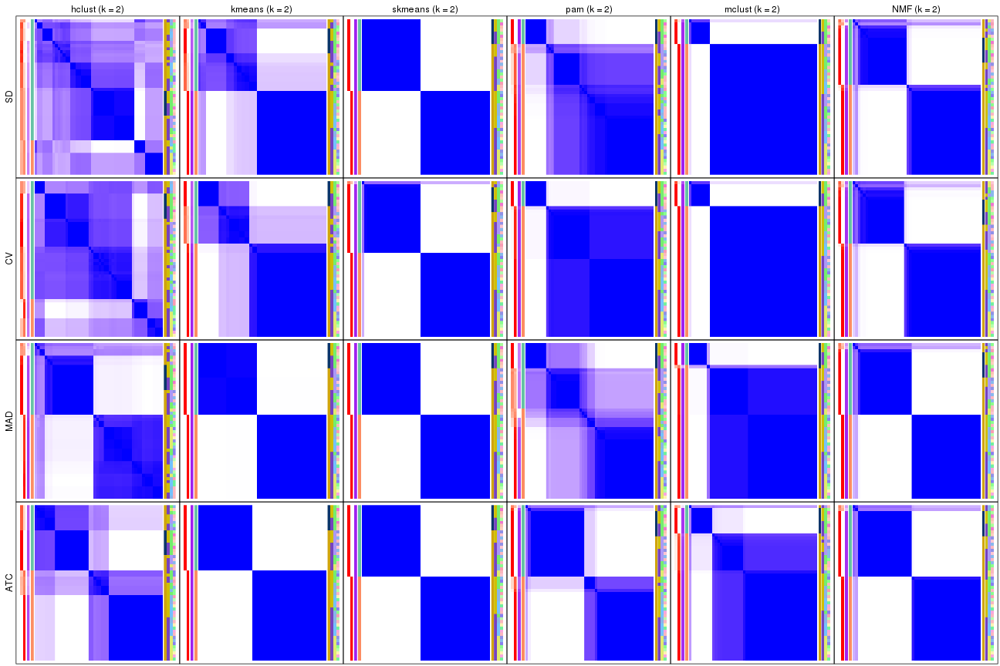
collect_plots(res_list, k = 3, fun = consensus_heatmap, mc.cores = 4)
collect_plots(res_list, k = 4, fun = consensus_heatmap, mc.cores = 4)
collect_plots(res_list, k = 5, fun = consensus_heatmap, mc.cores = 4)

collect_plots(res_list, k = 6, fun = consensus_heatmap, mc.cores = 4)
Membership heatmaps for all methods. (What is a membership heatmap?)
collect_plots(res_list, k = 2, fun = membership_heatmap, mc.cores = 4)
collect_plots(res_list, k = 3, fun = membership_heatmap, mc.cores = 4)
collect_plots(res_list, k = 4, fun = membership_heatmap, mc.cores = 4)
collect_plots(res_list, k = 5, fun = membership_heatmap, mc.cores = 4)
collect_plots(res_list, k = 6, fun = membership_heatmap, mc.cores = 4)
Signature heatmaps for all methods. (What is a signature heatmap?)
Note in following heatmaps, rows are scaled.
collect_plots(res_list, k = 2, fun = get_signatures, mc.cores = 4)
collect_plots(res_list, k = 3, fun = get_signatures, mc.cores = 4)

collect_plots(res_list, k = 4, fun = get_signatures, mc.cores = 4)
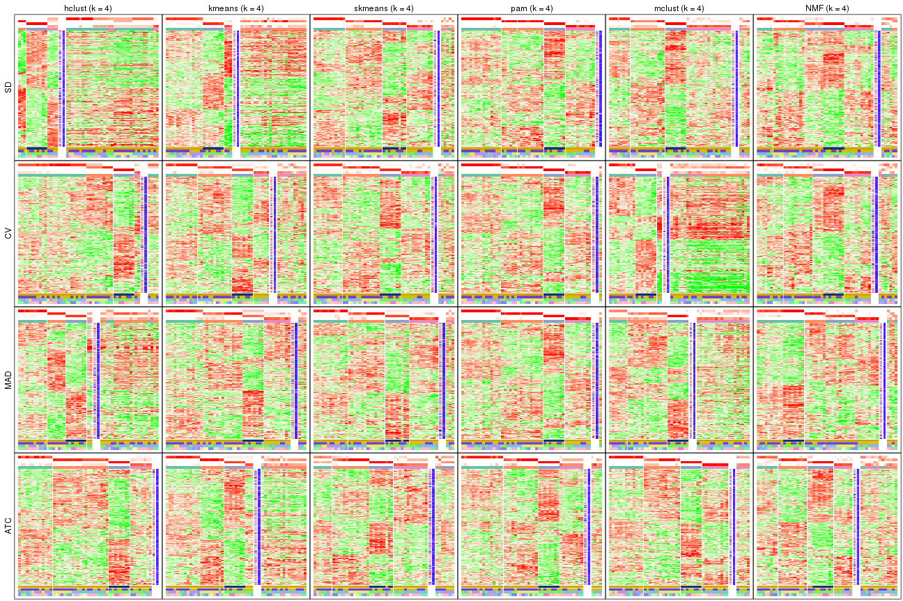
collect_plots(res_list, k = 5, fun = get_signatures, mc.cores = 4)
collect_plots(res_list, k = 6, fun = get_signatures, mc.cores = 4)
The statistics used for measuring the stability of consensus partitioning. (How are they defined?)
get_stats(res_list, k = 2)
#> k 1-PAC mean_silhouette concordance area_increased Rand Jaccard
#> SD:NMF 2 0.999 0.945 0.978 0.492 0.503 0.503
#> CV:NMF 2 0.998 0.965 0.984 0.485 0.510 0.510
#> MAD:NMF 2 1.000 0.964 0.985 0.504 0.493 0.493
#> ATC:NMF 2 1.000 0.961 0.984 0.504 0.493 0.493
#> SD:skmeans 2 1.000 1.000 1.000 0.507 0.493 0.493
#> CV:skmeans 2 1.000 0.982 0.993 0.506 0.493 0.493
#> MAD:skmeans 2 1.000 1.000 1.000 0.507 0.493 0.493
#> ATC:skmeans 2 1.000 1.000 1.000 0.507 0.493 0.493
#> SD:mclust 2 1.000 0.994 0.997 0.271 0.726 0.726
#> CV:mclust 2 1.000 0.994 0.997 0.271 0.726 0.726
#> MAD:mclust 2 1.000 0.973 0.890 0.262 0.754 0.754
#> ATC:mclust 2 0.933 0.929 0.965 0.312 0.699 0.699
#> SD:kmeans 2 0.600 0.906 0.924 0.457 0.493 0.493
#> CV:kmeans 2 0.628 0.917 0.928 0.429 0.510 0.510
#> MAD:kmeans 2 1.000 0.999 0.999 0.507 0.493 0.493
#> ATC:kmeans 2 1.000 1.000 1.000 0.498 0.503 0.503
#> SD:pam 2 0.651 0.887 0.931 0.333 0.726 0.726
#> CV:pam 2 1.000 0.982 0.987 0.285 0.726 0.726
#> MAD:pam 2 0.505 0.716 0.857 0.414 0.503 0.503
#> ATC:pam 2 0.846 0.939 0.973 0.505 0.493 0.493
#> SD:hclust 2 0.240 0.486 0.755 0.399 0.650 0.650
#> CV:hclust 2 0.317 0.729 0.843 0.361 0.628 0.628
#> MAD:hclust 2 0.901 0.877 0.940 0.488 0.493 0.493
#> ATC:hclust 2 0.554 0.817 0.914 0.479 0.503 0.503
get_stats(res_list, k = 3)
#> k 1-PAC mean_silhouette concordance area_increased Rand Jaccard
#> SD:NMF 3 0.743 0.839 0.927 0.372 0.678 0.441
#> CV:NMF 3 0.700 0.872 0.936 0.386 0.699 0.469
#> MAD:NMF 3 0.788 0.829 0.929 0.341 0.742 0.520
#> ATC:NMF 3 0.706 0.808 0.904 0.322 0.725 0.495
#> SD:skmeans 3 0.687 0.812 0.844 0.294 0.771 0.563
#> CV:skmeans 3 0.657 0.851 0.884 0.314 0.771 0.563
#> MAD:skmeans 3 0.833 0.886 0.934 0.311 0.799 0.608
#> ATC:skmeans 3 0.809 0.831 0.888 0.266 0.823 0.648
#> SD:mclust 3 0.995 0.946 0.965 0.802 0.778 0.694
#> CV:mclust 3 0.540 0.703 0.834 1.000 0.739 0.640
#> MAD:mclust 3 0.388 0.687 0.789 0.941 0.760 0.684
#> ATC:mclust 3 0.851 0.922 0.955 0.802 0.673 0.548
#> SD:kmeans 3 0.570 0.817 0.810 0.363 0.902 0.801
#> CV:kmeans 3 0.390 0.708 0.742 0.432 0.798 0.632
#> MAD:kmeans 3 0.610 0.406 0.753 0.263 0.941 0.881
#> ATC:kmeans 3 0.689 0.820 0.862 0.285 0.739 0.539
#> SD:pam 3 0.779 0.836 0.927 0.878 0.641 0.505
#> CV:pam 3 0.750 0.798 0.922 1.177 0.643 0.508
#> MAD:pam 3 0.822 0.951 0.970 0.515 0.739 0.539
#> ATC:pam 3 1.000 0.963 0.984 0.244 0.778 0.590
#> SD:hclust 3 0.356 0.335 0.597 0.409 0.458 0.304
#> CV:hclust 3 0.498 0.783 0.864 0.503 0.804 0.688
#> MAD:hclust 3 0.603 0.792 0.803 0.218 0.902 0.801
#> ATC:hclust 3 0.616 0.723 0.804 0.329 0.715 0.506
get_stats(res_list, k = 4)
#> k 1-PAC mean_silhouette concordance area_increased Rand Jaccard
#> SD:NMF 4 0.673 0.745 0.870 0.1134 0.784 0.453
#> CV:NMF 4 0.668 0.735 0.853 0.1287 0.820 0.513
#> MAD:NMF 4 0.734 0.791 0.881 0.0982 0.799 0.489
#> ATC:NMF 4 0.583 0.563 0.783 0.1261 0.730 0.347
#> SD:skmeans 4 0.774 0.759 0.877 0.1506 0.856 0.597
#> CV:skmeans 4 0.697 0.765 0.862 0.1333 0.875 0.642
#> MAD:skmeans 4 0.705 0.800 0.870 0.1348 0.891 0.682
#> ATC:skmeans 4 0.668 0.597 0.740 0.1277 0.887 0.674
#> SD:mclust 4 0.585 0.700 0.808 0.4001 0.767 0.538
#> CV:mclust 4 0.437 0.435 0.682 0.2980 0.745 0.488
#> MAD:mclust 4 0.531 0.528 0.722 0.3617 0.755 0.534
#> ATC:mclust 4 0.787 0.825 0.904 0.3197 0.807 0.550
#> SD:kmeans 4 0.599 0.561 0.726 0.1625 0.897 0.740
#> CV:kmeans 4 0.574 0.692 0.805 0.1835 0.802 0.524
#> MAD:kmeans 4 0.612 0.740 0.805 0.1353 0.778 0.511
#> ATC:kmeans 4 0.628 0.636 0.800 0.1423 0.900 0.736
#> SD:pam 4 0.997 0.956 0.980 0.1966 0.836 0.580
#> CV:pam 4 0.835 0.907 0.953 0.1868 0.799 0.514
#> MAD:pam 4 0.909 0.938 0.973 0.1901 0.837 0.583
#> ATC:pam 4 0.780 0.800 0.862 0.1772 0.826 0.561
#> SD:hclust 4 0.484 0.433 0.757 0.0714 0.651 0.389
#> CV:hclust 4 0.490 0.793 0.868 0.0784 0.984 0.962
#> MAD:hclust 4 0.601 0.479 0.773 0.1786 0.941 0.851
#> ATC:hclust 4 0.740 0.891 0.895 0.1229 0.903 0.739
get_stats(res_list, k = 5)
#> k 1-PAC mean_silhouette concordance area_increased Rand Jaccard
#> SD:NMF 5 0.979 0.940 0.969 0.0728 0.793 0.360
#> CV:NMF 5 0.949 0.903 0.954 0.0640 0.801 0.366
#> MAD:NMF 5 0.944 0.910 0.951 0.0868 0.851 0.504
#> ATC:NMF 5 0.675 0.705 0.814 0.0595 0.837 0.451
#> SD:skmeans 5 0.760 0.709 0.814 0.0665 0.919 0.693
#> CV:skmeans 5 0.744 0.680 0.819 0.0702 0.905 0.645
#> MAD:skmeans 5 0.747 0.711 0.756 0.0661 0.939 0.753
#> ATC:skmeans 5 0.701 0.653 0.756 0.0726 0.791 0.395
#> SD:mclust 5 0.821 0.856 0.920 0.1395 0.877 0.585
#> CV:mclust 5 0.770 0.768 0.888 0.1119 0.784 0.395
#> MAD:mclust 5 0.777 0.905 0.911 0.1149 0.806 0.453
#> ATC:mclust 5 0.821 0.857 0.914 0.0691 0.945 0.782
#> SD:kmeans 5 0.744 0.676 0.806 0.0814 0.869 0.591
#> CV:kmeans 5 0.756 0.790 0.856 0.0770 0.949 0.804
#> MAD:kmeans 5 0.747 0.716 0.783 0.0796 1.000 1.000
#> ATC:kmeans 5 0.714 0.644 0.722 0.0709 0.828 0.476
#> SD:pam 5 0.759 0.676 0.863 0.0681 0.897 0.624
#> CV:pam 5 0.771 0.446 0.770 0.0776 0.884 0.615
#> MAD:pam 5 0.813 0.579 0.800 0.0666 0.882 0.581
#> ATC:pam 5 0.830 0.879 0.883 0.0724 0.947 0.791
#> SD:hclust 5 0.708 0.525 0.780 0.2443 0.731 0.457
#> CV:hclust 5 0.684 0.769 0.884 0.2390 0.846 0.629
#> MAD:hclust 5 0.746 0.760 0.853 0.0843 0.842 0.558
#> ATC:hclust 5 0.783 0.806 0.884 0.0451 0.984 0.942
get_stats(res_list, k = 6)
#> k 1-PAC mean_silhouette concordance area_increased Rand Jaccard
#> SD:NMF 6 0.836 0.744 0.861 0.0331 0.967 0.838
#> CV:NMF 6 0.850 0.747 0.852 0.0316 0.975 0.872
#> MAD:NMF 6 0.818 0.736 0.841 0.0355 0.980 0.895
#> ATC:NMF 6 0.675 0.594 0.784 0.0307 0.995 0.975
#> SD:skmeans 6 0.761 0.747 0.840 0.0430 0.931 0.673
#> CV:skmeans 6 0.720 0.644 0.761 0.0416 0.918 0.621
#> MAD:skmeans 6 0.760 0.698 0.813 0.0423 0.953 0.762
#> ATC:skmeans 6 0.750 0.780 0.820 0.0484 0.915 0.653
#> SD:mclust 6 0.821 0.866 0.890 0.0735 0.918 0.620
#> CV:mclust 6 0.828 0.723 0.868 0.0448 0.868 0.502
#> MAD:mclust 6 0.808 0.613 0.797 0.0649 0.888 0.571
#> ATC:mclust 6 0.860 0.731 0.883 0.0401 0.945 0.752
#> SD:kmeans 6 0.767 0.752 0.769 0.0460 0.936 0.718
#> CV:kmeans 6 0.800 0.732 0.802 0.0427 0.981 0.918
#> MAD:kmeans 6 0.771 0.717 0.756 0.0455 0.907 0.643
#> ATC:kmeans 6 0.747 0.751 0.809 0.0487 0.937 0.700
#> SD:pam 6 0.845 0.716 0.888 0.0323 0.975 0.870
#> CV:pam 6 0.854 0.671 0.884 0.0297 0.889 0.572
#> MAD:pam 6 0.831 0.817 0.881 0.0419 0.920 0.637
#> ATC:pam 6 0.900 0.845 0.923 0.0610 0.931 0.682
#> SD:hclust 6 0.762 0.692 0.811 0.0448 0.891 0.655
#> CV:hclust 6 0.681 0.753 0.845 0.0375 0.983 0.934
#> MAD:hclust 6 0.740 0.788 0.813 0.0498 0.963 0.836
#> ATC:hclust 6 0.806 0.835 0.892 0.0213 0.990 0.963
Following heatmap plots the partition for each combination of methods and the lightness correspond to the silhouette scores for samples in each method. On top the consensus subgroup is inferred from all methods by taking the mean silhouette scores as weight.
collect_stats(res_list, k = 2)
collect_stats(res_list, k = 3)
collect_stats(res_list, k = 4)
collect_stats(res_list, k = 5)
collect_stats(res_list, k = 6)
Collect partitions from all methods:
collect_classes(res_list, k = 2)
collect_classes(res_list, k = 3)
collect_classes(res_list, k = 4)
collect_classes(res_list, k = 5)
collect_classes(res_list, k = 6)
Overlap of top rows from different top-row methods:
top_rows_overlap(res_list, top_n = 1000, method = "euler")
top_rows_overlap(res_list, top_n = 2000, method = "euler")
top_rows_overlap(res_list, top_n = 3000, method = "euler")
top_rows_overlap(res_list, top_n = 4000, method = "euler")
top_rows_overlap(res_list, top_n = 5000, method = "euler")
Also visualize the correspondance of rankings between different top-row methods:
top_rows_overlap(res_list, top_n = 1000, method = "correspondance")
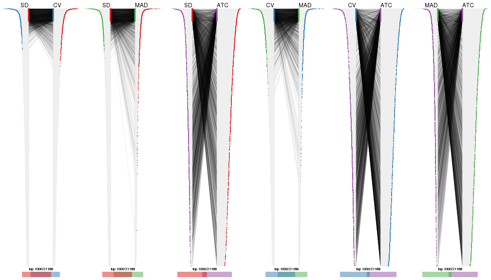
top_rows_overlap(res_list, top_n = 2000, method = "correspondance")
top_rows_overlap(res_list, top_n = 3000, method = "correspondance")
top_rows_overlap(res_list, top_n = 4000, method = "correspondance")
top_rows_overlap(res_list, top_n = 5000, method = "correspondance")
Heatmaps of the top rows:
top_rows_heatmap(res_list, top_n = 1000)
top_rows_heatmap(res_list, top_n = 2000)
top_rows_heatmap(res_list, top_n = 3000)
top_rows_heatmap(res_list, top_n = 4000)
top_rows_heatmap(res_list, top_n = 5000)
Test correlation between subgroups and known annotations. If the known annotation is numeric, one-way ANOVA test is applied, and if the known annotation is discrete, chi-squared contingency table test is applied.
test_to_known_factors(res_list, k = 2)
#> n cell.type(p) agent(p) time(p) individual(p) k
#> SD:NMF 49 8.68e-04 0.695 6.27e-05 2.59e-02 2
#> CV:NMF 50 7.09e-04 0.768 4.25e-05 2.01e-02 2
#> MAD:NMF 49 2.39e-03 0.544 1.54e-04 2.91e-02 2
#> ATC:NMF 49 2.39e-03 0.779 4.64e-05 1.60e-02 2
#> SD:skmeans 50 3.11e-03 0.685 9.25e-05 2.11e-02 2
#> CV:skmeans 49 2.39e-03 0.544 1.54e-04 2.91e-02 2
#> MAD:skmeans 50 3.11e-03 0.685 9.25e-05 2.11e-02 2
#> ATC:skmeans 50 3.11e-03 0.685 9.25e-05 2.11e-02 2
#> SD:mclust 50 5.95e-11 0.813 4.48e-04 6.11e-06 2
#> CV:mclust 50 5.95e-11 0.813 4.48e-04 6.11e-06 2
#> MAD:mclust 49 1.39e-10 1.000 9.80e-04 8.97e-06 2
#> ATC:mclust 49 9.35e-11 0.854 5.67e-04 8.97e-06 2
#> SD:kmeans 50 3.11e-03 0.685 9.25e-05 2.11e-02 2
#> CV:kmeans 50 7.09e-04 0.768 4.25e-05 2.01e-02 2
#> MAD:kmeans 50 3.11e-03 0.685 9.25e-05 2.11e-02 2
#> ATC:kmeans 50 1.21e-03 1.000 6.73e-06 7.80e-03 2
#> SD:pam 49 9.35e-11 0.854 5.67e-04 8.97e-06 2
#> CV:pam 50 5.95e-11 0.813 4.48e-04 6.11e-06 2
#> MAD:pam 47 2.18e-03 1.000 9.17e-06 1.29e-02 2
#> ATC:pam 49 2.39e-03 0.779 1.86e-05 1.60e-02 2
#> SD:hclust 36 9.06e-02 0.499 9.24e-04 3.92e-01 2
#> CV:hclust 46 1.60e-01 0.131 8.47e-05 1.18e-01 2
#> MAD:hclust 46 9.18e-04 0.566 2.31e-04 2.83e-02 2
#> ATC:hclust 47 2.18e-03 1.000 3.99e-05 1.58e-02 2
test_to_known_factors(res_list, k = 3)
#> n cell.type(p) agent(p) time(p) individual(p) k
#> SD:NMF 46 4.51e-05 0.000664 1.33e-07 4.18e-02 3
#> CV:NMF 50 1.49e-05 0.006249 1.30e-05 6.86e-03 3
#> MAD:NMF 45 3.31e-04 0.000644 6.63e-08 6.11e-02 3
#> ATC:NMF 47 4.24e-04 0.044546 3.80e-06 2.47e-02 3
#> SD:skmeans 49 9.76e-04 0.094631 6.17e-05 3.16e-04 3
#> CV:skmeans 49 9.76e-04 0.094631 6.17e-05 3.16e-04 3
#> MAD:skmeans 49 1.71e-03 0.047956 6.31e-05 6.74e-04 3
#> ATC:skmeans 49 2.83e-03 0.035015 1.90e-06 2.31e-03 3
#> SD:mclust 49 2.29e-11 0.290491 1.16e-04 1.95e-04 3
#> CV:mclust 46 1.03e-10 0.222990 7.61e-06 4.09e-04 3
#> MAD:mclust 42 7.58e-10 0.290749 1.30e-06 3.31e-04 3
#> ATC:mclust 50 1.39e-11 0.338540 5.23e-05 1.88e-07 3
#> SD:kmeans 48 3.78e-11 0.622056 9.30e-08 2.16e-05 3
#> CV:kmeans 45 1.69e-10 0.443747 7.09e-08 7.39e-05 3
#> MAD:kmeans 27 1.97e-01 0.223130 3.19e-03 1.02e-03 3
#> ATC:kmeans 48 3.78e-11 0.596328 5.84e-08 3.17e-05 3
#> SD:pam 44 2.79e-10 0.836413 1.01e-06 2.19e-06 3
#> CV:pam 43 4.60e-10 0.842297 2.21e-07 2.22e-05 3
#> MAD:pam 50 1.39e-11 0.730048 4.33e-07 2.19e-06 3
#> ATC:pam 50 1.39e-11 0.810776 1.13e-07 1.39e-05 3
#> SD:hclust 8 NA NA NA NA 3
#> CV:hclust 46 1.03e-10 0.175730 7.47e-06 1.10e-04 3
#> MAD:hclust 46 1.03e-10 0.253647 6.11e-06 1.65e-04 3
#> ATC:hclust 42 7.58e-10 0.631341 9.58e-07 2.28e-04 3
test_to_known_factors(res_list, k = 4)
#> n cell.type(p) agent(p) time(p) individual(p) k
#> SD:NMF 44 2.86e-04 0.000418 2.28e-04 6.78e-02 4
#> CV:NMF 43 1.28e-05 0.000880 1.66e-04 6.76e-02 4
#> MAD:NMF 46 1.76e-03 0.000589 8.57e-05 4.68e-02 4
#> ATC:NMF 36 6.67e-06 0.121184 3.16e-05 1.54e-02 4
#> SD:skmeans 45 1.81e-08 0.019635 1.63e-05 8.32e-05 4
#> CV:skmeans 44 1.51e-09 0.006026 3.69e-05 1.32e-04 4
#> MAD:skmeans 47 7.55e-09 0.059457 2.97e-06 1.08e-05 4
#> ATC:skmeans 43 4.32e-08 0.033966 4.49e-05 6.86e-04 4
#> SD:mclust 46 5.67e-10 0.033204 3.19e-06 4.51e-03 4
#> CV:mclust 20 4.54e-05 0.082085 3.17e-03 5.40e-02 4
#> MAD:mclust 30 3.06e-07 0.297259 4.02e-05 1.63e-03 4
#> ATC:mclust 45 9.25e-10 0.214722 1.52e-10 1.39e-05 4
#> SD:kmeans 25 3.73e-06 0.598957 7.45e-05 7.55e-05 4
#> CV:kmeans 39 1.74e-08 0.007748 1.56e-06 1.88e-04 4
#> MAD:kmeans 47 3.48e-10 0.035333 3.44e-07 3.79e-06 4
#> ATC:kmeans 33 3.22e-07 0.035931 2.14e-06 2.68e-02 4
#> SD:pam 50 7.99e-11 0.005935 1.26e-07 1.37e-05 4
#> CV:pam 49 1.30e-10 0.010631 2.55e-07 1.10e-05 4
#> MAD:pam 49 1.30e-10 0.010631 2.55e-07 1.10e-05 4
#> ATC:pam 46 5.67e-10 0.027439 2.14e-08 1.77e-05 4
#> SD:hclust 15 5.53e-04 0.874653 1.65e-03 8.57e-04 4
#> CV:hclust 46 5.67e-10 0.203783 1.10e-07 1.59e-07 4
#> MAD:hclust 28 3.63e-06 0.017082 2.01e-05 3.16e-02 4
#> ATC:hclust 50 7.99e-11 0.411903 8.74e-10 4.80e-05 4
test_to_known_factors(res_list, k = 5)
#> n cell.type(p) agent(p) time(p) individual(p) k
#> SD:NMF 50 3.61e-10 0.01885 1.26e-05 1.90e-06 5
#> CV:NMF 49 5.84e-10 0.02225 8.45e-06 1.43e-06 5
#> MAD:NMF 49 5.84e-10 0.01318 1.16e-05 9.26e-06 5
#> ATC:NMF 41 2.69e-08 0.00154 5.42e-07 1.14e-03 5
#> SD:skmeans 43 1.03e-08 0.07608 6.14e-06 1.68e-05 5
#> CV:skmeans 39 6.97e-08 0.08685 4.71e-04 1.91e-06 5
#> MAD:skmeans 42 1.67e-08 0.01940 1.12e-08 1.08e-03 5
#> ATC:skmeans 37 2.15e-06 0.70803 7.34e-06 8.42e-05 5
#> SD:mclust 48 9.44e-10 0.03260 1.77e-09 4.75e-04 5
#> CV:mclust 44 6.42e-09 0.00541 1.08e-06 9.66e-04 5
#> MAD:mclust 50 3.61e-10 0.23403 4.91e-10 1.10e-06 5
#> ATC:mclust 49 5.84e-10 0.40819 1.81e-11 5.55e-05 5
#> SD:kmeans 42 1.67e-08 0.06869 4.43e-05 2.89e-07 5
#> CV:kmeans 47 1.52e-09 0.03553 3.51e-05 1.72e-08 5
#> MAD:kmeans 48 2.13e-10 0.02861 6.12e-07 4.72e-06 5
#> ATC:kmeans 35 1.22e-07 0.40935 1.46e-06 3.61e-05 5
#> SD:pam 40 4.33e-08 0.08672 8.37e-08 8.39e-05 5
#> CV:pam 30 1.38e-06 0.10690 2.26e-04 1.15e-03 5
#> MAD:pam 29 5.04e-07 0.06336 8.63e-05 8.48e-03 5
#> ATC:pam 48 9.44e-10 0.02523 1.14e-10 9.28e-05 5
#> SD:hclust 28 3.63e-06 0.28360 7.17e-04 3.86e-05 5
#> CV:hclust 48 9.44e-10 0.03954 2.27e-08 1.75e-06 5
#> MAD:hclust 45 3.98e-09 0.09786 2.82e-05 1.19e-08 5
#> ATC:hclust 48 2.13e-10 0.60122 1.88e-09 1.54e-04 5
test_to_known_factors(res_list, k = 6)
#> n cell.type(p) agent(p) time(p) individual(p) k
#> SD:NMF 44 2.32e-08 0.42004 3.36e-05 1.02e-06 6
#> CV:NMF 42 5.89e-08 0.22160 4.32e-05 1.54e-05 6
#> MAD:NMF 43 3.70e-08 0.07660 2.26e-06 4.02e-04 6
#> ATC:NMF 37 1.80e-07 0.00595 1.30e-06 5.83e-03 6
#> SD:skmeans 44 2.32e-08 0.03246 5.47e-09 5.76e-04 6
#> CV:skmeans 38 3.77e-07 0.07969 2.28e-07 5.12e-03 6
#> MAD:skmeans 40 1.49e-07 0.04092 1.46e-08 2.90e-03 6
#> ATC:skmeans 45 1.45e-08 0.04581 3.90e-12 1.85e-03 6
#> SD:mclust 50 1.39e-09 0.00124 8.26e-09 8.46e-03 6
#> CV:mclust 39 2.37e-07 0.00110 3.73e-06 4.17e-04 6
#> MAD:mclust 38 3.77e-07 0.24499 1.92e-09 5.78e-04 6
#> ATC:mclust 44 6.42e-09 0.12781 3.17e-09 4.16e-03 6
#> SD:kmeans 41 9.38e-08 0.01671 1.67e-07 2.14e-05 6
#> CV:kmeans 45 3.98e-09 0.02438 3.97e-05 1.71e-07 6
#> MAD:kmeans 40 1.49e-07 0.19827 1.19e-07 3.84e-05 6
#> ATC:kmeans 45 1.45e-08 0.05610 2.02e-11 3.42e-03 6
#> SD:pam 40 1.49e-07 0.28354 1.68e-06 6.83e-08 6
#> CV:pam 38 3.77e-07 0.18997 3.57e-07 1.50e-07 6
#> MAD:pam 49 2.22e-09 0.00515 3.54e-07 8.57e-05 6
#> ATC:pam 46 9.08e-09 0.13268 9.02e-12 6.32e-04 6
#> SD:hclust 33 1.19e-06 0.04299 7.62e-07 1.64e-03 6
#> CV:hclust 42 5.89e-08 0.04418 9.07e-08 1.23e-06 6
#> MAD:hclust 46 9.08e-09 0.49319 1.48e-05 1.14e-08 6
#> ATC:hclust 48 9.44e-10 0.74988 4.16e-08 2.24e-05 6
The object with results only for a single top-value method and a single partition method can be extracted as:
res = res_list["SD", "hclust"]
# you can also extract it by
# res = res_list["SD:hclust"]
A summary of res and all the functions that can be applied to it:
res
#> A 'ConsensusPartition' object with k = 2, 3, 4, 5, 6.
#> On a matrix with 21168 rows and 50 columns.
#> Top rows (1000, 2000, 3000, 4000, 5000) are extracted by 'SD' method.
#> Subgroups are detected by 'hclust' method.
#> Performed in total 1250 partitions by row resampling.
#> Best k for subgroups seems to be 5.
#>
#> Following methods can be applied to this 'ConsensusPartition' object:
#> [1] "cola_report" "collect_classes" "collect_plots"
#> [4] "collect_stats" "colnames" "compare_signatures"
#> [7] "consensus_heatmap" "dimension_reduction" "functional_enrichment"
#> [10] "get_anno_col" "get_anno" "get_classes"
#> [13] "get_consensus" "get_matrix" "get_membership"
#> [16] "get_param" "get_signatures" "get_stats"
#> [19] "is_best_k" "is_stable_k" "membership_heatmap"
#> [22] "ncol" "nrow" "plot_ecdf"
#> [25] "rownames" "select_partition_number" "show"
#> [28] "suggest_best_k" "test_to_known_factors"
collect_plots() function collects all the plots made from res for all k (number of partitions)
into one single page to provide an easy and fast comparison between different k.
collect_plots(res)
The plots are:
k and the heatmap of
predicted classes for each k.k.k.k.All the plots in panels can be made by individual functions and they are plotted later in this section.
select_partition_number() produces several plots showing different
statistics for choosing “optimized” k. There are following statistics:
k;k, the area increased is defined as \(A_k - A_{k-1}\).The detailed explanations of these statistics can be found in the cola vignette.
Generally speaking, lower PAC score, higher mean silhouette score or higher
concordance corresponds to better partition. Rand index and Jaccard index
measure how similar the current partition is compared to partition with k-1.
If they are too similar, we won't accept k is better than k-1.
select_partition_number(res)
The numeric values for all these statistics can be obtained by get_stats().
get_stats(res)
#> k 1-PAC mean_silhouette concordance area_increased Rand Jaccard
#> 2 2 0.240 0.486 0.755 0.3988 0.650 0.650
#> 3 3 0.356 0.335 0.597 0.4085 0.458 0.304
#> 4 4 0.484 0.433 0.757 0.0714 0.651 0.389
#> 5 5 0.708 0.525 0.780 0.2443 0.731 0.457
#> 6 6 0.762 0.692 0.811 0.0448 0.891 0.655
suggest_best_k() suggests the best \(k\) based on these statistics. The rules are as follows:
suggest_best_k(res)
#> [1] 5
Following shows the table of the partitions (You need to click the show/hide
code output link to see it). The membership matrix (columns with name p*)
is inferred by
clue::cl_consensus()
function with the SE method. Basically the value in the membership matrix
represents the probability to belong to a certain group. The finall class
label for an item is determined with the group with highest probability it
belongs to.
In get_classes() function, the entropy is calculated from the membership
matrix and the silhouette score is calculated from the consensus matrix.
cbind(get_classes(res, k = 2), get_membership(res, k = 2))
#> class entropy silhouette p1 p2
#> GSM225374 1 0.966 0.6412 0.608 0.392
#> GSM225349 2 0.980 0.6361 0.416 0.584
#> GSM225367 2 0.971 0.5711 0.400 0.600
#> GSM225356 2 0.980 0.6361 0.416 0.584
#> GSM225353 2 0.980 0.6361 0.416 0.584
#> GSM225653 2 0.980 0.6361 0.416 0.584
#> GSM209847 2 0.980 0.6361 0.416 0.584
#> GSM225658 2 0.980 0.6361 0.416 0.584
#> GSM225370 1 0.955 0.6367 0.624 0.376
#> GSM225364 2 0.980 0.6361 0.416 0.584
#> GSM225645 1 0.767 -0.0798 0.776 0.224
#> GSM225350 1 0.760 0.5446 0.780 0.220
#> GSM225368 2 0.971 0.5711 0.400 0.600
#> GSM225357 1 0.738 0.5223 0.792 0.208
#> GSM225651 1 0.767 -0.0798 0.776 0.224
#> GSM225354 1 0.760 0.5446 0.780 0.220
#> GSM225360 1 1.000 -0.5585 0.504 0.496
#> GSM225657 1 0.966 0.6412 0.608 0.392
#> GSM225377 1 0.430 0.4429 0.912 0.088
#> GSM225656 1 0.966 0.6412 0.608 0.392
#> GSM225347 1 0.760 0.5446 0.780 0.220
#> GSM225660 1 0.966 0.6412 0.608 0.392
#> GSM225712 1 0.966 0.6412 0.608 0.392
#> GSM225663 1 0.966 0.6412 0.608 0.392
#> GSM225373 1 0.966 0.6412 0.608 0.392
#> GSM225366 1 0.311 0.3777 0.944 0.056
#> GSM225380 1 0.767 -0.0798 0.776 0.224
#> GSM225351 1 0.775 0.5356 0.772 0.228
#> GSM225369 2 0.971 0.5711 0.400 0.600
#> GSM225358 1 0.738 0.5223 0.792 0.208
#> GSM225649 1 0.767 -0.0798 0.776 0.224
#> GSM225355 1 0.775 0.5356 0.772 0.228
#> GSM225361 2 0.971 0.5711 0.400 0.600
#> GSM225655 1 0.595 0.1998 0.856 0.144
#> GSM225376 1 0.388 0.3510 0.924 0.076
#> GSM225654 1 0.595 0.1998 0.856 0.144
#> GSM225348 1 0.760 0.5446 0.780 0.220
#> GSM225659 1 0.204 0.4055 0.968 0.032
#> GSM225378 1 0.482 0.4875 0.896 0.104
#> GSM225661 1 0.311 0.3777 0.944 0.056
#> GSM225372 1 0.416 0.4094 0.916 0.084
#> GSM225365 1 0.966 0.6412 0.608 0.392
#> GSM225860 1 0.971 0.6382 0.600 0.400
#> GSM225875 1 0.971 0.6382 0.600 0.400
#> GSM225878 1 0.971 0.6382 0.600 0.400
#> GSM225885 1 0.971 0.6382 0.600 0.400
#> GSM225867 1 0.971 0.6382 0.600 0.400
#> GSM225871 1 0.971 0.6382 0.600 0.400
#> GSM225881 1 0.971 0.6382 0.600 0.400
#> GSM225887 1 0.971 0.6382 0.600 0.400
cbind(get_classes(res, k = 3), get_membership(res, k = 3))
#> class entropy silhouette p1 p2 p3
#> GSM225374 1 0.923 0.313 0.432 0.416 0.152
#> GSM225349 2 0.000 0.433 0.000 1.000 0.000
#> GSM225367 1 0.624 -0.095 0.560 0.440 0.000
#> GSM225356 2 0.000 0.433 0.000 1.000 0.000
#> GSM225353 2 0.000 0.433 0.000 1.000 0.000
#> GSM225653 2 0.000 0.433 0.000 1.000 0.000
#> GSM209847 2 0.000 0.433 0.000 1.000 0.000
#> GSM225658 2 0.000 0.433 0.000 1.000 0.000
#> GSM225370 1 0.922 0.300 0.440 0.408 0.152
#> GSM225364 2 0.000 0.433 0.000 1.000 0.000
#> GSM225645 2 0.627 0.169 0.452 0.548 0.000
#> GSM225350 2 0.601 0.142 0.372 0.628 0.000
#> GSM225368 1 0.624 -0.095 0.560 0.440 0.000
#> GSM225357 2 0.606 0.143 0.384 0.616 0.000
#> GSM225651 2 0.627 0.169 0.452 0.548 0.000
#> GSM225354 2 0.601 0.142 0.372 0.628 0.000
#> GSM225360 2 0.686 0.169 0.356 0.620 0.024
#> GSM225657 1 0.923 0.313 0.432 0.416 0.152
#> GSM225377 1 0.707 0.157 0.596 0.376 0.028
#> GSM225656 1 0.923 0.313 0.432 0.416 0.152
#> GSM225347 2 0.601 0.142 0.372 0.628 0.000
#> GSM225660 1 0.923 0.313 0.432 0.416 0.152
#> GSM225712 1 0.923 0.313 0.432 0.416 0.152
#> GSM225663 1 0.923 0.313 0.432 0.416 0.152
#> GSM225373 1 0.923 0.313 0.432 0.416 0.152
#> GSM225366 1 0.613 0.151 0.644 0.352 0.004
#> GSM225380 2 0.627 0.169 0.452 0.548 0.000
#> GSM225351 2 0.597 0.154 0.364 0.636 0.000
#> GSM225369 1 0.624 -0.095 0.560 0.440 0.000
#> GSM225358 2 0.606 0.143 0.384 0.616 0.000
#> GSM225649 2 0.627 0.169 0.452 0.548 0.000
#> GSM225355 2 0.597 0.154 0.364 0.636 0.000
#> GSM225361 2 0.621 0.115 0.428 0.572 0.000
#> GSM225655 1 0.615 0.018 0.592 0.408 0.000
#> GSM225376 1 0.601 0.118 0.628 0.372 0.000
#> GSM225654 1 0.615 0.018 0.592 0.408 0.000
#> GSM225348 2 0.601 0.142 0.372 0.628 0.000
#> GSM225659 1 0.625 0.145 0.620 0.376 0.004
#> GSM225378 1 0.728 0.135 0.564 0.404 0.032
#> GSM225661 1 0.613 0.151 0.644 0.352 0.004
#> GSM225372 1 0.698 0.175 0.632 0.336 0.032
#> GSM225365 1 0.923 0.313 0.432 0.416 0.152
#> GSM225860 3 0.000 1.000 0.000 0.000 1.000
#> GSM225875 3 0.000 1.000 0.000 0.000 1.000
#> GSM225878 3 0.000 1.000 0.000 0.000 1.000
#> GSM225885 3 0.000 1.000 0.000 0.000 1.000
#> GSM225867 3 0.000 1.000 0.000 0.000 1.000
#> GSM225871 3 0.000 1.000 0.000 0.000 1.000
#> GSM225881 3 0.000 1.000 0.000 0.000 1.000
#> GSM225887 3 0.000 1.000 0.000 0.000 1.000
cbind(get_classes(res, k = 4), get_membership(res, k = 4))
#> class entropy silhouette p1 p2 p3 p4
#> GSM225374 1 0.0188 0.4515 0.996 0.004 0 0.000
#> GSM225349 1 0.7648 0.1531 0.400 0.392 0 0.208
#> GSM225367 2 0.0376 1.0000 0.004 0.992 0 0.004
#> GSM225356 1 0.7648 0.1531 0.400 0.392 0 0.208
#> GSM225353 1 0.7648 0.1531 0.400 0.392 0 0.208
#> GSM225653 1 0.7648 0.1531 0.400 0.392 0 0.208
#> GSM209847 1 0.7648 0.1531 0.400 0.392 0 0.208
#> GSM225658 1 0.7648 0.1531 0.400 0.392 0 0.208
#> GSM225370 1 0.0707 0.4394 0.980 0.000 0 0.020
#> GSM225364 1 0.7648 0.1531 0.400 0.392 0 0.208
#> GSM225645 4 0.7414 0.5349 0.368 0.172 0 0.460
#> GSM225350 1 0.4420 0.4187 0.748 0.012 0 0.240
#> GSM225368 2 0.0376 1.0000 0.004 0.992 0 0.004
#> GSM225357 1 0.4927 0.3821 0.712 0.024 0 0.264
#> GSM225651 4 0.7414 0.5349 0.368 0.172 0 0.460
#> GSM225354 1 0.4420 0.4187 0.748 0.012 0 0.240
#> GSM225360 4 0.4149 0.3899 0.152 0.036 0 0.812
#> GSM225657 1 0.0188 0.4515 0.996 0.004 0 0.000
#> GSM225377 1 0.4855 -0.0919 0.600 0.000 0 0.400
#> GSM225656 1 0.0188 0.4515 0.996 0.004 0 0.000
#> GSM225347 1 0.4420 0.4187 0.748 0.012 0 0.240
#> GSM225660 1 0.0188 0.4515 0.996 0.004 0 0.000
#> GSM225712 1 0.0188 0.4515 0.996 0.004 0 0.000
#> GSM225663 1 0.0188 0.4515 0.996 0.004 0 0.000
#> GSM225373 1 0.0188 0.4515 0.996 0.004 0 0.000
#> GSM225366 1 0.4989 -0.2284 0.528 0.000 0 0.472
#> GSM225380 4 0.7414 0.5349 0.368 0.172 0 0.460
#> GSM225351 1 0.4642 0.4147 0.740 0.020 0 0.240
#> GSM225369 2 0.0376 1.0000 0.004 0.992 0 0.004
#> GSM225358 1 0.4927 0.3821 0.712 0.024 0 0.264
#> GSM225649 4 0.7414 0.5349 0.368 0.172 0 0.460
#> GSM225355 1 0.4642 0.4147 0.740 0.020 0 0.240
#> GSM225361 4 0.1302 0.1768 0.000 0.044 0 0.956
#> GSM225655 4 0.5112 0.3405 0.436 0.004 0 0.560
#> GSM225376 1 0.4999 -0.2572 0.508 0.000 0 0.492
#> GSM225654 4 0.5112 0.3405 0.436 0.004 0 0.560
#> GSM225348 1 0.4420 0.4187 0.748 0.012 0 0.240
#> GSM225659 1 0.4967 -0.1754 0.548 0.000 0 0.452
#> GSM225378 1 0.4679 0.0548 0.648 0.000 0 0.352
#> GSM225661 1 0.4989 -0.2284 0.528 0.000 0 0.472
#> GSM225372 1 0.4933 -0.1846 0.568 0.000 0 0.432
#> GSM225365 1 0.0188 0.4515 0.996 0.004 0 0.000
#> GSM225860 3 0.0000 1.0000 0.000 0.000 1 0.000
#> GSM225875 3 0.0000 1.0000 0.000 0.000 1 0.000
#> GSM225878 3 0.0000 1.0000 0.000 0.000 1 0.000
#> GSM225885 3 0.0000 1.0000 0.000 0.000 1 0.000
#> GSM225867 3 0.0000 1.0000 0.000 0.000 1 0.000
#> GSM225871 3 0.0000 1.0000 0.000 0.000 1 0.000
#> GSM225881 3 0.0000 1.0000 0.000 0.000 1 0.000
#> GSM225887 3 0.0000 1.0000 0.000 0.000 1 0.000
cbind(get_classes(res, k = 5), get_membership(res, k = 5))
#> class entropy silhouette p1 p2 p3 p4 p5
#> GSM225374 1 0.0000 0.913 1.000 0.000 0 0.000 0.000
#> GSM225349 2 0.4126 0.335 0.000 0.620 0 0.000 0.380
#> GSM225367 5 0.0000 1.000 0.000 0.000 0 0.000 1.000
#> GSM225356 2 0.4126 0.335 0.000 0.620 0 0.000 0.380
#> GSM225353 2 0.4126 0.335 0.000 0.620 0 0.000 0.380
#> GSM225653 2 0.4126 0.335 0.000 0.620 0 0.000 0.380
#> GSM209847 2 0.4126 0.335 0.000 0.620 0 0.000 0.380
#> GSM225658 2 0.4126 0.335 0.000 0.620 0 0.000 0.380
#> GSM225370 1 0.1845 0.827 0.928 0.056 0 0.016 0.000
#> GSM225364 2 0.4126 0.335 0.000 0.620 0 0.000 0.380
#> GSM225645 2 0.6543 0.276 0.020 0.556 0 0.256 0.168
#> GSM225350 2 0.0290 0.507 0.008 0.992 0 0.000 0.000
#> GSM225368 5 0.0000 1.000 0.000 0.000 0 0.000 1.000
#> GSM225357 2 0.0865 0.500 0.000 0.972 0 0.024 0.004
#> GSM225651 2 0.6543 0.276 0.020 0.556 0 0.256 0.168
#> GSM225354 2 0.0290 0.507 0.008 0.992 0 0.000 0.000
#> GSM225360 4 0.2648 0.475 0.152 0.000 0 0.848 0.000
#> GSM225657 1 0.0000 0.913 1.000 0.000 0 0.000 0.000
#> GSM225377 4 0.6814 0.408 0.304 0.348 0 0.348 0.000
#> GSM225656 1 0.0000 0.913 1.000 0.000 0 0.000 0.000
#> GSM225347 2 0.0290 0.507 0.008 0.992 0 0.000 0.000
#> GSM225660 1 0.0000 0.913 1.000 0.000 0 0.000 0.000
#> GSM225712 1 0.0000 0.913 1.000 0.000 0 0.000 0.000
#> GSM225663 1 0.0000 0.913 1.000 0.000 0 0.000 0.000
#> GSM225373 1 0.0000 0.913 1.000 0.000 0 0.000 0.000
#> GSM225366 2 0.6296 -0.464 0.152 0.440 0 0.408 0.000
#> GSM225380 2 0.6543 0.276 0.020 0.556 0 0.256 0.168
#> GSM225351 2 0.0000 0.510 0.000 1.000 0 0.000 0.000
#> GSM225369 5 0.0000 1.000 0.000 0.000 0 0.000 1.000
#> GSM225358 2 0.0865 0.500 0.000 0.972 0 0.024 0.004
#> GSM225649 2 0.6543 0.276 0.020 0.556 0 0.256 0.168
#> GSM225355 2 0.0000 0.510 0.000 1.000 0 0.000 0.000
#> GSM225361 4 0.0000 0.414 0.000 0.000 0 1.000 0.000
#> GSM225655 4 0.5096 0.432 0.036 0.444 0 0.520 0.000
#> GSM225376 2 0.6092 -0.443 0.124 0.464 0 0.412 0.000
#> GSM225654 4 0.5096 0.432 0.036 0.444 0 0.520 0.000
#> GSM225348 2 0.0290 0.507 0.008 0.992 0 0.000 0.000
#> GSM225659 2 0.5607 -0.373 0.080 0.540 0 0.380 0.000
#> GSM225378 1 0.6536 -0.296 0.468 0.220 0 0.312 0.000
#> GSM225661 2 0.6296 -0.464 0.152 0.440 0 0.408 0.000
#> GSM225372 2 0.6603 -0.499 0.212 0.400 0 0.388 0.000
#> GSM225365 1 0.0000 0.913 1.000 0.000 0 0.000 0.000
#> GSM225860 3 0.0000 1.000 0.000 0.000 1 0.000 0.000
#> GSM225875 3 0.0000 1.000 0.000 0.000 1 0.000 0.000
#> GSM225878 3 0.0000 1.000 0.000 0.000 1 0.000 0.000
#> GSM225885 3 0.0000 1.000 0.000 0.000 1 0.000 0.000
#> GSM225867 3 0.0000 1.000 0.000 0.000 1 0.000 0.000
#> GSM225871 3 0.0000 1.000 0.000 0.000 1 0.000 0.000
#> GSM225881 3 0.0000 1.000 0.000 0.000 1 0.000 0.000
#> GSM225887 3 0.0000 1.000 0.000 0.000 1 0.000 0.000
cbind(get_classes(res, k = 6), get_membership(res, k = 6))
#> class entropy silhouette p1 p2 p3 p4 p5 p6
#> GSM225374 1 0.0000 0.975 1.000 0.000 0 0.000 0 0.000
#> GSM225349 2 0.0000 0.590 0.000 1.000 0 0.000 0 0.000
#> GSM225367 5 0.0000 1.000 0.000 0.000 0 0.000 1 0.000
#> GSM225356 2 0.0000 0.590 0.000 1.000 0 0.000 0 0.000
#> GSM225353 2 0.0000 0.590 0.000 1.000 0 0.000 0 0.000
#> GSM225653 2 0.0000 0.590 0.000 1.000 0 0.000 0 0.000
#> GSM209847 2 0.0000 0.590 0.000 1.000 0 0.000 0 0.000
#> GSM225658 2 0.0000 0.590 0.000 1.000 0 0.000 0 0.000
#> GSM225370 1 0.1863 0.838 0.896 0.000 0 0.104 0 0.000
#> GSM225364 2 0.0000 0.590 0.000 1.000 0 0.000 0 0.000
#> GSM225645 2 0.3996 0.244 0.000 0.512 0 0.484 0 0.004
#> GSM225350 2 0.3867 0.462 0.000 0.512 0 0.488 0 0.000
#> GSM225368 5 0.0000 1.000 0.000 0.000 0 0.000 1 0.000
#> GSM225357 2 0.3843 0.484 0.000 0.548 0 0.452 0 0.000
#> GSM225651 2 0.3996 0.244 0.000 0.512 0 0.484 0 0.004
#> GSM225354 2 0.3867 0.462 0.000 0.512 0 0.488 0 0.000
#> GSM225360 6 0.5002 0.379 0.080 0.000 0 0.364 0 0.556
#> GSM225657 1 0.0000 0.975 1.000 0.000 0 0.000 0 0.000
#> GSM225377 4 0.3454 0.574 0.224 0.012 0 0.760 0 0.004
#> GSM225656 1 0.0000 0.975 1.000 0.000 0 0.000 0 0.000
#> GSM225347 2 0.3867 0.462 0.000 0.512 0 0.488 0 0.000
#> GSM225660 1 0.0000 0.975 1.000 0.000 0 0.000 0 0.000
#> GSM225712 1 0.0547 0.964 0.980 0.000 0 0.020 0 0.000
#> GSM225663 1 0.0000 0.975 1.000 0.000 0 0.000 0 0.000
#> GSM225373 1 0.0547 0.964 0.980 0.000 0 0.020 0 0.000
#> GSM225366 4 0.0937 0.727 0.040 0.000 0 0.960 0 0.000
#> GSM225380 2 0.3996 0.244 0.000 0.512 0 0.484 0 0.004
#> GSM225351 2 0.3864 0.471 0.000 0.520 0 0.480 0 0.000
#> GSM225369 5 0.0000 1.000 0.000 0.000 0 0.000 1 0.000
#> GSM225358 2 0.3843 0.484 0.000 0.548 0 0.452 0 0.000
#> GSM225649 2 0.3996 0.244 0.000 0.512 0 0.484 0 0.004
#> GSM225355 2 0.3864 0.471 0.000 0.520 0 0.480 0 0.000
#> GSM225361 6 0.0000 0.401 0.000 0.000 0 0.000 0 1.000
#> GSM225655 4 0.4751 0.494 0.000 0.076 0 0.624 0 0.300
#> GSM225376 4 0.2100 0.722 0.036 0.032 0 0.916 0 0.016
#> GSM225654 4 0.4751 0.494 0.000 0.076 0 0.624 0 0.300
#> GSM225348 2 0.3867 0.462 0.000 0.512 0 0.488 0 0.000
#> GSM225659 4 0.1471 0.671 0.004 0.064 0 0.932 0 0.000
#> GSM225378 4 0.3756 0.235 0.400 0.000 0 0.600 0 0.000
#> GSM225661 4 0.0937 0.727 0.040 0.000 0 0.960 0 0.000
#> GSM225372 4 0.1958 0.699 0.100 0.000 0 0.896 0 0.004
#> GSM225365 1 0.0000 0.975 1.000 0.000 0 0.000 0 0.000
#> GSM225860 3 0.0000 1.000 0.000 0.000 1 0.000 0 0.000
#> GSM225875 3 0.0000 1.000 0.000 0.000 1 0.000 0 0.000
#> GSM225878 3 0.0000 1.000 0.000 0.000 1 0.000 0 0.000
#> GSM225885 3 0.0000 1.000 0.000 0.000 1 0.000 0 0.000
#> GSM225867 3 0.0000 1.000 0.000 0.000 1 0.000 0 0.000
#> GSM225871 3 0.0000 1.000 0.000 0.000 1 0.000 0 0.000
#> GSM225881 3 0.0000 1.000 0.000 0.000 1 0.000 0 0.000
#> GSM225887 3 0.0000 1.000 0.000 0.000 1 0.000 0 0.000
Heatmaps for the consensus matrix. It visualizes the probability of two samples to be in a same group.
consensus_heatmap(res, k = 2)
consensus_heatmap(res, k = 3)
consensus_heatmap(res, k = 4)
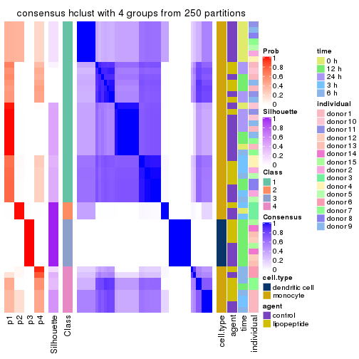
consensus_heatmap(res, k = 5)
consensus_heatmap(res, k = 6)
Heatmaps for the membership of samples in all partitions to see how consistent they are:
membership_heatmap(res, k = 2)
membership_heatmap(res, k = 3)
membership_heatmap(res, k = 4)
membership_heatmap(res, k = 5)
membership_heatmap(res, k = 6)
As soon as we have had the classes for columns, we can look for signatures which are significantly different between classes which can be candidate marks for certain classes. Following are the heatmaps for signatures.
Signature heatmaps where rows are scaled:
get_signatures(res, k = 2)
get_signatures(res, k = 3)

get_signatures(res, k = 4)
get_signatures(res, k = 5)
get_signatures(res, k = 6)
Signature heatmaps where rows are not scaled:
get_signatures(res, k = 2, scale_rows = FALSE)
get_signatures(res, k = 3, scale_rows = FALSE)

get_signatures(res, k = 4, scale_rows = FALSE)
get_signatures(res, k = 5, scale_rows = FALSE)
get_signatures(res, k = 6, scale_rows = FALSE)
Compare the overlap of signatures from different k:
compare_signatures(res)
get_signature() returns a data frame invisibly. TO get the list of signatures, the function
call should be assigned to a variable explicitly. In following code, if plot argument is set
to FALSE, no heatmap is plotted while only the differential analysis is performed.
# code only for demonstration
tb = get_signature(res, k = ..., plot = FALSE)
An example of the output of tb is:
#> which_row fdr mean_1 mean_2 scaled_mean_1 scaled_mean_2 km
#> 1 38 0.042760348 8.373488 9.131774 -0.5533452 0.5164555 1
#> 2 40 0.018707592 7.106213 8.469186 -0.6173731 0.5762149 1
#> 3 55 0.019134737 10.221463 11.207825 -0.6159697 0.5749050 1
#> 4 59 0.006059896 5.921854 7.869574 -0.6899429 0.6439467 1
#> 5 60 0.018055526 8.928898 10.211722 -0.6204761 0.5791110 1
#> 6 98 0.009384629 15.714769 14.887706 0.6635654 -0.6193277 2
...
The columns in tb are:
which_row: row indices corresponding to the input matrix.fdr: FDR for the differential test. mean_x: The mean value in group x.scaled_mean_x: The mean value in group x after rows are scaled.km: Row groups if k-means clustering is applied to rows.UMAP plot which shows how samples are separated.
dimension_reduction(res, k = 2, method = "UMAP")
dimension_reduction(res, k = 3, method = "UMAP")
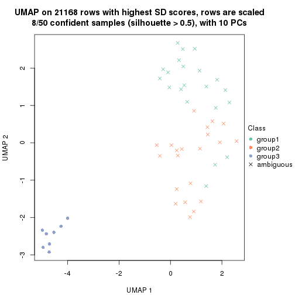
dimension_reduction(res, k = 4, method = "UMAP")
dimension_reduction(res, k = 5, method = "UMAP")
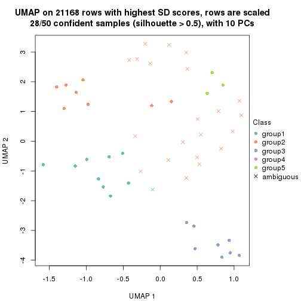
dimension_reduction(res, k = 6, method = "UMAP")
Following heatmap shows how subgroups are split when increasing k:
collect_classes(res)

Test correlation between subgroups and known annotations. If the known annotation is numeric, one-way ANOVA test is applied, and if the known annotation is discrete, chi-squared contingency table test is applied.
test_to_known_factors(res)
#> n cell.type(p) agent(p) time(p) individual(p) k
#> SD:hclust 36 9.06e-02 0.499 9.24e-04 3.92e-01 2
#> SD:hclust 8 NA NA NA NA 3
#> SD:hclust 15 5.53e-04 0.875 1.65e-03 8.57e-04 4
#> SD:hclust 28 3.63e-06 0.284 7.17e-04 3.86e-05 5
#> SD:hclust 33 1.19e-06 0.043 7.62e-07 1.64e-03 6
If matrix rows can be associated to genes, consider to use functional_enrichment(res,
...) to perform function enrichment for the signature genes. See this vignette for more detailed explanations.
The object with results only for a single top-value method and a single partition method can be extracted as:
res = res_list["SD", "kmeans"]
# you can also extract it by
# res = res_list["SD:kmeans"]
A summary of res and all the functions that can be applied to it:
res
#> A 'ConsensusPartition' object with k = 2, 3, 4, 5, 6.
#> On a matrix with 21168 rows and 50 columns.
#> Top rows (1000, 2000, 3000, 4000, 5000) are extracted by 'SD' method.
#> Subgroups are detected by 'kmeans' method.
#> Performed in total 1250 partitions by row resampling.
#> Best k for subgroups seems to be 2.
#>
#> Following methods can be applied to this 'ConsensusPartition' object:
#> [1] "cola_report" "collect_classes" "collect_plots"
#> [4] "collect_stats" "colnames" "compare_signatures"
#> [7] "consensus_heatmap" "dimension_reduction" "functional_enrichment"
#> [10] "get_anno_col" "get_anno" "get_classes"
#> [13] "get_consensus" "get_matrix" "get_membership"
#> [16] "get_param" "get_signatures" "get_stats"
#> [19] "is_best_k" "is_stable_k" "membership_heatmap"
#> [22] "ncol" "nrow" "plot_ecdf"
#> [25] "rownames" "select_partition_number" "show"
#> [28] "suggest_best_k" "test_to_known_factors"
collect_plots() function collects all the plots made from res for all k (number of partitions)
into one single page to provide an easy and fast comparison between different k.
collect_plots(res)
The plots are:
k and the heatmap of
predicted classes for each k.k.k.k.All the plots in panels can be made by individual functions and they are plotted later in this section.
select_partition_number() produces several plots showing different
statistics for choosing “optimized” k. There are following statistics:
k;k, the area increased is defined as \(A_k - A_{k-1}\).The detailed explanations of these statistics can be found in the cola vignette.
Generally speaking, lower PAC score, higher mean silhouette score or higher
concordance corresponds to better partition. Rand index and Jaccard index
measure how similar the current partition is compared to partition with k-1.
If they are too similar, we won't accept k is better than k-1.
select_partition_number(res)
The numeric values for all these statistics can be obtained by get_stats().
get_stats(res)
#> k 1-PAC mean_silhouette concordance area_increased Rand Jaccard
#> 2 2 0.600 0.906 0.924 0.4569 0.493 0.493
#> 3 3 0.570 0.817 0.810 0.3630 0.902 0.801
#> 4 4 0.599 0.561 0.726 0.1625 0.897 0.740
#> 5 5 0.744 0.676 0.806 0.0814 0.869 0.591
#> 6 6 0.767 0.752 0.769 0.0460 0.936 0.718
suggest_best_k() suggests the best \(k\) based on these statistics. The rules are as follows:
suggest_best_k(res)
#> [1] 2
Following shows the table of the partitions (You need to click the show/hide
code output link to see it). The membership matrix (columns with name p*)
is inferred by
clue::cl_consensus()
function with the SE method. Basically the value in the membership matrix
represents the probability to belong to a certain group. The finall class
label for an item is determined with the group with highest probability it
belongs to.
In get_classes() function, the entropy is calculated from the membership
matrix and the silhouette score is calculated from the consensus matrix.
cbind(get_classes(res, k = 2), get_membership(res, k = 2))
#> class entropy silhouette p1 p2
#> GSM225374 1 0.802 0.831 0.756 0.244
#> GSM225349 2 0.000 1.000 0.000 1.000
#> GSM225367 2 0.000 1.000 0.000 1.000
#> GSM225356 2 0.000 1.000 0.000 1.000
#> GSM225353 2 0.000 1.000 0.000 1.000
#> GSM225653 2 0.000 1.000 0.000 1.000
#> GSM209847 2 0.000 1.000 0.000 1.000
#> GSM225658 2 0.000 1.000 0.000 1.000
#> GSM225370 1 0.795 0.833 0.760 0.240
#> GSM225364 2 0.000 1.000 0.000 1.000
#> GSM225645 2 0.000 1.000 0.000 1.000
#> GSM225350 2 0.000 1.000 0.000 1.000
#> GSM225368 2 0.000 1.000 0.000 1.000
#> GSM225357 2 0.000 1.000 0.000 1.000
#> GSM225651 2 0.000 1.000 0.000 1.000
#> GSM225354 2 0.000 1.000 0.000 1.000
#> GSM225360 1 0.988 0.543 0.564 0.436
#> GSM225657 1 0.991 0.525 0.556 0.444
#> GSM225377 1 0.808 0.828 0.752 0.248
#> GSM225656 1 0.781 0.836 0.768 0.232
#> GSM225347 2 0.000 1.000 0.000 1.000
#> GSM225660 1 0.781 0.836 0.768 0.232
#> GSM225712 1 0.595 0.846 0.856 0.144
#> GSM225663 1 0.595 0.846 0.856 0.144
#> GSM225373 1 0.595 0.846 0.856 0.144
#> GSM225366 1 0.808 0.828 0.752 0.248
#> GSM225380 2 0.000 1.000 0.000 1.000
#> GSM225351 2 0.000 1.000 0.000 1.000
#> GSM225369 2 0.000 1.000 0.000 1.000
#> GSM225358 2 0.000 1.000 0.000 1.000
#> GSM225649 2 0.000 1.000 0.000 1.000
#> GSM225355 2 0.000 1.000 0.000 1.000
#> GSM225361 2 0.000 1.000 0.000 1.000
#> GSM225655 2 0.000 1.000 0.000 1.000
#> GSM225376 2 0.000 1.000 0.000 1.000
#> GSM225654 2 0.000 1.000 0.000 1.000
#> GSM225348 2 0.000 1.000 0.000 1.000
#> GSM225659 2 0.000 1.000 0.000 1.000
#> GSM225378 1 0.795 0.833 0.760 0.240
#> GSM225661 1 0.808 0.828 0.752 0.248
#> GSM225372 1 0.949 0.673 0.632 0.368
#> GSM225365 1 0.730 0.842 0.796 0.204
#> GSM225860 1 0.000 0.816 1.000 0.000
#> GSM225875 1 0.000 0.816 1.000 0.000
#> GSM225878 1 0.000 0.816 1.000 0.000
#> GSM225885 1 0.000 0.816 1.000 0.000
#> GSM225867 1 0.000 0.816 1.000 0.000
#> GSM225871 1 0.000 0.816 1.000 0.000
#> GSM225881 1 0.000 0.816 1.000 0.000
#> GSM225887 1 0.000 0.816 1.000 0.000
cbind(get_classes(res, k = 3), get_membership(res, k = 3))
#> class entropy silhouette p1 p2 p3
#> GSM225374 1 0.2301 0.802 0.936 0.060 0.004
#> GSM225349 2 0.4642 0.819 0.084 0.856 0.060
#> GSM225367 2 0.8280 0.730 0.092 0.564 0.344
#> GSM225356 2 0.4642 0.819 0.084 0.856 0.060
#> GSM225353 2 0.4556 0.821 0.080 0.860 0.060
#> GSM225653 2 0.4652 0.821 0.080 0.856 0.064
#> GSM209847 2 0.4642 0.819 0.084 0.856 0.060
#> GSM225658 2 0.4737 0.819 0.084 0.852 0.064
#> GSM225370 1 0.1267 0.826 0.972 0.024 0.004
#> GSM225364 2 0.4737 0.819 0.084 0.852 0.064
#> GSM225645 2 0.5977 0.800 0.020 0.728 0.252
#> GSM225350 2 0.2448 0.825 0.076 0.924 0.000
#> GSM225368 2 0.6912 0.738 0.028 0.628 0.344
#> GSM225357 2 0.2625 0.822 0.084 0.916 0.000
#> GSM225651 2 0.5731 0.803 0.020 0.752 0.228
#> GSM225354 2 0.2625 0.822 0.084 0.916 0.000
#> GSM225360 1 0.7995 0.485 0.608 0.088 0.304
#> GSM225657 1 0.6473 0.481 0.652 0.332 0.016
#> GSM225377 1 0.2443 0.817 0.940 0.032 0.028
#> GSM225656 1 0.1031 0.824 0.976 0.024 0.000
#> GSM225347 2 0.4409 0.749 0.172 0.824 0.004
#> GSM225660 1 0.0892 0.824 0.980 0.020 0.000
#> GSM225712 1 0.0661 0.813 0.988 0.008 0.004
#> GSM225663 1 0.0592 0.816 0.988 0.012 0.000
#> GSM225373 1 0.0661 0.813 0.988 0.008 0.004
#> GSM225366 1 0.4712 0.717 0.848 0.108 0.044
#> GSM225380 2 0.5285 0.793 0.004 0.752 0.244
#> GSM225351 2 0.1643 0.830 0.000 0.956 0.044
#> GSM225369 2 0.6600 0.730 0.012 0.604 0.384
#> GSM225358 2 0.1643 0.830 0.000 0.956 0.044
#> GSM225649 2 0.5365 0.790 0.004 0.744 0.252
#> GSM225355 2 0.1643 0.830 0.000 0.956 0.044
#> GSM225361 2 0.6404 0.726 0.012 0.644 0.344
#> GSM225655 2 0.3918 0.821 0.004 0.856 0.140
#> GSM225376 2 0.5285 0.790 0.004 0.752 0.244
#> GSM225654 2 0.5244 0.791 0.004 0.756 0.240
#> GSM225348 2 0.2229 0.830 0.012 0.944 0.044
#> GSM225659 2 0.4551 0.819 0.020 0.840 0.140
#> GSM225378 1 0.1585 0.822 0.964 0.028 0.008
#> GSM225661 1 0.3237 0.795 0.912 0.056 0.032
#> GSM225372 1 0.6850 0.600 0.720 0.072 0.208
#> GSM225365 1 0.0892 0.824 0.980 0.020 0.000
#> GSM225860 3 0.6126 1.000 0.400 0.000 0.600
#> GSM225875 3 0.6126 1.000 0.400 0.000 0.600
#> GSM225878 3 0.6126 1.000 0.400 0.000 0.600
#> GSM225885 3 0.6126 1.000 0.400 0.000 0.600
#> GSM225867 3 0.6126 1.000 0.400 0.000 0.600
#> GSM225871 3 0.6126 1.000 0.400 0.000 0.600
#> GSM225881 3 0.6126 1.000 0.400 0.000 0.600
#> GSM225887 3 0.6126 1.000 0.400 0.000 0.600
cbind(get_classes(res, k = 4), get_membership(res, k = 4))
#> class entropy silhouette p1 p2 p3 p4
#> GSM225374 1 0.2530 0.8722 0.912 0.008 0.072 0.008
#> GSM225349 2 0.7299 0.4493 0.092 0.584 0.036 0.288
#> GSM225367 4 0.3911 0.5926 0.024 0.092 0.028 0.856
#> GSM225356 2 0.7299 0.4493 0.092 0.584 0.036 0.288
#> GSM225353 2 0.7137 0.4232 0.068 0.568 0.036 0.328
#> GSM225653 2 0.7240 0.4253 0.076 0.564 0.036 0.324
#> GSM209847 2 0.7299 0.4493 0.092 0.584 0.036 0.288
#> GSM225658 2 0.7393 0.4358 0.092 0.564 0.036 0.308
#> GSM225370 1 0.2198 0.8771 0.920 0.008 0.072 0.000
#> GSM225364 2 0.7393 0.4358 0.092 0.564 0.036 0.308
#> GSM225645 4 0.6165 0.4900 0.072 0.284 0.004 0.640
#> GSM225350 2 0.5429 0.4757 0.068 0.732 0.004 0.196
#> GSM225368 4 0.2860 0.6239 0.004 0.100 0.008 0.888
#> GSM225357 2 0.5690 0.4781 0.084 0.716 0.004 0.196
#> GSM225651 4 0.6371 0.4604 0.072 0.324 0.004 0.600
#> GSM225354 2 0.5751 0.4782 0.088 0.712 0.004 0.196
#> GSM225360 1 0.5691 0.0991 0.520 0.012 0.008 0.460
#> GSM225657 1 0.3093 0.8116 0.884 0.092 0.004 0.020
#> GSM225377 1 0.1509 0.8588 0.960 0.020 0.012 0.008
#> GSM225656 1 0.2660 0.8781 0.908 0.008 0.072 0.012
#> GSM225347 2 0.5199 0.3783 0.240 0.720 0.004 0.036
#> GSM225660 1 0.2660 0.8781 0.908 0.008 0.072 0.012
#> GSM225712 1 0.2011 0.8734 0.920 0.000 0.080 0.000
#> GSM225663 1 0.2473 0.8743 0.908 0.000 0.080 0.012
#> GSM225373 1 0.2011 0.8734 0.920 0.000 0.080 0.000
#> GSM225366 1 0.5428 0.6572 0.744 0.164 0.004 0.088
#> GSM225380 2 0.6272 -0.3334 0.052 0.556 0.004 0.388
#> GSM225351 2 0.0188 0.4049 0.004 0.996 0.000 0.000
#> GSM225369 4 0.4442 0.6005 0.004 0.236 0.008 0.752
#> GSM225358 2 0.0000 0.4052 0.000 1.000 0.000 0.000
#> GSM225649 2 0.6158 -0.2960 0.056 0.560 0.000 0.384
#> GSM225355 2 0.0188 0.4049 0.004 0.996 0.000 0.000
#> GSM225361 4 0.6413 0.3996 0.052 0.392 0.008 0.548
#> GSM225655 2 0.5742 -0.1269 0.060 0.664 0.000 0.276
#> GSM225376 2 0.6348 -0.2738 0.060 0.568 0.004 0.368
#> GSM225654 2 0.6313 -0.2198 0.064 0.592 0.004 0.340
#> GSM225348 2 0.1004 0.3927 0.004 0.972 0.000 0.024
#> GSM225659 2 0.6614 -0.0482 0.180 0.644 0.004 0.172
#> GSM225378 1 0.2256 0.8747 0.924 0.020 0.056 0.000
#> GSM225661 1 0.3026 0.8299 0.900 0.056 0.012 0.032
#> GSM225372 1 0.4296 0.7414 0.824 0.060 0.004 0.112
#> GSM225365 1 0.2587 0.8767 0.908 0.004 0.076 0.012
#> GSM225860 3 0.3245 0.9561 0.056 0.000 0.880 0.064
#> GSM225875 3 0.1576 0.9823 0.048 0.000 0.948 0.004
#> GSM225878 3 0.1474 0.9826 0.052 0.000 0.948 0.000
#> GSM225885 3 0.1661 0.9823 0.052 0.000 0.944 0.004
#> GSM225867 3 0.3164 0.9560 0.052 0.000 0.884 0.064
#> GSM225871 3 0.1661 0.9823 0.052 0.000 0.944 0.004
#> GSM225881 3 0.1389 0.9826 0.048 0.000 0.952 0.000
#> GSM225887 3 0.1576 0.9823 0.048 0.000 0.948 0.004
cbind(get_classes(res, k = 5), get_membership(res, k = 5))
#> class entropy silhouette p1 p2 p3 p4 p5
#> GSM225374 1 0.0566 0.9080 0.984 0.000 0.004 0.000 0.012
#> GSM225349 2 0.3900 0.6508 0.012 0.788 0.020 0.000 0.180
#> GSM225367 5 0.4181 0.7082 0.000 0.132 0.004 0.076 0.788
#> GSM225356 2 0.3900 0.6508 0.012 0.788 0.020 0.000 0.180
#> GSM225353 2 0.4204 0.6288 0.012 0.752 0.020 0.000 0.216
#> GSM225653 2 0.4295 0.6190 0.012 0.740 0.020 0.000 0.228
#> GSM209847 2 0.3900 0.6508 0.012 0.788 0.020 0.000 0.180
#> GSM225658 2 0.4295 0.6190 0.012 0.740 0.020 0.000 0.228
#> GSM225370 1 0.0162 0.9101 0.996 0.000 0.004 0.000 0.000
#> GSM225364 2 0.4295 0.6190 0.012 0.740 0.020 0.000 0.228
#> GSM225645 4 0.6080 0.1321 0.000 0.272 0.000 0.560 0.168
#> GSM225350 2 0.2563 0.6880 0.008 0.872 0.000 0.120 0.000
#> GSM225368 5 0.5437 0.7919 0.000 0.128 0.000 0.220 0.652
#> GSM225357 2 0.2411 0.6882 0.008 0.884 0.000 0.108 0.000
#> GSM225651 4 0.5887 0.2183 0.000 0.252 0.000 0.592 0.156
#> GSM225354 2 0.2563 0.6880 0.008 0.872 0.000 0.120 0.000
#> GSM225360 4 0.6558 0.1385 0.268 0.000 0.004 0.504 0.224
#> GSM225657 1 0.1989 0.8872 0.932 0.032 0.000 0.020 0.016
#> GSM225377 1 0.2450 0.8611 0.896 0.000 0.000 0.076 0.028
#> GSM225656 1 0.0960 0.9104 0.972 0.000 0.004 0.008 0.016
#> GSM225347 2 0.4887 0.6169 0.068 0.740 0.004 0.176 0.012
#> GSM225660 1 0.0960 0.9104 0.972 0.000 0.004 0.008 0.016
#> GSM225712 1 0.0324 0.9099 0.992 0.000 0.004 0.000 0.004
#> GSM225663 1 0.0960 0.9104 0.972 0.000 0.004 0.008 0.016
#> GSM225373 1 0.0324 0.9099 0.992 0.000 0.004 0.000 0.004
#> GSM225366 4 0.5593 -0.0565 0.428 0.008 0.008 0.520 0.036
#> GSM225380 4 0.4591 0.4491 0.000 0.120 0.000 0.748 0.132
#> GSM225351 2 0.4064 0.5834 0.000 0.716 0.008 0.272 0.004
#> GSM225369 5 0.5179 0.7190 0.000 0.072 0.000 0.288 0.640
#> GSM225358 2 0.4088 0.5792 0.000 0.712 0.008 0.276 0.004
#> GSM225649 4 0.3962 0.4937 0.000 0.088 0.000 0.800 0.112
#> GSM225355 2 0.4088 0.5802 0.000 0.712 0.008 0.276 0.004
#> GSM225361 4 0.4159 0.3068 0.000 0.008 0.008 0.716 0.268
#> GSM225655 4 0.3360 0.5265 0.000 0.168 0.012 0.816 0.004
#> GSM225376 4 0.1202 0.5441 0.004 0.032 0.000 0.960 0.004
#> GSM225654 4 0.3280 0.5283 0.000 0.160 0.012 0.824 0.004
#> GSM225348 2 0.4280 0.5354 0.000 0.676 0.008 0.312 0.004
#> GSM225659 4 0.4468 0.5066 0.036 0.164 0.012 0.776 0.012
#> GSM225378 1 0.1981 0.8797 0.924 0.000 0.000 0.048 0.028
#> GSM225661 1 0.4573 0.7241 0.748 0.008 0.008 0.200 0.036
#> GSM225372 1 0.4909 0.2899 0.560 0.000 0.000 0.412 0.028
#> GSM225365 1 0.0960 0.9104 0.972 0.000 0.004 0.008 0.016
#> GSM225860 3 0.4054 0.8721 0.040 0.000 0.800 0.016 0.144
#> GSM225875 3 0.1484 0.9534 0.048 0.000 0.944 0.000 0.008
#> GSM225878 3 0.1197 0.9542 0.048 0.000 0.952 0.000 0.000
#> GSM225885 3 0.1805 0.9517 0.048 0.004 0.936 0.008 0.004
#> GSM225867 3 0.4054 0.8721 0.040 0.000 0.800 0.016 0.144
#> GSM225871 3 0.1484 0.9534 0.048 0.000 0.944 0.000 0.008
#> GSM225881 3 0.1197 0.9542 0.048 0.000 0.952 0.000 0.000
#> GSM225887 3 0.1805 0.9517 0.048 0.004 0.936 0.008 0.004
cbind(get_classes(res, k = 6), get_membership(res, k = 6))
#> class entropy silhouette p1 p2 p3 p4 p5 p6
#> GSM225374 1 0.0146 0.901 0.996 0.000 0.000 0.000 0.004 0.000
#> GSM225349 6 0.0508 0.916 0.004 0.012 0.000 0.000 0.000 0.984
#> GSM225367 5 0.2845 0.807 0.004 0.000 0.000 0.004 0.820 0.172
#> GSM225356 6 0.0508 0.916 0.004 0.012 0.000 0.000 0.000 0.984
#> GSM225353 6 0.0837 0.921 0.000 0.004 0.004 0.000 0.020 0.972
#> GSM225653 6 0.2044 0.915 0.008 0.028 0.000 0.004 0.040 0.920
#> GSM209847 6 0.0508 0.916 0.004 0.012 0.000 0.000 0.000 0.984
#> GSM225658 6 0.2044 0.915 0.008 0.028 0.000 0.004 0.040 0.920
#> GSM225370 1 0.0798 0.900 0.976 0.004 0.004 0.012 0.004 0.000
#> GSM225364 6 0.2044 0.915 0.008 0.028 0.000 0.004 0.040 0.920
#> GSM225645 4 0.7394 0.351 0.000 0.188 0.000 0.392 0.260 0.160
#> GSM225350 2 0.4224 0.797 0.000 0.512 0.000 0.004 0.008 0.476
#> GSM225368 5 0.2126 0.880 0.000 0.004 0.000 0.020 0.904 0.072
#> GSM225357 2 0.4224 0.794 0.004 0.512 0.000 0.000 0.008 0.476
#> GSM225651 4 0.7369 0.362 0.000 0.192 0.000 0.396 0.260 0.152
#> GSM225354 2 0.4224 0.794 0.004 0.512 0.000 0.000 0.008 0.476
#> GSM225360 4 0.6153 0.299 0.136 0.048 0.000 0.544 0.272 0.000
#> GSM225657 1 0.0458 0.898 0.984 0.016 0.000 0.000 0.000 0.000
#> GSM225377 1 0.3384 0.740 0.760 0.004 0.000 0.228 0.008 0.000
#> GSM225656 1 0.0405 0.902 0.988 0.008 0.004 0.000 0.000 0.000
#> GSM225347 2 0.4716 0.830 0.044 0.576 0.000 0.000 0.004 0.376
#> GSM225660 1 0.0405 0.902 0.988 0.008 0.004 0.000 0.000 0.000
#> GSM225712 1 0.0893 0.899 0.972 0.004 0.004 0.016 0.004 0.000
#> GSM225663 1 0.0405 0.902 0.988 0.008 0.004 0.000 0.000 0.000
#> GSM225373 1 0.0893 0.899 0.972 0.004 0.004 0.016 0.004 0.000
#> GSM225366 4 0.3789 0.424 0.196 0.040 0.004 0.760 0.000 0.000
#> GSM225380 4 0.7074 0.431 0.000 0.264 0.000 0.412 0.240 0.084
#> GSM225351 2 0.3898 0.862 0.000 0.652 0.000 0.012 0.000 0.336
#> GSM225369 5 0.2274 0.852 0.000 0.028 0.000 0.028 0.908 0.036
#> GSM225358 2 0.3953 0.855 0.000 0.656 0.000 0.016 0.000 0.328
#> GSM225649 4 0.6791 0.450 0.000 0.264 0.000 0.440 0.240 0.056
#> GSM225355 2 0.3898 0.862 0.000 0.652 0.000 0.012 0.000 0.336
#> GSM225361 4 0.6039 0.344 0.000 0.216 0.000 0.436 0.344 0.004
#> GSM225655 4 0.4312 0.504 0.000 0.396 0.000 0.584 0.008 0.012
#> GSM225376 4 0.4632 0.547 0.000 0.248 0.000 0.680 0.060 0.012
#> GSM225654 4 0.3650 0.515 0.000 0.280 0.000 0.708 0.000 0.012
#> GSM225348 2 0.4150 0.847 0.000 0.652 0.000 0.028 0.000 0.320
#> GSM225659 4 0.3608 0.514 0.000 0.272 0.000 0.716 0.000 0.012
#> GSM225378 1 0.3415 0.742 0.760 0.004 0.004 0.228 0.004 0.000
#> GSM225661 1 0.4107 0.392 0.540 0.004 0.004 0.452 0.000 0.000
#> GSM225372 4 0.3894 0.196 0.324 0.004 0.000 0.664 0.008 0.000
#> GSM225365 1 0.0405 0.902 0.988 0.008 0.004 0.000 0.000 0.000
#> GSM225860 3 0.4939 0.780 0.004 0.140 0.724 0.084 0.048 0.000
#> GSM225875 3 0.0982 0.921 0.004 0.000 0.968 0.004 0.020 0.004
#> GSM225878 3 0.0146 0.924 0.004 0.000 0.996 0.000 0.000 0.000
#> GSM225885 3 0.0551 0.923 0.004 0.004 0.984 0.008 0.000 0.000
#> GSM225867 3 0.4939 0.780 0.004 0.140 0.724 0.084 0.048 0.000
#> GSM225871 3 0.0982 0.921 0.004 0.000 0.968 0.004 0.020 0.004
#> GSM225881 3 0.0146 0.924 0.004 0.000 0.996 0.000 0.000 0.000
#> GSM225887 3 0.0551 0.923 0.004 0.004 0.984 0.008 0.000 0.000
Heatmaps for the consensus matrix. It visualizes the probability of two samples to be in a same group.
consensus_heatmap(res, k = 2)
consensus_heatmap(res, k = 3)
consensus_heatmap(res, k = 4)
consensus_heatmap(res, k = 5)

consensus_heatmap(res, k = 6)
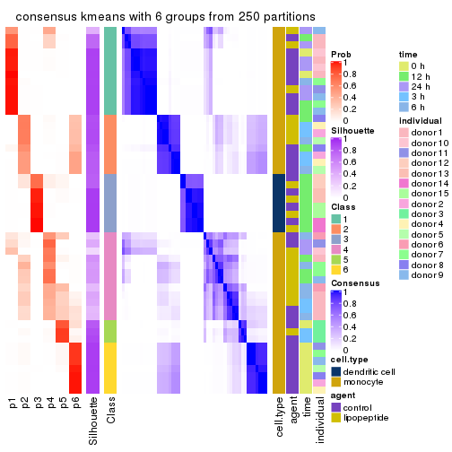
Heatmaps for the membership of samples in all partitions to see how consistent they are:
membership_heatmap(res, k = 2)
membership_heatmap(res, k = 3)
membership_heatmap(res, k = 4)
membership_heatmap(res, k = 5)
membership_heatmap(res, k = 6)
As soon as we have had the classes for columns, we can look for signatures which are significantly different between classes which can be candidate marks for certain classes. Following are the heatmaps for signatures.
Signature heatmaps where rows are scaled:
get_signatures(res, k = 2)
get_signatures(res, k = 3)
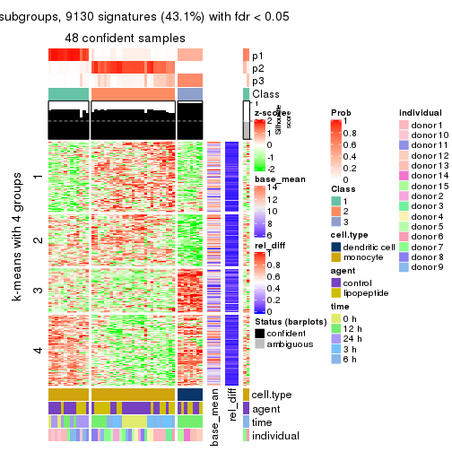
get_signatures(res, k = 4)
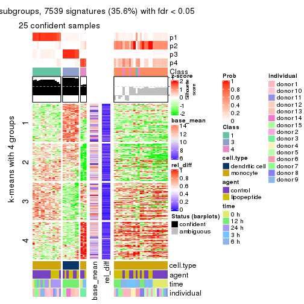
get_signatures(res, k = 5)
get_signatures(res, k = 6)
Signature heatmaps where rows are not scaled:
get_signatures(res, k = 2, scale_rows = FALSE)
get_signatures(res, k = 3, scale_rows = FALSE)
get_signatures(res, k = 4, scale_rows = FALSE)

get_signatures(res, k = 5, scale_rows = FALSE)
get_signatures(res, k = 6, scale_rows = FALSE)
Compare the overlap of signatures from different k:
compare_signatures(res)
get_signature() returns a data frame invisibly. TO get the list of signatures, the function
call should be assigned to a variable explicitly. In following code, if plot argument is set
to FALSE, no heatmap is plotted while only the differential analysis is performed.
# code only for demonstration
tb = get_signature(res, k = ..., plot = FALSE)
An example of the output of tb is:
#> which_row fdr mean_1 mean_2 scaled_mean_1 scaled_mean_2 km
#> 1 38 0.042760348 8.373488 9.131774 -0.5533452 0.5164555 1
#> 2 40 0.018707592 7.106213 8.469186 -0.6173731 0.5762149 1
#> 3 55 0.019134737 10.221463 11.207825 -0.6159697 0.5749050 1
#> 4 59 0.006059896 5.921854 7.869574 -0.6899429 0.6439467 1
#> 5 60 0.018055526 8.928898 10.211722 -0.6204761 0.5791110 1
#> 6 98 0.009384629 15.714769 14.887706 0.6635654 -0.6193277 2
...
The columns in tb are:
which_row: row indices corresponding to the input matrix.fdr: FDR for the differential test. mean_x: The mean value in group x.scaled_mean_x: The mean value in group x after rows are scaled.km: Row groups if k-means clustering is applied to rows.UMAP plot which shows how samples are separated.
dimension_reduction(res, k = 2, method = "UMAP")
dimension_reduction(res, k = 3, method = "UMAP")
dimension_reduction(res, k = 4, method = "UMAP")
dimension_reduction(res, k = 5, method = "UMAP")
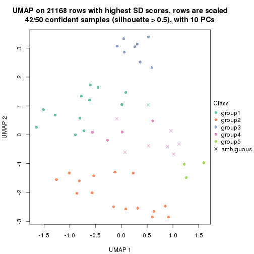
dimension_reduction(res, k = 6, method = "UMAP")
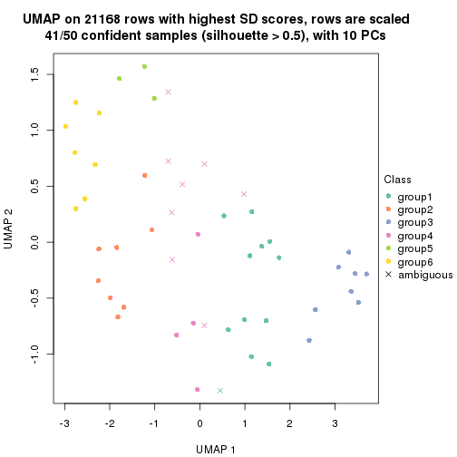
Following heatmap shows how subgroups are split when increasing k:
collect_classes(res)
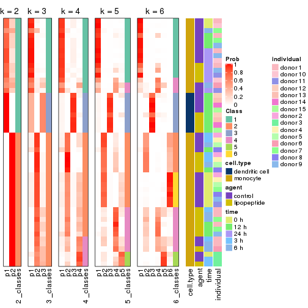
Test correlation between subgroups and known annotations. If the known annotation is numeric, one-way ANOVA test is applied, and if the known annotation is discrete, chi-squared contingency table test is applied.
test_to_known_factors(res)
#> n cell.type(p) agent(p) time(p) individual(p) k
#> SD:kmeans 50 3.11e-03 0.6852 9.25e-05 2.11e-02 2
#> SD:kmeans 48 3.78e-11 0.6221 9.30e-08 2.16e-05 3
#> SD:kmeans 25 3.73e-06 0.5990 7.45e-05 7.55e-05 4
#> SD:kmeans 42 1.67e-08 0.0687 4.43e-05 2.89e-07 5
#> SD:kmeans 41 9.38e-08 0.0167 1.67e-07 2.14e-05 6
If matrix rows can be associated to genes, consider to use functional_enrichment(res,
...) to perform function enrichment for the signature genes. See this vignette for more detailed explanations.
The object with results only for a single top-value method and a single partition method can be extracted as:
res = res_list["SD", "skmeans"]
# you can also extract it by
# res = res_list["SD:skmeans"]
A summary of res and all the functions that can be applied to it:
res
#> A 'ConsensusPartition' object with k = 2, 3, 4, 5, 6.
#> On a matrix with 21168 rows and 50 columns.
#> Top rows (1000, 2000, 3000, 4000, 5000) are extracted by 'SD' method.
#> Subgroups are detected by 'skmeans' method.
#> Performed in total 1250 partitions by row resampling.
#> Best k for subgroups seems to be 2.
#>
#> Following methods can be applied to this 'ConsensusPartition' object:
#> [1] "cola_report" "collect_classes" "collect_plots"
#> [4] "collect_stats" "colnames" "compare_signatures"
#> [7] "consensus_heatmap" "dimension_reduction" "functional_enrichment"
#> [10] "get_anno_col" "get_anno" "get_classes"
#> [13] "get_consensus" "get_matrix" "get_membership"
#> [16] "get_param" "get_signatures" "get_stats"
#> [19] "is_best_k" "is_stable_k" "membership_heatmap"
#> [22] "ncol" "nrow" "plot_ecdf"
#> [25] "rownames" "select_partition_number" "show"
#> [28] "suggest_best_k" "test_to_known_factors"
collect_plots() function collects all the plots made from res for all k (number of partitions)
into one single page to provide an easy and fast comparison between different k.
collect_plots(res)
The plots are:
k and the heatmap of
predicted classes for each k.k.k.k.All the plots in panels can be made by individual functions and they are plotted later in this section.
select_partition_number() produces several plots showing different
statistics for choosing “optimized” k. There are following statistics:
k;k, the area increased is defined as \(A_k - A_{k-1}\).The detailed explanations of these statistics can be found in the cola vignette.
Generally speaking, lower PAC score, higher mean silhouette score or higher
concordance corresponds to better partition. Rand index and Jaccard index
measure how similar the current partition is compared to partition with k-1.
If they are too similar, we won't accept k is better than k-1.
select_partition_number(res)
The numeric values for all these statistics can be obtained by get_stats().
get_stats(res)
#> k 1-PAC mean_silhouette concordance area_increased Rand Jaccard
#> 2 2 1.000 1.000 1.000 0.5074 0.493 0.493
#> 3 3 0.687 0.812 0.844 0.2939 0.771 0.563
#> 4 4 0.774 0.759 0.877 0.1506 0.856 0.597
#> 5 5 0.760 0.709 0.814 0.0665 0.919 0.693
#> 6 6 0.761 0.747 0.840 0.0430 0.931 0.673
suggest_best_k() suggests the best \(k\) based on these statistics. The rules are as follows:
suggest_best_k(res)
#> [1] 2
Following shows the table of the partitions (You need to click the show/hide
code output link to see it). The membership matrix (columns with name p*)
is inferred by
clue::cl_consensus()
function with the SE method. Basically the value in the membership matrix
represents the probability to belong to a certain group. The finall class
label for an item is determined with the group with highest probability it
belongs to.
In get_classes() function, the entropy is calculated from the membership
matrix and the silhouette score is calculated from the consensus matrix.
cbind(get_classes(res, k = 2), get_membership(res, k = 2))
#> class entropy silhouette p1 p2
#> GSM225374 1 0 1 1 0
#> GSM225349 2 0 1 0 1
#> GSM225367 2 0 1 0 1
#> GSM225356 2 0 1 0 1
#> GSM225353 2 0 1 0 1
#> GSM225653 2 0 1 0 1
#> GSM209847 2 0 1 0 1
#> GSM225658 2 0 1 0 1
#> GSM225370 1 0 1 1 0
#> GSM225364 2 0 1 0 1
#> GSM225645 2 0 1 0 1
#> GSM225350 2 0 1 0 1
#> GSM225368 2 0 1 0 1
#> GSM225357 2 0 1 0 1
#> GSM225651 2 0 1 0 1
#> GSM225354 2 0 1 0 1
#> GSM225360 1 0 1 1 0
#> GSM225657 1 0 1 1 0
#> GSM225377 1 0 1 1 0
#> GSM225656 1 0 1 1 0
#> GSM225347 2 0 1 0 1
#> GSM225660 1 0 1 1 0
#> GSM225712 1 0 1 1 0
#> GSM225663 1 0 1 1 0
#> GSM225373 1 0 1 1 0
#> GSM225366 1 0 1 1 0
#> GSM225380 2 0 1 0 1
#> GSM225351 2 0 1 0 1
#> GSM225369 2 0 1 0 1
#> GSM225358 2 0 1 0 1
#> GSM225649 2 0 1 0 1
#> GSM225355 2 0 1 0 1
#> GSM225361 2 0 1 0 1
#> GSM225655 2 0 1 0 1
#> GSM225376 2 0 1 0 1
#> GSM225654 2 0 1 0 1
#> GSM225348 2 0 1 0 1
#> GSM225659 2 0 1 0 1
#> GSM225378 1 0 1 1 0
#> GSM225661 1 0 1 1 0
#> GSM225372 1 0 1 1 0
#> GSM225365 1 0 1 1 0
#> GSM225860 1 0 1 1 0
#> GSM225875 1 0 1 1 0
#> GSM225878 1 0 1 1 0
#> GSM225885 1 0 1 1 0
#> GSM225867 1 0 1 1 0
#> GSM225871 1 0 1 1 0
#> GSM225881 1 0 1 1 0
#> GSM225887 1 0 1 1 0
cbind(get_classes(res, k = 3), get_membership(res, k = 3))
#> class entropy silhouette p1 p2 p3
#> GSM225374 1 0.5678 0.831 0.684 0.316 0.000
#> GSM225349 2 0.5016 0.876 0.000 0.760 0.240
#> GSM225367 3 0.4605 0.670 0.000 0.204 0.796
#> GSM225356 2 0.5016 0.876 0.000 0.760 0.240
#> GSM225353 2 0.5016 0.876 0.000 0.760 0.240
#> GSM225653 2 0.5016 0.876 0.000 0.760 0.240
#> GSM209847 2 0.5016 0.876 0.000 0.760 0.240
#> GSM225658 2 0.5016 0.876 0.000 0.760 0.240
#> GSM225370 1 0.5016 0.886 0.760 0.240 0.000
#> GSM225364 2 0.5016 0.876 0.000 0.760 0.240
#> GSM225645 3 0.2796 0.826 0.000 0.092 0.908
#> GSM225350 2 0.5138 0.874 0.000 0.748 0.252
#> GSM225368 3 0.2878 0.823 0.000 0.096 0.904
#> GSM225357 2 0.5138 0.874 0.000 0.748 0.252
#> GSM225651 3 0.2711 0.829 0.000 0.088 0.912
#> GSM225354 2 0.5138 0.874 0.000 0.748 0.252
#> GSM225360 3 0.7932 0.528 0.140 0.200 0.660
#> GSM225657 2 0.6295 -0.544 0.472 0.528 0.000
#> GSM225377 1 0.5016 0.886 0.760 0.240 0.000
#> GSM225656 1 0.5016 0.886 0.760 0.240 0.000
#> GSM225347 2 0.4974 0.770 0.000 0.764 0.236
#> GSM225660 1 0.5016 0.886 0.760 0.240 0.000
#> GSM225712 1 0.5016 0.886 0.760 0.240 0.000
#> GSM225663 1 0.5016 0.886 0.760 0.240 0.000
#> GSM225373 1 0.5016 0.886 0.760 0.240 0.000
#> GSM225366 1 0.3851 0.736 0.860 0.004 0.136
#> GSM225380 3 0.0747 0.862 0.000 0.016 0.984
#> GSM225351 2 0.5785 0.825 0.000 0.668 0.332
#> GSM225369 3 0.0892 0.862 0.000 0.020 0.980
#> GSM225358 2 0.6062 0.764 0.000 0.616 0.384
#> GSM225649 3 0.0237 0.862 0.000 0.004 0.996
#> GSM225355 2 0.5785 0.825 0.000 0.668 0.332
#> GSM225361 3 0.0000 0.861 0.000 0.000 1.000
#> GSM225655 3 0.1163 0.848 0.000 0.028 0.972
#> GSM225376 3 0.0000 0.861 0.000 0.000 1.000
#> GSM225654 3 0.0237 0.861 0.000 0.004 0.996
#> GSM225348 2 0.5810 0.822 0.000 0.664 0.336
#> GSM225659 3 0.1753 0.834 0.000 0.048 0.952
#> GSM225378 1 0.5244 0.884 0.756 0.240 0.004
#> GSM225661 1 0.5158 0.885 0.764 0.232 0.004
#> GSM225372 3 0.7496 0.536 0.088 0.240 0.672
#> GSM225365 1 0.5016 0.886 0.760 0.240 0.000
#> GSM225860 1 0.0000 0.861 1.000 0.000 0.000
#> GSM225875 1 0.0000 0.861 1.000 0.000 0.000
#> GSM225878 1 0.0000 0.861 1.000 0.000 0.000
#> GSM225885 1 0.0000 0.861 1.000 0.000 0.000
#> GSM225867 1 0.0000 0.861 1.000 0.000 0.000
#> GSM225871 1 0.0000 0.861 1.000 0.000 0.000
#> GSM225881 1 0.0000 0.861 1.000 0.000 0.000
#> GSM225887 1 0.0000 0.861 1.000 0.000 0.000
cbind(get_classes(res, k = 4), get_membership(res, k = 4))
#> class entropy silhouette p1 p2 p3 p4
#> GSM225374 1 0.0779 0.951 0.980 0.004 0.016 0.000
#> GSM225349 2 0.0000 0.760 0.000 1.000 0.000 0.000
#> GSM225367 2 0.5143 -0.279 0.000 0.540 0.004 0.456
#> GSM225356 2 0.0000 0.760 0.000 1.000 0.000 0.000
#> GSM225353 2 0.0779 0.752 0.000 0.980 0.004 0.016
#> GSM225653 2 0.0779 0.752 0.000 0.980 0.004 0.016
#> GSM209847 2 0.0000 0.760 0.000 1.000 0.000 0.000
#> GSM225658 2 0.0469 0.756 0.000 0.988 0.000 0.012
#> GSM225370 1 0.0592 0.952 0.984 0.000 0.016 0.000
#> GSM225364 2 0.0657 0.755 0.000 0.984 0.004 0.012
#> GSM225645 4 0.4950 0.542 0.000 0.376 0.004 0.620
#> GSM225350 2 0.3166 0.746 0.000 0.868 0.016 0.116
#> GSM225368 4 0.5070 0.480 0.000 0.416 0.004 0.580
#> GSM225357 2 0.2546 0.754 0.000 0.900 0.008 0.092
#> GSM225651 4 0.4837 0.575 0.000 0.348 0.004 0.648
#> GSM225354 2 0.3224 0.745 0.000 0.864 0.016 0.120
#> GSM225360 4 0.6317 0.168 0.412 0.008 0.044 0.536
#> GSM225657 1 0.1182 0.936 0.968 0.016 0.016 0.000
#> GSM225377 1 0.0336 0.945 0.992 0.000 0.008 0.000
#> GSM225656 1 0.0592 0.952 0.984 0.000 0.016 0.000
#> GSM225347 2 0.6401 0.606 0.064 0.636 0.016 0.284
#> GSM225660 1 0.0592 0.952 0.984 0.000 0.016 0.000
#> GSM225712 1 0.0707 0.951 0.980 0.000 0.020 0.000
#> GSM225663 1 0.0592 0.952 0.984 0.000 0.016 0.000
#> GSM225373 1 0.0707 0.951 0.980 0.000 0.020 0.000
#> GSM225366 3 0.4171 0.817 0.060 0.000 0.824 0.116
#> GSM225380 4 0.3257 0.716 0.000 0.152 0.004 0.844
#> GSM225351 2 0.5220 0.590 0.000 0.632 0.016 0.352
#> GSM225369 4 0.4188 0.668 0.000 0.244 0.004 0.752
#> GSM225358 2 0.5378 0.449 0.000 0.540 0.012 0.448
#> GSM225649 4 0.1389 0.741 0.000 0.048 0.000 0.952
#> GSM225355 2 0.5253 0.582 0.000 0.624 0.016 0.360
#> GSM225361 4 0.0376 0.739 0.000 0.004 0.004 0.992
#> GSM225655 4 0.2215 0.717 0.016 0.024 0.024 0.936
#> GSM225376 4 0.0779 0.736 0.016 0.000 0.004 0.980
#> GSM225654 4 0.1739 0.726 0.016 0.008 0.024 0.952
#> GSM225348 2 0.5500 0.556 0.004 0.600 0.016 0.380
#> GSM225659 4 0.2915 0.696 0.024 0.044 0.024 0.908
#> GSM225378 1 0.0469 0.947 0.988 0.000 0.012 0.000
#> GSM225661 1 0.2466 0.885 0.916 0.000 0.028 0.056
#> GSM225372 1 0.5110 0.396 0.636 0.000 0.012 0.352
#> GSM225365 1 0.0707 0.951 0.980 0.000 0.020 0.000
#> GSM225860 3 0.0921 0.980 0.028 0.000 0.972 0.000
#> GSM225875 3 0.0921 0.980 0.028 0.000 0.972 0.000
#> GSM225878 3 0.0921 0.980 0.028 0.000 0.972 0.000
#> GSM225885 3 0.0921 0.980 0.028 0.000 0.972 0.000
#> GSM225867 3 0.0921 0.980 0.028 0.000 0.972 0.000
#> GSM225871 3 0.0921 0.980 0.028 0.000 0.972 0.000
#> GSM225881 3 0.0921 0.980 0.028 0.000 0.972 0.000
#> GSM225887 3 0.0921 0.980 0.028 0.000 0.972 0.000
cbind(get_classes(res, k = 5), get_membership(res, k = 5))
#> class entropy silhouette p1 p2 p3 p4 p5
#> GSM225374 1 0.0162 0.9671 0.996 0.000 0.000 0.000 0.004
#> GSM225349 2 0.5692 0.6489 0.000 0.628 0.000 0.168 0.204
#> GSM225367 5 0.4373 0.4369 0.000 0.080 0.000 0.160 0.760
#> GSM225356 2 0.5747 0.6452 0.000 0.620 0.000 0.168 0.212
#> GSM225353 2 0.6062 0.6105 0.000 0.564 0.000 0.168 0.268
#> GSM225653 2 0.6353 0.5203 0.000 0.480 0.000 0.172 0.348
#> GSM209847 2 0.5692 0.6489 0.000 0.628 0.000 0.168 0.204
#> GSM225658 2 0.6290 0.5456 0.000 0.500 0.000 0.168 0.332
#> GSM225370 1 0.0404 0.9670 0.988 0.000 0.000 0.012 0.000
#> GSM225364 2 0.6300 0.5410 0.000 0.496 0.000 0.168 0.336
#> GSM225645 5 0.3051 0.7202 0.000 0.028 0.000 0.120 0.852
#> GSM225350 2 0.1041 0.6830 0.000 0.964 0.000 0.032 0.004
#> GSM225368 5 0.1205 0.6584 0.000 0.040 0.000 0.004 0.956
#> GSM225357 2 0.1195 0.6860 0.000 0.960 0.000 0.028 0.012
#> GSM225651 5 0.3454 0.7189 0.000 0.028 0.000 0.156 0.816
#> GSM225354 2 0.0771 0.6761 0.004 0.976 0.000 0.020 0.000
#> GSM225360 5 0.6521 0.3421 0.180 0.000 0.028 0.208 0.584
#> GSM225657 1 0.0609 0.9670 0.980 0.000 0.000 0.020 0.000
#> GSM225377 1 0.1717 0.9342 0.936 0.000 0.004 0.052 0.008
#> GSM225656 1 0.0609 0.9670 0.980 0.000 0.000 0.020 0.000
#> GSM225347 2 0.2735 0.6330 0.036 0.880 0.000 0.084 0.000
#> GSM225660 1 0.0510 0.9679 0.984 0.000 0.000 0.016 0.000
#> GSM225712 1 0.0510 0.9655 0.984 0.000 0.000 0.016 0.000
#> GSM225663 1 0.0510 0.9679 0.984 0.000 0.000 0.016 0.000
#> GSM225373 1 0.0510 0.9655 0.984 0.000 0.000 0.016 0.000
#> GSM225366 4 0.5326 0.2745 0.028 0.004 0.372 0.584 0.012
#> GSM225380 5 0.3455 0.6788 0.000 0.008 0.000 0.208 0.784
#> GSM225351 2 0.2769 0.6314 0.000 0.876 0.000 0.092 0.032
#> GSM225369 5 0.2077 0.7154 0.000 0.008 0.000 0.084 0.908
#> GSM225358 2 0.4117 0.5497 0.000 0.788 0.000 0.116 0.096
#> GSM225649 5 0.4193 0.5590 0.000 0.012 0.000 0.304 0.684
#> GSM225355 2 0.2795 0.6238 0.000 0.872 0.000 0.100 0.028
#> GSM225361 5 0.4321 0.3831 0.000 0.004 0.000 0.396 0.600
#> GSM225655 4 0.4872 0.5124 0.000 0.160 0.000 0.720 0.120
#> GSM225376 4 0.4288 0.0993 0.000 0.004 0.000 0.612 0.384
#> GSM225654 4 0.4444 0.5212 0.000 0.104 0.000 0.760 0.136
#> GSM225348 2 0.3276 0.5893 0.000 0.836 0.000 0.132 0.032
#> GSM225659 4 0.4098 0.5418 0.000 0.156 0.000 0.780 0.064
#> GSM225378 1 0.2536 0.8579 0.868 0.000 0.004 0.128 0.000
#> GSM225661 4 0.5197 0.1773 0.408 0.004 0.028 0.556 0.004
#> GSM225372 4 0.6218 0.3905 0.284 0.000 0.004 0.552 0.160
#> GSM225365 1 0.0290 0.9681 0.992 0.000 0.000 0.008 0.000
#> GSM225860 3 0.0000 1.0000 0.000 0.000 1.000 0.000 0.000
#> GSM225875 3 0.0000 1.0000 0.000 0.000 1.000 0.000 0.000
#> GSM225878 3 0.0000 1.0000 0.000 0.000 1.000 0.000 0.000
#> GSM225885 3 0.0000 1.0000 0.000 0.000 1.000 0.000 0.000
#> GSM225867 3 0.0000 1.0000 0.000 0.000 1.000 0.000 0.000
#> GSM225871 3 0.0000 1.0000 0.000 0.000 1.000 0.000 0.000
#> GSM225881 3 0.0000 1.0000 0.000 0.000 1.000 0.000 0.000
#> GSM225887 3 0.0000 1.0000 0.000 0.000 1.000 0.000 0.000
cbind(get_classes(res, k = 6), get_membership(res, k = 6))
#> class entropy silhouette p1 p2 p3 p4 p5 p6
#> GSM225374 1 0.1718 0.8700 0.932 0.000 0.000 0.044 0.008 0.016
#> GSM225349 6 0.2793 0.7994 0.000 0.200 0.000 0.000 0.000 0.800
#> GSM225367 6 0.4881 0.0532 0.000 0.000 0.004 0.060 0.356 0.580
#> GSM225356 6 0.2664 0.8126 0.000 0.184 0.000 0.000 0.000 0.816
#> GSM225353 6 0.3020 0.8240 0.000 0.156 0.000 0.008 0.012 0.824
#> GSM225653 6 0.2492 0.8125 0.000 0.068 0.000 0.008 0.036 0.888
#> GSM209847 6 0.2762 0.8032 0.000 0.196 0.000 0.000 0.000 0.804
#> GSM225658 6 0.2009 0.8298 0.000 0.084 0.000 0.004 0.008 0.904
#> GSM225370 1 0.1787 0.8686 0.920 0.000 0.000 0.068 0.004 0.008
#> GSM225364 6 0.2110 0.8298 0.000 0.084 0.000 0.004 0.012 0.900
#> GSM225645 5 0.3013 0.6861 0.000 0.004 0.000 0.024 0.832 0.140
#> GSM225350 2 0.2595 0.8135 0.004 0.836 0.000 0.000 0.000 0.160
#> GSM225368 5 0.4803 0.5193 0.000 0.000 0.004 0.064 0.616 0.316
#> GSM225357 2 0.3804 0.7332 0.004 0.756 0.000 0.012 0.016 0.212
#> GSM225651 5 0.2492 0.6955 0.000 0.004 0.000 0.020 0.876 0.100
#> GSM225354 2 0.2212 0.8484 0.008 0.880 0.000 0.000 0.000 0.112
#> GSM225360 5 0.6795 0.3790 0.120 0.004 0.028 0.240 0.548 0.060
#> GSM225657 1 0.2213 0.8398 0.908 0.048 0.000 0.032 0.000 0.012
#> GSM225377 1 0.4682 0.7000 0.704 0.004 0.004 0.220 0.056 0.012
#> GSM225656 1 0.1353 0.8672 0.952 0.012 0.000 0.024 0.000 0.012
#> GSM225347 2 0.1572 0.8622 0.028 0.936 0.000 0.000 0.000 0.036
#> GSM225660 1 0.1078 0.8706 0.964 0.008 0.000 0.016 0.000 0.012
#> GSM225712 1 0.2238 0.8606 0.900 0.004 0.000 0.076 0.016 0.004
#> GSM225663 1 0.0984 0.8713 0.968 0.008 0.000 0.012 0.000 0.012
#> GSM225373 1 0.2505 0.8551 0.888 0.004 0.000 0.080 0.016 0.012
#> GSM225366 4 0.4029 0.5825 0.020 0.012 0.164 0.780 0.020 0.004
#> GSM225380 5 0.2798 0.6767 0.000 0.020 0.000 0.056 0.876 0.048
#> GSM225351 2 0.1605 0.8720 0.000 0.936 0.000 0.016 0.004 0.044
#> GSM225369 5 0.3992 0.6508 0.000 0.000 0.004 0.064 0.756 0.176
#> GSM225358 2 0.4271 0.7223 0.000 0.768 0.000 0.044 0.136 0.052
#> GSM225649 5 0.2488 0.6633 0.000 0.016 0.000 0.076 0.888 0.020
#> GSM225355 2 0.1232 0.8698 0.000 0.956 0.000 0.016 0.004 0.024
#> GSM225361 5 0.4610 0.5274 0.000 0.024 0.004 0.240 0.696 0.036
#> GSM225655 4 0.6263 0.2874 0.000 0.240 0.000 0.432 0.316 0.012
#> GSM225376 5 0.4466 0.2099 0.000 0.032 0.000 0.352 0.612 0.004
#> GSM225654 4 0.4765 0.5587 0.000 0.112 0.000 0.680 0.204 0.004
#> GSM225348 2 0.1367 0.8505 0.000 0.944 0.000 0.044 0.000 0.012
#> GSM225659 4 0.4478 0.6135 0.000 0.148 0.000 0.728 0.116 0.008
#> GSM225378 1 0.4685 0.4450 0.576 0.004 0.000 0.388 0.016 0.016
#> GSM225661 4 0.3686 0.5739 0.172 0.008 0.012 0.788 0.000 0.020
#> GSM225372 4 0.5256 0.4684 0.152 0.004 0.000 0.676 0.144 0.024
#> GSM225365 1 0.1026 0.8719 0.968 0.008 0.004 0.012 0.000 0.008
#> GSM225860 3 0.0291 0.9969 0.004 0.000 0.992 0.004 0.000 0.000
#> GSM225875 3 0.0146 0.9990 0.004 0.000 0.996 0.000 0.000 0.000
#> GSM225878 3 0.0146 0.9990 0.004 0.000 0.996 0.000 0.000 0.000
#> GSM225885 3 0.0146 0.9990 0.004 0.000 0.996 0.000 0.000 0.000
#> GSM225867 3 0.0291 0.9969 0.004 0.000 0.992 0.004 0.000 0.000
#> GSM225871 3 0.0146 0.9990 0.004 0.000 0.996 0.000 0.000 0.000
#> GSM225881 3 0.0146 0.9990 0.004 0.000 0.996 0.000 0.000 0.000
#> GSM225887 3 0.0146 0.9990 0.004 0.000 0.996 0.000 0.000 0.000
Heatmaps for the consensus matrix. It visualizes the probability of two samples to be in a same group.
consensus_heatmap(res, k = 2)

consensus_heatmap(res, k = 3)
consensus_heatmap(res, k = 4)
consensus_heatmap(res, k = 5)
consensus_heatmap(res, k = 6)
Heatmaps for the membership of samples in all partitions to see how consistent they are:
membership_heatmap(res, k = 2)

membership_heatmap(res, k = 3)
membership_heatmap(res, k = 4)
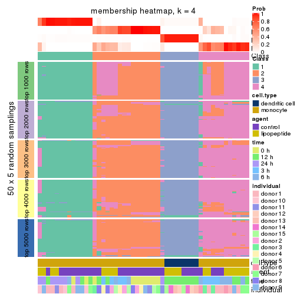
membership_heatmap(res, k = 5)
membership_heatmap(res, k = 6)
As soon as we have had the classes for columns, we can look for signatures which are significantly different between classes which can be candidate marks for certain classes. Following are the heatmaps for signatures.
Signature heatmaps where rows are scaled:
get_signatures(res, k = 2)

get_signatures(res, k = 3)
get_signatures(res, k = 4)
get_signatures(res, k = 5)
get_signatures(res, k = 6)
Signature heatmaps where rows are not scaled:
get_signatures(res, k = 2, scale_rows = FALSE)
get_signatures(res, k = 3, scale_rows = FALSE)
get_signatures(res, k = 4, scale_rows = FALSE)
get_signatures(res, k = 5, scale_rows = FALSE)
get_signatures(res, k = 6, scale_rows = FALSE)
Compare the overlap of signatures from different k:
compare_signatures(res)
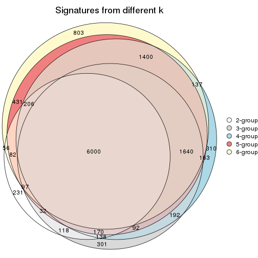
get_signature() returns a data frame invisibly. TO get the list of signatures, the function
call should be assigned to a variable explicitly. In following code, if plot argument is set
to FALSE, no heatmap is plotted while only the differential analysis is performed.
# code only for demonstration
tb = get_signature(res, k = ..., plot = FALSE)
An example of the output of tb is:
#> which_row fdr mean_1 mean_2 scaled_mean_1 scaled_mean_2 km
#> 1 38 0.042760348 8.373488 9.131774 -0.5533452 0.5164555 1
#> 2 40 0.018707592 7.106213 8.469186 -0.6173731 0.5762149 1
#> 3 55 0.019134737 10.221463 11.207825 -0.6159697 0.5749050 1
#> 4 59 0.006059896 5.921854 7.869574 -0.6899429 0.6439467 1
#> 5 60 0.018055526 8.928898 10.211722 -0.6204761 0.5791110 1
#> 6 98 0.009384629 15.714769 14.887706 0.6635654 -0.6193277 2
...
The columns in tb are:
which_row: row indices corresponding to the input matrix.fdr: FDR for the differential test. mean_x: The mean value in group x.scaled_mean_x: The mean value in group x after rows are scaled.km: Row groups if k-means clustering is applied to rows.UMAP plot which shows how samples are separated.
dimension_reduction(res, k = 2, method = "UMAP")

dimension_reduction(res, k = 3, method = "UMAP")
dimension_reduction(res, k = 4, method = "UMAP")
dimension_reduction(res, k = 5, method = "UMAP")

dimension_reduction(res, k = 6, method = "UMAP")
Following heatmap shows how subgroups are split when increasing k:
collect_classes(res)

Test correlation between subgroups and known annotations. If the known annotation is numeric, one-way ANOVA test is applied, and if the known annotation is discrete, chi-squared contingency table test is applied.
test_to_known_factors(res)
#> n cell.type(p) agent(p) time(p) individual(p) k
#> SD:skmeans 50 3.11e-03 0.6852 9.25e-05 2.11e-02 2
#> SD:skmeans 49 9.76e-04 0.0946 6.17e-05 3.16e-04 3
#> SD:skmeans 45 1.81e-08 0.0196 1.63e-05 8.32e-05 4
#> SD:skmeans 43 1.03e-08 0.0761 6.14e-06 1.68e-05 5
#> SD:skmeans 44 2.32e-08 0.0325 5.47e-09 5.76e-04 6
If matrix rows can be associated to genes, consider to use functional_enrichment(res,
...) to perform function enrichment for the signature genes. See this vignette for more detailed explanations.
The object with results only for a single top-value method and a single partition method can be extracted as:
res = res_list["SD", "pam"]
# you can also extract it by
# res = res_list["SD:pam"]
A summary of res and all the functions that can be applied to it:
res
#> A 'ConsensusPartition' object with k = 2, 3, 4, 5, 6.
#> On a matrix with 21168 rows and 50 columns.
#> Top rows (1000, 2000, 3000, 4000, 5000) are extracted by 'SD' method.
#> Subgroups are detected by 'pam' method.
#> Performed in total 1250 partitions by row resampling.
#> Best k for subgroups seems to be 4.
#>
#> Following methods can be applied to this 'ConsensusPartition' object:
#> [1] "cola_report" "collect_classes" "collect_plots"
#> [4] "collect_stats" "colnames" "compare_signatures"
#> [7] "consensus_heatmap" "dimension_reduction" "functional_enrichment"
#> [10] "get_anno_col" "get_anno" "get_classes"
#> [13] "get_consensus" "get_matrix" "get_membership"
#> [16] "get_param" "get_signatures" "get_stats"
#> [19] "is_best_k" "is_stable_k" "membership_heatmap"
#> [22] "ncol" "nrow" "plot_ecdf"
#> [25] "rownames" "select_partition_number" "show"
#> [28] "suggest_best_k" "test_to_known_factors"
collect_plots() function collects all the plots made from res for all k (number of partitions)
into one single page to provide an easy and fast comparison between different k.
collect_plots(res)
The plots are:
k and the heatmap of
predicted classes for each k.k.k.k.All the plots in panels can be made by individual functions and they are plotted later in this section.
select_partition_number() produces several plots showing different
statistics for choosing “optimized” k. There are following statistics:
k;k, the area increased is defined as \(A_k - A_{k-1}\).The detailed explanations of these statistics can be found in the cola vignette.
Generally speaking, lower PAC score, higher mean silhouette score or higher
concordance corresponds to better partition. Rand index and Jaccard index
measure how similar the current partition is compared to partition with k-1.
If they are too similar, we won't accept k is better than k-1.
select_partition_number(res)
The numeric values for all these statistics can be obtained by get_stats().
get_stats(res)
#> k 1-PAC mean_silhouette concordance area_increased Rand Jaccard
#> 2 2 0.651 0.887 0.931 0.3327 0.726 0.726
#> 3 3 0.779 0.836 0.927 0.8783 0.641 0.505
#> 4 4 0.997 0.956 0.980 0.1966 0.836 0.580
#> 5 5 0.759 0.676 0.863 0.0681 0.897 0.624
#> 6 6 0.845 0.716 0.888 0.0323 0.975 0.870
suggest_best_k() suggests the best \(k\) based on these statistics. The rules are as follows:
suggest_best_k(res)
#> [1] 4
Following shows the table of the partitions (You need to click the show/hide
code output link to see it). The membership matrix (columns with name p*)
is inferred by
clue::cl_consensus()
function with the SE method. Basically the value in the membership matrix
represents the probability to belong to a certain group. The finall class
label for an item is determined with the group with highest probability it
belongs to.
In get_classes() function, the entropy is calculated from the membership
matrix and the silhouette score is calculated from the consensus matrix.
cbind(get_classes(res, k = 2), get_membership(res, k = 2))
#> class entropy silhouette p1 p2
#> GSM225374 2 0.6801 0.841 0.180 0.820
#> GSM225349 2 0.0000 0.914 0.000 1.000
#> GSM225367 2 0.0000 0.914 0.000 1.000
#> GSM225356 2 0.0000 0.914 0.000 1.000
#> GSM225353 2 0.0000 0.914 0.000 1.000
#> GSM225653 2 0.0000 0.914 0.000 1.000
#> GSM209847 2 0.0000 0.914 0.000 1.000
#> GSM225658 2 0.0000 0.914 0.000 1.000
#> GSM225370 2 0.6801 0.841 0.180 0.820
#> GSM225364 2 0.0000 0.914 0.000 1.000
#> GSM225645 2 0.0938 0.914 0.012 0.988
#> GSM225350 2 0.0000 0.914 0.000 1.000
#> GSM225368 2 0.0000 0.914 0.000 1.000
#> GSM225357 2 0.0000 0.914 0.000 1.000
#> GSM225651 2 0.0938 0.914 0.012 0.988
#> GSM225354 2 0.0000 0.914 0.000 1.000
#> GSM225360 2 0.4815 0.883 0.104 0.896
#> GSM225657 2 0.4431 0.888 0.092 0.908
#> GSM225377 2 0.6801 0.841 0.180 0.820
#> GSM225656 2 0.6801 0.841 0.180 0.820
#> GSM225347 2 0.0000 0.914 0.000 1.000
#> GSM225660 2 0.6801 0.841 0.180 0.820
#> GSM225712 2 0.9866 0.442 0.432 0.568
#> GSM225663 2 0.9732 0.507 0.404 0.596
#> GSM225373 2 0.9552 0.565 0.376 0.624
#> GSM225366 2 0.6801 0.841 0.180 0.820
#> GSM225380 2 0.0376 0.914 0.004 0.996
#> GSM225351 2 0.0000 0.914 0.000 1.000
#> GSM225369 2 0.0000 0.914 0.000 1.000
#> GSM225358 2 0.0000 0.914 0.000 1.000
#> GSM225649 2 0.0938 0.914 0.012 0.988
#> GSM225355 2 0.0000 0.914 0.000 1.000
#> GSM225361 2 0.1843 0.911 0.028 0.972
#> GSM225655 2 0.0938 0.914 0.012 0.988
#> GSM225376 2 0.4022 0.893 0.080 0.920
#> GSM225654 2 0.2423 0.907 0.040 0.960
#> GSM225348 2 0.0000 0.914 0.000 1.000
#> GSM225659 2 0.1843 0.911 0.028 0.972
#> GSM225378 2 0.6801 0.841 0.180 0.820
#> GSM225661 2 0.6801 0.841 0.180 0.820
#> GSM225372 2 0.6801 0.841 0.180 0.820
#> GSM225365 2 0.6801 0.841 0.180 0.820
#> GSM225860 1 0.0000 1.000 1.000 0.000
#> GSM225875 1 0.0000 1.000 1.000 0.000
#> GSM225878 1 0.0000 1.000 1.000 0.000
#> GSM225885 1 0.0000 1.000 1.000 0.000
#> GSM225867 1 0.0000 1.000 1.000 0.000
#> GSM225871 1 0.0000 1.000 1.000 0.000
#> GSM225881 1 0.0000 1.000 1.000 0.000
#> GSM225887 1 0.0000 1.000 1.000 0.000
cbind(get_classes(res, k = 3), get_membership(res, k = 3))
#> class entropy silhouette p1 p2 p3
#> GSM225374 1 0.0000 0.970 1.000 0.000 0
#> GSM225349 2 0.0000 0.807 0.000 1.000 0
#> GSM225367 2 0.0000 0.807 0.000 1.000 0
#> GSM225356 2 0.0000 0.807 0.000 1.000 0
#> GSM225353 2 0.0000 0.807 0.000 1.000 0
#> GSM225653 2 0.6026 0.498 0.376 0.624 0
#> GSM209847 2 0.0000 0.807 0.000 1.000 0
#> GSM225658 2 0.0000 0.807 0.000 1.000 0
#> GSM225370 1 0.0000 0.970 1.000 0.000 0
#> GSM225364 2 0.0000 0.807 0.000 1.000 0
#> GSM225645 2 0.6062 0.389 0.384 0.616 0
#> GSM225350 2 0.0237 0.806 0.004 0.996 0
#> GSM225368 2 0.0000 0.807 0.000 1.000 0
#> GSM225357 2 0.6026 0.498 0.376 0.624 0
#> GSM225651 1 0.5138 0.593 0.748 0.252 0
#> GSM225354 2 0.6008 0.505 0.372 0.628 0
#> GSM225360 1 0.1289 0.956 0.968 0.032 0
#> GSM225657 1 0.1289 0.956 0.968 0.032 0
#> GSM225377 1 0.0000 0.970 1.000 0.000 0
#> GSM225656 1 0.0000 0.970 1.000 0.000 0
#> GSM225347 2 0.6026 0.498 0.376 0.624 0
#> GSM225660 1 0.0000 0.970 1.000 0.000 0
#> GSM225712 1 0.0000 0.970 1.000 0.000 0
#> GSM225663 1 0.0000 0.970 1.000 0.000 0
#> GSM225373 1 0.0000 0.970 1.000 0.000 0
#> GSM225366 1 0.0424 0.967 0.992 0.008 0
#> GSM225380 2 0.4654 0.670 0.208 0.792 0
#> GSM225351 2 0.0000 0.807 0.000 1.000 0
#> GSM225369 2 0.0000 0.807 0.000 1.000 0
#> GSM225358 2 0.0000 0.807 0.000 1.000 0
#> GSM225649 2 0.6062 0.389 0.384 0.616 0
#> GSM225355 2 0.0000 0.807 0.000 1.000 0
#> GSM225361 1 0.1411 0.953 0.964 0.036 0
#> GSM225655 2 0.6299 0.263 0.476 0.524 0
#> GSM225376 1 0.1411 0.953 0.964 0.036 0
#> GSM225654 1 0.1289 0.956 0.968 0.032 0
#> GSM225348 2 0.5016 0.669 0.240 0.760 0
#> GSM225659 1 0.1411 0.953 0.964 0.036 0
#> GSM225378 1 0.0000 0.970 1.000 0.000 0
#> GSM225661 1 0.0000 0.970 1.000 0.000 0
#> GSM225372 1 0.0000 0.970 1.000 0.000 0
#> GSM225365 1 0.0000 0.970 1.000 0.000 0
#> GSM225860 3 0.0000 1.000 0.000 0.000 1
#> GSM225875 3 0.0000 1.000 0.000 0.000 1
#> GSM225878 3 0.0000 1.000 0.000 0.000 1
#> GSM225885 3 0.0000 1.000 0.000 0.000 1
#> GSM225867 3 0.0000 1.000 0.000 0.000 1
#> GSM225871 3 0.0000 1.000 0.000 0.000 1
#> GSM225881 3 0.0000 1.000 0.000 0.000 1
#> GSM225887 3 0.0000 1.000 0.000 0.000 1
cbind(get_classes(res, k = 4), get_membership(res, k = 4))
#> class entropy silhouette p1 p2 p3 p4
#> GSM225374 1 0.0000 0.985 1.00 0.000 0 0.000
#> GSM225349 2 0.0000 0.981 0.00 1.000 0 0.000
#> GSM225367 2 0.0000 0.981 0.00 1.000 0 0.000
#> GSM225356 2 0.0000 0.981 0.00 1.000 0 0.000
#> GSM225353 2 0.0000 0.981 0.00 1.000 0 0.000
#> GSM225653 2 0.0000 0.981 0.00 1.000 0 0.000
#> GSM209847 2 0.0000 0.981 0.00 1.000 0 0.000
#> GSM225658 2 0.0000 0.981 0.00 1.000 0 0.000
#> GSM225370 1 0.0000 0.985 1.00 0.000 0 0.000
#> GSM225364 2 0.0000 0.981 0.00 1.000 0 0.000
#> GSM225645 4 0.2281 0.880 0.00 0.096 0 0.904
#> GSM225350 2 0.0000 0.981 0.00 1.000 0 0.000
#> GSM225368 2 0.0469 0.972 0.00 0.988 0 0.012
#> GSM225357 2 0.0000 0.981 0.00 1.000 0 0.000
#> GSM225651 4 0.2281 0.880 0.00 0.096 0 0.904
#> GSM225354 2 0.0000 0.981 0.00 1.000 0 0.000
#> GSM225360 1 0.0000 0.985 1.00 0.000 0 0.000
#> GSM225657 1 0.0000 0.985 1.00 0.000 0 0.000
#> GSM225377 1 0.0000 0.985 1.00 0.000 0 0.000
#> GSM225656 1 0.0000 0.985 1.00 0.000 0 0.000
#> GSM225347 2 0.0000 0.981 0.00 1.000 0 0.000
#> GSM225660 1 0.0000 0.985 1.00 0.000 0 0.000
#> GSM225712 1 0.0000 0.985 1.00 0.000 0 0.000
#> GSM225663 1 0.0000 0.985 1.00 0.000 0 0.000
#> GSM225373 1 0.0000 0.985 1.00 0.000 0 0.000
#> GSM225366 1 0.3400 0.786 0.82 0.000 0 0.180
#> GSM225380 4 0.0592 0.929 0.00 0.016 0 0.984
#> GSM225351 2 0.2011 0.918 0.00 0.920 0 0.080
#> GSM225369 4 0.1211 0.919 0.00 0.040 0 0.960
#> GSM225358 4 0.4454 0.544 0.00 0.308 0 0.692
#> GSM225649 4 0.0000 0.933 0.00 0.000 0 1.000
#> GSM225355 2 0.2011 0.918 0.00 0.920 0 0.080
#> GSM225361 4 0.0000 0.933 0.00 0.000 0 1.000
#> GSM225655 4 0.0000 0.933 0.00 0.000 0 1.000
#> GSM225376 4 0.0000 0.933 0.00 0.000 0 1.000
#> GSM225654 4 0.0000 0.933 0.00 0.000 0 1.000
#> GSM225348 2 0.2281 0.903 0.00 0.904 0 0.096
#> GSM225659 4 0.0000 0.933 0.00 0.000 0 1.000
#> GSM225378 1 0.0000 0.985 1.00 0.000 0 0.000
#> GSM225661 1 0.0707 0.969 0.98 0.000 0 0.020
#> GSM225372 1 0.0000 0.985 1.00 0.000 0 0.000
#> GSM225365 1 0.0000 0.985 1.00 0.000 0 0.000
#> GSM225860 3 0.0000 1.000 0.00 0.000 1 0.000
#> GSM225875 3 0.0000 1.000 0.00 0.000 1 0.000
#> GSM225878 3 0.0000 1.000 0.00 0.000 1 0.000
#> GSM225885 3 0.0000 1.000 0.00 0.000 1 0.000
#> GSM225867 3 0.0000 1.000 0.00 0.000 1 0.000
#> GSM225871 3 0.0000 1.000 0.00 0.000 1 0.000
#> GSM225881 3 0.0000 1.000 0.00 0.000 1 0.000
#> GSM225887 3 0.0000 1.000 0.00 0.000 1 0.000
cbind(get_classes(res, k = 5), get_membership(res, k = 5))
#> class entropy silhouette p1 p2 p3 p4 p5
#> GSM225374 1 0.0000 0.8299 1.000 0.000 0 0.000 0.000
#> GSM225349 2 0.0000 0.8271 0.000 1.000 0 0.000 0.000
#> GSM225367 2 0.2280 0.7635 0.000 0.880 0 0.000 0.120
#> GSM225356 2 0.0000 0.8271 0.000 1.000 0 0.000 0.000
#> GSM225353 2 0.0000 0.8271 0.000 1.000 0 0.000 0.000
#> GSM225653 2 0.4268 -0.0574 0.000 0.556 0 0.444 0.000
#> GSM209847 2 0.0000 0.8271 0.000 1.000 0 0.000 0.000
#> GSM225658 2 0.0000 0.8271 0.000 1.000 0 0.000 0.000
#> GSM225370 1 0.0000 0.8299 1.000 0.000 0 0.000 0.000
#> GSM225364 2 0.0000 0.8271 0.000 1.000 0 0.000 0.000
#> GSM225645 5 0.2230 0.7845 0.000 0.116 0 0.000 0.884
#> GSM225350 2 0.0000 0.8271 0.000 1.000 0 0.000 0.000
#> GSM225368 2 0.2813 0.7318 0.000 0.832 0 0.000 0.168
#> GSM225357 2 0.4268 -0.0574 0.000 0.556 0 0.444 0.000
#> GSM225651 5 0.2338 0.7883 0.000 0.112 0 0.004 0.884
#> GSM225354 4 0.4294 0.0990 0.000 0.468 0 0.532 0.000
#> GSM225360 4 0.6070 -0.0643 0.436 0.000 0 0.444 0.120
#> GSM225657 1 0.4268 0.1670 0.556 0.000 0 0.444 0.000
#> GSM225377 1 0.0404 0.8304 0.988 0.000 0 0.012 0.000
#> GSM225656 1 0.4268 0.1670 0.556 0.000 0 0.444 0.000
#> GSM225347 4 0.4582 0.2080 0.012 0.416 0 0.572 0.000
#> GSM225660 1 0.4268 0.1670 0.556 0.000 0 0.444 0.000
#> GSM225712 1 0.0404 0.8304 0.988 0.000 0 0.012 0.000
#> GSM225663 1 0.0000 0.8299 1.000 0.000 0 0.000 0.000
#> GSM225373 1 0.0404 0.8304 0.988 0.000 0 0.012 0.000
#> GSM225366 4 0.2891 0.5666 0.176 0.000 0 0.824 0.000
#> GSM225380 5 0.2280 0.8259 0.000 0.000 0 0.120 0.880
#> GSM225351 2 0.2583 0.7277 0.000 0.864 0 0.132 0.004
#> GSM225369 5 0.0000 0.7822 0.000 0.000 0 0.000 1.000
#> GSM225358 5 0.6006 0.5017 0.000 0.300 0 0.144 0.556
#> GSM225649 5 0.2280 0.8259 0.000 0.000 0 0.120 0.880
#> GSM225355 2 0.3561 0.6138 0.000 0.740 0 0.260 0.000
#> GSM225361 5 0.4101 0.5804 0.000 0.000 0 0.372 0.628
#> GSM225655 4 0.2605 0.5265 0.000 0.000 0 0.852 0.148
#> GSM225376 5 0.2280 0.8259 0.000 0.000 0 0.120 0.880
#> GSM225654 4 0.1851 0.5797 0.000 0.000 0 0.912 0.088
#> GSM225348 4 0.3424 0.4181 0.000 0.240 0 0.760 0.000
#> GSM225659 4 0.0000 0.6102 0.000 0.000 0 1.000 0.000
#> GSM225378 1 0.0404 0.8304 0.988 0.000 0 0.012 0.000
#> GSM225661 4 0.3508 0.4502 0.252 0.000 0 0.748 0.000
#> GSM225372 1 0.0404 0.8304 0.988 0.000 0 0.012 0.000
#> GSM225365 1 0.0000 0.8299 1.000 0.000 0 0.000 0.000
#> GSM225860 3 0.0000 1.0000 0.000 0.000 1 0.000 0.000
#> GSM225875 3 0.0000 1.0000 0.000 0.000 1 0.000 0.000
#> GSM225878 3 0.0000 1.0000 0.000 0.000 1 0.000 0.000
#> GSM225885 3 0.0000 1.0000 0.000 0.000 1 0.000 0.000
#> GSM225867 3 0.0000 1.0000 0.000 0.000 1 0.000 0.000
#> GSM225871 3 0.0000 1.0000 0.000 0.000 1 0.000 0.000
#> GSM225881 3 0.0000 1.0000 0.000 0.000 1 0.000 0.000
#> GSM225887 3 0.0000 1.0000 0.000 0.000 1 0.000 0.000
cbind(get_classes(res, k = 6), get_membership(res, k = 6))
#> class entropy silhouette p1 p2 p3 p4 p5 p6
#> GSM225374 1 0.0260 0.83746 0.992 0.000 0 0.000 0.008 0.000
#> GSM225349 6 0.0000 0.84338 0.000 0.000 0 0.000 0.000 1.000
#> GSM225367 5 0.0363 0.98613 0.000 0.000 0 0.000 0.988 0.012
#> GSM225356 6 0.0000 0.84338 0.000 0.000 0 0.000 0.000 1.000
#> GSM225353 6 0.0000 0.84338 0.000 0.000 0 0.000 0.000 1.000
#> GSM225653 6 0.3823 -0.00846 0.000 0.000 0 0.436 0.000 0.564
#> GSM209847 6 0.0000 0.84338 0.000 0.000 0 0.000 0.000 1.000
#> GSM225658 6 0.0000 0.84338 0.000 0.000 0 0.000 0.000 1.000
#> GSM225370 1 0.0260 0.83746 0.992 0.000 0 0.000 0.008 0.000
#> GSM225364 6 0.0000 0.84338 0.000 0.000 0 0.000 0.000 1.000
#> GSM225645 2 0.0146 0.84832 0.000 0.996 0 0.000 0.000 0.004
#> GSM225350 6 0.0508 0.83625 0.000 0.012 0 0.000 0.004 0.984
#> GSM225368 5 0.0405 0.99145 0.000 0.008 0 0.000 0.988 0.004
#> GSM225357 6 0.4152 -0.03749 0.000 0.012 0 0.440 0.000 0.548
#> GSM225651 2 0.0146 0.84832 0.000 0.996 0 0.000 0.000 0.004
#> GSM225354 4 0.4300 0.06610 0.000 0.012 0 0.528 0.004 0.456
#> GSM225360 4 0.5561 0.21929 0.136 0.000 0 0.440 0.424 0.000
#> GSM225657 1 0.4385 0.19596 0.540 0.012 0 0.440 0.008 0.000
#> GSM225377 1 0.0146 0.83792 0.996 0.000 0 0.004 0.000 0.000
#> GSM225656 1 0.4062 0.21949 0.552 0.000 0 0.440 0.008 0.000
#> GSM225347 4 0.4536 0.19438 0.004 0.012 0 0.576 0.012 0.396
#> GSM225660 1 0.4062 0.21949 0.552 0.000 0 0.440 0.008 0.000
#> GSM225712 1 0.0146 0.83792 0.996 0.000 0 0.004 0.000 0.000
#> GSM225663 1 0.0260 0.83746 0.992 0.000 0 0.000 0.008 0.000
#> GSM225373 1 0.0146 0.83792 0.996 0.000 0 0.004 0.000 0.000
#> GSM225366 4 0.2664 0.59768 0.184 0.000 0 0.816 0.000 0.000
#> GSM225380 2 0.0363 0.85342 0.000 0.988 0 0.012 0.000 0.000
#> GSM225351 6 0.1605 0.80299 0.000 0.016 0 0.044 0.004 0.936
#> GSM225369 5 0.0363 0.98874 0.000 0.012 0 0.000 0.988 0.000
#> GSM225358 2 0.4302 0.52028 0.000 0.668 0 0.036 0.004 0.292
#> GSM225649 2 0.0363 0.85342 0.000 0.988 0 0.012 0.000 0.000
#> GSM225355 6 0.3089 0.67545 0.000 0.008 0 0.188 0.004 0.800
#> GSM225361 2 0.3647 0.48690 0.000 0.640 0 0.360 0.000 0.000
#> GSM225655 4 0.2219 0.61223 0.000 0.136 0 0.864 0.000 0.000
#> GSM225376 2 0.0363 0.85342 0.000 0.988 0 0.012 0.000 0.000
#> GSM225654 4 0.1556 0.65018 0.000 0.080 0 0.920 0.000 0.000
#> GSM225348 4 0.3276 0.47672 0.000 0.004 0 0.764 0.004 0.228
#> GSM225659 4 0.0146 0.65351 0.000 0.004 0 0.996 0.000 0.000
#> GSM225378 1 0.0146 0.83792 0.996 0.000 0 0.004 0.000 0.000
#> GSM225661 4 0.2454 0.61137 0.160 0.000 0 0.840 0.000 0.000
#> GSM225372 1 0.0146 0.83792 0.996 0.000 0 0.004 0.000 0.000
#> GSM225365 1 0.0260 0.83746 0.992 0.000 0 0.000 0.008 0.000
#> GSM225860 3 0.0000 1.00000 0.000 0.000 1 0.000 0.000 0.000
#> GSM225875 3 0.0000 1.00000 0.000 0.000 1 0.000 0.000 0.000
#> GSM225878 3 0.0000 1.00000 0.000 0.000 1 0.000 0.000 0.000
#> GSM225885 3 0.0000 1.00000 0.000 0.000 1 0.000 0.000 0.000
#> GSM225867 3 0.0000 1.00000 0.000 0.000 1 0.000 0.000 0.000
#> GSM225871 3 0.0000 1.00000 0.000 0.000 1 0.000 0.000 0.000
#> GSM225881 3 0.0000 1.00000 0.000 0.000 1 0.000 0.000 0.000
#> GSM225887 3 0.0000 1.00000 0.000 0.000 1 0.000 0.000 0.000
Heatmaps for the consensus matrix. It visualizes the probability of two samples to be in a same group.
consensus_heatmap(res, k = 2)
consensus_heatmap(res, k = 3)
consensus_heatmap(res, k = 4)
consensus_heatmap(res, k = 5)
consensus_heatmap(res, k = 6)
Heatmaps for the membership of samples in all partitions to see how consistent they are:
membership_heatmap(res, k = 2)
membership_heatmap(res, k = 3)
membership_heatmap(res, k = 4)
membership_heatmap(res, k = 5)
membership_heatmap(res, k = 6)
As soon as we have had the classes for columns, we can look for signatures which are significantly different between classes which can be candidate marks for certain classes. Following are the heatmaps for signatures.
Signature heatmaps where rows are scaled:
get_signatures(res, k = 2)
get_signatures(res, k = 3)
get_signatures(res, k = 4)
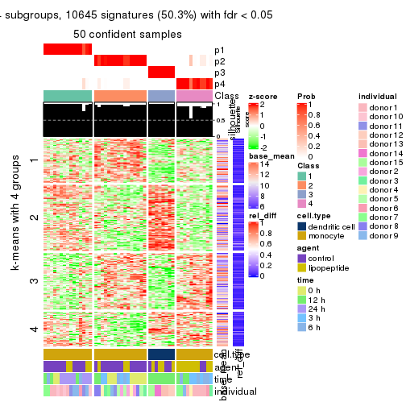
get_signatures(res, k = 5)

get_signatures(res, k = 6)

Signature heatmaps where rows are not scaled:
get_signatures(res, k = 2, scale_rows = FALSE)
get_signatures(res, k = 3, scale_rows = FALSE)
get_signatures(res, k = 4, scale_rows = FALSE)
get_signatures(res, k = 5, scale_rows = FALSE)

get_signatures(res, k = 6, scale_rows = FALSE)
Compare the overlap of signatures from different k:
compare_signatures(res)
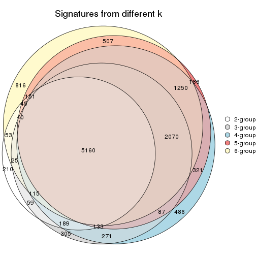
get_signature() returns a data frame invisibly. TO get the list of signatures, the function
call should be assigned to a variable explicitly. In following code, if plot argument is set
to FALSE, no heatmap is plotted while only the differential analysis is performed.
# code only for demonstration
tb = get_signature(res, k = ..., plot = FALSE)
An example of the output of tb is:
#> which_row fdr mean_1 mean_2 scaled_mean_1 scaled_mean_2 km
#> 1 38 0.042760348 8.373488 9.131774 -0.5533452 0.5164555 1
#> 2 40 0.018707592 7.106213 8.469186 -0.6173731 0.5762149 1
#> 3 55 0.019134737 10.221463 11.207825 -0.6159697 0.5749050 1
#> 4 59 0.006059896 5.921854 7.869574 -0.6899429 0.6439467 1
#> 5 60 0.018055526 8.928898 10.211722 -0.6204761 0.5791110 1
#> 6 98 0.009384629 15.714769 14.887706 0.6635654 -0.6193277 2
...
The columns in tb are:
which_row: row indices corresponding to the input matrix.fdr: FDR for the differential test. mean_x: The mean value in group x.scaled_mean_x: The mean value in group x after rows are scaled.km: Row groups if k-means clustering is applied to rows.UMAP plot which shows how samples are separated.
dimension_reduction(res, k = 2, method = "UMAP")
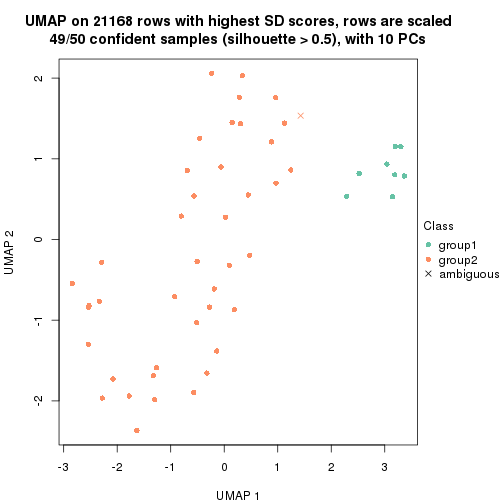
dimension_reduction(res, k = 3, method = "UMAP")
dimension_reduction(res, k = 4, method = "UMAP")
dimension_reduction(res, k = 5, method = "UMAP")
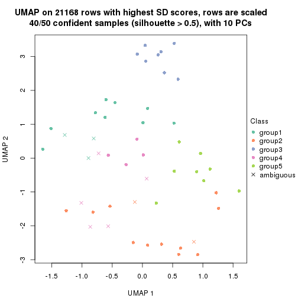
dimension_reduction(res, k = 6, method = "UMAP")
Following heatmap shows how subgroups are split when increasing k:
collect_classes(res)
Test correlation between subgroups and known annotations. If the known annotation is numeric, one-way ANOVA test is applied, and if the known annotation is discrete, chi-squared contingency table test is applied.
test_to_known_factors(res)
#> n cell.type(p) agent(p) time(p) individual(p) k
#> SD:pam 49 9.35e-11 0.85357 5.67e-04 8.97e-06 2
#> SD:pam 44 2.79e-10 0.83641 1.01e-06 2.19e-06 3
#> SD:pam 50 7.99e-11 0.00593 1.26e-07 1.37e-05 4
#> SD:pam 40 4.33e-08 0.08672 8.37e-08 8.39e-05 5
#> SD:pam 40 1.49e-07 0.28354 1.68e-06 6.83e-08 6
If matrix rows can be associated to genes, consider to use functional_enrichment(res,
...) to perform function enrichment for the signature genes. See this vignette for more detailed explanations.
The object with results only for a single top-value method and a single partition method can be extracted as:
res = res_list["SD", "mclust"]
# you can also extract it by
# res = res_list["SD:mclust"]
A summary of res and all the functions that can be applied to it:
res
#> A 'ConsensusPartition' object with k = 2, 3, 4, 5, 6.
#> On a matrix with 21168 rows and 50 columns.
#> Top rows (1000, 2000, 3000, 4000, 5000) are extracted by 'SD' method.
#> Subgroups are detected by 'mclust' method.
#> Performed in total 1250 partitions by row resampling.
#> Best k for subgroups seems to be 3.
#>
#> Following methods can be applied to this 'ConsensusPartition' object:
#> [1] "cola_report" "collect_classes" "collect_plots"
#> [4] "collect_stats" "colnames" "compare_signatures"
#> [7] "consensus_heatmap" "dimension_reduction" "functional_enrichment"
#> [10] "get_anno_col" "get_anno" "get_classes"
#> [13] "get_consensus" "get_matrix" "get_membership"
#> [16] "get_param" "get_signatures" "get_stats"
#> [19] "is_best_k" "is_stable_k" "membership_heatmap"
#> [22] "ncol" "nrow" "plot_ecdf"
#> [25] "rownames" "select_partition_number" "show"
#> [28] "suggest_best_k" "test_to_known_factors"
collect_plots() function collects all the plots made from res for all k (number of partitions)
into one single page to provide an easy and fast comparison between different k.
collect_plots(res)
The plots are:
k and the heatmap of
predicted classes for each k.k.k.k.All the plots in panels can be made by individual functions and they are plotted later in this section.
select_partition_number() produces several plots showing different
statistics for choosing “optimized” k. There are following statistics:
k;k, the area increased is defined as \(A_k - A_{k-1}\).The detailed explanations of these statistics can be found in the cola vignette.
Generally speaking, lower PAC score, higher mean silhouette score or higher
concordance corresponds to better partition. Rand index and Jaccard index
measure how similar the current partition is compared to partition with k-1.
If they are too similar, we won't accept k is better than k-1.
select_partition_number(res)
The numeric values for all these statistics can be obtained by get_stats().
get_stats(res)
#> k 1-PAC mean_silhouette concordance area_increased Rand Jaccard
#> 2 2 1.000 0.994 0.997 0.2708 0.726 0.726
#> 3 3 0.995 0.946 0.965 0.8016 0.778 0.694
#> 4 4 0.585 0.700 0.808 0.4001 0.767 0.538
#> 5 5 0.821 0.856 0.920 0.1395 0.877 0.585
#> 6 6 0.821 0.866 0.890 0.0735 0.918 0.620
suggest_best_k() suggests the best \(k\) based on these statistics. The rules are as follows:
suggest_best_k(res)
#> [1] 3
#> attr(,"optional")
#> [1] 2
There is also optional best \(k\) = 2 that is worth to check.
Following shows the table of the partitions (You need to click the show/hide
code output link to see it). The membership matrix (columns with name p*)
is inferred by
clue::cl_consensus()
function with the SE method. Basically the value in the membership matrix
represents the probability to belong to a certain group. The finall class
label for an item is determined with the group with highest probability it
belongs to.
In get_classes() function, the entropy is calculated from the membership
matrix and the silhouette score is calculated from the consensus matrix.
cbind(get_classes(res, k = 2), get_membership(res, k = 2))
#> class entropy silhouette p1 p2
#> GSM225374 2 0.000 1.000 0.000 1.000
#> GSM225349 2 0.000 1.000 0.000 1.000
#> GSM225367 2 0.000 1.000 0.000 1.000
#> GSM225356 2 0.000 1.000 0.000 1.000
#> GSM225353 2 0.000 1.000 0.000 1.000
#> GSM225653 2 0.000 1.000 0.000 1.000
#> GSM209847 2 0.000 1.000 0.000 1.000
#> GSM225658 2 0.000 1.000 0.000 1.000
#> GSM225370 2 0.000 1.000 0.000 1.000
#> GSM225364 2 0.000 1.000 0.000 1.000
#> GSM225645 2 0.000 1.000 0.000 1.000
#> GSM225350 2 0.000 1.000 0.000 1.000
#> GSM225368 2 0.000 1.000 0.000 1.000
#> GSM225357 2 0.000 1.000 0.000 1.000
#> GSM225651 2 0.000 1.000 0.000 1.000
#> GSM225354 2 0.000 1.000 0.000 1.000
#> GSM225360 2 0.000 1.000 0.000 1.000
#> GSM225657 2 0.000 1.000 0.000 1.000
#> GSM225377 2 0.000 1.000 0.000 1.000
#> GSM225656 2 0.000 1.000 0.000 1.000
#> GSM225347 2 0.000 1.000 0.000 1.000
#> GSM225660 2 0.000 1.000 0.000 1.000
#> GSM225712 2 0.000 1.000 0.000 1.000
#> GSM225663 2 0.000 1.000 0.000 1.000
#> GSM225373 2 0.000 1.000 0.000 1.000
#> GSM225366 2 0.000 1.000 0.000 1.000
#> GSM225380 2 0.000 1.000 0.000 1.000
#> GSM225351 2 0.000 1.000 0.000 1.000
#> GSM225369 2 0.000 1.000 0.000 1.000
#> GSM225358 2 0.000 1.000 0.000 1.000
#> GSM225649 2 0.000 1.000 0.000 1.000
#> GSM225355 2 0.000 1.000 0.000 1.000
#> GSM225361 2 0.000 1.000 0.000 1.000
#> GSM225655 2 0.000 1.000 0.000 1.000
#> GSM225376 2 0.000 1.000 0.000 1.000
#> GSM225654 2 0.000 1.000 0.000 1.000
#> GSM225348 2 0.000 1.000 0.000 1.000
#> GSM225659 2 0.000 1.000 0.000 1.000
#> GSM225378 2 0.000 1.000 0.000 1.000
#> GSM225661 2 0.000 1.000 0.000 1.000
#> GSM225372 2 0.000 1.000 0.000 1.000
#> GSM225365 2 0.000 1.000 0.000 1.000
#> GSM225860 1 0.000 0.979 1.000 0.000
#> GSM225875 1 0.000 0.979 1.000 0.000
#> GSM225878 1 0.000 0.979 1.000 0.000
#> GSM225885 1 0.000 0.979 1.000 0.000
#> GSM225867 1 0.605 0.826 0.852 0.148
#> GSM225871 1 0.000 0.979 1.000 0.000
#> GSM225881 1 0.000 0.979 1.000 0.000
#> GSM225887 1 0.000 0.979 1.000 0.000
cbind(get_classes(res, k = 3), get_membership(res, k = 3))
#> class entropy silhouette p1 p2 p3
#> GSM225374 1 0.6309 0.0736 0.504 0.496 0.000
#> GSM225349 2 0.0424 0.9755 0.008 0.992 0.000
#> GSM225367 2 0.2165 0.9589 0.064 0.936 0.000
#> GSM225356 2 0.0424 0.9755 0.008 0.992 0.000
#> GSM225353 2 0.0424 0.9755 0.008 0.992 0.000
#> GSM225653 2 0.0424 0.9755 0.008 0.992 0.000
#> GSM209847 2 0.0424 0.9755 0.008 0.992 0.000
#> GSM225658 2 0.0424 0.9755 0.008 0.992 0.000
#> GSM225370 1 0.2261 0.8710 0.932 0.068 0.000
#> GSM225364 2 0.0424 0.9755 0.008 0.992 0.000
#> GSM225645 2 0.1411 0.9760 0.036 0.964 0.000
#> GSM225350 2 0.0000 0.9768 0.000 1.000 0.000
#> GSM225368 2 0.2165 0.9589 0.064 0.936 0.000
#> GSM225357 2 0.0000 0.9768 0.000 1.000 0.000
#> GSM225651 2 0.1163 0.9770 0.028 0.972 0.000
#> GSM225354 2 0.0000 0.9768 0.000 1.000 0.000
#> GSM225360 2 0.2066 0.9601 0.060 0.940 0.000
#> GSM225657 2 0.1031 0.9772 0.024 0.976 0.000
#> GSM225377 2 0.1163 0.9757 0.028 0.972 0.000
#> GSM225656 1 0.1860 0.8863 0.948 0.052 0.000
#> GSM225347 2 0.0000 0.9768 0.000 1.000 0.000
#> GSM225660 1 0.1753 0.8892 0.952 0.048 0.000
#> GSM225712 1 0.1753 0.8892 0.952 0.048 0.000
#> GSM225663 1 0.1753 0.8892 0.952 0.048 0.000
#> GSM225373 1 0.1753 0.8892 0.952 0.048 0.000
#> GSM225366 2 0.1289 0.9761 0.032 0.968 0.000
#> GSM225380 2 0.1163 0.9770 0.028 0.972 0.000
#> GSM225351 2 0.0424 0.9749 0.008 0.992 0.000
#> GSM225369 2 0.2165 0.9589 0.064 0.936 0.000
#> GSM225358 2 0.1031 0.9780 0.024 0.976 0.000
#> GSM225649 2 0.1289 0.9770 0.032 0.968 0.000
#> GSM225355 2 0.0424 0.9749 0.008 0.992 0.000
#> GSM225361 2 0.2165 0.9587 0.064 0.936 0.000
#> GSM225655 2 0.1289 0.9771 0.032 0.968 0.000
#> GSM225376 2 0.1289 0.9761 0.032 0.968 0.000
#> GSM225654 2 0.1289 0.9761 0.032 0.968 0.000
#> GSM225348 2 0.0424 0.9749 0.008 0.992 0.000
#> GSM225659 2 0.1411 0.9759 0.036 0.964 0.000
#> GSM225378 2 0.1964 0.9557 0.056 0.944 0.000
#> GSM225661 2 0.1163 0.9757 0.028 0.972 0.000
#> GSM225372 2 0.1163 0.9757 0.028 0.972 0.000
#> GSM225365 1 0.1753 0.8892 0.952 0.048 0.000
#> GSM225860 3 0.0000 0.9943 0.000 0.000 1.000
#> GSM225875 3 0.0000 0.9943 0.000 0.000 1.000
#> GSM225878 3 0.0000 0.9943 0.000 0.000 1.000
#> GSM225885 3 0.0000 0.9943 0.000 0.000 1.000
#> GSM225867 3 0.1031 0.9598 0.000 0.024 0.976
#> GSM225871 3 0.0000 0.9943 0.000 0.000 1.000
#> GSM225881 3 0.0000 0.9943 0.000 0.000 1.000
#> GSM225887 3 0.0000 0.9943 0.000 0.000 1.000
cbind(get_classes(res, k = 4), get_membership(res, k = 4))
#> class entropy silhouette p1 p2 p3 p4
#> GSM225374 1 0.6284 0.6615 0.664 0.172 0.000 0.164
#> GSM225349 2 0.6041 0.6896 0.060 0.608 0.000 0.332
#> GSM225367 2 0.0817 0.5482 0.000 0.976 0.000 0.024
#> GSM225356 2 0.6041 0.6896 0.060 0.608 0.000 0.332
#> GSM225353 2 0.5990 0.6880 0.056 0.608 0.000 0.336
#> GSM225653 2 0.6041 0.6896 0.060 0.608 0.000 0.332
#> GSM209847 2 0.6041 0.6896 0.060 0.608 0.000 0.332
#> GSM225658 2 0.6041 0.6896 0.060 0.608 0.000 0.332
#> GSM225370 1 0.2593 0.9108 0.892 0.004 0.000 0.104
#> GSM225364 2 0.6041 0.6896 0.060 0.608 0.000 0.332
#> GSM225645 2 0.3311 0.6237 0.000 0.828 0.000 0.172
#> GSM225350 4 0.3972 0.6221 0.008 0.204 0.000 0.788
#> GSM225368 2 0.0817 0.5482 0.000 0.976 0.000 0.024
#> GSM225357 4 0.4158 0.5970 0.008 0.224 0.000 0.768
#> GSM225651 2 0.4585 0.6460 0.000 0.668 0.000 0.332
#> GSM225354 4 0.4466 0.6154 0.036 0.180 0.000 0.784
#> GSM225360 4 0.7171 -0.0657 0.136 0.400 0.000 0.464
#> GSM225657 4 0.5141 0.5420 0.268 0.032 0.000 0.700
#> GSM225377 4 0.5188 0.5439 0.240 0.044 0.000 0.716
#> GSM225656 1 0.2011 0.9283 0.920 0.000 0.000 0.080
#> GSM225347 4 0.3674 0.6636 0.044 0.104 0.000 0.852
#> GSM225660 1 0.1474 0.9334 0.948 0.000 0.000 0.052
#> GSM225712 1 0.1557 0.9205 0.944 0.000 0.000 0.056
#> GSM225663 1 0.1557 0.9335 0.944 0.000 0.000 0.056
#> GSM225373 1 0.1557 0.9205 0.944 0.000 0.000 0.056
#> GSM225366 4 0.4467 0.5973 0.172 0.040 0.000 0.788
#> GSM225380 2 0.4855 0.5317 0.000 0.600 0.000 0.400
#> GSM225351 4 0.3311 0.6381 0.000 0.172 0.000 0.828
#> GSM225369 2 0.1118 0.5467 0.000 0.964 0.000 0.036
#> GSM225358 4 0.3486 0.6316 0.000 0.188 0.000 0.812
#> GSM225649 2 0.4916 0.4346 0.000 0.576 0.000 0.424
#> GSM225355 4 0.3448 0.6361 0.004 0.168 0.000 0.828
#> GSM225361 2 0.4008 0.3410 0.000 0.756 0.000 0.244
#> GSM225655 4 0.3718 0.6461 0.012 0.168 0.000 0.820
#> GSM225376 4 0.3542 0.6706 0.028 0.120 0.000 0.852
#> GSM225654 4 0.2466 0.6697 0.028 0.056 0.000 0.916
#> GSM225348 4 0.3448 0.6361 0.004 0.168 0.000 0.828
#> GSM225659 4 0.2197 0.6687 0.024 0.048 0.000 0.928
#> GSM225378 4 0.5582 0.3762 0.348 0.032 0.000 0.620
#> GSM225661 4 0.4467 0.5973 0.172 0.040 0.000 0.788
#> GSM225372 4 0.5731 0.5227 0.172 0.116 0.000 0.712
#> GSM225365 1 0.1474 0.9334 0.948 0.000 0.000 0.052
#> GSM225860 3 0.0000 0.9991 0.000 0.000 1.000 0.000
#> GSM225875 3 0.0000 0.9991 0.000 0.000 1.000 0.000
#> GSM225878 3 0.0000 0.9991 0.000 0.000 1.000 0.000
#> GSM225885 3 0.0000 0.9991 0.000 0.000 1.000 0.000
#> GSM225867 3 0.0188 0.9938 0.000 0.000 0.996 0.004
#> GSM225871 3 0.0000 0.9991 0.000 0.000 1.000 0.000
#> GSM225881 3 0.0000 0.9991 0.000 0.000 1.000 0.000
#> GSM225887 3 0.0000 0.9991 0.000 0.000 1.000 0.000
cbind(get_classes(res, k = 5), get_membership(res, k = 5))
#> class entropy silhouette p1 p2 p3 p4 p5
#> GSM225374 1 0.2570 0.769 0.880 0.004 0 0.108 0.008
#> GSM225349 2 0.0000 0.967 0.000 1.000 0 0.000 0.000
#> GSM225367 5 0.0000 0.772 0.000 0.000 0 0.000 1.000
#> GSM225356 2 0.0000 0.967 0.000 1.000 0 0.000 0.000
#> GSM225353 2 0.2773 0.783 0.000 0.836 0 0.000 0.164
#> GSM225653 2 0.0000 0.967 0.000 1.000 0 0.000 0.000
#> GSM209847 2 0.0000 0.967 0.000 1.000 0 0.000 0.000
#> GSM225658 2 0.0162 0.965 0.000 0.996 0 0.000 0.004
#> GSM225370 1 0.2127 0.774 0.892 0.000 0 0.108 0.000
#> GSM225364 2 0.0290 0.962 0.000 0.992 0 0.000 0.008
#> GSM225645 5 0.3622 0.756 0.000 0.136 0 0.048 0.816
#> GSM225350 4 0.1549 0.936 0.000 0.040 0 0.944 0.016
#> GSM225368 5 0.0000 0.772 0.000 0.000 0 0.000 1.000
#> GSM225357 4 0.1981 0.920 0.000 0.064 0 0.920 0.016
#> GSM225651 5 0.4930 0.767 0.000 0.084 0 0.220 0.696
#> GSM225354 4 0.1549 0.936 0.000 0.040 0 0.944 0.016
#> GSM225360 5 0.4647 0.764 0.016 0.028 0 0.240 0.716
#> GSM225657 1 0.5131 0.298 0.532 0.024 0 0.436 0.008
#> GSM225377 1 0.4434 0.277 0.536 0.000 0 0.460 0.004
#> GSM225656 1 0.0000 0.804 1.000 0.000 0 0.000 0.000
#> GSM225347 4 0.1331 0.938 0.000 0.040 0 0.952 0.008
#> GSM225660 1 0.0000 0.804 1.000 0.000 0 0.000 0.000
#> GSM225712 1 0.0451 0.802 0.988 0.000 0 0.004 0.008
#> GSM225663 1 0.0162 0.804 0.996 0.000 0 0.004 0.000
#> GSM225373 1 0.0451 0.802 0.988 0.000 0 0.004 0.008
#> GSM225366 4 0.2171 0.908 0.064 0.000 0 0.912 0.024
#> GSM225380 5 0.4770 0.687 0.000 0.036 0 0.320 0.644
#> GSM225351 4 0.0404 0.947 0.000 0.000 0 0.988 0.012
#> GSM225369 5 0.0000 0.772 0.000 0.000 0 0.000 1.000
#> GSM225358 4 0.0404 0.947 0.000 0.000 0 0.988 0.012
#> GSM225649 5 0.4301 0.771 0.000 0.028 0 0.260 0.712
#> GSM225355 4 0.0404 0.947 0.000 0.000 0 0.988 0.012
#> GSM225361 5 0.3131 0.806 0.008 0.028 0 0.104 0.860
#> GSM225655 4 0.0451 0.949 0.008 0.000 0 0.988 0.004
#> GSM225376 4 0.0404 0.948 0.012 0.000 0 0.988 0.000
#> GSM225654 4 0.0404 0.948 0.012 0.000 0 0.988 0.000
#> GSM225348 4 0.0162 0.948 0.000 0.000 0 0.996 0.004
#> GSM225659 4 0.0404 0.948 0.012 0.000 0 0.988 0.000
#> GSM225378 1 0.4182 0.521 0.644 0.000 0 0.352 0.004
#> GSM225661 4 0.1952 0.899 0.084 0.000 0 0.912 0.004
#> GSM225372 4 0.3754 0.805 0.084 0.000 0 0.816 0.100
#> GSM225365 1 0.0000 0.804 1.000 0.000 0 0.000 0.000
#> GSM225860 3 0.0000 1.000 0.000 0.000 1 0.000 0.000
#> GSM225875 3 0.0000 1.000 0.000 0.000 1 0.000 0.000
#> GSM225878 3 0.0000 1.000 0.000 0.000 1 0.000 0.000
#> GSM225885 3 0.0000 1.000 0.000 0.000 1 0.000 0.000
#> GSM225867 3 0.0000 1.000 0.000 0.000 1 0.000 0.000
#> GSM225871 3 0.0000 1.000 0.000 0.000 1 0.000 0.000
#> GSM225881 3 0.0000 1.000 0.000 0.000 1 0.000 0.000
#> GSM225887 3 0.0000 1.000 0.000 0.000 1 0.000 0.000
cbind(get_classes(res, k = 6), get_membership(res, k = 6))
#> class entropy silhouette p1 p2 p3 p4 p5 p6
#> GSM225374 1 0.4198 0.781 0.768 0.128 0 0.020 0.084 0.000
#> GSM225349 6 0.0000 0.983 0.000 0.000 0 0.000 0.000 1.000
#> GSM225367 5 0.0767 0.808 0.000 0.012 0 0.004 0.976 0.008
#> GSM225356 6 0.0000 0.983 0.000 0.000 0 0.000 0.000 1.000
#> GSM225353 6 0.1806 0.887 0.000 0.004 0 0.000 0.088 0.908
#> GSM225653 6 0.0000 0.983 0.000 0.000 0 0.000 0.000 1.000
#> GSM209847 6 0.0000 0.983 0.000 0.000 0 0.000 0.000 1.000
#> GSM225658 6 0.0000 0.983 0.000 0.000 0 0.000 0.000 1.000
#> GSM225370 1 0.1866 0.901 0.908 0.084 0 0.008 0.000 0.000
#> GSM225364 6 0.0000 0.983 0.000 0.000 0 0.000 0.000 1.000
#> GSM225645 5 0.4022 0.746 0.000 0.040 0 0.016 0.756 0.188
#> GSM225350 2 0.4664 0.712 0.000 0.676 0 0.236 0.004 0.084
#> GSM225368 5 0.0653 0.808 0.000 0.012 0 0.004 0.980 0.004
#> GSM225357 2 0.5056 0.691 0.000 0.644 0 0.220 0.004 0.132
#> GSM225651 5 0.4541 0.766 0.000 0.060 0 0.040 0.740 0.160
#> GSM225354 2 0.4710 0.711 0.000 0.672 0 0.236 0.004 0.088
#> GSM225360 5 0.5094 0.570 0.016 0.308 0 0.028 0.624 0.024
#> GSM225657 2 0.3734 0.782 0.132 0.796 0 0.064 0.004 0.004
#> GSM225377 2 0.1501 0.800 0.076 0.924 0 0.000 0.000 0.000
#> GSM225656 1 0.0632 0.936 0.976 0.024 0 0.000 0.000 0.000
#> GSM225347 2 0.3183 0.756 0.004 0.788 0 0.200 0.000 0.008
#> GSM225660 1 0.0547 0.936 0.980 0.020 0 0.000 0.000 0.000
#> GSM225712 1 0.1398 0.921 0.940 0.052 0 0.000 0.008 0.000
#> GSM225663 1 0.0000 0.931 1.000 0.000 0 0.000 0.000 0.000
#> GSM225373 1 0.1285 0.922 0.944 0.052 0 0.000 0.004 0.000
#> GSM225366 2 0.2886 0.781 0.028 0.872 0 0.060 0.040 0.000
#> GSM225380 5 0.4575 0.770 0.000 0.040 0 0.164 0.736 0.060
#> GSM225351 4 0.1075 0.866 0.000 0.048 0 0.952 0.000 0.000
#> GSM225369 5 0.1074 0.808 0.000 0.012 0 0.028 0.960 0.000
#> GSM225358 4 0.1434 0.864 0.000 0.048 0 0.940 0.012 0.000
#> GSM225649 5 0.4253 0.725 0.000 0.052 0 0.220 0.720 0.008
#> GSM225355 4 0.1075 0.866 0.000 0.048 0 0.952 0.000 0.000
#> GSM225361 5 0.4077 0.760 0.000 0.124 0 0.100 0.768 0.008
#> GSM225655 4 0.2703 0.877 0.000 0.172 0 0.824 0.004 0.000
#> GSM225376 4 0.4196 0.809 0.008 0.240 0 0.712 0.040 0.000
#> GSM225654 4 0.3103 0.867 0.008 0.208 0 0.784 0.000 0.000
#> GSM225348 4 0.2416 0.862 0.000 0.156 0 0.844 0.000 0.000
#> GSM225659 4 0.3292 0.871 0.008 0.200 0 0.784 0.008 0.000
#> GSM225378 2 0.2003 0.781 0.116 0.884 0 0.000 0.000 0.000
#> GSM225661 2 0.1934 0.807 0.044 0.916 0 0.040 0.000 0.000
#> GSM225372 2 0.1798 0.801 0.028 0.932 0 0.020 0.020 0.000
#> GSM225365 1 0.0260 0.934 0.992 0.008 0 0.000 0.000 0.000
#> GSM225860 3 0.0000 1.000 0.000 0.000 1 0.000 0.000 0.000
#> GSM225875 3 0.0000 1.000 0.000 0.000 1 0.000 0.000 0.000
#> GSM225878 3 0.0000 1.000 0.000 0.000 1 0.000 0.000 0.000
#> GSM225885 3 0.0000 1.000 0.000 0.000 1 0.000 0.000 0.000
#> GSM225867 3 0.0000 1.000 0.000 0.000 1 0.000 0.000 0.000
#> GSM225871 3 0.0000 1.000 0.000 0.000 1 0.000 0.000 0.000
#> GSM225881 3 0.0000 1.000 0.000 0.000 1 0.000 0.000 0.000
#> GSM225887 3 0.0000 1.000 0.000 0.000 1 0.000 0.000 0.000
Heatmaps for the consensus matrix. It visualizes the probability of two samples to be in a same group.
consensus_heatmap(res, k = 2)
consensus_heatmap(res, k = 3)
consensus_heatmap(res, k = 4)
consensus_heatmap(res, k = 5)
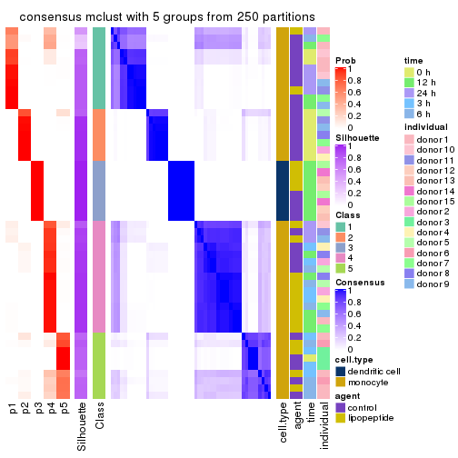
consensus_heatmap(res, k = 6)

Heatmaps for the membership of samples in all partitions to see how consistent they are:
membership_heatmap(res, k = 2)
membership_heatmap(res, k = 3)
membership_heatmap(res, k = 4)
membership_heatmap(res, k = 5)
membership_heatmap(res, k = 6)
As soon as we have had the classes for columns, we can look for signatures which are significantly different between classes which can be candidate marks for certain classes. Following are the heatmaps for signatures.
Signature heatmaps where rows are scaled:
get_signatures(res, k = 2)
get_signatures(res, k = 3)
get_signatures(res, k = 4)
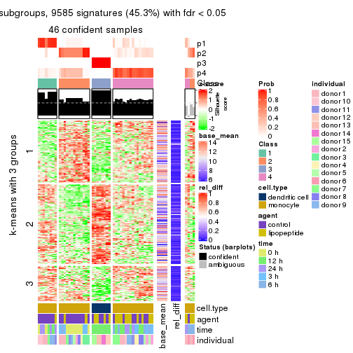
get_signatures(res, k = 5)
get_signatures(res, k = 6)
Signature heatmaps where rows are not scaled:
get_signatures(res, k = 2, scale_rows = FALSE)
get_signatures(res, k = 3, scale_rows = FALSE)
get_signatures(res, k = 4, scale_rows = FALSE)
get_signatures(res, k = 5, scale_rows = FALSE)
get_signatures(res, k = 6, scale_rows = FALSE)
Compare the overlap of signatures from different k:
compare_signatures(res)
get_signature() returns a data frame invisibly. TO get the list of signatures, the function
call should be assigned to a variable explicitly. In following code, if plot argument is set
to FALSE, no heatmap is plotted while only the differential analysis is performed.
# code only for demonstration
tb = get_signature(res, k = ..., plot = FALSE)
An example of the output of tb is:
#> which_row fdr mean_1 mean_2 scaled_mean_1 scaled_mean_2 km
#> 1 38 0.042760348 8.373488 9.131774 -0.5533452 0.5164555 1
#> 2 40 0.018707592 7.106213 8.469186 -0.6173731 0.5762149 1
#> 3 55 0.019134737 10.221463 11.207825 -0.6159697 0.5749050 1
#> 4 59 0.006059896 5.921854 7.869574 -0.6899429 0.6439467 1
#> 5 60 0.018055526 8.928898 10.211722 -0.6204761 0.5791110 1
#> 6 98 0.009384629 15.714769 14.887706 0.6635654 -0.6193277 2
...
The columns in tb are:
which_row: row indices corresponding to the input matrix.fdr: FDR for the differential test. mean_x: The mean value in group x.scaled_mean_x: The mean value in group x after rows are scaled.km: Row groups if k-means clustering is applied to rows.UMAP plot which shows how samples are separated.
dimension_reduction(res, k = 2, method = "UMAP")
dimension_reduction(res, k = 3, method = "UMAP")
dimension_reduction(res, k = 4, method = "UMAP")
dimension_reduction(res, k = 5, method = "UMAP")
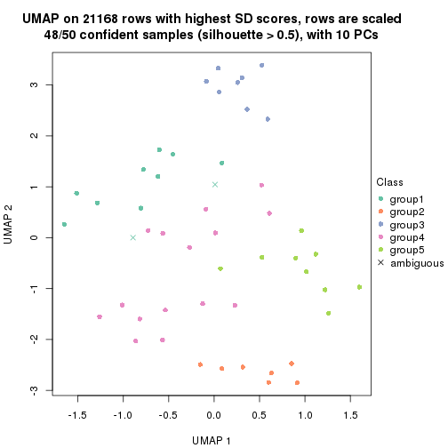
dimension_reduction(res, k = 6, method = "UMAP")
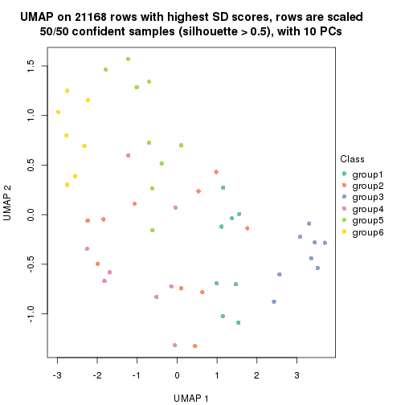
Following heatmap shows how subgroups are split when increasing k:
collect_classes(res)
Test correlation between subgroups and known annotations. If the known annotation is numeric, one-way ANOVA test is applied, and if the known annotation is discrete, chi-squared contingency table test is applied.
test_to_known_factors(res)
#> n cell.type(p) agent(p) time(p) individual(p) k
#> SD:mclust 50 5.95e-11 0.81326 4.48e-04 6.11e-06 2
#> SD:mclust 49 2.29e-11 0.29049 1.16e-04 1.95e-04 3
#> SD:mclust 46 5.67e-10 0.03320 3.19e-06 4.51e-03 4
#> SD:mclust 48 9.44e-10 0.03260 1.77e-09 4.75e-04 5
#> SD:mclust 50 1.39e-09 0.00124 8.26e-09 8.46e-03 6
If matrix rows can be associated to genes, consider to use functional_enrichment(res,
...) to perform function enrichment for the signature genes. See this vignette for more detailed explanations.
The object with results only for a single top-value method and a single partition method can be extracted as:
res = res_list["SD", "NMF"]
# you can also extract it by
# res = res_list["SD:NMF"]
A summary of res and all the functions that can be applied to it:
res
#> A 'ConsensusPartition' object with k = 2, 3, 4, 5, 6.
#> On a matrix with 21168 rows and 50 columns.
#> Top rows (1000, 2000, 3000, 4000, 5000) are extracted by 'SD' method.
#> Subgroups are detected by 'NMF' method.
#> Performed in total 1250 partitions by row resampling.
#> Best k for subgroups seems to be 5.
#>
#> Following methods can be applied to this 'ConsensusPartition' object:
#> [1] "cola_report" "collect_classes" "collect_plots"
#> [4] "collect_stats" "colnames" "compare_signatures"
#> [7] "consensus_heatmap" "dimension_reduction" "functional_enrichment"
#> [10] "get_anno_col" "get_anno" "get_classes"
#> [13] "get_consensus" "get_matrix" "get_membership"
#> [16] "get_param" "get_signatures" "get_stats"
#> [19] "is_best_k" "is_stable_k" "membership_heatmap"
#> [22] "ncol" "nrow" "plot_ecdf"
#> [25] "rownames" "select_partition_number" "show"
#> [28] "suggest_best_k" "test_to_known_factors"
collect_plots() function collects all the plots made from res for all k (number of partitions)
into one single page to provide an easy and fast comparison between different k.
collect_plots(res)
The plots are:
k and the heatmap of
predicted classes for each k.k.k.k.All the plots in panels can be made by individual functions and they are plotted later in this section.
select_partition_number() produces several plots showing different
statistics for choosing “optimized” k. There are following statistics:
k;k, the area increased is defined as \(A_k - A_{k-1}\).The detailed explanations of these statistics can be found in the cola vignette.
Generally speaking, lower PAC score, higher mean silhouette score or higher
concordance corresponds to better partition. Rand index and Jaccard index
measure how similar the current partition is compared to partition with k-1.
If they are too similar, we won't accept k is better than k-1.
select_partition_number(res)
The numeric values for all these statistics can be obtained by get_stats().
get_stats(res)
#> k 1-PAC mean_silhouette concordance area_increased Rand Jaccard
#> 2 2 0.999 0.945 0.978 0.4919 0.503 0.503
#> 3 3 0.743 0.839 0.927 0.3718 0.678 0.441
#> 4 4 0.673 0.745 0.870 0.1134 0.784 0.453
#> 5 5 0.979 0.940 0.969 0.0728 0.793 0.360
#> 6 6 0.836 0.744 0.861 0.0331 0.967 0.838
suggest_best_k() suggests the best \(k\) based on these statistics. The rules are as follows:
suggest_best_k(res)
#> [1] 5
#> attr(,"optional")
#> [1] 2
There is also optional best \(k\) = 2 that is worth to check.
Following shows the table of the partitions (You need to click the show/hide
code output link to see it). The membership matrix (columns with name p*)
is inferred by
clue::cl_consensus()
function with the SE method. Basically the value in the membership matrix
represents the probability to belong to a certain group. The finall class
label for an item is determined with the group with highest probability it
belongs to.
In get_classes() function, the entropy is calculated from the membership
matrix and the silhouette score is calculated from the consensus matrix.
cbind(get_classes(res, k = 2), get_membership(res, k = 2))
#> class entropy silhouette p1 p2
#> GSM225374 1 0.8555 0.6211 0.720 0.280
#> GSM225349 2 0.0000 0.9911 0.000 1.000
#> GSM225367 2 0.0000 0.9911 0.000 1.000
#> GSM225356 2 0.0000 0.9911 0.000 1.000
#> GSM225353 2 0.0000 0.9911 0.000 1.000
#> GSM225653 2 0.0000 0.9911 0.000 1.000
#> GSM209847 2 0.0000 0.9911 0.000 1.000
#> GSM225658 2 0.0000 0.9911 0.000 1.000
#> GSM225370 1 0.0672 0.9511 0.992 0.008
#> GSM225364 2 0.0000 0.9911 0.000 1.000
#> GSM225645 2 0.0000 0.9911 0.000 1.000
#> GSM225350 2 0.0000 0.9911 0.000 1.000
#> GSM225368 2 0.0000 0.9911 0.000 1.000
#> GSM225357 2 0.0000 0.9911 0.000 1.000
#> GSM225651 2 0.0000 0.9911 0.000 1.000
#> GSM225354 2 0.0000 0.9911 0.000 1.000
#> GSM225360 1 0.9993 0.0919 0.516 0.484
#> GSM225657 2 0.3733 0.9165 0.072 0.928
#> GSM225377 1 0.4161 0.8835 0.916 0.084
#> GSM225656 1 0.0000 0.9554 1.000 0.000
#> GSM225347 2 0.0000 0.9911 0.000 1.000
#> GSM225660 1 0.0000 0.9554 1.000 0.000
#> GSM225712 1 0.0000 0.9554 1.000 0.000
#> GSM225663 1 0.0000 0.9554 1.000 0.000
#> GSM225373 1 0.0000 0.9554 1.000 0.000
#> GSM225366 1 0.0672 0.9512 0.992 0.008
#> GSM225380 2 0.0000 0.9911 0.000 1.000
#> GSM225351 2 0.0000 0.9911 0.000 1.000
#> GSM225369 2 0.0000 0.9911 0.000 1.000
#> GSM225358 2 0.0000 0.9911 0.000 1.000
#> GSM225649 2 0.0000 0.9911 0.000 1.000
#> GSM225355 2 0.0000 0.9911 0.000 1.000
#> GSM225361 2 0.0000 0.9911 0.000 1.000
#> GSM225655 2 0.0000 0.9911 0.000 1.000
#> GSM225376 2 0.0000 0.9911 0.000 1.000
#> GSM225654 2 0.0000 0.9911 0.000 1.000
#> GSM225348 2 0.0000 0.9911 0.000 1.000
#> GSM225659 2 0.0000 0.9911 0.000 1.000
#> GSM225378 1 0.0000 0.9554 1.000 0.000
#> GSM225661 1 0.0938 0.9484 0.988 0.012
#> GSM225372 2 0.6438 0.7970 0.164 0.836
#> GSM225365 1 0.0000 0.9554 1.000 0.000
#> GSM225860 1 0.0000 0.9554 1.000 0.000
#> GSM225875 1 0.0000 0.9554 1.000 0.000
#> GSM225878 1 0.0000 0.9554 1.000 0.000
#> GSM225885 1 0.0000 0.9554 1.000 0.000
#> GSM225867 1 0.0000 0.9554 1.000 0.000
#> GSM225871 1 0.0000 0.9554 1.000 0.000
#> GSM225881 1 0.0000 0.9554 1.000 0.000
#> GSM225887 1 0.0000 0.9554 1.000 0.000
cbind(get_classes(res, k = 3), get_membership(res, k = 3))
#> class entropy silhouette p1 p2 p3
#> GSM225374 1 0.0000 0.8696 1.000 0.000 0.000
#> GSM225349 1 0.0000 0.8696 1.000 0.000 0.000
#> GSM225367 1 0.4002 0.7306 0.840 0.160 0.000
#> GSM225356 1 0.0000 0.8696 1.000 0.000 0.000
#> GSM225353 1 0.0592 0.8633 0.988 0.012 0.000
#> GSM225653 1 0.0000 0.8696 1.000 0.000 0.000
#> GSM209847 1 0.0000 0.8696 1.000 0.000 0.000
#> GSM225658 1 0.0000 0.8696 1.000 0.000 0.000
#> GSM225370 1 0.1289 0.8534 0.968 0.000 0.032
#> GSM225364 1 0.0000 0.8696 1.000 0.000 0.000
#> GSM225645 2 0.4555 0.7661 0.200 0.800 0.000
#> GSM225350 1 0.3267 0.7895 0.884 0.116 0.000
#> GSM225368 2 0.4062 0.8090 0.164 0.836 0.000
#> GSM225357 1 0.0000 0.8696 1.000 0.000 0.000
#> GSM225651 2 0.2448 0.8902 0.076 0.924 0.000
#> GSM225354 1 0.0000 0.8696 1.000 0.000 0.000
#> GSM225360 2 0.6158 0.7495 0.052 0.760 0.188
#> GSM225657 1 0.0000 0.8696 1.000 0.000 0.000
#> GSM225377 3 0.2448 0.9106 0.076 0.000 0.924
#> GSM225656 1 0.6026 0.4108 0.624 0.000 0.376
#> GSM225347 1 0.0000 0.8696 1.000 0.000 0.000
#> GSM225660 1 0.5859 0.4842 0.656 0.000 0.344
#> GSM225712 3 0.1289 0.9504 0.032 0.000 0.968
#> GSM225663 3 0.3879 0.8148 0.152 0.000 0.848
#> GSM225373 3 0.1411 0.9477 0.036 0.000 0.964
#> GSM225366 3 0.3192 0.8669 0.000 0.112 0.888
#> GSM225380 2 0.0000 0.9256 0.000 1.000 0.000
#> GSM225351 2 0.2448 0.8793 0.076 0.924 0.000
#> GSM225369 2 0.0000 0.9256 0.000 1.000 0.000
#> GSM225358 2 0.0000 0.9256 0.000 1.000 0.000
#> GSM225649 2 0.0000 0.9256 0.000 1.000 0.000
#> GSM225355 1 0.6308 0.0953 0.508 0.492 0.000
#> GSM225361 2 0.0000 0.9256 0.000 1.000 0.000
#> GSM225655 2 0.0000 0.9256 0.000 1.000 0.000
#> GSM225376 2 0.0000 0.9256 0.000 1.000 0.000
#> GSM225654 2 0.0000 0.9256 0.000 1.000 0.000
#> GSM225348 1 0.5497 0.5822 0.708 0.292 0.000
#> GSM225659 2 0.1031 0.9155 0.024 0.976 0.000
#> GSM225378 3 0.0000 0.9679 0.000 0.000 1.000
#> GSM225661 3 0.0237 0.9655 0.000 0.004 0.996
#> GSM225372 2 0.4555 0.7672 0.000 0.800 0.200
#> GSM225365 1 0.6252 0.2434 0.556 0.000 0.444
#> GSM225860 3 0.0000 0.9679 0.000 0.000 1.000
#> GSM225875 3 0.0000 0.9679 0.000 0.000 1.000
#> GSM225878 3 0.0000 0.9679 0.000 0.000 1.000
#> GSM225885 3 0.0000 0.9679 0.000 0.000 1.000
#> GSM225867 3 0.0000 0.9679 0.000 0.000 1.000
#> GSM225871 3 0.0000 0.9679 0.000 0.000 1.000
#> GSM225881 3 0.0000 0.9679 0.000 0.000 1.000
#> GSM225887 3 0.0000 0.9679 0.000 0.000 1.000
cbind(get_classes(res, k = 4), get_membership(res, k = 4))
#> class entropy silhouette p1 p2 p3 p4
#> GSM225374 2 0.5631 0.5673 0.232 0.696 0.072 0.000
#> GSM225349 2 0.5057 0.4903 0.340 0.648 0.000 0.012
#> GSM225367 2 0.0469 0.8283 0.000 0.988 0.000 0.012
#> GSM225356 2 0.2675 0.7870 0.100 0.892 0.000 0.008
#> GSM225353 2 0.0895 0.8278 0.004 0.976 0.000 0.020
#> GSM225653 2 0.0188 0.8268 0.004 0.996 0.000 0.000
#> GSM209847 2 0.5408 0.1281 0.488 0.500 0.000 0.012
#> GSM225658 2 0.0817 0.8220 0.024 0.976 0.000 0.000
#> GSM225370 3 0.6630 0.5875 0.252 0.136 0.612 0.000
#> GSM225364 2 0.0817 0.8220 0.024 0.976 0.000 0.000
#> GSM225645 2 0.1557 0.8187 0.000 0.944 0.000 0.056
#> GSM225350 1 0.2489 0.7565 0.912 0.068 0.000 0.020
#> GSM225368 2 0.1022 0.8260 0.000 0.968 0.000 0.032
#> GSM225357 1 0.2142 0.7661 0.928 0.056 0.000 0.016
#> GSM225651 2 0.3219 0.7701 0.000 0.836 0.000 0.164
#> GSM225354 1 0.2142 0.7660 0.928 0.056 0.000 0.016
#> GSM225360 2 0.5798 0.6517 0.000 0.704 0.184 0.112
#> GSM225657 1 0.0921 0.7487 0.972 0.028 0.000 0.000
#> GSM225377 3 0.3994 0.8274 0.140 0.028 0.828 0.004
#> GSM225656 1 0.5833 0.0439 0.572 0.028 0.396 0.004
#> GSM225347 1 0.1059 0.7693 0.972 0.016 0.000 0.012
#> GSM225660 1 0.5022 0.4382 0.708 0.028 0.264 0.000
#> GSM225712 3 0.3404 0.8454 0.104 0.032 0.864 0.000
#> GSM225663 3 0.3991 0.8053 0.172 0.020 0.808 0.000
#> GSM225373 3 0.3587 0.8443 0.104 0.032 0.860 0.004
#> GSM225366 4 0.3428 0.7848 0.012 0.000 0.144 0.844
#> GSM225380 4 0.1118 0.8824 0.000 0.036 0.000 0.964
#> GSM225351 4 0.5021 0.6709 0.180 0.064 0.000 0.756
#> GSM225369 2 0.3873 0.7074 0.000 0.772 0.000 0.228
#> GSM225358 4 0.1733 0.8778 0.028 0.024 0.000 0.948
#> GSM225649 4 0.0592 0.8911 0.000 0.016 0.000 0.984
#> GSM225355 1 0.5882 0.3617 0.608 0.048 0.000 0.344
#> GSM225361 4 0.0707 0.8899 0.000 0.020 0.000 0.980
#> GSM225655 4 0.1004 0.8874 0.024 0.004 0.000 0.972
#> GSM225376 4 0.0336 0.8924 0.000 0.008 0.000 0.992
#> GSM225654 4 0.0188 0.8925 0.004 0.000 0.000 0.996
#> GSM225348 1 0.3390 0.7140 0.852 0.016 0.000 0.132
#> GSM225659 4 0.2149 0.8551 0.088 0.000 0.000 0.912
#> GSM225378 3 0.3171 0.8489 0.104 0.016 0.876 0.004
#> GSM225661 3 0.5653 0.6700 0.096 0.000 0.712 0.192
#> GSM225372 4 0.5897 0.6156 0.024 0.048 0.224 0.704
#> GSM225365 3 0.5712 0.4535 0.384 0.032 0.584 0.000
#> GSM225860 3 0.0000 0.8736 0.000 0.000 1.000 0.000
#> GSM225875 3 0.0000 0.8736 0.000 0.000 1.000 0.000
#> GSM225878 3 0.0000 0.8736 0.000 0.000 1.000 0.000
#> GSM225885 3 0.0000 0.8736 0.000 0.000 1.000 0.000
#> GSM225867 3 0.0000 0.8736 0.000 0.000 1.000 0.000
#> GSM225871 3 0.0000 0.8736 0.000 0.000 1.000 0.000
#> GSM225881 3 0.0000 0.8736 0.000 0.000 1.000 0.000
#> GSM225887 3 0.0000 0.8736 0.000 0.000 1.000 0.000
cbind(get_classes(res, k = 5), get_membership(res, k = 5))
#> class entropy silhouette p1 p2 p3 p4 p5
#> GSM225374 1 0.0510 0.971 0.984 0.000 0.000 0.000 0.016
#> GSM225349 2 0.1732 0.886 0.000 0.920 0.000 0.000 0.080
#> GSM225367 5 0.0000 0.947 0.000 0.000 0.000 0.000 1.000
#> GSM225356 2 0.3983 0.503 0.000 0.660 0.000 0.000 0.340
#> GSM225353 5 0.0880 0.938 0.000 0.032 0.000 0.000 0.968
#> GSM225653 5 0.0162 0.948 0.000 0.004 0.000 0.000 0.996
#> GSM209847 2 0.1341 0.903 0.000 0.944 0.000 0.000 0.056
#> GSM225658 5 0.1544 0.911 0.000 0.068 0.000 0.000 0.932
#> GSM225370 1 0.0000 0.978 1.000 0.000 0.000 0.000 0.000
#> GSM225364 5 0.0404 0.947 0.000 0.012 0.000 0.000 0.988
#> GSM225645 5 0.0324 0.948 0.000 0.004 0.000 0.004 0.992
#> GSM225350 2 0.0000 0.928 0.000 1.000 0.000 0.000 0.000
#> GSM225368 5 0.0000 0.947 0.000 0.000 0.000 0.000 1.000
#> GSM225357 2 0.0000 0.928 0.000 1.000 0.000 0.000 0.000
#> GSM225651 5 0.3652 0.754 0.012 0.004 0.000 0.200 0.784
#> GSM225354 2 0.0000 0.928 0.000 1.000 0.000 0.000 0.000
#> GSM225360 1 0.4021 0.741 0.780 0.000 0.000 0.168 0.052
#> GSM225657 1 0.0404 0.973 0.988 0.012 0.000 0.000 0.000
#> GSM225377 1 0.0000 0.978 1.000 0.000 0.000 0.000 0.000
#> GSM225656 1 0.0000 0.978 1.000 0.000 0.000 0.000 0.000
#> GSM225347 2 0.0162 0.927 0.004 0.996 0.000 0.000 0.000
#> GSM225660 1 0.0162 0.977 0.996 0.004 0.000 0.000 0.000
#> GSM225712 1 0.0162 0.978 0.996 0.000 0.004 0.000 0.000
#> GSM225663 1 0.0290 0.976 0.992 0.000 0.008 0.000 0.000
#> GSM225373 1 0.0162 0.978 0.996 0.000 0.004 0.000 0.000
#> GSM225366 4 0.1043 0.957 0.040 0.000 0.000 0.960 0.000
#> GSM225380 4 0.1357 0.939 0.000 0.004 0.000 0.948 0.048
#> GSM225351 2 0.0609 0.923 0.000 0.980 0.000 0.020 0.000
#> GSM225369 5 0.1908 0.898 0.000 0.000 0.000 0.092 0.908
#> GSM225358 2 0.2966 0.772 0.000 0.816 0.000 0.184 0.000
#> GSM225649 4 0.0000 0.979 0.000 0.000 0.000 1.000 0.000
#> GSM225355 2 0.0290 0.927 0.000 0.992 0.000 0.008 0.000
#> GSM225361 4 0.0000 0.979 0.000 0.000 0.000 1.000 0.000
#> GSM225655 4 0.0000 0.979 0.000 0.000 0.000 1.000 0.000
#> GSM225376 4 0.0290 0.978 0.008 0.000 0.000 0.992 0.000
#> GSM225654 4 0.0162 0.979 0.004 0.000 0.000 0.996 0.000
#> GSM225348 2 0.0324 0.927 0.004 0.992 0.000 0.004 0.000
#> GSM225659 4 0.0880 0.966 0.032 0.000 0.000 0.968 0.000
#> GSM225378 1 0.0000 0.978 1.000 0.000 0.000 0.000 0.000
#> GSM225661 1 0.0162 0.977 0.996 0.000 0.000 0.004 0.000
#> GSM225372 1 0.0510 0.969 0.984 0.000 0.000 0.016 0.000
#> GSM225365 1 0.0324 0.977 0.992 0.004 0.004 0.000 0.000
#> GSM225860 3 0.0000 1.000 0.000 0.000 1.000 0.000 0.000
#> GSM225875 3 0.0000 1.000 0.000 0.000 1.000 0.000 0.000
#> GSM225878 3 0.0000 1.000 0.000 0.000 1.000 0.000 0.000
#> GSM225885 3 0.0000 1.000 0.000 0.000 1.000 0.000 0.000
#> GSM225867 3 0.0000 1.000 0.000 0.000 1.000 0.000 0.000
#> GSM225871 3 0.0000 1.000 0.000 0.000 1.000 0.000 0.000
#> GSM225881 3 0.0000 1.000 0.000 0.000 1.000 0.000 0.000
#> GSM225887 3 0.0000 1.000 0.000 0.000 1.000 0.000 0.000
cbind(get_classes(res, k = 6), get_membership(res, k = 6))
#> class entropy silhouette p1 p2 p3 p4 p5 p6
#> GSM225374 1 0.4499 0.670 0.708 0.000 0.000 0.000 0.140 0.152
#> GSM225349 2 0.2907 0.799 0.000 0.828 0.000 0.000 0.020 0.152
#> GSM225367 6 0.3409 0.614 0.000 0.000 0.000 0.000 0.300 0.700
#> GSM225356 6 0.4535 -0.107 0.000 0.480 0.000 0.000 0.032 0.488
#> GSM225353 6 0.4204 0.620 0.000 0.052 0.000 0.000 0.252 0.696
#> GSM225653 6 0.0520 0.520 0.008 0.008 0.000 0.000 0.000 0.984
#> GSM209847 2 0.2896 0.790 0.000 0.824 0.000 0.000 0.016 0.160
#> GSM225658 6 0.2801 0.398 0.000 0.072 0.000 0.000 0.068 0.860
#> GSM225370 1 0.1204 0.866 0.944 0.000 0.000 0.000 0.056 0.000
#> GSM225364 6 0.1194 0.486 0.004 0.008 0.000 0.000 0.032 0.956
#> GSM225645 5 0.4264 0.654 0.000 0.000 0.000 0.016 0.492 0.492
#> GSM225350 2 0.0260 0.923 0.000 0.992 0.000 0.000 0.008 0.000
#> GSM225368 6 0.3668 0.606 0.000 0.004 0.000 0.000 0.328 0.668
#> GSM225357 2 0.0725 0.919 0.000 0.976 0.000 0.000 0.012 0.012
#> GSM225651 5 0.5138 0.755 0.012 0.000 0.000 0.060 0.544 0.384
#> GSM225354 2 0.0291 0.923 0.004 0.992 0.000 0.000 0.004 0.000
#> GSM225360 1 0.5352 0.553 0.596 0.000 0.004 0.100 0.292 0.008
#> GSM225657 1 0.1405 0.861 0.948 0.004 0.000 0.000 0.024 0.024
#> GSM225377 1 0.4486 0.279 0.512 0.000 0.000 0.016 0.464 0.008
#> GSM225656 1 0.0603 0.865 0.980 0.000 0.000 0.000 0.004 0.016
#> GSM225347 2 0.0405 0.922 0.008 0.988 0.000 0.000 0.004 0.000
#> GSM225660 1 0.0717 0.865 0.976 0.000 0.000 0.000 0.008 0.016
#> GSM225712 1 0.1663 0.859 0.912 0.000 0.000 0.000 0.088 0.000
#> GSM225663 1 0.0909 0.866 0.968 0.000 0.000 0.000 0.012 0.020
#> GSM225373 1 0.1663 0.860 0.912 0.000 0.000 0.000 0.088 0.000
#> GSM225366 4 0.3031 0.694 0.108 0.000 0.004 0.844 0.044 0.000
#> GSM225380 5 0.5890 0.593 0.000 0.000 0.000 0.240 0.472 0.288
#> GSM225351 2 0.1088 0.913 0.000 0.960 0.000 0.016 0.024 0.000
#> GSM225369 6 0.5464 0.513 0.000 0.008 0.000 0.104 0.360 0.528
#> GSM225358 2 0.3445 0.767 0.000 0.796 0.000 0.156 0.048 0.000
#> GSM225649 4 0.5492 -0.136 0.000 0.000 0.000 0.472 0.400 0.128
#> GSM225355 2 0.0146 0.923 0.000 0.996 0.000 0.000 0.004 0.000
#> GSM225361 4 0.1531 0.729 0.000 0.004 0.000 0.928 0.068 0.000
#> GSM225655 4 0.0458 0.756 0.000 0.000 0.000 0.984 0.016 0.000
#> GSM225376 4 0.4110 0.359 0.016 0.000 0.000 0.608 0.376 0.000
#> GSM225654 4 0.0146 0.756 0.000 0.000 0.000 0.996 0.004 0.000
#> GSM225348 2 0.0551 0.921 0.008 0.984 0.000 0.004 0.004 0.000
#> GSM225659 4 0.1693 0.747 0.044 0.000 0.000 0.932 0.020 0.004
#> GSM225378 1 0.2070 0.857 0.896 0.000 0.000 0.012 0.092 0.000
#> GSM225661 1 0.2202 0.845 0.908 0.000 0.000 0.052 0.028 0.012
#> GSM225372 1 0.2875 0.842 0.852 0.000 0.000 0.052 0.096 0.000
#> GSM225365 1 0.1624 0.859 0.936 0.004 0.000 0.000 0.040 0.020
#> GSM225860 3 0.0713 0.980 0.000 0.000 0.972 0.000 0.028 0.000
#> GSM225875 3 0.0000 0.993 0.000 0.000 1.000 0.000 0.000 0.000
#> GSM225878 3 0.0000 0.993 0.000 0.000 1.000 0.000 0.000 0.000
#> GSM225885 3 0.0000 0.993 0.000 0.000 1.000 0.000 0.000 0.000
#> GSM225867 3 0.0713 0.980 0.000 0.000 0.972 0.000 0.028 0.000
#> GSM225871 3 0.0000 0.993 0.000 0.000 1.000 0.000 0.000 0.000
#> GSM225881 3 0.0000 0.993 0.000 0.000 1.000 0.000 0.000 0.000
#> GSM225887 3 0.0000 0.993 0.000 0.000 1.000 0.000 0.000 0.000
Heatmaps for the consensus matrix. It visualizes the probability of two samples to be in a same group.
consensus_heatmap(res, k = 2)

consensus_heatmap(res, k = 3)

consensus_heatmap(res, k = 4)
consensus_heatmap(res, k = 5)
consensus_heatmap(res, k = 6)
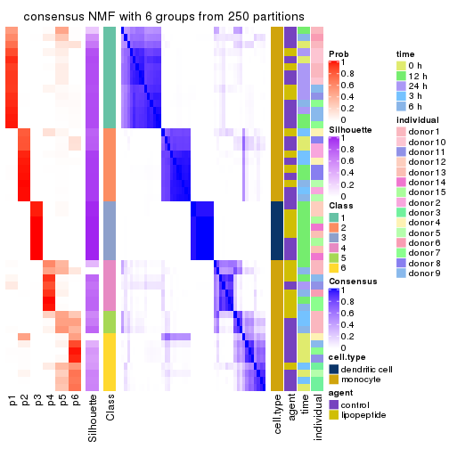
Heatmaps for the membership of samples in all partitions to see how consistent they are:
membership_heatmap(res, k = 2)
membership_heatmap(res, k = 3)
membership_heatmap(res, k = 4)
membership_heatmap(res, k = 5)
membership_heatmap(res, k = 6)
As soon as we have had the classes for columns, we can look for signatures which are significantly different between classes which can be candidate marks for certain classes. Following are the heatmaps for signatures.
Signature heatmaps where rows are scaled:
get_signatures(res, k = 2)
get_signatures(res, k = 3)
get_signatures(res, k = 4)
get_signatures(res, k = 5)
get_signatures(res, k = 6)
Signature heatmaps where rows are not scaled:
get_signatures(res, k = 2, scale_rows = FALSE)
get_signatures(res, k = 3, scale_rows = FALSE)
get_signatures(res, k = 4, scale_rows = FALSE)
get_signatures(res, k = 5, scale_rows = FALSE)
get_signatures(res, k = 6, scale_rows = FALSE)
Compare the overlap of signatures from different k:
compare_signatures(res)
get_signature() returns a data frame invisibly. TO get the list of signatures, the function
call should be assigned to a variable explicitly. In following code, if plot argument is set
to FALSE, no heatmap is plotted while only the differential analysis is performed.
# code only for demonstration
tb = get_signature(res, k = ..., plot = FALSE)
An example of the output of tb is:
#> which_row fdr mean_1 mean_2 scaled_mean_1 scaled_mean_2 km
#> 1 38 0.042760348 8.373488 9.131774 -0.5533452 0.5164555 1
#> 2 40 0.018707592 7.106213 8.469186 -0.6173731 0.5762149 1
#> 3 55 0.019134737 10.221463 11.207825 -0.6159697 0.5749050 1
#> 4 59 0.006059896 5.921854 7.869574 -0.6899429 0.6439467 1
#> 5 60 0.018055526 8.928898 10.211722 -0.6204761 0.5791110 1
#> 6 98 0.009384629 15.714769 14.887706 0.6635654 -0.6193277 2
...
The columns in tb are:
which_row: row indices corresponding to the input matrix.fdr: FDR for the differential test. mean_x: The mean value in group x.scaled_mean_x: The mean value in group x after rows are scaled.km: Row groups if k-means clustering is applied to rows.UMAP plot which shows how samples are separated.
dimension_reduction(res, k = 2, method = "UMAP")
dimension_reduction(res, k = 3, method = "UMAP")
dimension_reduction(res, k = 4, method = "UMAP")
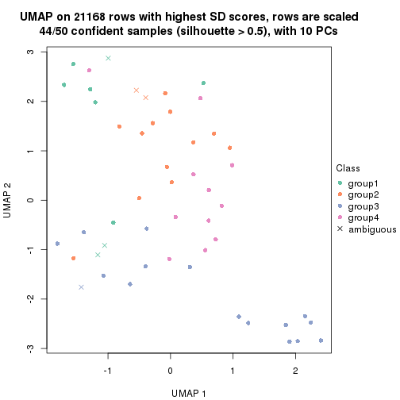
dimension_reduction(res, k = 5, method = "UMAP")
dimension_reduction(res, k = 6, method = "UMAP")
Following heatmap shows how subgroups are split when increasing k:
collect_classes(res)
Test correlation between subgroups and known annotations. If the known annotation is numeric, one-way ANOVA test is applied, and if the known annotation is discrete, chi-squared contingency table test is applied.
test_to_known_factors(res)
#> n cell.type(p) agent(p) time(p) individual(p) k
#> SD:NMF 49 8.68e-04 0.694880 6.27e-05 2.59e-02 2
#> SD:NMF 46 4.51e-05 0.000664 1.33e-07 4.18e-02 3
#> SD:NMF 44 2.86e-04 0.000418 2.28e-04 6.78e-02 4
#> SD:NMF 50 3.61e-10 0.018851 1.26e-05 1.90e-06 5
#> SD:NMF 44 2.32e-08 0.420040 3.36e-05 1.02e-06 6
If matrix rows can be associated to genes, consider to use functional_enrichment(res,
...) to perform function enrichment for the signature genes. See this vignette for more detailed explanations.
The object with results only for a single top-value method and a single partition method can be extracted as:
res = res_list["CV", "hclust"]
# you can also extract it by
# res = res_list["CV:hclust"]
A summary of res and all the functions that can be applied to it:
res
#> A 'ConsensusPartition' object with k = 2, 3, 4, 5, 6.
#> On a matrix with 21168 rows and 50 columns.
#> Top rows (1000, 2000, 3000, 4000, 5000) are extracted by 'CV' method.
#> Subgroups are detected by 'hclust' method.
#> Performed in total 1250 partitions by row resampling.
#> Best k for subgroups seems to be 5.
#>
#> Following methods can be applied to this 'ConsensusPartition' object:
#> [1] "cola_report" "collect_classes" "collect_plots"
#> [4] "collect_stats" "colnames" "compare_signatures"
#> [7] "consensus_heatmap" "dimension_reduction" "functional_enrichment"
#> [10] "get_anno_col" "get_anno" "get_classes"
#> [13] "get_consensus" "get_matrix" "get_membership"
#> [16] "get_param" "get_signatures" "get_stats"
#> [19] "is_best_k" "is_stable_k" "membership_heatmap"
#> [22] "ncol" "nrow" "plot_ecdf"
#> [25] "rownames" "select_partition_number" "show"
#> [28] "suggest_best_k" "test_to_known_factors"
collect_plots() function collects all the plots made from res for all k (number of partitions)
into one single page to provide an easy and fast comparison between different k.
collect_plots(res)
The plots are:
k and the heatmap of
predicted classes for each k.k.k.k.All the plots in panels can be made by individual functions and they are plotted later in this section.
select_partition_number() produces several plots showing different
statistics for choosing “optimized” k. There are following statistics:
k;k, the area increased is defined as \(A_k - A_{k-1}\).The detailed explanations of these statistics can be found in the cola vignette.
Generally speaking, lower PAC score, higher mean silhouette score or higher
concordance corresponds to better partition. Rand index and Jaccard index
measure how similar the current partition is compared to partition with k-1.
If they are too similar, we won't accept k is better than k-1.
select_partition_number(res)
The numeric values for all these statistics can be obtained by get_stats().
get_stats(res)
#> k 1-PAC mean_silhouette concordance area_increased Rand Jaccard
#> 2 2 0.317 0.729 0.843 0.3606 0.628 0.628
#> 3 3 0.498 0.783 0.864 0.5034 0.804 0.688
#> 4 4 0.490 0.793 0.868 0.0784 0.984 0.962
#> 5 5 0.684 0.769 0.884 0.2390 0.846 0.629
#> 6 6 0.681 0.753 0.845 0.0375 0.983 0.934
suggest_best_k() suggests the best \(k\) based on these statistics. The rules are as follows:
suggest_best_k(res)
#> [1] 5
Following shows the table of the partitions (You need to click the show/hide
code output link to see it). The membership matrix (columns with name p*)
is inferred by
clue::cl_consensus()
function with the SE method. Basically the value in the membership matrix
represents the probability to belong to a certain group. The finall class
label for an item is determined with the group with highest probability it
belongs to.
In get_classes() function, the entropy is calculated from the membership
matrix and the silhouette score is calculated from the consensus matrix.
cbind(get_classes(res, k = 2), get_membership(res, k = 2))
#> class entropy silhouette p1 p2
#> GSM225374 1 0.000 0.792 1.000 0.000
#> GSM225349 2 0.900 0.700 0.316 0.684
#> GSM225367 2 0.260 0.774 0.044 0.956
#> GSM225356 2 0.900 0.700 0.316 0.684
#> GSM225353 2 0.260 0.774 0.044 0.956
#> GSM225653 2 0.895 0.705 0.312 0.688
#> GSM209847 2 0.900 0.700 0.316 0.684
#> GSM225658 2 0.895 0.705 0.312 0.688
#> GSM225370 1 0.141 0.793 0.980 0.020
#> GSM225364 2 0.895 0.705 0.312 0.688
#> GSM225645 1 0.983 0.288 0.576 0.424
#> GSM225350 1 0.730 0.774 0.796 0.204
#> GSM225368 2 0.260 0.774 0.044 0.956
#> GSM225357 1 0.753 0.763 0.784 0.216
#> GSM225651 1 0.983 0.288 0.576 0.424
#> GSM225354 1 0.730 0.774 0.796 0.204
#> GSM225360 2 0.595 0.744 0.144 0.856
#> GSM225657 1 0.000 0.792 1.000 0.000
#> GSM225377 1 0.615 0.792 0.848 0.152
#> GSM225656 1 0.000 0.792 1.000 0.000
#> GSM225347 1 0.730 0.774 0.796 0.204
#> GSM225660 1 0.000 0.792 1.000 0.000
#> GSM225712 1 0.000 0.792 1.000 0.000
#> GSM225663 1 0.000 0.792 1.000 0.000
#> GSM225373 1 0.000 0.792 1.000 0.000
#> GSM225366 1 0.697 0.783 0.812 0.188
#> GSM225380 1 0.983 0.288 0.576 0.424
#> GSM225351 1 0.730 0.774 0.796 0.204
#> GSM225369 2 0.260 0.774 0.044 0.956
#> GSM225358 1 0.760 0.758 0.780 0.220
#> GSM225649 1 0.983 0.288 0.576 0.424
#> GSM225355 1 0.730 0.774 0.796 0.204
#> GSM225361 2 0.260 0.774 0.044 0.956
#> GSM225655 1 0.706 0.782 0.808 0.192
#> GSM225376 1 0.738 0.770 0.792 0.208
#> GSM225654 1 0.706 0.782 0.808 0.192
#> GSM225348 1 0.730 0.774 0.796 0.204
#> GSM225659 1 0.697 0.783 0.812 0.188
#> GSM225378 1 0.584 0.792 0.860 0.140
#> GSM225661 1 0.697 0.783 0.812 0.188
#> GSM225372 1 0.706 0.781 0.808 0.192
#> GSM225365 1 0.000 0.792 1.000 0.000
#> GSM225860 1 0.260 0.766 0.956 0.044
#> GSM225875 1 0.260 0.766 0.956 0.044
#> GSM225878 1 0.260 0.766 0.956 0.044
#> GSM225885 1 0.260 0.766 0.956 0.044
#> GSM225867 1 0.260 0.766 0.956 0.044
#> GSM225871 1 0.260 0.766 0.956 0.044
#> GSM225881 1 0.260 0.766 0.956 0.044
#> GSM225887 1 0.260 0.766 0.956 0.044
cbind(get_classes(res, k = 3), get_membership(res, k = 3))
#> class entropy silhouette p1 p2 p3
#> GSM225374 1 0.1529 0.765 0.960 0.000 0.040
#> GSM225349 2 0.5529 0.680 0.296 0.704 0.000
#> GSM225367 2 0.0000 0.734 0.000 1.000 0.000
#> GSM225356 2 0.5529 0.680 0.296 0.704 0.000
#> GSM225353 2 0.0892 0.745 0.020 0.980 0.000
#> GSM225653 2 0.5497 0.685 0.292 0.708 0.000
#> GSM209847 2 0.5529 0.680 0.296 0.704 0.000
#> GSM225658 2 0.5497 0.685 0.292 0.708 0.000
#> GSM225370 1 0.2414 0.771 0.940 0.020 0.040
#> GSM225364 2 0.5497 0.685 0.292 0.708 0.000
#> GSM225645 1 0.6111 0.423 0.604 0.396 0.000
#> GSM225350 1 0.4291 0.830 0.820 0.180 0.000
#> GSM225368 2 0.0000 0.734 0.000 1.000 0.000
#> GSM225357 1 0.4504 0.820 0.804 0.196 0.000
#> GSM225651 1 0.6111 0.423 0.604 0.396 0.000
#> GSM225354 1 0.4291 0.830 0.820 0.180 0.000
#> GSM225360 2 0.3879 0.702 0.152 0.848 0.000
#> GSM225657 1 0.1529 0.765 0.960 0.000 0.040
#> GSM225377 1 0.4059 0.831 0.860 0.128 0.012
#> GSM225656 1 0.1529 0.765 0.960 0.000 0.040
#> GSM225347 1 0.4291 0.830 0.820 0.180 0.000
#> GSM225660 1 0.1529 0.765 0.960 0.000 0.040
#> GSM225712 1 0.1529 0.765 0.960 0.000 0.040
#> GSM225663 1 0.1529 0.765 0.960 0.000 0.040
#> GSM225373 1 0.1529 0.765 0.960 0.000 0.040
#> GSM225366 1 0.3879 0.834 0.848 0.152 0.000
#> GSM225380 1 0.6111 0.423 0.604 0.396 0.000
#> GSM225351 1 0.4291 0.830 0.820 0.180 0.000
#> GSM225369 2 0.0000 0.734 0.000 1.000 0.000
#> GSM225358 1 0.4504 0.819 0.804 0.196 0.000
#> GSM225649 1 0.6111 0.423 0.604 0.396 0.000
#> GSM225355 1 0.4291 0.830 0.820 0.180 0.000
#> GSM225361 2 0.1529 0.731 0.040 0.960 0.000
#> GSM225655 1 0.3941 0.834 0.844 0.156 0.000
#> GSM225376 1 0.4178 0.827 0.828 0.172 0.000
#> GSM225654 1 0.3941 0.834 0.844 0.156 0.000
#> GSM225348 1 0.4291 0.830 0.820 0.180 0.000
#> GSM225659 1 0.3879 0.835 0.848 0.152 0.000
#> GSM225378 1 0.3532 0.825 0.884 0.108 0.008
#> GSM225661 1 0.3879 0.834 0.848 0.152 0.000
#> GSM225372 1 0.3941 0.834 0.844 0.156 0.000
#> GSM225365 1 0.1529 0.765 0.960 0.000 0.040
#> GSM225860 3 0.0000 1.000 0.000 0.000 1.000
#> GSM225875 3 0.0000 1.000 0.000 0.000 1.000
#> GSM225878 3 0.0000 1.000 0.000 0.000 1.000
#> GSM225885 3 0.0000 1.000 0.000 0.000 1.000
#> GSM225867 3 0.0000 1.000 0.000 0.000 1.000
#> GSM225871 3 0.0000 1.000 0.000 0.000 1.000
#> GSM225881 3 0.0000 1.000 0.000 0.000 1.000
#> GSM225887 3 0.0000 1.000 0.000 0.000 1.000
cbind(get_classes(res, k = 4), get_membership(res, k = 4))
#> class entropy silhouette p1 p2 p3 p4
#> GSM225374 1 0.4152 0.791 0.808 0.032 0 0.160
#> GSM225349 2 0.4564 0.752 0.328 0.672 0 0.000
#> GSM225367 2 0.1452 0.590 0.036 0.956 0 0.008
#> GSM225356 2 0.4564 0.752 0.328 0.672 0 0.000
#> GSM225353 2 0.1389 0.603 0.048 0.952 0 0.000
#> GSM225653 2 0.4522 0.756 0.320 0.680 0 0.000
#> GSM209847 2 0.4564 0.752 0.328 0.672 0 0.000
#> GSM225658 2 0.4522 0.756 0.320 0.680 0 0.000
#> GSM225370 1 0.4149 0.797 0.812 0.036 0 0.152
#> GSM225364 2 0.4522 0.756 0.320 0.680 0 0.000
#> GSM225645 1 0.5113 0.491 0.712 0.252 0 0.036
#> GSM225350 1 0.2216 0.822 0.908 0.092 0 0.000
#> GSM225368 2 0.1452 0.590 0.036 0.956 0 0.008
#> GSM225357 1 0.2469 0.812 0.892 0.108 0 0.000
#> GSM225651 1 0.5113 0.491 0.712 0.252 0 0.036
#> GSM225354 1 0.2216 0.822 0.908 0.092 0 0.000
#> GSM225360 4 0.4576 0.799 0.260 0.012 0 0.728
#> GSM225657 1 0.4152 0.791 0.808 0.032 0 0.160
#> GSM225377 1 0.1302 0.838 0.956 0.000 0 0.044
#> GSM225656 1 0.4152 0.791 0.808 0.032 0 0.160
#> GSM225347 1 0.2216 0.822 0.908 0.092 0 0.000
#> GSM225660 1 0.4152 0.791 0.808 0.032 0 0.160
#> GSM225712 1 0.4152 0.791 0.808 0.032 0 0.160
#> GSM225663 1 0.4152 0.791 0.808 0.032 0 0.160
#> GSM225373 1 0.4152 0.791 0.808 0.032 0 0.160
#> GSM225366 1 0.0336 0.835 0.992 0.000 0 0.008
#> GSM225380 1 0.5113 0.491 0.712 0.252 0 0.036
#> GSM225351 1 0.2216 0.822 0.908 0.092 0 0.000
#> GSM225369 2 0.1452 0.590 0.036 0.956 0 0.008
#> GSM225358 1 0.2611 0.817 0.896 0.096 0 0.008
#> GSM225649 1 0.5113 0.491 0.712 0.252 0 0.036
#> GSM225355 1 0.2216 0.822 0.908 0.092 0 0.000
#> GSM225361 4 0.3479 0.804 0.148 0.012 0 0.840
#> GSM225655 1 0.0469 0.835 0.988 0.000 0 0.012
#> GSM225376 1 0.1004 0.830 0.972 0.004 0 0.024
#> GSM225654 1 0.0469 0.835 0.988 0.000 0 0.012
#> GSM225348 1 0.2216 0.822 0.908 0.092 0 0.000
#> GSM225659 1 0.0336 0.835 0.992 0.000 0 0.008
#> GSM225378 1 0.1913 0.836 0.940 0.020 0 0.040
#> GSM225661 1 0.0336 0.835 0.992 0.000 0 0.008
#> GSM225372 1 0.0524 0.835 0.988 0.004 0 0.008
#> GSM225365 1 0.4152 0.791 0.808 0.032 0 0.160
#> GSM225860 3 0.0000 1.000 0.000 0.000 1 0.000
#> GSM225875 3 0.0000 1.000 0.000 0.000 1 0.000
#> GSM225878 3 0.0000 1.000 0.000 0.000 1 0.000
#> GSM225885 3 0.0000 1.000 0.000 0.000 1 0.000
#> GSM225867 3 0.0000 1.000 0.000 0.000 1 0.000
#> GSM225871 3 0.0000 1.000 0.000 0.000 1 0.000
#> GSM225881 3 0.0000 1.000 0.000 0.000 1 0.000
#> GSM225887 3 0.0000 1.000 0.000 0.000 1 0.000
cbind(get_classes(res, k = 5), get_membership(res, k = 5))
#> class entropy silhouette p1 p2 p3 p4 p5
#> GSM225374 1 0.0000 0.890 1.000 0.000 0 0.000 0.000
#> GSM225349 5 0.3876 0.733 0.000 0.316 0 0.000 0.684
#> GSM225367 5 0.1410 0.555 0.000 0.000 0 0.060 0.940
#> GSM225356 5 0.3876 0.733 0.000 0.316 0 0.000 0.684
#> GSM225353 5 0.0963 0.611 0.000 0.036 0 0.000 0.964
#> GSM225653 5 0.3837 0.738 0.000 0.308 0 0.000 0.692
#> GSM209847 5 0.3876 0.733 0.000 0.316 0 0.000 0.684
#> GSM225658 5 0.3837 0.738 0.000 0.308 0 0.000 0.692
#> GSM225370 1 0.4102 0.458 0.692 0.300 0 0.004 0.004
#> GSM225364 5 0.3837 0.738 0.000 0.308 0 0.000 0.692
#> GSM225645 2 0.4248 0.526 0.000 0.728 0 0.032 0.240
#> GSM225350 2 0.1628 0.814 0.000 0.936 0 0.008 0.056
#> GSM225368 5 0.1410 0.555 0.000 0.000 0 0.060 0.940
#> GSM225357 2 0.1894 0.804 0.000 0.920 0 0.008 0.072
#> GSM225651 2 0.4248 0.526 0.000 0.728 0 0.032 0.240
#> GSM225354 2 0.1628 0.814 0.000 0.936 0 0.008 0.056
#> GSM225360 4 0.4088 0.786 0.036 0.176 0 0.780 0.008
#> GSM225657 1 0.0000 0.890 1.000 0.000 0 0.000 0.000
#> GSM225377 2 0.4181 0.540 0.268 0.712 0 0.020 0.000
#> GSM225656 1 0.0000 0.890 1.000 0.000 0 0.000 0.000
#> GSM225347 2 0.1628 0.814 0.000 0.936 0 0.008 0.056
#> GSM225660 1 0.0000 0.890 1.000 0.000 0 0.000 0.000
#> GSM225712 1 0.0000 0.890 1.000 0.000 0 0.000 0.000
#> GSM225663 1 0.0000 0.890 1.000 0.000 0 0.000 0.000
#> GSM225373 1 0.3039 0.648 0.808 0.192 0 0.000 0.000
#> GSM225366 2 0.2079 0.792 0.064 0.916 0 0.020 0.000
#> GSM225380 2 0.4248 0.526 0.000 0.728 0 0.032 0.240
#> GSM225351 2 0.1628 0.814 0.000 0.936 0 0.008 0.056
#> GSM225369 5 0.1410 0.555 0.000 0.000 0 0.060 0.940
#> GSM225358 2 0.2079 0.810 0.000 0.916 0 0.020 0.064
#> GSM225649 2 0.4248 0.526 0.000 0.728 0 0.032 0.240
#> GSM225355 2 0.1628 0.814 0.000 0.936 0 0.008 0.056
#> GSM225361 4 0.1502 0.793 0.000 0.056 0 0.940 0.004
#> GSM225655 2 0.1310 0.811 0.020 0.956 0 0.024 0.000
#> GSM225376 2 0.2074 0.800 0.044 0.920 0 0.036 0.000
#> GSM225654 2 0.1310 0.811 0.020 0.956 0 0.024 0.000
#> GSM225348 2 0.1628 0.814 0.000 0.936 0 0.008 0.056
#> GSM225659 2 0.1216 0.811 0.020 0.960 0 0.020 0.000
#> GSM225378 2 0.4958 0.116 0.452 0.524 0 0.020 0.004
#> GSM225661 2 0.2012 0.794 0.060 0.920 0 0.020 0.000
#> GSM225372 2 0.2172 0.795 0.060 0.916 0 0.020 0.004
#> GSM225365 1 0.0162 0.886 0.996 0.004 0 0.000 0.000
#> GSM225860 3 0.0000 1.000 0.000 0.000 1 0.000 0.000
#> GSM225875 3 0.0000 1.000 0.000 0.000 1 0.000 0.000
#> GSM225878 3 0.0000 1.000 0.000 0.000 1 0.000 0.000
#> GSM225885 3 0.0000 1.000 0.000 0.000 1 0.000 0.000
#> GSM225867 3 0.0000 1.000 0.000 0.000 1 0.000 0.000
#> GSM225871 3 0.0000 1.000 0.000 0.000 1 0.000 0.000
#> GSM225881 3 0.0000 1.000 0.000 0.000 1 0.000 0.000
#> GSM225887 3 0.0000 1.000 0.000 0.000 1 0.000 0.000
cbind(get_classes(res, k = 6), get_membership(res, k = 6))
#> class entropy silhouette p1 p2 p3 p4 p5 p6
#> GSM225374 1 0.0000 0.8879 1.000 0.000 0 0.000 0.000 0.000
#> GSM225349 6 0.3309 0.8984 0.000 0.280 0 0.000 0.000 0.720
#> GSM225367 5 0.2730 1.0000 0.000 0.000 0 0.000 0.808 0.192
#> GSM225356 6 0.3309 0.8984 0.000 0.280 0 0.000 0.000 0.720
#> GSM225353 6 0.0458 0.3396 0.000 0.000 0 0.000 0.016 0.984
#> GSM225653 6 0.3266 0.9003 0.000 0.272 0 0.000 0.000 0.728
#> GSM209847 6 0.3309 0.8984 0.000 0.280 0 0.000 0.000 0.720
#> GSM225658 6 0.3266 0.9003 0.000 0.272 0 0.000 0.000 0.728
#> GSM225370 1 0.4320 0.4535 0.664 0.296 0 0.036 0.004 0.000
#> GSM225364 6 0.3266 0.9003 0.000 0.272 0 0.000 0.000 0.728
#> GSM225645 2 0.4330 0.3501 0.000 0.680 0 0.036 0.008 0.276
#> GSM225350 2 0.3854 0.6813 0.000 0.772 0 0.000 0.136 0.092
#> GSM225368 5 0.2730 1.0000 0.000 0.000 0 0.000 0.808 0.192
#> GSM225357 2 0.3918 0.6739 0.000 0.768 0 0.000 0.124 0.108
#> GSM225651 2 0.4330 0.3501 0.000 0.680 0 0.036 0.008 0.276
#> GSM225354 2 0.3854 0.6813 0.000 0.772 0 0.000 0.136 0.092
#> GSM225360 4 0.3025 0.6694 0.008 0.164 0 0.820 0.004 0.004
#> GSM225657 1 0.0000 0.8879 1.000 0.000 0 0.000 0.000 0.000
#> GSM225377 2 0.4039 0.4898 0.232 0.724 0 0.040 0.004 0.000
#> GSM225656 1 0.0000 0.8879 1.000 0.000 0 0.000 0.000 0.000
#> GSM225347 2 0.3854 0.6813 0.000 0.772 0 0.000 0.136 0.092
#> GSM225660 1 0.0000 0.8879 1.000 0.000 0 0.000 0.000 0.000
#> GSM225712 1 0.0000 0.8879 1.000 0.000 0 0.000 0.000 0.000
#> GSM225663 1 0.0000 0.8879 1.000 0.000 0 0.000 0.000 0.000
#> GSM225373 1 0.3136 0.6453 0.796 0.188 0 0.016 0.000 0.000
#> GSM225366 2 0.1391 0.6932 0.016 0.944 0 0.040 0.000 0.000
#> GSM225380 2 0.4330 0.3501 0.000 0.680 0 0.036 0.008 0.276
#> GSM225351 2 0.3854 0.6813 0.000 0.772 0 0.000 0.136 0.092
#> GSM225369 5 0.2730 1.0000 0.000 0.000 0 0.000 0.808 0.192
#> GSM225358 2 0.3922 0.6821 0.000 0.776 0 0.004 0.124 0.096
#> GSM225649 2 0.4330 0.3501 0.000 0.680 0 0.036 0.008 0.276
#> GSM225355 2 0.3854 0.6813 0.000 0.772 0 0.000 0.136 0.092
#> GSM225361 4 0.1528 0.6549 0.000 0.000 0 0.936 0.048 0.016
#> GSM225655 2 0.0291 0.7081 0.000 0.992 0 0.004 0.004 0.000
#> GSM225376 2 0.1750 0.6925 0.008 0.928 0 0.056 0.004 0.004
#> GSM225654 2 0.0291 0.7081 0.000 0.992 0 0.004 0.004 0.000
#> GSM225348 2 0.3854 0.6813 0.000 0.772 0 0.000 0.136 0.092
#> GSM225659 2 0.0146 0.7076 0.000 0.996 0 0.000 0.004 0.000
#> GSM225378 2 0.4687 0.0582 0.424 0.536 0 0.036 0.004 0.000
#> GSM225661 2 0.1297 0.6944 0.012 0.948 0 0.040 0.000 0.000
#> GSM225372 2 0.1578 0.6902 0.012 0.936 0 0.048 0.004 0.000
#> GSM225365 1 0.0260 0.8815 0.992 0.008 0 0.000 0.000 0.000
#> GSM225860 3 0.0000 1.0000 0.000 0.000 1 0.000 0.000 0.000
#> GSM225875 3 0.0000 1.0000 0.000 0.000 1 0.000 0.000 0.000
#> GSM225878 3 0.0000 1.0000 0.000 0.000 1 0.000 0.000 0.000
#> GSM225885 3 0.0000 1.0000 0.000 0.000 1 0.000 0.000 0.000
#> GSM225867 3 0.0000 1.0000 0.000 0.000 1 0.000 0.000 0.000
#> GSM225871 3 0.0000 1.0000 0.000 0.000 1 0.000 0.000 0.000
#> GSM225881 3 0.0000 1.0000 0.000 0.000 1 0.000 0.000 0.000
#> GSM225887 3 0.0000 1.0000 0.000 0.000 1 0.000 0.000 0.000
Heatmaps for the consensus matrix. It visualizes the probability of two samples to be in a same group.
consensus_heatmap(res, k = 2)
consensus_heatmap(res, k = 3)
consensus_heatmap(res, k = 4)
consensus_heatmap(res, k = 5)
consensus_heatmap(res, k = 6)
Heatmaps for the membership of samples in all partitions to see how consistent they are:
membership_heatmap(res, k = 2)
membership_heatmap(res, k = 3)
membership_heatmap(res, k = 4)
membership_heatmap(res, k = 5)
membership_heatmap(res, k = 6)
As soon as we have had the classes for columns, we can look for signatures which are significantly different between classes which can be candidate marks for certain classes. Following are the heatmaps for signatures.
Signature heatmaps where rows are scaled:
get_signatures(res, k = 2)
get_signatures(res, k = 3)
get_signatures(res, k = 4)
get_signatures(res, k = 5)
get_signatures(res, k = 6)
Signature heatmaps where rows are not scaled:
get_signatures(res, k = 2, scale_rows = FALSE)
get_signatures(res, k = 3, scale_rows = FALSE)
get_signatures(res, k = 4, scale_rows = FALSE)
get_signatures(res, k = 5, scale_rows = FALSE)
get_signatures(res, k = 6, scale_rows = FALSE)
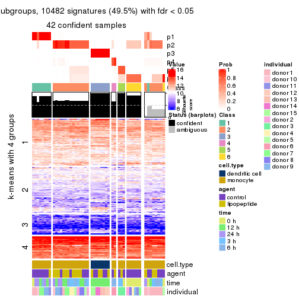
Compare the overlap of signatures from different k:
compare_signatures(res)
get_signature() returns a data frame invisibly. TO get the list of signatures, the function
call should be assigned to a variable explicitly. In following code, if plot argument is set
to FALSE, no heatmap is plotted while only the differential analysis is performed.
# code only for demonstration
tb = get_signature(res, k = ..., plot = FALSE)
An example of the output of tb is:
#> which_row fdr mean_1 mean_2 scaled_mean_1 scaled_mean_2 km
#> 1 38 0.042760348 8.373488 9.131774 -0.5533452 0.5164555 1
#> 2 40 0.018707592 7.106213 8.469186 -0.6173731 0.5762149 1
#> 3 55 0.019134737 10.221463 11.207825 -0.6159697 0.5749050 1
#> 4 59 0.006059896 5.921854 7.869574 -0.6899429 0.6439467 1
#> 5 60 0.018055526 8.928898 10.211722 -0.6204761 0.5791110 1
#> 6 98 0.009384629 15.714769 14.887706 0.6635654 -0.6193277 2
...
The columns in tb are:
which_row: row indices corresponding to the input matrix.fdr: FDR for the differential test. mean_x: The mean value in group x.scaled_mean_x: The mean value in group x after rows are scaled.km: Row groups if k-means clustering is applied to rows.UMAP plot which shows how samples are separated.
dimension_reduction(res, k = 2, method = "UMAP")
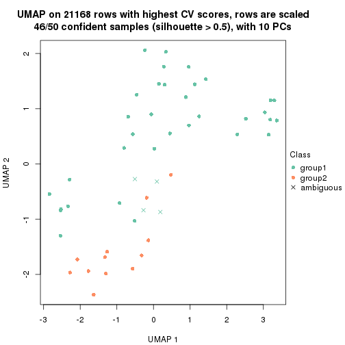
dimension_reduction(res, k = 3, method = "UMAP")
dimension_reduction(res, k = 4, method = "UMAP")
dimension_reduction(res, k = 5, method = "UMAP")
dimension_reduction(res, k = 6, method = "UMAP")
Following heatmap shows how subgroups are split when increasing k:
collect_classes(res)
Test correlation between subgroups and known annotations. If the known annotation is numeric, one-way ANOVA test is applied, and if the known annotation is discrete, chi-squared contingency table test is applied.
test_to_known_factors(res)
#> n cell.type(p) agent(p) time(p) individual(p) k
#> CV:hclust 46 1.60e-01 0.1309 8.47e-05 1.18e-01 2
#> CV:hclust 46 1.03e-10 0.1757 7.47e-06 1.10e-04 3
#> CV:hclust 46 5.67e-10 0.2038 1.10e-07 1.59e-07 4
#> CV:hclust 48 9.44e-10 0.0395 2.27e-08 1.75e-06 5
#> CV:hclust 42 5.89e-08 0.0442 9.07e-08 1.23e-06 6
If matrix rows can be associated to genes, consider to use functional_enrichment(res,
...) to perform function enrichment for the signature genes. See this vignette for more detailed explanations.
The object with results only for a single top-value method and a single partition method can be extracted as:
res = res_list["CV", "kmeans"]
# you can also extract it by
# res = res_list["CV:kmeans"]
A summary of res and all the functions that can be applied to it:
res
#> A 'ConsensusPartition' object with k = 2, 3, 4, 5, 6.
#> On a matrix with 21168 rows and 50 columns.
#> Top rows (1000, 2000, 3000, 4000, 5000) are extracted by 'CV' method.
#> Subgroups are detected by 'kmeans' method.
#> Performed in total 1250 partitions by row resampling.
#> Best k for subgroups seems to be 5.
#>
#> Following methods can be applied to this 'ConsensusPartition' object:
#> [1] "cola_report" "collect_classes" "collect_plots"
#> [4] "collect_stats" "colnames" "compare_signatures"
#> [7] "consensus_heatmap" "dimension_reduction" "functional_enrichment"
#> [10] "get_anno_col" "get_anno" "get_classes"
#> [13] "get_consensus" "get_matrix" "get_membership"
#> [16] "get_param" "get_signatures" "get_stats"
#> [19] "is_best_k" "is_stable_k" "membership_heatmap"
#> [22] "ncol" "nrow" "plot_ecdf"
#> [25] "rownames" "select_partition_number" "show"
#> [28] "suggest_best_k" "test_to_known_factors"
collect_plots() function collects all the plots made from res for all k (number of partitions)
into one single page to provide an easy and fast comparison between different k.
collect_plots(res)
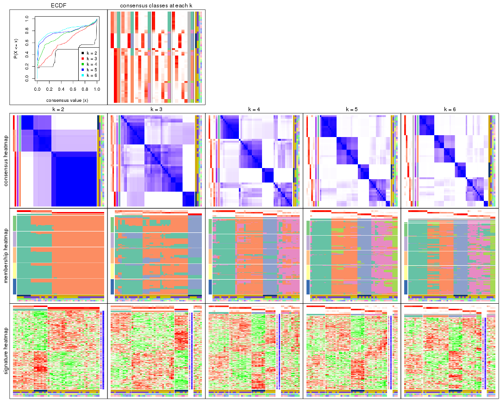
The plots are:
k and the heatmap of
predicted classes for each k.k.k.k.All the plots in panels can be made by individual functions and they are plotted later in this section.
select_partition_number() produces several plots showing different
statistics for choosing “optimized” k. There are following statistics:
k;k, the area increased is defined as \(A_k - A_{k-1}\).The detailed explanations of these statistics can be found in the cola vignette.
Generally speaking, lower PAC score, higher mean silhouette score or higher
concordance corresponds to better partition. Rand index and Jaccard index
measure how similar the current partition is compared to partition with k-1.
If they are too similar, we won't accept k is better than k-1.
select_partition_number(res)
The numeric values for all these statistics can be obtained by get_stats().
get_stats(res)
#> k 1-PAC mean_silhouette concordance area_increased Rand Jaccard
#> 2 2 0.628 0.917 0.928 0.4289 0.510 0.510
#> 3 3 0.390 0.708 0.742 0.4316 0.798 0.632
#> 4 4 0.574 0.692 0.805 0.1835 0.802 0.524
#> 5 5 0.756 0.790 0.856 0.0770 0.949 0.804
#> 6 6 0.800 0.732 0.802 0.0427 0.981 0.918
suggest_best_k() suggests the best \(k\) based on these statistics. The rules are as follows:
suggest_best_k(res)
#> [1] 5
Following shows the table of the partitions (You need to click the show/hide
code output link to see it). The membership matrix (columns with name p*)
is inferred by
clue::cl_consensus()
function with the SE method. Basically the value in the membership matrix
represents the probability to belong to a certain group. The finall class
label for an item is determined with the group with highest probability it
belongs to.
In get_classes() function, the entropy is calculated from the membership
matrix and the silhouette score is calculated from the consensus matrix.
cbind(get_classes(res, k = 2), get_membership(res, k = 2))
#> class entropy silhouette p1 p2
#> GSM225374 1 0.895 0.796 0.688 0.312
#> GSM225349 2 0.000 0.996 0.000 1.000
#> GSM225367 2 0.000 0.996 0.000 1.000
#> GSM225356 2 0.000 0.996 0.000 1.000
#> GSM225353 2 0.000 0.996 0.000 1.000
#> GSM225653 2 0.000 0.996 0.000 1.000
#> GSM209847 2 0.000 0.996 0.000 1.000
#> GSM225658 2 0.000 0.996 0.000 1.000
#> GSM225370 1 0.881 0.811 0.700 0.300
#> GSM225364 2 0.000 0.996 0.000 1.000
#> GSM225645 2 0.000 0.996 0.000 1.000
#> GSM225350 2 0.000 0.996 0.000 1.000
#> GSM225368 2 0.000 0.996 0.000 1.000
#> GSM225357 2 0.000 0.996 0.000 1.000
#> GSM225651 2 0.000 0.996 0.000 1.000
#> GSM225354 2 0.000 0.996 0.000 1.000
#> GSM225360 2 0.204 0.959 0.032 0.968
#> GSM225657 2 0.204 0.959 0.032 0.968
#> GSM225377 1 0.881 0.811 0.700 0.300
#> GSM225656 1 0.876 0.814 0.704 0.296
#> GSM225347 2 0.000 0.996 0.000 1.000
#> GSM225660 1 0.876 0.814 0.704 0.296
#> GSM225712 1 0.839 0.821 0.732 0.268
#> GSM225663 1 0.839 0.821 0.732 0.268
#> GSM225373 1 0.850 0.820 0.724 0.276
#> GSM225366 1 0.881 0.811 0.700 0.300
#> GSM225380 2 0.000 0.996 0.000 1.000
#> GSM225351 2 0.000 0.996 0.000 1.000
#> GSM225369 2 0.000 0.996 0.000 1.000
#> GSM225358 2 0.000 0.996 0.000 1.000
#> GSM225649 2 0.000 0.996 0.000 1.000
#> GSM225355 2 0.000 0.996 0.000 1.000
#> GSM225361 2 0.000 0.996 0.000 1.000
#> GSM225655 2 0.000 0.996 0.000 1.000
#> GSM225376 2 0.000 0.996 0.000 1.000
#> GSM225654 2 0.000 0.996 0.000 1.000
#> GSM225348 2 0.000 0.996 0.000 1.000
#> GSM225659 2 0.000 0.996 0.000 1.000
#> GSM225378 1 0.876 0.814 0.704 0.296
#> GSM225661 1 0.881 0.811 0.700 0.300
#> GSM225372 2 0.224 0.954 0.036 0.964
#> GSM225365 1 0.876 0.814 0.704 0.296
#> GSM225860 1 0.000 0.794 1.000 0.000
#> GSM225875 1 0.000 0.794 1.000 0.000
#> GSM225878 1 0.000 0.794 1.000 0.000
#> GSM225885 1 0.000 0.794 1.000 0.000
#> GSM225867 1 0.000 0.794 1.000 0.000
#> GSM225871 1 0.000 0.794 1.000 0.000
#> GSM225881 1 0.000 0.794 1.000 0.000
#> GSM225887 1 0.000 0.794 1.000 0.000
cbind(get_classes(res, k = 3), get_membership(res, k = 3))
#> class entropy silhouette p1 p2 p3
#> GSM225374 1 0.8157 0.7678 0.596 0.096 0.308
#> GSM225349 2 0.4842 0.6851 0.224 0.776 0.000
#> GSM225367 2 0.6168 0.6368 0.412 0.588 0.000
#> GSM225356 2 0.4842 0.6851 0.224 0.776 0.000
#> GSM225353 2 0.3482 0.7289 0.128 0.872 0.000
#> GSM225653 2 0.3619 0.7266 0.136 0.864 0.000
#> GSM209847 2 0.4842 0.6851 0.224 0.776 0.000
#> GSM225658 2 0.4842 0.6851 0.224 0.776 0.000
#> GSM225370 1 0.8044 0.7707 0.600 0.088 0.312
#> GSM225364 2 0.4842 0.6851 0.224 0.776 0.000
#> GSM225645 2 0.5397 0.7046 0.280 0.720 0.000
#> GSM225350 2 0.4504 0.6888 0.196 0.804 0.000
#> GSM225368 2 0.6225 0.6324 0.432 0.568 0.000
#> GSM225357 2 0.4504 0.6888 0.196 0.804 0.000
#> GSM225651 2 0.5327 0.7041 0.272 0.728 0.000
#> GSM225354 2 0.4504 0.6888 0.196 0.804 0.000
#> GSM225360 1 0.4682 0.3360 0.804 0.192 0.004
#> GSM225657 1 0.6451 0.4109 0.608 0.384 0.008
#> GSM225377 1 0.7477 0.7581 0.648 0.068 0.284
#> GSM225656 1 0.8159 0.7677 0.588 0.092 0.320
#> GSM225347 1 0.6308 0.0883 0.508 0.492 0.000
#> GSM225660 1 0.8159 0.7677 0.588 0.092 0.320
#> GSM225712 1 0.7786 0.7581 0.600 0.068 0.332
#> GSM225663 1 0.8013 0.7575 0.588 0.080 0.332
#> GSM225373 1 0.7786 0.7581 0.600 0.068 0.332
#> GSM225366 1 0.8683 0.6813 0.592 0.172 0.236
#> GSM225380 2 0.4796 0.6915 0.220 0.780 0.000
#> GSM225351 2 0.0747 0.7375 0.016 0.984 0.000
#> GSM225369 2 0.5948 0.6234 0.360 0.640 0.000
#> GSM225358 2 0.1529 0.7358 0.040 0.960 0.000
#> GSM225649 2 0.4887 0.6886 0.228 0.772 0.000
#> GSM225355 2 0.1753 0.7346 0.048 0.952 0.000
#> GSM225361 2 0.5926 0.6127 0.356 0.644 0.000
#> GSM225655 2 0.3551 0.7214 0.132 0.868 0.000
#> GSM225376 2 0.5397 0.6568 0.280 0.720 0.000
#> GSM225654 2 0.5363 0.6580 0.276 0.724 0.000
#> GSM225348 2 0.4002 0.6759 0.160 0.840 0.000
#> GSM225659 2 0.6267 0.2336 0.452 0.548 0.000
#> GSM225378 1 0.7588 0.7626 0.624 0.064 0.312
#> GSM225661 1 0.8670 0.6874 0.592 0.168 0.240
#> GSM225372 1 0.6566 0.2396 0.636 0.348 0.016
#> GSM225365 1 0.8159 0.7677 0.588 0.092 0.320
#> GSM225860 3 0.0747 0.9847 0.016 0.000 0.984
#> GSM225875 3 0.0237 0.9949 0.004 0.000 0.996
#> GSM225878 3 0.0237 0.9949 0.004 0.000 0.996
#> GSM225885 3 0.0237 0.9949 0.004 0.000 0.996
#> GSM225867 3 0.0747 0.9847 0.016 0.000 0.984
#> GSM225871 3 0.0237 0.9949 0.004 0.000 0.996
#> GSM225881 3 0.0237 0.9949 0.004 0.000 0.996
#> GSM225887 3 0.0237 0.9949 0.004 0.000 0.996
cbind(get_classes(res, k = 4), get_membership(res, k = 4))
#> class entropy silhouette p1 p2 p3 p4
#> GSM225374 1 0.119 0.898 0.968 0.024 0.004 0.004
#> GSM225349 2 0.164 0.765 0.060 0.940 0.000 0.000
#> GSM225367 2 0.696 -0.346 0.012 0.456 0.076 0.456
#> GSM225356 2 0.164 0.765 0.060 0.940 0.000 0.000
#> GSM225353 2 0.114 0.734 0.008 0.972 0.008 0.012
#> GSM225653 2 0.225 0.751 0.040 0.932 0.008 0.020
#> GSM209847 2 0.164 0.765 0.060 0.940 0.000 0.000
#> GSM225658 2 0.243 0.760 0.060 0.920 0.008 0.012
#> GSM225370 1 0.119 0.900 0.968 0.024 0.004 0.004
#> GSM225364 2 0.243 0.760 0.060 0.920 0.008 0.012
#> GSM225645 4 0.567 0.420 0.012 0.444 0.008 0.536
#> GSM225350 2 0.464 0.752 0.056 0.820 0.024 0.100
#> GSM225368 4 0.696 0.285 0.012 0.436 0.076 0.476
#> GSM225357 2 0.454 0.756 0.064 0.828 0.024 0.084
#> GSM225651 4 0.549 0.448 0.012 0.416 0.004 0.568
#> GSM225354 2 0.467 0.754 0.064 0.820 0.024 0.092
#> GSM225360 4 0.592 0.277 0.368 0.016 0.020 0.596
#> GSM225657 1 0.374 0.801 0.864 0.088 0.020 0.028
#> GSM225377 1 0.253 0.834 0.896 0.004 0.000 0.100
#> GSM225656 1 0.119 0.899 0.968 0.024 0.004 0.004
#> GSM225347 2 0.699 0.463 0.312 0.584 0.024 0.080
#> GSM225660 1 0.119 0.899 0.968 0.024 0.004 0.004
#> GSM225712 1 0.125 0.897 0.968 0.016 0.004 0.012
#> GSM225663 1 0.119 0.899 0.968 0.024 0.004 0.004
#> GSM225373 1 0.125 0.897 0.968 0.016 0.004 0.012
#> GSM225366 1 0.545 0.378 0.584 0.004 0.012 0.400
#> GSM225380 4 0.481 0.536 0.004 0.308 0.004 0.684
#> GSM225351 2 0.499 0.646 0.004 0.732 0.028 0.236
#> GSM225369 4 0.694 0.319 0.012 0.416 0.076 0.496
#> GSM225358 2 0.511 0.621 0.004 0.716 0.028 0.252
#> GSM225649 4 0.401 0.617 0.004 0.204 0.004 0.788
#> GSM225355 2 0.533 0.650 0.016 0.724 0.028 0.232
#> GSM225361 4 0.209 0.617 0.000 0.048 0.020 0.932
#> GSM225655 4 0.454 0.579 0.012 0.192 0.016 0.780
#> GSM225376 4 0.403 0.635 0.044 0.116 0.004 0.836
#> GSM225654 4 0.466 0.626 0.056 0.116 0.016 0.812
#> GSM225348 2 0.650 0.482 0.040 0.600 0.028 0.332
#> GSM225659 4 0.724 0.349 0.296 0.112 0.020 0.572
#> GSM225378 1 0.168 0.881 0.948 0.004 0.004 0.044
#> GSM225661 1 0.502 0.578 0.684 0.004 0.012 0.300
#> GSM225372 4 0.474 0.347 0.328 0.004 0.000 0.668
#> GSM225365 1 0.119 0.899 0.968 0.024 0.004 0.004
#> GSM225860 3 0.413 0.954 0.116 0.012 0.836 0.036
#> GSM225875 3 0.259 0.985 0.116 0.000 0.884 0.000
#> GSM225878 3 0.259 0.985 0.116 0.000 0.884 0.000
#> GSM225885 3 0.259 0.985 0.116 0.000 0.884 0.000
#> GSM225867 3 0.413 0.954 0.116 0.012 0.836 0.036
#> GSM225871 3 0.259 0.985 0.116 0.000 0.884 0.000
#> GSM225881 3 0.259 0.985 0.116 0.000 0.884 0.000
#> GSM225887 3 0.259 0.985 0.116 0.000 0.884 0.000
cbind(get_classes(res, k = 5), get_membership(res, k = 5))
#> class entropy silhouette p1 p2 p3 p4 p5
#> GSM225374 1 0.0162 0.945 0.996 0.000 0.000 0.004 0.000
#> GSM225349 2 0.3127 0.790 0.020 0.848 0.004 0.000 0.128
#> GSM225367 5 0.4657 0.938 0.004 0.128 0.000 0.116 0.752
#> GSM225356 2 0.3127 0.790 0.020 0.848 0.004 0.000 0.128
#> GSM225353 2 0.3485 0.762 0.008 0.808 0.004 0.004 0.176
#> GSM225653 2 0.4263 0.736 0.020 0.768 0.004 0.016 0.192
#> GSM209847 2 0.3127 0.790 0.020 0.848 0.004 0.000 0.128
#> GSM225658 2 0.4251 0.739 0.024 0.768 0.004 0.012 0.192
#> GSM225370 1 0.0486 0.947 0.988 0.000 0.004 0.004 0.004
#> GSM225364 2 0.4251 0.739 0.024 0.768 0.004 0.012 0.192
#> GSM225645 4 0.5754 0.466 0.000 0.136 0.000 0.604 0.260
#> GSM225350 2 0.2074 0.812 0.016 0.920 0.000 0.060 0.004
#> GSM225368 5 0.4548 0.951 0.000 0.120 0.000 0.128 0.752
#> GSM225357 2 0.2074 0.812 0.016 0.920 0.000 0.060 0.004
#> GSM225651 4 0.5657 0.488 0.000 0.128 0.000 0.616 0.256
#> GSM225354 2 0.2074 0.812 0.016 0.920 0.000 0.060 0.004
#> GSM225360 4 0.5856 0.522 0.224 0.000 0.000 0.604 0.172
#> GSM225657 1 0.0968 0.938 0.972 0.012 0.000 0.012 0.004
#> GSM225377 1 0.1012 0.936 0.968 0.000 0.000 0.012 0.020
#> GSM225656 1 0.0613 0.946 0.984 0.000 0.004 0.008 0.004
#> GSM225347 2 0.3859 0.747 0.100 0.820 0.000 0.072 0.008
#> GSM225660 1 0.0613 0.945 0.984 0.000 0.004 0.004 0.008
#> GSM225712 1 0.0613 0.946 0.984 0.000 0.004 0.008 0.004
#> GSM225663 1 0.0613 0.945 0.984 0.000 0.004 0.004 0.008
#> GSM225373 1 0.0613 0.946 0.984 0.000 0.004 0.008 0.004
#> GSM225366 4 0.4061 0.541 0.240 0.004 0.000 0.740 0.016
#> GSM225380 4 0.5289 0.529 0.000 0.096 0.000 0.652 0.252
#> GSM225351 2 0.2719 0.780 0.000 0.852 0.000 0.144 0.004
#> GSM225369 5 0.4444 0.918 0.000 0.088 0.000 0.156 0.756
#> GSM225358 2 0.2806 0.774 0.000 0.844 0.000 0.152 0.004
#> GSM225649 4 0.4646 0.603 0.000 0.060 0.000 0.712 0.228
#> GSM225355 2 0.2719 0.780 0.000 0.852 0.000 0.144 0.004
#> GSM225361 4 0.3551 0.619 0.000 0.008 0.000 0.772 0.220
#> GSM225655 4 0.1768 0.661 0.004 0.072 0.000 0.924 0.000
#> GSM225376 4 0.2204 0.687 0.016 0.016 0.000 0.920 0.048
#> GSM225654 4 0.1893 0.669 0.024 0.048 0.000 0.928 0.000
#> GSM225348 2 0.3242 0.752 0.012 0.816 0.000 0.172 0.000
#> GSM225659 4 0.3112 0.632 0.100 0.044 0.000 0.856 0.000
#> GSM225378 1 0.0740 0.945 0.980 0.000 0.004 0.008 0.008
#> GSM225661 1 0.4798 0.307 0.576 0.004 0.000 0.404 0.016
#> GSM225372 4 0.3734 0.625 0.168 0.000 0.000 0.796 0.036
#> GSM225365 1 0.0613 0.945 0.984 0.000 0.004 0.004 0.008
#> GSM225860 3 0.3795 0.846 0.004 0.008 0.804 0.020 0.164
#> GSM225875 3 0.1340 0.941 0.016 0.004 0.960 0.004 0.016
#> GSM225878 3 0.0510 0.946 0.016 0.000 0.984 0.000 0.000
#> GSM225885 3 0.0671 0.946 0.016 0.000 0.980 0.004 0.000
#> GSM225867 3 0.3795 0.846 0.004 0.008 0.804 0.020 0.164
#> GSM225871 3 0.1340 0.941 0.016 0.004 0.960 0.004 0.016
#> GSM225881 3 0.0510 0.946 0.016 0.000 0.984 0.000 0.000
#> GSM225887 3 0.0671 0.946 0.016 0.000 0.980 0.004 0.000
cbind(get_classes(res, k = 6), get_membership(res, k = 6))
#> class entropy silhouette p1 p2 p3 p4 p5 p6
#> GSM225374 1 0.0603 0.958 0.980 0.000 0.004 0.000 0.000 NA
#> GSM225349 2 0.0260 0.610 0.008 0.992 0.000 0.000 0.000 NA
#> GSM225367 5 0.2547 0.964 0.000 0.112 0.000 0.016 0.868 NA
#> GSM225356 2 0.0405 0.608 0.008 0.988 0.000 0.000 0.004 NA
#> GSM225353 2 0.2003 0.560 0.000 0.912 0.000 0.000 0.044 NA
#> GSM225653 2 0.2822 0.524 0.008 0.868 0.000 0.000 0.056 NA
#> GSM209847 2 0.0260 0.610 0.008 0.992 0.000 0.000 0.000 NA
#> GSM225658 2 0.2860 0.528 0.012 0.868 0.000 0.000 0.052 NA
#> GSM225370 1 0.0405 0.958 0.988 0.000 0.008 0.000 0.004 NA
#> GSM225364 2 0.2860 0.528 0.012 0.868 0.000 0.000 0.052 NA
#> GSM225645 4 0.6825 0.424 0.004 0.140 0.000 0.520 0.216 NA
#> GSM225350 2 0.5108 0.679 0.008 0.536 0.000 0.052 0.004 NA
#> GSM225368 5 0.2333 0.982 0.000 0.092 0.000 0.024 0.884 NA
#> GSM225357 2 0.4883 0.679 0.008 0.552 0.000 0.036 0.004 NA
#> GSM225651 4 0.6795 0.430 0.004 0.136 0.000 0.524 0.216 NA
#> GSM225354 2 0.5108 0.679 0.008 0.536 0.000 0.052 0.004 NA
#> GSM225360 4 0.6219 0.472 0.204 0.000 0.000 0.576 0.148 NA
#> GSM225657 1 0.1584 0.954 0.928 0.000 0.000 0.000 0.008 NA
#> GSM225377 1 0.0692 0.950 0.976 0.000 0.000 0.020 0.004 NA
#> GSM225656 1 0.1719 0.956 0.928 0.000 0.008 0.000 0.008 NA
#> GSM225347 2 0.5593 0.653 0.040 0.488 0.000 0.044 0.004 NA
#> GSM225660 1 0.2058 0.950 0.908 0.000 0.008 0.000 0.012 NA
#> GSM225712 1 0.0405 0.958 0.988 0.000 0.008 0.000 0.004 NA
#> GSM225663 1 0.2001 0.952 0.912 0.000 0.008 0.000 0.012 NA
#> GSM225373 1 0.0405 0.958 0.988 0.000 0.008 0.000 0.004 NA
#> GSM225366 4 0.4257 0.590 0.100 0.000 0.004 0.760 0.008 NA
#> GSM225380 4 0.6517 0.467 0.004 0.104 0.000 0.560 0.208 NA
#> GSM225351 2 0.5216 0.661 0.000 0.484 0.000 0.092 0.000 NA
#> GSM225369 5 0.2333 0.982 0.000 0.092 0.000 0.024 0.884 NA
#> GSM225358 2 0.5218 0.659 0.000 0.480 0.000 0.092 0.000 NA
#> GSM225649 4 0.5845 0.519 0.004 0.048 0.000 0.620 0.204 NA
#> GSM225355 2 0.5252 0.659 0.000 0.480 0.000 0.096 0.000 NA
#> GSM225361 4 0.4280 0.558 0.004 0.000 0.000 0.736 0.168 NA
#> GSM225655 4 0.2362 0.624 0.000 0.004 0.000 0.860 0.000 NA
#> GSM225376 4 0.2926 0.629 0.012 0.000 0.000 0.852 0.024 NA
#> GSM225654 4 0.2346 0.625 0.008 0.000 0.000 0.868 0.000 NA
#> GSM225348 2 0.5389 0.645 0.000 0.460 0.000 0.112 0.000 NA
#> GSM225659 4 0.2925 0.617 0.016 0.000 0.000 0.832 0.004 NA
#> GSM225378 1 0.0893 0.950 0.972 0.000 0.004 0.016 0.004 NA
#> GSM225661 4 0.5780 0.134 0.392 0.000 0.004 0.476 0.008 NA
#> GSM225372 4 0.3340 0.588 0.196 0.000 0.000 0.784 0.004 NA
#> GSM225365 1 0.2058 0.950 0.908 0.000 0.008 0.000 0.012 NA
#> GSM225860 3 0.3878 0.816 0.000 0.000 0.764 0.004 0.056 NA
#> GSM225875 3 0.0951 0.930 0.000 0.008 0.968 0.004 0.020 NA
#> GSM225878 3 0.0000 0.934 0.000 0.000 1.000 0.000 0.000 NA
#> GSM225885 3 0.0260 0.933 0.000 0.000 0.992 0.000 0.000 NA
#> GSM225867 3 0.3852 0.816 0.000 0.000 0.764 0.004 0.052 NA
#> GSM225871 3 0.0951 0.930 0.000 0.008 0.968 0.004 0.020 NA
#> GSM225881 3 0.0000 0.934 0.000 0.000 1.000 0.000 0.000 NA
#> GSM225887 3 0.0260 0.933 0.000 0.000 0.992 0.000 0.000 NA
Heatmaps for the consensus matrix. It visualizes the probability of two samples to be in a same group.
consensus_heatmap(res, k = 2)
consensus_heatmap(res, k = 3)
consensus_heatmap(res, k = 4)
consensus_heatmap(res, k = 5)
consensus_heatmap(res, k = 6)
Heatmaps for the membership of samples in all partitions to see how consistent they are:
membership_heatmap(res, k = 2)
membership_heatmap(res, k = 3)
membership_heatmap(res, k = 4)
membership_heatmap(res, k = 5)
membership_heatmap(res, k = 6)
As soon as we have had the classes for columns, we can look for signatures which are significantly different between classes which can be candidate marks for certain classes. Following are the heatmaps for signatures.
Signature heatmaps where rows are scaled:
get_signatures(res, k = 2)
get_signatures(res, k = 3)
get_signatures(res, k = 4)
get_signatures(res, k = 5)
get_signatures(res, k = 6)
Signature heatmaps where rows are not scaled:
get_signatures(res, k = 2, scale_rows = FALSE)
get_signatures(res, k = 3, scale_rows = FALSE)
get_signatures(res, k = 4, scale_rows = FALSE)
get_signatures(res, k = 5, scale_rows = FALSE)
get_signatures(res, k = 6, scale_rows = FALSE)
Compare the overlap of signatures from different k:
compare_signatures(res)
get_signature() returns a data frame invisibly. TO get the list of signatures, the function
call should be assigned to a variable explicitly. In following code, if plot argument is set
to FALSE, no heatmap is plotted while only the differential analysis is performed.
# code only for demonstration
tb = get_signature(res, k = ..., plot = FALSE)
An example of the output of tb is:
#> which_row fdr mean_1 mean_2 scaled_mean_1 scaled_mean_2 km
#> 1 38 0.042760348 8.373488 9.131774 -0.5533452 0.5164555 1
#> 2 40 0.018707592 7.106213 8.469186 -0.6173731 0.5762149 1
#> 3 55 0.019134737 10.221463 11.207825 -0.6159697 0.5749050 1
#> 4 59 0.006059896 5.921854 7.869574 -0.6899429 0.6439467 1
#> 5 60 0.018055526 8.928898 10.211722 -0.6204761 0.5791110 1
#> 6 98 0.009384629 15.714769 14.887706 0.6635654 -0.6193277 2
...
The columns in tb are:
which_row: row indices corresponding to the input matrix.fdr: FDR for the differential test. mean_x: The mean value in group x.scaled_mean_x: The mean value in group x after rows are scaled.km: Row groups if k-means clustering is applied to rows.UMAP plot which shows how samples are separated.
dimension_reduction(res, k = 2, method = "UMAP")

dimension_reduction(res, k = 3, method = "UMAP")
dimension_reduction(res, k = 4, method = "UMAP")
dimension_reduction(res, k = 5, method = "UMAP")
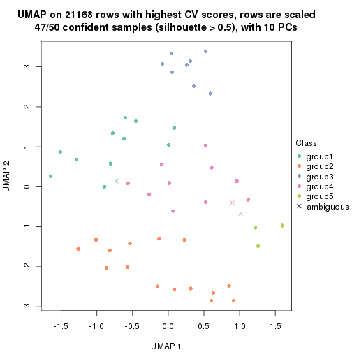
dimension_reduction(res, k = 6, method = "UMAP")
Following heatmap shows how subgroups are split when increasing k:
collect_classes(res)
Test correlation between subgroups and known annotations. If the known annotation is numeric, one-way ANOVA test is applied, and if the known annotation is discrete, chi-squared contingency table test is applied.
test_to_known_factors(res)
#> n cell.type(p) agent(p) time(p) individual(p) k
#> CV:kmeans 50 7.09e-04 0.76828 4.25e-05 2.01e-02 2
#> CV:kmeans 45 1.69e-10 0.44375 7.09e-08 7.39e-05 3
#> CV:kmeans 39 1.74e-08 0.00775 1.56e-06 1.88e-04 4
#> CV:kmeans 47 1.52e-09 0.03553 3.51e-05 1.72e-08 5
#> CV:kmeans 45 3.98e-09 0.02438 3.97e-05 1.71e-07 6
If matrix rows can be associated to genes, consider to use functional_enrichment(res,
...) to perform function enrichment for the signature genes. See this vignette for more detailed explanations.
The object with results only for a single top-value method and a single partition method can be extracted as:
res = res_list["CV", "skmeans"]
# you can also extract it by
# res = res_list["CV:skmeans"]
A summary of res and all the functions that can be applied to it:
res
#> A 'ConsensusPartition' object with k = 2, 3, 4, 5, 6.
#> On a matrix with 21168 rows and 50 columns.
#> Top rows (1000, 2000, 3000, 4000, 5000) are extracted by 'CV' method.
#> Subgroups are detected by 'skmeans' method.
#> Performed in total 1250 partitions by row resampling.
#> Best k for subgroups seems to be 2.
#>
#> Following methods can be applied to this 'ConsensusPartition' object:
#> [1] "cola_report" "collect_classes" "collect_plots"
#> [4] "collect_stats" "colnames" "compare_signatures"
#> [7] "consensus_heatmap" "dimension_reduction" "functional_enrichment"
#> [10] "get_anno_col" "get_anno" "get_classes"
#> [13] "get_consensus" "get_matrix" "get_membership"
#> [16] "get_param" "get_signatures" "get_stats"
#> [19] "is_best_k" "is_stable_k" "membership_heatmap"
#> [22] "ncol" "nrow" "plot_ecdf"
#> [25] "rownames" "select_partition_number" "show"
#> [28] "suggest_best_k" "test_to_known_factors"
collect_plots() function collects all the plots made from res for all k (number of partitions)
into one single page to provide an easy and fast comparison between different k.
collect_plots(res)
The plots are:
k and the heatmap of
predicted classes for each k.k.k.k.All the plots in panels can be made by individual functions and they are plotted later in this section.
select_partition_number() produces several plots showing different
statistics for choosing “optimized” k. There are following statistics:
k;k, the area increased is defined as \(A_k - A_{k-1}\).The detailed explanations of these statistics can be found in the cola vignette.
Generally speaking, lower PAC score, higher mean silhouette score or higher
concordance corresponds to better partition. Rand index and Jaccard index
measure how similar the current partition is compared to partition with k-1.
If they are too similar, we won't accept k is better than k-1.
select_partition_number(res)
The numeric values for all these statistics can be obtained by get_stats().
get_stats(res)
#> k 1-PAC mean_silhouette concordance area_increased Rand Jaccard
#> 2 2 1.000 0.982 0.993 0.5060 0.493 0.493
#> 3 3 0.657 0.851 0.884 0.3138 0.771 0.563
#> 4 4 0.697 0.765 0.862 0.1333 0.875 0.642
#> 5 5 0.744 0.680 0.819 0.0702 0.905 0.645
#> 6 6 0.720 0.644 0.761 0.0416 0.918 0.621
suggest_best_k() suggests the best \(k\) based on these statistics. The rules are as follows:
suggest_best_k(res)
#> [1] 2
Following shows the table of the partitions (You need to click the show/hide
code output link to see it). The membership matrix (columns with name p*)
is inferred by
clue::cl_consensus()
function with the SE method. Basically the value in the membership matrix
represents the probability to belong to a certain group. The finall class
label for an item is determined with the group with highest probability it
belongs to.
In get_classes() function, the entropy is calculated from the membership
matrix and the silhouette score is calculated from the consensus matrix.
cbind(get_classes(res, k = 2), get_membership(res, k = 2))
#> class entropy silhouette p1 p2
#> GSM225374 1 0.0000 0.984 1.000 0.000
#> GSM225349 2 0.0000 1.000 0.000 1.000
#> GSM225367 2 0.0000 1.000 0.000 1.000
#> GSM225356 2 0.0000 1.000 0.000 1.000
#> GSM225353 2 0.0000 1.000 0.000 1.000
#> GSM225653 2 0.0000 1.000 0.000 1.000
#> GSM209847 2 0.0000 1.000 0.000 1.000
#> GSM225658 2 0.0000 1.000 0.000 1.000
#> GSM225370 1 0.0000 0.984 1.000 0.000
#> GSM225364 2 0.0000 1.000 0.000 1.000
#> GSM225645 2 0.0000 1.000 0.000 1.000
#> GSM225350 2 0.0000 1.000 0.000 1.000
#> GSM225368 2 0.0000 1.000 0.000 1.000
#> GSM225357 2 0.0000 1.000 0.000 1.000
#> GSM225651 2 0.0000 1.000 0.000 1.000
#> GSM225354 2 0.0000 1.000 0.000 1.000
#> GSM225360 1 0.0000 0.984 1.000 0.000
#> GSM225657 1 0.0376 0.980 0.996 0.004
#> GSM225377 1 0.0000 0.984 1.000 0.000
#> GSM225656 1 0.0000 0.984 1.000 0.000
#> GSM225347 2 0.0000 1.000 0.000 1.000
#> GSM225660 1 0.0000 0.984 1.000 0.000
#> GSM225712 1 0.0000 0.984 1.000 0.000
#> GSM225663 1 0.0000 0.984 1.000 0.000
#> GSM225373 1 0.0000 0.984 1.000 0.000
#> GSM225366 1 0.0000 0.984 1.000 0.000
#> GSM225380 2 0.0000 1.000 0.000 1.000
#> GSM225351 2 0.0000 1.000 0.000 1.000
#> GSM225369 2 0.0000 1.000 0.000 1.000
#> GSM225358 2 0.0000 1.000 0.000 1.000
#> GSM225649 2 0.0000 1.000 0.000 1.000
#> GSM225355 2 0.0000 1.000 0.000 1.000
#> GSM225361 2 0.0000 1.000 0.000 1.000
#> GSM225655 2 0.0000 1.000 0.000 1.000
#> GSM225376 2 0.0000 1.000 0.000 1.000
#> GSM225654 2 0.0000 1.000 0.000 1.000
#> GSM225348 2 0.0000 1.000 0.000 1.000
#> GSM225659 2 0.0000 1.000 0.000 1.000
#> GSM225378 1 0.0000 0.984 1.000 0.000
#> GSM225661 1 0.0000 0.984 1.000 0.000
#> GSM225372 1 0.9358 0.457 0.648 0.352
#> GSM225365 1 0.0000 0.984 1.000 0.000
#> GSM225860 1 0.0000 0.984 1.000 0.000
#> GSM225875 1 0.0000 0.984 1.000 0.000
#> GSM225878 1 0.0000 0.984 1.000 0.000
#> GSM225885 1 0.0000 0.984 1.000 0.000
#> GSM225867 1 0.0000 0.984 1.000 0.000
#> GSM225871 1 0.0000 0.984 1.000 0.000
#> GSM225881 1 0.0000 0.984 1.000 0.000
#> GSM225887 1 0.0000 0.984 1.000 0.000
cbind(get_classes(res, k = 3), get_membership(res, k = 3))
#> class entropy silhouette p1 p2 p3
#> GSM225374 1 0.1163 0.897 0.972 0.028 0.000
#> GSM225349 2 0.0000 0.915 0.000 1.000 0.000
#> GSM225367 3 0.6225 0.570 0.000 0.432 0.568
#> GSM225356 2 0.0000 0.915 0.000 1.000 0.000
#> GSM225353 2 0.0592 0.911 0.000 0.988 0.012
#> GSM225653 2 0.1289 0.897 0.000 0.968 0.032
#> GSM209847 2 0.0000 0.915 0.000 1.000 0.000
#> GSM225658 2 0.0424 0.913 0.000 0.992 0.008
#> GSM225370 1 0.0000 0.912 1.000 0.000 0.000
#> GSM225364 2 0.0592 0.911 0.000 0.988 0.012
#> GSM225645 3 0.4654 0.864 0.000 0.208 0.792
#> GSM225350 2 0.0237 0.914 0.000 0.996 0.004
#> GSM225368 3 0.5882 0.725 0.000 0.348 0.652
#> GSM225357 2 0.0000 0.915 0.000 1.000 0.000
#> GSM225651 3 0.4452 0.871 0.000 0.192 0.808
#> GSM225354 2 0.0424 0.913 0.000 0.992 0.008
#> GSM225360 3 0.5036 0.740 0.172 0.020 0.808
#> GSM225657 2 0.7268 0.200 0.448 0.524 0.028
#> GSM225377 1 0.2711 0.858 0.912 0.000 0.088
#> GSM225656 1 0.0000 0.912 1.000 0.000 0.000
#> GSM225347 2 0.3502 0.823 0.084 0.896 0.020
#> GSM225660 1 0.0000 0.912 1.000 0.000 0.000
#> GSM225712 1 0.0000 0.912 1.000 0.000 0.000
#> GSM225663 1 0.0000 0.912 1.000 0.000 0.000
#> GSM225373 1 0.0000 0.912 1.000 0.000 0.000
#> GSM225366 1 0.6244 0.535 0.560 0.000 0.440
#> GSM225380 3 0.4235 0.874 0.000 0.176 0.824
#> GSM225351 2 0.1753 0.893 0.000 0.952 0.048
#> GSM225369 3 0.5397 0.796 0.000 0.280 0.720
#> GSM225358 2 0.4062 0.740 0.000 0.836 0.164
#> GSM225649 3 0.4002 0.875 0.000 0.160 0.840
#> GSM225355 2 0.1964 0.889 0.000 0.944 0.056
#> GSM225361 3 0.3752 0.873 0.000 0.144 0.856
#> GSM225655 3 0.4504 0.859 0.000 0.196 0.804
#> GSM225376 3 0.3983 0.873 0.004 0.144 0.852
#> GSM225654 3 0.3784 0.865 0.004 0.132 0.864
#> GSM225348 2 0.2165 0.883 0.000 0.936 0.064
#> GSM225659 3 0.5967 0.809 0.032 0.216 0.752
#> GSM225378 1 0.0237 0.912 0.996 0.000 0.004
#> GSM225661 1 0.4235 0.825 0.824 0.000 0.176
#> GSM225372 3 0.3941 0.752 0.156 0.000 0.844
#> GSM225365 1 0.0000 0.912 1.000 0.000 0.000
#> GSM225860 1 0.3752 0.903 0.856 0.000 0.144
#> GSM225875 1 0.3752 0.903 0.856 0.000 0.144
#> GSM225878 1 0.3752 0.903 0.856 0.000 0.144
#> GSM225885 1 0.3752 0.903 0.856 0.000 0.144
#> GSM225867 1 0.3752 0.903 0.856 0.000 0.144
#> GSM225871 1 0.3752 0.903 0.856 0.000 0.144
#> GSM225881 1 0.3752 0.903 0.856 0.000 0.144
#> GSM225887 1 0.3752 0.903 0.856 0.000 0.144
cbind(get_classes(res, k = 4), get_membership(res, k = 4))
#> class entropy silhouette p1 p2 p3 p4
#> GSM225374 1 0.1796 0.9257 0.948 0.016 0.032 0.004
#> GSM225349 2 0.0000 0.8181 0.000 1.000 0.000 0.000
#> GSM225367 2 0.5623 -0.0941 0.004 0.552 0.016 0.428
#> GSM225356 2 0.0188 0.8179 0.004 0.996 0.000 0.000
#> GSM225353 2 0.1509 0.8086 0.008 0.960 0.012 0.020
#> GSM225653 2 0.2957 0.7673 0.016 0.900 0.016 0.068
#> GSM209847 2 0.0188 0.8179 0.004 0.996 0.000 0.000
#> GSM225658 2 0.1394 0.8112 0.016 0.964 0.008 0.012
#> GSM225370 1 0.1211 0.9350 0.960 0.000 0.040 0.000
#> GSM225364 2 0.1377 0.8098 0.008 0.964 0.008 0.020
#> GSM225645 4 0.4776 0.6490 0.000 0.272 0.016 0.712
#> GSM225350 2 0.2474 0.8089 0.008 0.920 0.016 0.056
#> GSM225368 4 0.5570 0.4422 0.004 0.404 0.016 0.576
#> GSM225357 2 0.1732 0.8178 0.004 0.948 0.008 0.040
#> GSM225651 4 0.4803 0.6690 0.008 0.248 0.012 0.732
#> GSM225354 2 0.2882 0.8041 0.016 0.904 0.016 0.064
#> GSM225360 4 0.7102 0.3128 0.368 0.012 0.096 0.524
#> GSM225657 1 0.2165 0.8922 0.936 0.032 0.024 0.008
#> GSM225377 1 0.2089 0.9201 0.932 0.000 0.048 0.020
#> GSM225656 1 0.1389 0.9358 0.952 0.000 0.048 0.000
#> GSM225347 2 0.6017 0.6530 0.180 0.716 0.020 0.084
#> GSM225660 1 0.1557 0.9349 0.944 0.000 0.056 0.000
#> GSM225712 1 0.1867 0.9295 0.928 0.000 0.072 0.000
#> GSM225663 1 0.1716 0.9327 0.936 0.000 0.064 0.000
#> GSM225373 1 0.1474 0.9354 0.948 0.000 0.052 0.000
#> GSM225366 3 0.6570 0.4640 0.116 0.000 0.604 0.280
#> GSM225380 4 0.3249 0.7305 0.000 0.140 0.008 0.852
#> GSM225351 2 0.4692 0.7224 0.012 0.772 0.020 0.196
#> GSM225369 4 0.5202 0.5837 0.004 0.312 0.016 0.668
#> GSM225358 2 0.5404 0.4684 0.004 0.600 0.012 0.384
#> GSM225649 4 0.1824 0.7540 0.000 0.060 0.004 0.936
#> GSM225355 2 0.4770 0.7159 0.012 0.764 0.020 0.204
#> GSM225361 4 0.1124 0.7538 0.004 0.012 0.012 0.972
#> GSM225655 4 0.3102 0.7194 0.016 0.064 0.024 0.896
#> GSM225376 4 0.1362 0.7500 0.020 0.004 0.012 0.964
#> GSM225654 4 0.2057 0.7435 0.032 0.008 0.020 0.940
#> GSM225348 2 0.5512 0.6215 0.016 0.680 0.020 0.284
#> GSM225659 4 0.5758 0.6271 0.124 0.096 0.028 0.752
#> GSM225378 1 0.1489 0.9297 0.952 0.000 0.044 0.004
#> GSM225661 1 0.6689 0.4919 0.620 0.000 0.196 0.184
#> GSM225372 4 0.4542 0.6202 0.228 0.000 0.020 0.752
#> GSM225365 1 0.1940 0.9197 0.924 0.000 0.076 0.000
#> GSM225860 3 0.1389 0.9504 0.048 0.000 0.952 0.000
#> GSM225875 3 0.1389 0.9504 0.048 0.000 0.952 0.000
#> GSM225878 3 0.1389 0.9504 0.048 0.000 0.952 0.000
#> GSM225885 3 0.1389 0.9504 0.048 0.000 0.952 0.000
#> GSM225867 3 0.1389 0.9504 0.048 0.000 0.952 0.000
#> GSM225871 3 0.1389 0.9504 0.048 0.000 0.952 0.000
#> GSM225881 3 0.1389 0.9504 0.048 0.000 0.952 0.000
#> GSM225887 3 0.1389 0.9504 0.048 0.000 0.952 0.000
cbind(get_classes(res, k = 5), get_membership(res, k = 5))
#> class entropy silhouette p1 p2 p3 p4 p5
#> GSM225374 1 0.0703 0.9402 0.976 0.000 0.000 0.000 0.024
#> GSM225349 2 0.3398 0.6982 0.000 0.780 0.000 0.004 0.216
#> GSM225367 5 0.1952 0.5490 0.004 0.084 0.000 0.000 0.912
#> GSM225356 2 0.3579 0.6837 0.000 0.756 0.000 0.004 0.240
#> GSM225353 2 0.4527 0.5323 0.000 0.596 0.000 0.012 0.392
#> GSM225653 5 0.4814 -0.2650 0.004 0.412 0.000 0.016 0.568
#> GSM209847 2 0.3430 0.6961 0.000 0.776 0.000 0.004 0.220
#> GSM225658 2 0.4802 0.3598 0.004 0.504 0.000 0.012 0.480
#> GSM225370 1 0.0613 0.9427 0.984 0.000 0.004 0.008 0.004
#> GSM225364 2 0.4803 0.3509 0.004 0.496 0.000 0.012 0.488
#> GSM225645 5 0.3209 0.5960 0.000 0.008 0.000 0.180 0.812
#> GSM225350 2 0.1493 0.7374 0.000 0.948 0.000 0.024 0.028
#> GSM225368 5 0.2659 0.5930 0.000 0.052 0.000 0.060 0.888
#> GSM225357 2 0.2731 0.7313 0.004 0.876 0.000 0.016 0.104
#> GSM225651 5 0.4106 0.5498 0.000 0.020 0.000 0.256 0.724
#> GSM225354 2 0.1197 0.7319 0.000 0.952 0.000 0.048 0.000
#> GSM225360 5 0.7694 0.0701 0.152 0.008 0.076 0.300 0.464
#> GSM225657 1 0.2201 0.9139 0.920 0.040 0.000 0.032 0.008
#> GSM225377 1 0.3753 0.8361 0.832 0.000 0.044 0.104 0.020
#> GSM225656 1 0.0992 0.9409 0.968 0.000 0.000 0.024 0.008
#> GSM225347 2 0.3270 0.7020 0.044 0.852 0.000 0.100 0.004
#> GSM225660 1 0.0932 0.9423 0.972 0.000 0.004 0.020 0.004
#> GSM225712 1 0.1026 0.9403 0.968 0.000 0.024 0.004 0.004
#> GSM225663 1 0.0740 0.9432 0.980 0.000 0.008 0.008 0.004
#> GSM225373 1 0.0898 0.9411 0.972 0.000 0.020 0.008 0.000
#> GSM225366 4 0.5105 0.4932 0.052 0.008 0.252 0.684 0.004
#> GSM225380 5 0.4836 0.4413 0.000 0.036 0.000 0.336 0.628
#> GSM225351 2 0.2848 0.7115 0.000 0.868 0.000 0.104 0.028
#> GSM225369 5 0.2966 0.6059 0.000 0.016 0.000 0.136 0.848
#> GSM225358 2 0.5344 0.5553 0.000 0.672 0.000 0.168 0.160
#> GSM225649 5 0.4807 0.1879 0.000 0.020 0.000 0.448 0.532
#> GSM225355 2 0.2753 0.7010 0.000 0.856 0.000 0.136 0.008
#> GSM225361 4 0.4674 0.1237 0.000 0.016 0.000 0.568 0.416
#> GSM225655 4 0.3476 0.5885 0.000 0.076 0.000 0.836 0.088
#> GSM225376 4 0.3706 0.4727 0.004 0.004 0.000 0.756 0.236
#> GSM225654 4 0.2171 0.6127 0.000 0.024 0.000 0.912 0.064
#> GSM225348 2 0.3086 0.6717 0.000 0.816 0.000 0.180 0.004
#> GSM225659 4 0.3113 0.5944 0.020 0.100 0.000 0.864 0.016
#> GSM225378 1 0.3428 0.8515 0.848 0.000 0.052 0.092 0.008
#> GSM225661 4 0.5375 0.3596 0.320 0.000 0.076 0.604 0.000
#> GSM225372 4 0.5764 0.4439 0.152 0.000 0.000 0.612 0.236
#> GSM225365 1 0.2199 0.9262 0.928 0.020 0.020 0.024 0.008
#> GSM225860 3 0.0000 1.0000 0.000 0.000 1.000 0.000 0.000
#> GSM225875 3 0.0000 1.0000 0.000 0.000 1.000 0.000 0.000
#> GSM225878 3 0.0000 1.0000 0.000 0.000 1.000 0.000 0.000
#> GSM225885 3 0.0000 1.0000 0.000 0.000 1.000 0.000 0.000
#> GSM225867 3 0.0000 1.0000 0.000 0.000 1.000 0.000 0.000
#> GSM225871 3 0.0000 1.0000 0.000 0.000 1.000 0.000 0.000
#> GSM225881 3 0.0000 1.0000 0.000 0.000 1.000 0.000 0.000
#> GSM225887 3 0.0000 1.0000 0.000 0.000 1.000 0.000 0.000
cbind(get_classes(res, k = 6), get_membership(res, k = 6))
#> class entropy silhouette p1 p2 p3 p4 p5 p6
#> GSM225374 1 0.2039 0.818 0.908 0.004 0.000 0.016 0.000 0.072
#> GSM225349 6 0.3706 0.502 0.000 0.380 0.000 0.000 0.000 0.620
#> GSM225367 6 0.5628 -0.205 0.004 0.020 0.000 0.076 0.396 0.504
#> GSM225356 6 0.4140 0.578 0.000 0.328 0.004 0.012 0.004 0.652
#> GSM225353 6 0.4767 0.628 0.000 0.252 0.000 0.020 0.056 0.672
#> GSM225653 6 0.3732 0.634 0.000 0.084 0.000 0.024 0.080 0.812
#> GSM209847 6 0.3795 0.530 0.000 0.364 0.000 0.004 0.000 0.632
#> GSM225658 6 0.3135 0.673 0.000 0.124 0.000 0.012 0.028 0.836
#> GSM225370 1 0.2094 0.825 0.912 0.004 0.000 0.060 0.004 0.020
#> GSM225364 6 0.2696 0.670 0.000 0.116 0.000 0.000 0.028 0.856
#> GSM225645 5 0.3043 0.593 0.000 0.008 0.000 0.020 0.832 0.140
#> GSM225350 2 0.3197 0.692 0.000 0.804 0.000 0.012 0.008 0.176
#> GSM225368 5 0.5602 0.314 0.000 0.020 0.000 0.088 0.508 0.384
#> GSM225357 2 0.5287 0.462 0.000 0.624 0.004 0.036 0.052 0.284
#> GSM225651 5 0.2560 0.597 0.000 0.000 0.000 0.036 0.872 0.092
#> GSM225354 2 0.2742 0.748 0.008 0.856 0.000 0.008 0.004 0.124
#> GSM225360 5 0.7660 0.258 0.120 0.008 0.032 0.264 0.452 0.124
#> GSM225657 1 0.4967 0.751 0.744 0.072 0.000 0.096 0.016 0.072
#> GSM225377 1 0.5887 0.577 0.632 0.000 0.020 0.160 0.160 0.028
#> GSM225656 1 0.3272 0.815 0.852 0.024 0.000 0.080 0.008 0.036
#> GSM225347 2 0.2936 0.743 0.044 0.872 0.000 0.020 0.004 0.060
#> GSM225660 1 0.3012 0.819 0.876 0.024 0.004 0.052 0.008 0.036
#> GSM225712 1 0.2438 0.815 0.892 0.000 0.004 0.076 0.008 0.020
#> GSM225663 1 0.2443 0.824 0.908 0.012 0.008 0.036 0.008 0.028
#> GSM225373 1 0.2349 0.817 0.892 0.000 0.000 0.080 0.008 0.020
#> GSM225366 4 0.4890 0.488 0.032 0.008 0.224 0.692 0.044 0.000
#> GSM225380 5 0.3534 0.566 0.000 0.020 0.000 0.092 0.824 0.064
#> GSM225351 2 0.2394 0.769 0.000 0.900 0.000 0.032 0.020 0.048
#> GSM225369 5 0.5207 0.515 0.000 0.020 0.000 0.092 0.636 0.252
#> GSM225358 2 0.6470 0.447 0.000 0.572 0.004 0.128 0.188 0.108
#> GSM225649 5 0.3354 0.540 0.000 0.020 0.000 0.128 0.824 0.028
#> GSM225355 2 0.1755 0.775 0.000 0.932 0.000 0.028 0.008 0.032
#> GSM225361 5 0.4882 0.353 0.000 0.028 0.000 0.308 0.628 0.036
#> GSM225655 4 0.6080 0.385 0.000 0.188 0.000 0.496 0.300 0.016
#> GSM225376 5 0.4479 0.105 0.004 0.032 0.000 0.356 0.608 0.000
#> GSM225654 4 0.5125 0.491 0.000 0.132 0.000 0.632 0.232 0.004
#> GSM225348 2 0.1760 0.759 0.000 0.928 0.000 0.048 0.004 0.020
#> GSM225659 4 0.5114 0.550 0.008 0.196 0.004 0.680 0.104 0.008
#> GSM225378 1 0.5233 0.616 0.660 0.000 0.044 0.244 0.012 0.040
#> GSM225661 4 0.6065 0.436 0.196 0.036 0.104 0.632 0.004 0.028
#> GSM225372 4 0.6634 0.163 0.124 0.012 0.004 0.484 0.332 0.044
#> GSM225365 1 0.4586 0.777 0.792 0.044 0.044 0.072 0.012 0.036
#> GSM225860 3 0.0146 0.999 0.004 0.000 0.996 0.000 0.000 0.000
#> GSM225875 3 0.0146 0.999 0.004 0.000 0.996 0.000 0.000 0.000
#> GSM225878 3 0.0146 0.999 0.004 0.000 0.996 0.000 0.000 0.000
#> GSM225885 3 0.0146 0.999 0.004 0.000 0.996 0.000 0.000 0.000
#> GSM225867 3 0.0000 0.994 0.000 0.000 1.000 0.000 0.000 0.000
#> GSM225871 3 0.0146 0.999 0.004 0.000 0.996 0.000 0.000 0.000
#> GSM225881 3 0.0146 0.999 0.004 0.000 0.996 0.000 0.000 0.000
#> GSM225887 3 0.0146 0.999 0.004 0.000 0.996 0.000 0.000 0.000
Heatmaps for the consensus matrix. It visualizes the probability of two samples to be in a same group.
consensus_heatmap(res, k = 2)
consensus_heatmap(res, k = 3)
consensus_heatmap(res, k = 4)
consensus_heatmap(res, k = 5)
consensus_heatmap(res, k = 6)
Heatmaps for the membership of samples in all partitions to see how consistent they are:
membership_heatmap(res, k = 2)
membership_heatmap(res, k = 3)
membership_heatmap(res, k = 4)
membership_heatmap(res, k = 5)
membership_heatmap(res, k = 6)
As soon as we have had the classes for columns, we can look for signatures which are significantly different between classes which can be candidate marks for certain classes. Following are the heatmaps for signatures.
Signature heatmaps where rows are scaled:
get_signatures(res, k = 2)
get_signatures(res, k = 3)
get_signatures(res, k = 4)
get_signatures(res, k = 5)
get_signatures(res, k = 6)
Signature heatmaps where rows are not scaled:
get_signatures(res, k = 2, scale_rows = FALSE)
get_signatures(res, k = 3, scale_rows = FALSE)
get_signatures(res, k = 4, scale_rows = FALSE)
get_signatures(res, k = 5, scale_rows = FALSE)
get_signatures(res, k = 6, scale_rows = FALSE)
Compare the overlap of signatures from different k:
compare_signatures(res)
get_signature() returns a data frame invisibly. TO get the list of signatures, the function
call should be assigned to a variable explicitly. In following code, if plot argument is set
to FALSE, no heatmap is plotted while only the differential analysis is performed.
# code only for demonstration
tb = get_signature(res, k = ..., plot = FALSE)
An example of the output of tb is:
#> which_row fdr mean_1 mean_2 scaled_mean_1 scaled_mean_2 km
#> 1 38 0.042760348 8.373488 9.131774 -0.5533452 0.5164555 1
#> 2 40 0.018707592 7.106213 8.469186 -0.6173731 0.5762149 1
#> 3 55 0.019134737 10.221463 11.207825 -0.6159697 0.5749050 1
#> 4 59 0.006059896 5.921854 7.869574 -0.6899429 0.6439467 1
#> 5 60 0.018055526 8.928898 10.211722 -0.6204761 0.5791110 1
#> 6 98 0.009384629 15.714769 14.887706 0.6635654 -0.6193277 2
...
The columns in tb are:
which_row: row indices corresponding to the input matrix.fdr: FDR for the differential test. mean_x: The mean value in group x.scaled_mean_x: The mean value in group x after rows are scaled.km: Row groups if k-means clustering is applied to rows.UMAP plot which shows how samples are separated.
dimension_reduction(res, k = 2, method = "UMAP")
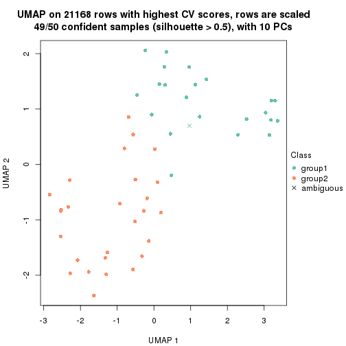
dimension_reduction(res, k = 3, method = "UMAP")
dimension_reduction(res, k = 4, method = "UMAP")
dimension_reduction(res, k = 5, method = "UMAP")
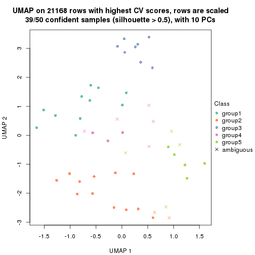
dimension_reduction(res, k = 6, method = "UMAP")
Following heatmap shows how subgroups are split when increasing k:
collect_classes(res)
Test correlation between subgroups and known annotations. If the known annotation is numeric, one-way ANOVA test is applied, and if the known annotation is discrete, chi-squared contingency table test is applied.
test_to_known_factors(res)
#> n cell.type(p) agent(p) time(p) individual(p) k
#> CV:skmeans 49 2.39e-03 0.54351 1.54e-04 2.91e-02 2
#> CV:skmeans 49 9.76e-04 0.09463 6.17e-05 3.16e-04 3
#> CV:skmeans 44 1.51e-09 0.00603 3.69e-05 1.32e-04 4
#> CV:skmeans 39 6.97e-08 0.08685 4.71e-04 1.91e-06 5
#> CV:skmeans 38 3.77e-07 0.07969 2.28e-07 5.12e-03 6
If matrix rows can be associated to genes, consider to use functional_enrichment(res,
...) to perform function enrichment for the signature genes. See this vignette for more detailed explanations.
The object with results only for a single top-value method and a single partition method can be extracted as:
res = res_list["CV", "pam"]
# you can also extract it by
# res = res_list["CV:pam"]
A summary of res and all the functions that can be applied to it:
res
#> A 'ConsensusPartition' object with k = 2, 3, 4, 5, 6.
#> On a matrix with 21168 rows and 50 columns.
#> Top rows (1000, 2000, 3000, 4000, 5000) are extracted by 'CV' method.
#> Subgroups are detected by 'pam' method.
#> Performed in total 1250 partitions by row resampling.
#> Best k for subgroups seems to be 2.
#>
#> Following methods can be applied to this 'ConsensusPartition' object:
#> [1] "cola_report" "collect_classes" "collect_plots"
#> [4] "collect_stats" "colnames" "compare_signatures"
#> [7] "consensus_heatmap" "dimension_reduction" "functional_enrichment"
#> [10] "get_anno_col" "get_anno" "get_classes"
#> [13] "get_consensus" "get_matrix" "get_membership"
#> [16] "get_param" "get_signatures" "get_stats"
#> [19] "is_best_k" "is_stable_k" "membership_heatmap"
#> [22] "ncol" "nrow" "plot_ecdf"
#> [25] "rownames" "select_partition_number" "show"
#> [28] "suggest_best_k" "test_to_known_factors"
collect_plots() function collects all the plots made from res for all k (number of partitions)
into one single page to provide an easy and fast comparison between different k.
collect_plots(res)
The plots are:
k and the heatmap of
predicted classes for each k.k.k.k.All the plots in panels can be made by individual functions and they are plotted later in this section.
select_partition_number() produces several plots showing different
statistics for choosing “optimized” k. There are following statistics:
k;k, the area increased is defined as \(A_k - A_{k-1}\).The detailed explanations of these statistics can be found in the cola vignette.
Generally speaking, lower PAC score, higher mean silhouette score or higher
concordance corresponds to better partition. Rand index and Jaccard index
measure how similar the current partition is compared to partition with k-1.
If they are too similar, we won't accept k is better than k-1.
select_partition_number(res)
The numeric values for all these statistics can be obtained by get_stats().
get_stats(res)
#> k 1-PAC mean_silhouette concordance area_increased Rand Jaccard
#> 2 2 1.000 0.982 0.987 0.2851 0.726 0.726
#> 3 3 0.750 0.798 0.922 1.1770 0.643 0.508
#> 4 4 0.835 0.907 0.953 0.1868 0.799 0.514
#> 5 5 0.771 0.446 0.770 0.0776 0.884 0.615
#> 6 6 0.854 0.671 0.884 0.0297 0.889 0.572
suggest_best_k() suggests the best \(k\) based on these statistics. The rules are as follows:
suggest_best_k(res)
#> [1] 2
Following shows the table of the partitions (You need to click the show/hide
code output link to see it). The membership matrix (columns with name p*)
is inferred by
clue::cl_consensus()
function with the SE method. Basically the value in the membership matrix
represents the probability to belong to a certain group. The finall class
label for an item is determined with the group with highest probability it
belongs to.
In get_classes() function, the entropy is calculated from the membership
matrix and the silhouette score is calculated from the consensus matrix.
cbind(get_classes(res, k = 2), get_membership(res, k = 2))
#> class entropy silhouette p1 p2
#> GSM225374 2 0.204 0.977 0.032 0.968
#> GSM225349 2 0.000 0.984 0.000 1.000
#> GSM225367 2 0.000 0.984 0.000 1.000
#> GSM225356 2 0.000 0.984 0.000 1.000
#> GSM225353 2 0.000 0.984 0.000 1.000
#> GSM225653 2 0.000 0.984 0.000 1.000
#> GSM209847 2 0.000 0.984 0.000 1.000
#> GSM225658 2 0.000 0.984 0.000 1.000
#> GSM225370 2 0.204 0.977 0.032 0.968
#> GSM225364 2 0.000 0.984 0.000 1.000
#> GSM225645 2 0.000 0.984 0.000 1.000
#> GSM225350 2 0.000 0.984 0.000 1.000
#> GSM225368 2 0.000 0.984 0.000 1.000
#> GSM225357 2 0.000 0.984 0.000 1.000
#> GSM225651 2 0.000 0.984 0.000 1.000
#> GSM225354 2 0.000 0.984 0.000 1.000
#> GSM225360 2 0.204 0.977 0.032 0.968
#> GSM225657 2 0.204 0.977 0.032 0.968
#> GSM225377 2 0.204 0.977 0.032 0.968
#> GSM225656 2 0.204 0.977 0.032 0.968
#> GSM225347 2 0.000 0.984 0.000 1.000
#> GSM225660 2 0.204 0.977 0.032 0.968
#> GSM225712 2 0.552 0.879 0.128 0.872
#> GSM225663 2 0.242 0.972 0.040 0.960
#> GSM225373 2 0.204 0.977 0.032 0.968
#> GSM225366 2 0.204 0.977 0.032 0.968
#> GSM225380 2 0.000 0.984 0.000 1.000
#> GSM225351 2 0.000 0.984 0.000 1.000
#> GSM225369 2 0.000 0.984 0.000 1.000
#> GSM225358 2 0.000 0.984 0.000 1.000
#> GSM225649 2 0.000 0.984 0.000 1.000
#> GSM225355 2 0.000 0.984 0.000 1.000
#> GSM225361 2 0.000 0.984 0.000 1.000
#> GSM225655 2 0.000 0.984 0.000 1.000
#> GSM225376 2 0.204 0.977 0.032 0.968
#> GSM225654 2 0.184 0.978 0.028 0.972
#> GSM225348 2 0.000 0.984 0.000 1.000
#> GSM225659 2 0.000 0.984 0.000 1.000
#> GSM225378 2 0.204 0.977 0.032 0.968
#> GSM225661 2 0.204 0.977 0.032 0.968
#> GSM225372 2 0.204 0.977 0.032 0.968
#> GSM225365 2 0.204 0.977 0.032 0.968
#> GSM225860 1 0.000 1.000 1.000 0.000
#> GSM225875 1 0.000 1.000 1.000 0.000
#> GSM225878 1 0.000 1.000 1.000 0.000
#> GSM225885 1 0.000 1.000 1.000 0.000
#> GSM225867 1 0.000 1.000 1.000 0.000
#> GSM225871 1 0.000 1.000 1.000 0.000
#> GSM225881 1 0.000 1.000 1.000 0.000
#> GSM225887 1 0.000 1.000 1.000 0.000
cbind(get_classes(res, k = 3), get_membership(res, k = 3))
#> class entropy silhouette p1 p2 p3
#> GSM225374 1 0.0000 0.8780 1.000 0.000 0
#> GSM225349 2 0.0000 0.8902 0.000 1.000 0
#> GSM225367 2 0.0000 0.8902 0.000 1.000 0
#> GSM225356 2 0.0000 0.8902 0.000 1.000 0
#> GSM225353 2 0.0000 0.8902 0.000 1.000 0
#> GSM225653 1 0.6235 0.2910 0.564 0.436 0
#> GSM209847 2 0.0000 0.8902 0.000 1.000 0
#> GSM225658 2 0.0000 0.8902 0.000 1.000 0
#> GSM225370 1 0.0000 0.8780 1.000 0.000 0
#> GSM225364 2 0.0000 0.8902 0.000 1.000 0
#> GSM225645 2 0.3551 0.7895 0.132 0.868 0
#> GSM225350 2 0.0000 0.8902 0.000 1.000 0
#> GSM225368 2 0.0000 0.8902 0.000 1.000 0
#> GSM225357 2 0.6180 0.1823 0.416 0.584 0
#> GSM225651 1 0.6168 0.3368 0.588 0.412 0
#> GSM225354 2 0.6302 -0.0712 0.480 0.520 0
#> GSM225360 1 0.0237 0.8767 0.996 0.004 0
#> GSM225657 1 0.1643 0.8556 0.956 0.044 0
#> GSM225377 1 0.0000 0.8780 1.000 0.000 0
#> GSM225656 1 0.0000 0.8780 1.000 0.000 0
#> GSM225347 1 0.6244 0.2791 0.560 0.440 0
#> GSM225660 1 0.0000 0.8780 1.000 0.000 0
#> GSM225712 1 0.0000 0.8780 1.000 0.000 0
#> GSM225663 1 0.0000 0.8780 1.000 0.000 0
#> GSM225373 1 0.0000 0.8780 1.000 0.000 0
#> GSM225366 1 0.0000 0.8780 1.000 0.000 0
#> GSM225380 2 0.1860 0.8552 0.052 0.948 0
#> GSM225351 2 0.0000 0.8902 0.000 1.000 0
#> GSM225369 2 0.0000 0.8902 0.000 1.000 0
#> GSM225358 2 0.0000 0.8902 0.000 1.000 0
#> GSM225649 2 0.3192 0.8098 0.112 0.888 0
#> GSM225355 2 0.0000 0.8902 0.000 1.000 0
#> GSM225361 1 0.4974 0.6718 0.764 0.236 0
#> GSM225655 1 0.6062 0.4227 0.616 0.384 0
#> GSM225376 1 0.0424 0.8749 0.992 0.008 0
#> GSM225654 1 0.2796 0.8201 0.908 0.092 0
#> GSM225348 2 0.6111 0.2502 0.396 0.604 0
#> GSM225659 1 0.4974 0.6718 0.764 0.236 0
#> GSM225378 1 0.0000 0.8780 1.000 0.000 0
#> GSM225661 1 0.0000 0.8780 1.000 0.000 0
#> GSM225372 1 0.0000 0.8780 1.000 0.000 0
#> GSM225365 1 0.0000 0.8780 1.000 0.000 0
#> GSM225860 3 0.0000 1.0000 0.000 0.000 1
#> GSM225875 3 0.0000 1.0000 0.000 0.000 1
#> GSM225878 3 0.0000 1.0000 0.000 0.000 1
#> GSM225885 3 0.0000 1.0000 0.000 0.000 1
#> GSM225867 3 0.0000 1.0000 0.000 0.000 1
#> GSM225871 3 0.0000 1.0000 0.000 0.000 1
#> GSM225881 3 0.0000 1.0000 0.000 0.000 1
#> GSM225887 3 0.0000 1.0000 0.000 0.000 1
cbind(get_classes(res, k = 4), get_membership(res, k = 4))
#> class entropy silhouette p1 p2 p3 p4
#> GSM225374 1 0.000 0.988 1.000 0.000 0 0.000
#> GSM225349 2 0.000 0.896 0.000 1.000 0 0.000
#> GSM225367 2 0.000 0.896 0.000 1.000 0 0.000
#> GSM225356 2 0.000 0.896 0.000 1.000 0 0.000
#> GSM225353 2 0.000 0.896 0.000 1.000 0 0.000
#> GSM225653 2 0.365 0.778 0.204 0.796 0 0.000
#> GSM209847 2 0.000 0.896 0.000 1.000 0 0.000
#> GSM225658 2 0.000 0.896 0.000 1.000 0 0.000
#> GSM225370 1 0.000 0.988 1.000 0.000 0 0.000
#> GSM225364 2 0.000 0.896 0.000 1.000 0 0.000
#> GSM225645 4 0.112 0.885 0.000 0.036 0 0.964
#> GSM225350 2 0.000 0.896 0.000 1.000 0 0.000
#> GSM225368 2 0.112 0.873 0.000 0.964 0 0.036
#> GSM225357 2 0.357 0.786 0.196 0.804 0 0.000
#> GSM225651 4 0.112 0.885 0.000 0.036 0 0.964
#> GSM225354 2 0.357 0.786 0.196 0.804 0 0.000
#> GSM225360 1 0.000 0.988 1.000 0.000 0 0.000
#> GSM225657 1 0.000 0.988 1.000 0.000 0 0.000
#> GSM225377 1 0.000 0.988 1.000 0.000 0 0.000
#> GSM225656 1 0.000 0.988 1.000 0.000 0 0.000
#> GSM225347 2 0.365 0.778 0.204 0.796 0 0.000
#> GSM225660 1 0.000 0.988 1.000 0.000 0 0.000
#> GSM225712 1 0.000 0.988 1.000 0.000 0 0.000
#> GSM225663 1 0.000 0.988 1.000 0.000 0 0.000
#> GSM225373 1 0.000 0.988 1.000 0.000 0 0.000
#> GSM225366 1 0.215 0.904 0.912 0.000 0 0.088
#> GSM225380 4 0.102 0.885 0.000 0.032 0 0.968
#> GSM225351 2 0.000 0.896 0.000 1.000 0 0.000
#> GSM225369 4 0.179 0.862 0.000 0.068 0 0.932
#> GSM225358 2 0.448 0.477 0.000 0.688 0 0.312
#> GSM225649 4 0.000 0.884 0.000 0.000 0 1.000
#> GSM225355 2 0.000 0.896 0.000 1.000 0 0.000
#> GSM225361 4 0.000 0.884 0.000 0.000 0 1.000
#> GSM225655 4 0.365 0.772 0.204 0.000 0 0.796
#> GSM225376 4 0.000 0.884 0.000 0.000 0 1.000
#> GSM225654 4 0.365 0.772 0.204 0.000 0 0.796
#> GSM225348 2 0.431 0.772 0.192 0.784 0 0.024
#> GSM225659 4 0.425 0.746 0.220 0.012 0 0.768
#> GSM225378 1 0.000 0.988 1.000 0.000 0 0.000
#> GSM225661 1 0.102 0.963 0.968 0.000 0 0.032
#> GSM225372 1 0.121 0.947 0.960 0.000 0 0.040
#> GSM225365 1 0.000 0.988 1.000 0.000 0 0.000
#> GSM225860 3 0.000 1.000 0.000 0.000 1 0.000
#> GSM225875 3 0.000 1.000 0.000 0.000 1 0.000
#> GSM225878 3 0.000 1.000 0.000 0.000 1 0.000
#> GSM225885 3 0.000 1.000 0.000 0.000 1 0.000
#> GSM225867 3 0.000 1.000 0.000 0.000 1 0.000
#> GSM225871 3 0.000 1.000 0.000 0.000 1 0.000
#> GSM225881 3 0.000 1.000 0.000 0.000 1 0.000
#> GSM225887 3 0.000 1.000 0.000 0.000 1 0.000
cbind(get_classes(res, k = 5), get_membership(res, k = 5))
#> class entropy silhouette p1 p2 p3 p4 p5
#> GSM225374 1 0.0000 0.79525 1.000 0.000 0 0.000 0.000
#> GSM225349 2 0.4278 -0.55026 0.000 0.548 0 0.000 0.452
#> GSM225367 5 0.4256 0.64025 0.000 0.436 0 0.000 0.564
#> GSM225356 2 0.4278 -0.55026 0.000 0.548 0 0.000 0.452
#> GSM225353 2 0.4278 -0.55026 0.000 0.548 0 0.000 0.452
#> GSM225653 2 0.0162 0.12008 0.000 0.996 0 0.000 0.004
#> GSM209847 2 0.4278 -0.55026 0.000 0.548 0 0.000 0.452
#> GSM225658 2 0.4278 -0.55026 0.000 0.548 0 0.000 0.452
#> GSM225370 1 0.0000 0.79525 1.000 0.000 0 0.000 0.000
#> GSM225364 2 0.4278 -0.55026 0.000 0.548 0 0.000 0.452
#> GSM225645 4 0.0000 0.94767 0.000 0.000 0 1.000 0.000
#> GSM225350 2 0.4278 -0.55026 0.000 0.548 0 0.000 0.452
#> GSM225368 5 0.4604 0.64951 0.000 0.428 0 0.012 0.560
#> GSM225357 2 0.1792 0.00408 0.000 0.916 0 0.000 0.084
#> GSM225651 4 0.0000 0.94767 0.000 0.000 0 1.000 0.000
#> GSM225354 2 0.2127 0.11469 0.000 0.892 0 0.000 0.108
#> GSM225360 1 0.4278 0.54546 0.548 0.452 0 0.000 0.000
#> GSM225657 1 0.4278 0.54546 0.548 0.452 0 0.000 0.000
#> GSM225377 1 0.0000 0.79525 1.000 0.000 0 0.000 0.000
#> GSM225656 1 0.4278 0.54546 0.548 0.452 0 0.000 0.000
#> GSM225347 2 0.3210 0.19109 0.000 0.788 0 0.000 0.212
#> GSM225660 1 0.4278 0.54546 0.548 0.452 0 0.000 0.000
#> GSM225712 1 0.0000 0.79525 1.000 0.000 0 0.000 0.000
#> GSM225663 1 0.0404 0.79241 0.988 0.012 0 0.000 0.000
#> GSM225373 1 0.0000 0.79525 1.000 0.000 0 0.000 0.000
#> GSM225366 1 0.7441 0.30892 0.372 0.352 0 0.036 0.240
#> GSM225380 4 0.0000 0.94767 0.000 0.000 0 1.000 0.000
#> GSM225351 2 0.4283 -0.55507 0.000 0.544 0 0.000 0.456
#> GSM225369 4 0.2179 0.86679 0.000 0.000 0 0.888 0.112
#> GSM225358 5 0.6554 0.48555 0.000 0.272 0 0.252 0.476
#> GSM225649 4 0.0000 0.94767 0.000 0.000 0 1.000 0.000
#> GSM225355 5 0.4015 0.48333 0.000 0.348 0 0.000 0.652
#> GSM225361 4 0.3305 0.77435 0.000 0.000 0 0.776 0.224
#> GSM225655 2 0.6581 0.01106 0.000 0.452 0 0.224 0.324
#> GSM225376 4 0.0000 0.94767 0.000 0.000 0 1.000 0.000
#> GSM225654 2 0.6099 0.11429 0.000 0.452 0 0.124 0.424
#> GSM225348 2 0.4227 0.14680 0.000 0.580 0 0.000 0.420
#> GSM225659 2 0.6002 0.12355 0.000 0.452 0 0.112 0.436
#> GSM225378 1 0.0000 0.79525 1.000 0.000 0 0.000 0.000
#> GSM225661 2 0.6588 -0.38745 0.360 0.452 0 0.004 0.184
#> GSM225372 1 0.0000 0.79525 1.000 0.000 0 0.000 0.000
#> GSM225365 1 0.0162 0.79471 0.996 0.004 0 0.000 0.000
#> GSM225860 3 0.0000 1.00000 0.000 0.000 1 0.000 0.000
#> GSM225875 3 0.0000 1.00000 0.000 0.000 1 0.000 0.000
#> GSM225878 3 0.0000 1.00000 0.000 0.000 1 0.000 0.000
#> GSM225885 3 0.0000 1.00000 0.000 0.000 1 0.000 0.000
#> GSM225867 3 0.0000 1.00000 0.000 0.000 1 0.000 0.000
#> GSM225871 3 0.0000 1.00000 0.000 0.000 1 0.000 0.000
#> GSM225881 3 0.0000 1.00000 0.000 0.000 1 0.000 0.000
#> GSM225887 3 0.0000 1.00000 0.000 0.000 1 0.000 0.000
cbind(get_classes(res, k = 6), get_membership(res, k = 6))
#> class entropy silhouette p1 p2 p3 p4 p5 p6
#> GSM225374 1 0.0000 0.8212 1.000 0.000 0 0.000 0.000 0.000
#> GSM225349 6 0.0000 0.7958 0.000 0.000 0 0.000 0.000 1.000
#> GSM225367 2 0.0000 1.0000 0.000 1.000 0 0.000 0.000 0.000
#> GSM225356 6 0.0000 0.7958 0.000 0.000 0 0.000 0.000 1.000
#> GSM225353 6 0.0000 0.7958 0.000 0.000 0 0.000 0.000 1.000
#> GSM225653 6 0.3847 0.0515 0.000 0.000 0 0.456 0.000 0.544
#> GSM209847 6 0.0000 0.7958 0.000 0.000 0 0.000 0.000 1.000
#> GSM225658 6 0.0000 0.7958 0.000 0.000 0 0.000 0.000 1.000
#> GSM225370 1 0.0000 0.8212 1.000 0.000 0 0.000 0.000 0.000
#> GSM225364 6 0.0000 0.7958 0.000 0.000 0 0.000 0.000 1.000
#> GSM225645 5 0.0000 0.9179 0.000 0.000 0 0.000 1.000 0.000
#> GSM225350 6 0.0000 0.7958 0.000 0.000 0 0.000 0.000 1.000
#> GSM225368 2 0.0000 1.0000 0.000 1.000 0 0.000 0.000 0.000
#> GSM225357 6 0.3789 0.1714 0.000 0.000 0 0.416 0.000 0.584
#> GSM225651 5 0.0000 0.9179 0.000 0.000 0 0.000 1.000 0.000
#> GSM225354 6 0.3817 0.1425 0.000 0.000 0 0.432 0.000 0.568
#> GSM225360 4 0.4903 -0.0851 0.468 0.060 0 0.472 0.000 0.000
#> GSM225657 1 0.3860 0.0363 0.528 0.000 0 0.472 0.000 0.000
#> GSM225377 1 0.0000 0.8212 1.000 0.000 0 0.000 0.000 0.000
#> GSM225656 1 0.3860 0.0363 0.528 0.000 0 0.472 0.000 0.000
#> GSM225347 4 0.3838 -0.0343 0.000 0.000 0 0.552 0.000 0.448
#> GSM225660 1 0.3860 0.0363 0.528 0.000 0 0.472 0.000 0.000
#> GSM225712 1 0.0000 0.8212 1.000 0.000 0 0.000 0.000 0.000
#> GSM225663 1 0.0363 0.8131 0.988 0.000 0 0.012 0.000 0.000
#> GSM225373 1 0.0000 0.8212 1.000 0.000 0 0.000 0.000 0.000
#> GSM225366 4 0.3198 0.4477 0.260 0.000 0 0.740 0.000 0.000
#> GSM225380 5 0.0000 0.9179 0.000 0.000 0 0.000 1.000 0.000
#> GSM225351 6 0.0458 0.7877 0.000 0.000 0 0.016 0.000 0.984
#> GSM225369 2 0.0000 1.0000 0.000 1.000 0 0.000 0.000 0.000
#> GSM225358 6 0.4443 0.2619 0.000 0.000 0 0.036 0.368 0.596
#> GSM225649 5 0.0000 0.9179 0.000 0.000 0 0.000 1.000 0.000
#> GSM225355 6 0.2340 0.6861 0.000 0.000 0 0.148 0.000 0.852
#> GSM225361 5 0.3795 0.5342 0.000 0.004 0 0.364 0.632 0.000
#> GSM225655 4 0.1765 0.5639 0.000 0.000 0 0.904 0.096 0.000
#> GSM225376 5 0.0000 0.9179 0.000 0.000 0 0.000 1.000 0.000
#> GSM225654 4 0.0000 0.5939 0.000 0.000 0 1.000 0.000 0.000
#> GSM225348 4 0.3868 -0.1587 0.000 0.000 0 0.508 0.000 0.492
#> GSM225659 4 0.0000 0.5939 0.000 0.000 0 1.000 0.000 0.000
#> GSM225378 1 0.0000 0.8212 1.000 0.000 0 0.000 0.000 0.000
#> GSM225661 4 0.3515 0.3462 0.324 0.000 0 0.676 0.000 0.000
#> GSM225372 1 0.0000 0.8212 1.000 0.000 0 0.000 0.000 0.000
#> GSM225365 1 0.0146 0.8190 0.996 0.000 0 0.004 0.000 0.000
#> GSM225860 3 0.0000 1.0000 0.000 0.000 1 0.000 0.000 0.000
#> GSM225875 3 0.0000 1.0000 0.000 0.000 1 0.000 0.000 0.000
#> GSM225878 3 0.0000 1.0000 0.000 0.000 1 0.000 0.000 0.000
#> GSM225885 3 0.0000 1.0000 0.000 0.000 1 0.000 0.000 0.000
#> GSM225867 3 0.0000 1.0000 0.000 0.000 1 0.000 0.000 0.000
#> GSM225871 3 0.0000 1.0000 0.000 0.000 1 0.000 0.000 0.000
#> GSM225881 3 0.0000 1.0000 0.000 0.000 1 0.000 0.000 0.000
#> GSM225887 3 0.0000 1.0000 0.000 0.000 1 0.000 0.000 0.000
Heatmaps for the consensus matrix. It visualizes the probability of two samples to be in a same group.
consensus_heatmap(res, k = 2)
consensus_heatmap(res, k = 3)
consensus_heatmap(res, k = 4)
consensus_heatmap(res, k = 5)
consensus_heatmap(res, k = 6)

Heatmaps for the membership of samples in all partitions to see how consistent they are:
membership_heatmap(res, k = 2)
membership_heatmap(res, k = 3)
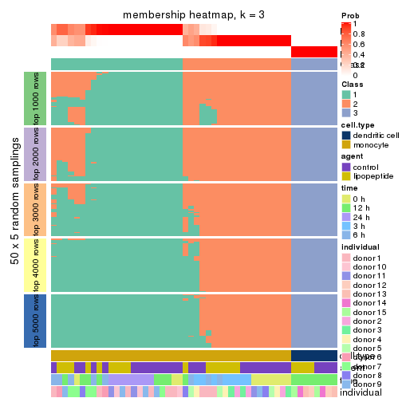
membership_heatmap(res, k = 4)
membership_heatmap(res, k = 5)
membership_heatmap(res, k = 6)
As soon as we have had the classes for columns, we can look for signatures which are significantly different between classes which can be candidate marks for certain classes. Following are the heatmaps for signatures.
Signature heatmaps where rows are scaled:
get_signatures(res, k = 2)
get_signatures(res, k = 3)
get_signatures(res, k = 4)
get_signatures(res, k = 5)
get_signatures(res, k = 6)
Signature heatmaps where rows are not scaled:
get_signatures(res, k = 2, scale_rows = FALSE)
get_signatures(res, k = 3, scale_rows = FALSE)
get_signatures(res, k = 4, scale_rows = FALSE)
get_signatures(res, k = 5, scale_rows = FALSE)
get_signatures(res, k = 6, scale_rows = FALSE)
Compare the overlap of signatures from different k:
compare_signatures(res)
get_signature() returns a data frame invisibly. TO get the list of signatures, the function
call should be assigned to a variable explicitly. In following code, if plot argument is set
to FALSE, no heatmap is plotted while only the differential analysis is performed.
# code only for demonstration
tb = get_signature(res, k = ..., plot = FALSE)
An example of the output of tb is:
#> which_row fdr mean_1 mean_2 scaled_mean_1 scaled_mean_2 km
#> 1 38 0.042760348 8.373488 9.131774 -0.5533452 0.5164555 1
#> 2 40 0.018707592 7.106213 8.469186 -0.6173731 0.5762149 1
#> 3 55 0.019134737 10.221463 11.207825 -0.6159697 0.5749050 1
#> 4 59 0.006059896 5.921854 7.869574 -0.6899429 0.6439467 1
#> 5 60 0.018055526 8.928898 10.211722 -0.6204761 0.5791110 1
#> 6 98 0.009384629 15.714769 14.887706 0.6635654 -0.6193277 2
...
The columns in tb are:
which_row: row indices corresponding to the input matrix.fdr: FDR for the differential test. mean_x: The mean value in group x.scaled_mean_x: The mean value in group x after rows are scaled.km: Row groups if k-means clustering is applied to rows.UMAP plot which shows how samples are separated.
dimension_reduction(res, k = 2, method = "UMAP")
dimension_reduction(res, k = 3, method = "UMAP")
dimension_reduction(res, k = 4, method = "UMAP")
dimension_reduction(res, k = 5, method = "UMAP")
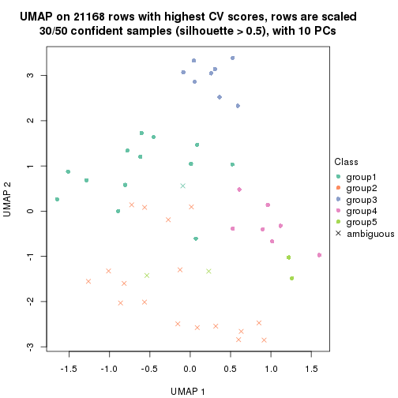
dimension_reduction(res, k = 6, method = "UMAP")
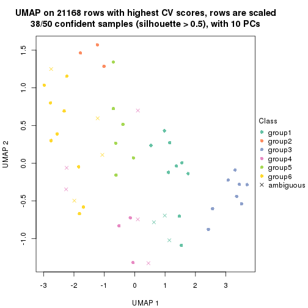
Following heatmap shows how subgroups are split when increasing k:
collect_classes(res)
Test correlation between subgroups and known annotations. If the known annotation is numeric, one-way ANOVA test is applied, and if the known annotation is discrete, chi-squared contingency table test is applied.
test_to_known_factors(res)
#> n cell.type(p) agent(p) time(p) individual(p) k
#> CV:pam 50 5.95e-11 0.8133 4.48e-04 6.11e-06 2
#> CV:pam 43 4.60e-10 0.8423 2.21e-07 2.22e-05 3
#> CV:pam 49 1.30e-10 0.0106 2.55e-07 1.10e-05 4
#> CV:pam 30 1.38e-06 0.1069 2.26e-04 1.15e-03 5
#> CV:pam 38 3.77e-07 0.1900 3.57e-07 1.50e-07 6
If matrix rows can be associated to genes, consider to use functional_enrichment(res,
...) to perform function enrichment for the signature genes. See this vignette for more detailed explanations.
The object with results only for a single top-value method and a single partition method can be extracted as:
res = res_list["CV", "mclust"]
# you can also extract it by
# res = res_list["CV:mclust"]
A summary of res and all the functions that can be applied to it:
res
#> A 'ConsensusPartition' object with k = 2, 3, 4, 5, 6.
#> On a matrix with 21168 rows and 50 columns.
#> Top rows (1000, 2000, 3000, 4000, 5000) are extracted by 'CV' method.
#> Subgroups are detected by 'mclust' method.
#> Performed in total 1250 partitions by row resampling.
#> Best k for subgroups seems to be 2.
#>
#> Following methods can be applied to this 'ConsensusPartition' object:
#> [1] "cola_report" "collect_classes" "collect_plots"
#> [4] "collect_stats" "colnames" "compare_signatures"
#> [7] "consensus_heatmap" "dimension_reduction" "functional_enrichment"
#> [10] "get_anno_col" "get_anno" "get_classes"
#> [13] "get_consensus" "get_matrix" "get_membership"
#> [16] "get_param" "get_signatures" "get_stats"
#> [19] "is_best_k" "is_stable_k" "membership_heatmap"
#> [22] "ncol" "nrow" "plot_ecdf"
#> [25] "rownames" "select_partition_number" "show"
#> [28] "suggest_best_k" "test_to_known_factors"
collect_plots() function collects all the plots made from res for all k (number of partitions)
into one single page to provide an easy and fast comparison between different k.
collect_plots(res)
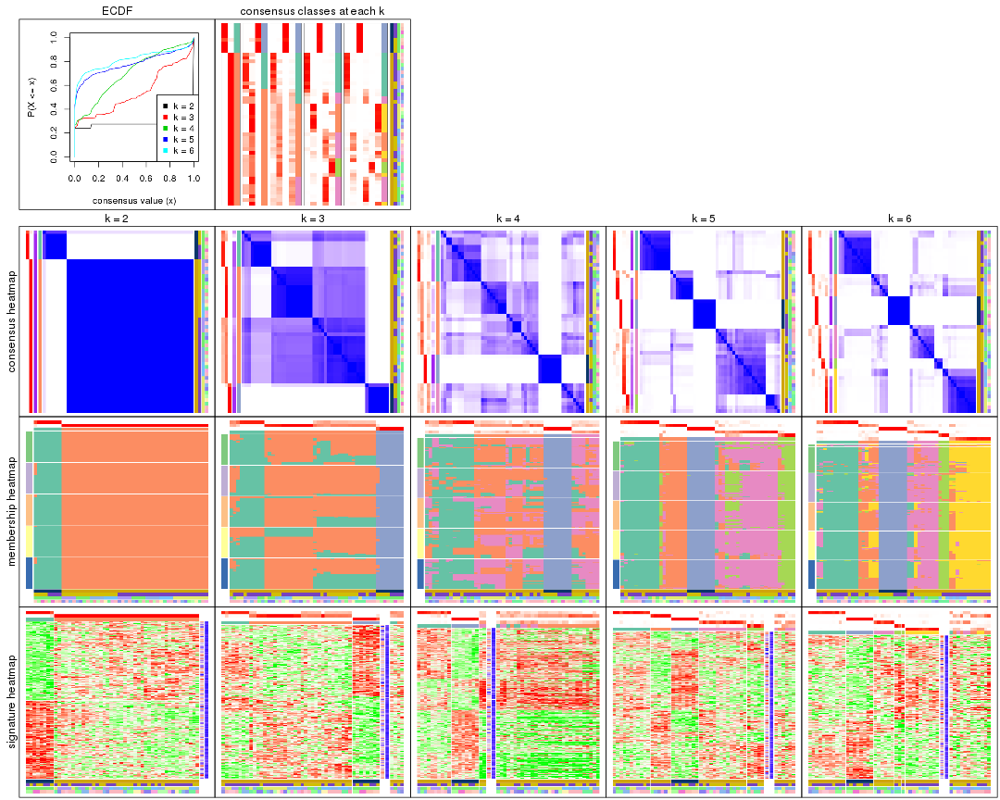
The plots are:
k and the heatmap of
predicted classes for each k.k.k.k.All the plots in panels can be made by individual functions and they are plotted later in this section.
select_partition_number() produces several plots showing different
statistics for choosing “optimized” k. There are following statistics:
k;k, the area increased is defined as \(A_k - A_{k-1}\).The detailed explanations of these statistics can be found in the cola vignette.
Generally speaking, lower PAC score, higher mean silhouette score or higher
concordance corresponds to better partition. Rand index and Jaccard index
measure how similar the current partition is compared to partition with k-1.
If they are too similar, we won't accept k is better than k-1.
select_partition_number(res)
The numeric values for all these statistics can be obtained by get_stats().
get_stats(res)
#> k 1-PAC mean_silhouette concordance area_increased Rand Jaccard
#> 2 2 1.000 0.994 0.997 0.2710 0.726 0.726
#> 3 3 0.540 0.703 0.834 0.9999 0.739 0.640
#> 4 4 0.437 0.435 0.682 0.2980 0.745 0.488
#> 5 5 0.770 0.768 0.888 0.1119 0.784 0.395
#> 6 6 0.828 0.723 0.868 0.0448 0.868 0.502
suggest_best_k() suggests the best \(k\) based on these statistics. The rules are as follows:
suggest_best_k(res)
#> [1] 2
Following shows the table of the partitions (You need to click the show/hide
code output link to see it). The membership matrix (columns with name p*)
is inferred by
clue::cl_consensus()
function with the SE method. Basically the value in the membership matrix
represents the probability to belong to a certain group. The finall class
label for an item is determined with the group with highest probability it
belongs to.
In get_classes() function, the entropy is calculated from the membership
matrix and the silhouette score is calculated from the consensus matrix.
cbind(get_classes(res, k = 2), get_membership(res, k = 2))
#> class entropy silhouette p1 p2
#> GSM225374 2 0.000 1.000 0.00 1.00
#> GSM225349 2 0.000 1.000 0.00 1.00
#> GSM225367 2 0.000 1.000 0.00 1.00
#> GSM225356 2 0.000 1.000 0.00 1.00
#> GSM225353 2 0.000 1.000 0.00 1.00
#> GSM225653 2 0.000 1.000 0.00 1.00
#> GSM209847 2 0.000 1.000 0.00 1.00
#> GSM225658 2 0.000 1.000 0.00 1.00
#> GSM225370 2 0.000 1.000 0.00 1.00
#> GSM225364 2 0.000 1.000 0.00 1.00
#> GSM225645 2 0.000 1.000 0.00 1.00
#> GSM225350 2 0.000 1.000 0.00 1.00
#> GSM225368 2 0.000 1.000 0.00 1.00
#> GSM225357 2 0.000 1.000 0.00 1.00
#> GSM225651 2 0.000 1.000 0.00 1.00
#> GSM225354 2 0.000 1.000 0.00 1.00
#> GSM225360 2 0.000 1.000 0.00 1.00
#> GSM225657 2 0.000 1.000 0.00 1.00
#> GSM225377 2 0.000 1.000 0.00 1.00
#> GSM225656 2 0.000 1.000 0.00 1.00
#> GSM225347 2 0.000 1.000 0.00 1.00
#> GSM225660 2 0.000 1.000 0.00 1.00
#> GSM225712 2 0.000 1.000 0.00 1.00
#> GSM225663 2 0.000 1.000 0.00 1.00
#> GSM225373 2 0.000 1.000 0.00 1.00
#> GSM225366 2 0.000 1.000 0.00 1.00
#> GSM225380 2 0.000 1.000 0.00 1.00
#> GSM225351 2 0.000 1.000 0.00 1.00
#> GSM225369 2 0.000 1.000 0.00 1.00
#> GSM225358 2 0.000 1.000 0.00 1.00
#> GSM225649 2 0.000 1.000 0.00 1.00
#> GSM225355 2 0.000 1.000 0.00 1.00
#> GSM225361 2 0.000 1.000 0.00 1.00
#> GSM225655 2 0.000 1.000 0.00 1.00
#> GSM225376 2 0.000 1.000 0.00 1.00
#> GSM225654 2 0.000 1.000 0.00 1.00
#> GSM225348 2 0.000 1.000 0.00 1.00
#> GSM225659 2 0.000 1.000 0.00 1.00
#> GSM225378 2 0.000 1.000 0.00 1.00
#> GSM225661 2 0.000 1.000 0.00 1.00
#> GSM225372 2 0.000 1.000 0.00 1.00
#> GSM225365 2 0.000 1.000 0.00 1.00
#> GSM225860 1 0.000 0.980 1.00 0.00
#> GSM225875 1 0.000 0.980 1.00 0.00
#> GSM225878 1 0.000 0.980 1.00 0.00
#> GSM225885 1 0.000 0.980 1.00 0.00
#> GSM225867 1 0.584 0.837 0.86 0.14
#> GSM225871 1 0.000 0.980 1.00 0.00
#> GSM225881 1 0.000 0.980 1.00 0.00
#> GSM225887 1 0.000 0.980 1.00 0.00
cbind(get_classes(res, k = 3), get_membership(res, k = 3))
#> class entropy silhouette p1 p2 p3
#> GSM225374 1 0.5178 0.5357 0.744 0.256 0.000
#> GSM225349 2 0.0000 0.7120 0.000 1.000 0.000
#> GSM225367 2 0.5650 0.6853 0.312 0.688 0.000
#> GSM225356 2 0.0000 0.7120 0.000 1.000 0.000
#> GSM225353 2 0.0000 0.7120 0.000 1.000 0.000
#> GSM225653 2 0.1411 0.7152 0.036 0.964 0.000
#> GSM209847 2 0.0000 0.7120 0.000 1.000 0.000
#> GSM225658 2 0.0000 0.7120 0.000 1.000 0.000
#> GSM225370 1 0.1411 0.8263 0.964 0.036 0.000
#> GSM225364 2 0.0000 0.7120 0.000 1.000 0.000
#> GSM225645 2 0.5591 0.6878 0.304 0.696 0.000
#> GSM225350 2 0.0000 0.7120 0.000 1.000 0.000
#> GSM225368 2 0.5650 0.6853 0.312 0.688 0.000
#> GSM225357 2 0.0000 0.7120 0.000 1.000 0.000
#> GSM225651 2 0.5591 0.6878 0.304 0.696 0.000
#> GSM225354 2 0.0000 0.7120 0.000 1.000 0.000
#> GSM225360 2 0.6140 0.5552 0.404 0.596 0.000
#> GSM225657 2 0.5529 0.6051 0.296 0.704 0.000
#> GSM225377 1 0.6215 -0.0643 0.572 0.428 0.000
#> GSM225656 1 0.1163 0.8313 0.972 0.028 0.000
#> GSM225347 2 0.1411 0.6949 0.036 0.964 0.000
#> GSM225660 1 0.1163 0.8313 0.972 0.028 0.000
#> GSM225712 1 0.1163 0.8313 0.972 0.028 0.000
#> GSM225663 1 0.1163 0.8313 0.972 0.028 0.000
#> GSM225373 1 0.1163 0.8313 0.972 0.028 0.000
#> GSM225366 2 0.6302 0.4137 0.480 0.520 0.000
#> GSM225380 2 0.5560 0.6899 0.300 0.700 0.000
#> GSM225351 2 0.0892 0.7047 0.020 0.980 0.000
#> GSM225369 2 0.5650 0.6853 0.312 0.688 0.000
#> GSM225358 2 0.5621 0.6941 0.308 0.692 0.000
#> GSM225649 2 0.5733 0.6869 0.324 0.676 0.000
#> GSM225355 2 0.1031 0.7023 0.024 0.976 0.000
#> GSM225361 2 0.5882 0.6721 0.348 0.652 0.000
#> GSM225655 2 0.5882 0.6726 0.348 0.652 0.000
#> GSM225376 2 0.5948 0.6606 0.360 0.640 0.000
#> GSM225654 2 0.5948 0.6606 0.360 0.640 0.000
#> GSM225348 2 0.1163 0.7053 0.028 0.972 0.000
#> GSM225659 2 0.5948 0.6606 0.360 0.640 0.000
#> GSM225378 1 0.6062 0.1430 0.616 0.384 0.000
#> GSM225661 2 0.6302 0.4137 0.480 0.520 0.000
#> GSM225372 2 0.6204 0.5060 0.424 0.576 0.000
#> GSM225365 1 0.1163 0.8313 0.972 0.028 0.000
#> GSM225860 3 0.0000 0.9634 0.000 0.000 1.000
#> GSM225875 3 0.0000 0.9634 0.000 0.000 1.000
#> GSM225878 3 0.0000 0.9634 0.000 0.000 1.000
#> GSM225885 3 0.0000 0.9634 0.000 0.000 1.000
#> GSM225867 3 0.4235 0.7039 0.000 0.176 0.824
#> GSM225871 3 0.0000 0.9634 0.000 0.000 1.000
#> GSM225881 3 0.0000 0.9634 0.000 0.000 1.000
#> GSM225887 3 0.0000 0.9634 0.000 0.000 1.000
cbind(get_classes(res, k = 4), get_membership(res, k = 4))
#> class entropy silhouette p1 p2 p3 p4
#> GSM225374 1 0.1488 0.6922 0.956 0.032 0.00 0.012
#> GSM225349 2 0.7289 0.3281 0.200 0.532 0.00 0.268
#> GSM225367 2 0.3726 0.3155 0.000 0.788 0.00 0.212
#> GSM225356 2 0.7289 0.3281 0.200 0.532 0.00 0.268
#> GSM225353 2 0.6915 0.3489 0.296 0.564 0.00 0.140
#> GSM225653 2 0.7028 0.3572 0.280 0.560 0.00 0.160
#> GSM209847 2 0.7289 0.3281 0.200 0.532 0.00 0.268
#> GSM225658 2 0.7293 0.3469 0.248 0.536 0.00 0.216
#> GSM225370 1 0.0672 0.6995 0.984 0.008 0.00 0.008
#> GSM225364 2 0.7121 0.3540 0.292 0.544 0.00 0.164
#> GSM225645 2 0.3335 0.2918 0.128 0.856 0.00 0.016
#> GSM225350 2 0.7521 -0.0626 0.184 0.420 0.00 0.396
#> GSM225368 2 0.3726 0.3155 0.000 0.788 0.00 0.212
#> GSM225357 2 0.7542 0.1718 0.208 0.472 0.00 0.320
#> GSM225651 2 0.4621 0.2134 0.128 0.796 0.00 0.076
#> GSM225354 4 0.7609 -0.1349 0.200 0.396 0.00 0.404
#> GSM225360 2 0.7271 0.0920 0.216 0.540 0.00 0.244
#> GSM225657 1 0.5863 0.3465 0.700 0.120 0.00 0.180
#> GSM225377 1 0.5102 0.6142 0.732 0.220 0.00 0.048
#> GSM225656 1 0.0336 0.7025 0.992 0.008 0.00 0.000
#> GSM225347 1 0.7731 -0.3633 0.396 0.228 0.00 0.376
#> GSM225660 1 0.0657 0.6976 0.984 0.004 0.00 0.012
#> GSM225712 1 0.3674 0.6610 0.848 0.116 0.00 0.036
#> GSM225663 1 0.0524 0.7021 0.988 0.004 0.00 0.008
#> GSM225373 1 0.3674 0.6610 0.848 0.116 0.00 0.036
#> GSM225366 1 0.7824 0.0834 0.404 0.328 0.00 0.268
#> GSM225380 2 0.5332 0.1573 0.124 0.748 0.00 0.128
#> GSM225351 4 0.7119 0.2895 0.132 0.388 0.00 0.480
#> GSM225369 2 0.3726 0.3155 0.000 0.788 0.00 0.212
#> GSM225358 2 0.7278 -0.1990 0.188 0.528 0.00 0.284
#> GSM225649 2 0.5613 0.0941 0.120 0.724 0.00 0.156
#> GSM225355 4 0.6813 0.4595 0.132 0.292 0.00 0.576
#> GSM225361 2 0.5399 0.0401 0.012 0.520 0.00 0.468
#> GSM225655 4 0.7331 0.5282 0.212 0.260 0.00 0.528
#> GSM225376 4 0.7379 0.3540 0.164 0.384 0.00 0.452
#> GSM225654 4 0.7309 0.3814 0.172 0.324 0.00 0.504
#> GSM225348 4 0.6523 0.4957 0.136 0.236 0.00 0.628
#> GSM225659 4 0.7344 0.5283 0.248 0.224 0.00 0.528
#> GSM225378 1 0.5109 0.6153 0.736 0.212 0.00 0.052
#> GSM225661 1 0.7798 0.1108 0.416 0.320 0.00 0.264
#> GSM225372 2 0.7450 -0.1638 0.280 0.504 0.00 0.216
#> GSM225365 1 0.0376 0.7000 0.992 0.004 0.00 0.004
#> GSM225860 3 0.0000 0.9961 0.000 0.000 1.00 0.000
#> GSM225875 3 0.0000 0.9961 0.000 0.000 1.00 0.000
#> GSM225878 3 0.0000 0.9961 0.000 0.000 1.00 0.000
#> GSM225885 3 0.0000 0.9961 0.000 0.000 1.00 0.000
#> GSM225867 3 0.0707 0.9724 0.000 0.020 0.98 0.000
#> GSM225871 3 0.0000 0.9961 0.000 0.000 1.00 0.000
#> GSM225881 3 0.0000 0.9961 0.000 0.000 1.00 0.000
#> GSM225887 3 0.0000 0.9961 0.000 0.000 1.00 0.000
cbind(get_classes(res, k = 5), get_membership(res, k = 5))
#> class entropy silhouette p1 p2 p3 p4 p5
#> GSM225374 1 0.0865 0.9534 0.972 0.000 0.000 0.004 0.024
#> GSM225349 2 0.0000 0.8276 0.000 1.000 0.000 0.000 0.000
#> GSM225367 5 0.0000 0.8336 0.000 0.000 0.000 0.000 1.000
#> GSM225356 2 0.0000 0.8276 0.000 1.000 0.000 0.000 0.000
#> GSM225353 2 0.4561 -0.0433 0.000 0.504 0.000 0.008 0.488
#> GSM225653 2 0.1106 0.8066 0.000 0.964 0.000 0.012 0.024
#> GSM209847 2 0.0000 0.8276 0.000 1.000 0.000 0.000 0.000
#> GSM225658 2 0.0000 0.8276 0.000 1.000 0.000 0.000 0.000
#> GSM225370 1 0.0000 0.9656 1.000 0.000 0.000 0.000 0.000
#> GSM225364 2 0.0290 0.8234 0.000 0.992 0.000 0.008 0.000
#> GSM225645 5 0.5565 0.5326 0.000 0.144 0.000 0.216 0.640
#> GSM225350 4 0.4405 0.6315 0.020 0.260 0.000 0.712 0.008
#> GSM225368 5 0.0000 0.8336 0.000 0.000 0.000 0.000 1.000
#> GSM225357 2 0.4620 0.0700 0.016 0.592 0.000 0.392 0.000
#> GSM225651 4 0.6009 0.4154 0.000 0.136 0.000 0.544 0.320
#> GSM225354 4 0.4649 0.3819 0.016 0.404 0.000 0.580 0.000
#> GSM225360 4 0.6036 0.1564 0.072 0.016 0.000 0.468 0.444
#> GSM225657 1 0.3267 0.8259 0.844 0.044 0.000 0.112 0.000
#> GSM225377 1 0.1211 0.9478 0.960 0.000 0.000 0.016 0.024
#> GSM225656 1 0.0000 0.9656 1.000 0.000 0.000 0.000 0.000
#> GSM225347 4 0.4974 0.5108 0.288 0.048 0.000 0.660 0.004
#> GSM225660 1 0.0000 0.9656 1.000 0.000 0.000 0.000 0.000
#> GSM225712 1 0.0671 0.9577 0.980 0.000 0.000 0.004 0.016
#> GSM225663 1 0.0000 0.9656 1.000 0.000 0.000 0.000 0.000
#> GSM225373 1 0.0162 0.9646 0.996 0.000 0.000 0.004 0.000
#> GSM225366 4 0.3242 0.7308 0.116 0.000 0.000 0.844 0.040
#> GSM225380 4 0.5265 0.5340 0.000 0.080 0.000 0.636 0.284
#> GSM225351 4 0.2017 0.7625 0.000 0.080 0.000 0.912 0.008
#> GSM225369 5 0.0000 0.8336 0.000 0.000 0.000 0.000 1.000
#> GSM225358 4 0.2110 0.7618 0.000 0.072 0.000 0.912 0.016
#> GSM225649 4 0.5382 0.4209 0.000 0.072 0.000 0.592 0.336
#> GSM225355 4 0.1764 0.7655 0.000 0.064 0.000 0.928 0.008
#> GSM225361 5 0.3536 0.7428 0.000 0.032 0.000 0.156 0.812
#> GSM225655 4 0.0566 0.7628 0.000 0.004 0.000 0.984 0.012
#> GSM225376 4 0.1121 0.7634 0.000 0.000 0.000 0.956 0.044
#> GSM225654 4 0.0912 0.7636 0.012 0.000 0.000 0.972 0.016
#> GSM225348 4 0.0865 0.7622 0.000 0.024 0.000 0.972 0.004
#> GSM225659 4 0.0579 0.7615 0.000 0.008 0.000 0.984 0.008
#> GSM225378 1 0.1893 0.9176 0.928 0.000 0.000 0.048 0.024
#> GSM225661 4 0.3366 0.7196 0.140 0.000 0.000 0.828 0.032
#> GSM225372 4 0.4592 0.6914 0.100 0.004 0.000 0.756 0.140
#> GSM225365 1 0.0000 0.9656 1.000 0.000 0.000 0.000 0.000
#> GSM225860 3 0.0000 0.9992 0.000 0.000 1.000 0.000 0.000
#> GSM225875 3 0.0000 0.9992 0.000 0.000 1.000 0.000 0.000
#> GSM225878 3 0.0000 0.9992 0.000 0.000 1.000 0.000 0.000
#> GSM225885 3 0.0000 0.9992 0.000 0.000 1.000 0.000 0.000
#> GSM225867 3 0.0162 0.9945 0.000 0.000 0.996 0.000 0.004
#> GSM225871 3 0.0000 0.9992 0.000 0.000 1.000 0.000 0.000
#> GSM225881 3 0.0000 0.9992 0.000 0.000 1.000 0.000 0.000
#> GSM225887 3 0.0000 0.9992 0.000 0.000 1.000 0.000 0.000
cbind(get_classes(res, k = 6), get_membership(res, k = 6))
#> class entropy silhouette p1 p2 p3 p4 p5 p6
#> GSM225374 1 0.1262 0.8921 0.956 0.020 0 0.008 0.000 0.016
#> GSM225349 6 0.0551 0.8371 0.000 0.008 0 0.004 0.004 0.984
#> GSM225367 5 0.0291 0.9347 0.000 0.004 0 0.000 0.992 0.004
#> GSM225356 6 0.0405 0.8373 0.000 0.008 0 0.000 0.004 0.988
#> GSM225353 6 0.0767 0.8349 0.004 0.012 0 0.000 0.008 0.976
#> GSM225653 6 0.0508 0.8358 0.004 0.012 0 0.000 0.000 0.984
#> GSM209847 6 0.0551 0.8371 0.000 0.008 0 0.004 0.004 0.984
#> GSM225658 6 0.0146 0.8387 0.004 0.000 0 0.000 0.000 0.996
#> GSM225370 1 0.0622 0.9010 0.980 0.012 0 0.008 0.000 0.000
#> GSM225364 6 0.0146 0.8387 0.004 0.000 0 0.000 0.000 0.996
#> GSM225645 6 0.4933 -0.0328 0.000 0.396 0 0.000 0.068 0.536
#> GSM225350 6 0.2469 0.7856 0.008 0.044 0 0.048 0.004 0.896
#> GSM225368 5 0.0291 0.9347 0.000 0.004 0 0.000 0.992 0.004
#> GSM225357 6 0.1893 0.8081 0.008 0.036 0 0.024 0.004 0.928
#> GSM225651 6 0.4945 -0.0773 0.000 0.412 0 0.004 0.056 0.528
#> GSM225354 6 0.3166 0.7071 0.008 0.032 0 0.116 0.004 0.840
#> GSM225360 2 0.5229 0.4727 0.040 0.716 0 0.024 0.084 0.136
#> GSM225657 1 0.4709 0.5080 0.644 0.016 0 0.304 0.004 0.032
#> GSM225377 1 0.1418 0.8891 0.944 0.032 0 0.024 0.000 0.000
#> GSM225656 1 0.0146 0.9030 0.996 0.000 0 0.004 0.000 0.000
#> GSM225347 1 0.5378 0.3215 0.536 0.020 0 0.384 0.004 0.056
#> GSM225660 1 0.0146 0.9030 0.996 0.000 0 0.004 0.000 0.000
#> GSM225712 1 0.0551 0.9012 0.984 0.004 0 0.008 0.004 0.000
#> GSM225663 1 0.0146 0.9029 0.996 0.000 0 0.004 0.000 0.000
#> GSM225373 1 0.0405 0.9018 0.988 0.004 0 0.008 0.000 0.000
#> GSM225366 4 0.4476 0.4881 0.308 0.052 0 0.640 0.000 0.000
#> GSM225380 2 0.5228 0.4469 0.000 0.564 0 0.048 0.028 0.360
#> GSM225351 4 0.6102 -0.2074 0.004 0.256 0 0.440 0.000 0.300
#> GSM225369 5 0.2544 0.8597 0.000 0.140 0 0.004 0.852 0.004
#> GSM225358 2 0.6295 0.3931 0.004 0.408 0 0.276 0.004 0.308
#> GSM225649 2 0.5137 0.5129 0.004 0.612 0 0.068 0.012 0.304
#> GSM225355 4 0.3395 0.6118 0.004 0.136 0 0.812 0.000 0.048
#> GSM225361 2 0.2984 0.3847 0.004 0.848 0 0.044 0.104 0.000
#> GSM225655 4 0.1429 0.7094 0.004 0.052 0 0.940 0.000 0.004
#> GSM225376 4 0.2914 0.6632 0.004 0.152 0 0.832 0.004 0.008
#> GSM225654 4 0.1296 0.7110 0.004 0.044 0 0.948 0.004 0.000
#> GSM225348 4 0.0717 0.7108 0.000 0.008 0 0.976 0.000 0.016
#> GSM225659 4 0.0405 0.7152 0.008 0.004 0 0.988 0.000 0.000
#> GSM225378 1 0.1334 0.8885 0.948 0.032 0 0.020 0.000 0.000
#> GSM225661 4 0.4482 0.4742 0.324 0.048 0 0.628 0.000 0.000
#> GSM225372 2 0.5286 0.4544 0.060 0.688 0 0.188 0.012 0.052
#> GSM225365 1 0.0291 0.9023 0.992 0.004 0 0.004 0.000 0.000
#> GSM225860 3 0.0000 1.0000 0.000 0.000 1 0.000 0.000 0.000
#> GSM225875 3 0.0000 1.0000 0.000 0.000 1 0.000 0.000 0.000
#> GSM225878 3 0.0000 1.0000 0.000 0.000 1 0.000 0.000 0.000
#> GSM225885 3 0.0000 1.0000 0.000 0.000 1 0.000 0.000 0.000
#> GSM225867 3 0.0000 1.0000 0.000 0.000 1 0.000 0.000 0.000
#> GSM225871 3 0.0000 1.0000 0.000 0.000 1 0.000 0.000 0.000
#> GSM225881 3 0.0000 1.0000 0.000 0.000 1 0.000 0.000 0.000
#> GSM225887 3 0.0000 1.0000 0.000 0.000 1 0.000 0.000 0.000
Heatmaps for the consensus matrix. It visualizes the probability of two samples to be in a same group.
consensus_heatmap(res, k = 2)
consensus_heatmap(res, k = 3)
consensus_heatmap(res, k = 4)
consensus_heatmap(res, k = 5)
consensus_heatmap(res, k = 6)
Heatmaps for the membership of samples in all partitions to see how consistent they are:
membership_heatmap(res, k = 2)
membership_heatmap(res, k = 3)
membership_heatmap(res, k = 4)
membership_heatmap(res, k = 5)
membership_heatmap(res, k = 6)
As soon as we have had the classes for columns, we can look for signatures which are significantly different between classes which can be candidate marks for certain classes. Following are the heatmaps for signatures.
Signature heatmaps where rows are scaled:
get_signatures(res, k = 2)
get_signatures(res, k = 3)
get_signatures(res, k = 4)
get_signatures(res, k = 5)
get_signatures(res, k = 6)
Signature heatmaps where rows are not scaled:
get_signatures(res, k = 2, scale_rows = FALSE)
get_signatures(res, k = 3, scale_rows = FALSE)
get_signatures(res, k = 4, scale_rows = FALSE)
get_signatures(res, k = 5, scale_rows = FALSE)
get_signatures(res, k = 6, scale_rows = FALSE)
Compare the overlap of signatures from different k:
compare_signatures(res)
get_signature() returns a data frame invisibly. TO get the list of signatures, the function
call should be assigned to a variable explicitly. In following code, if plot argument is set
to FALSE, no heatmap is plotted while only the differential analysis is performed.
# code only for demonstration
tb = get_signature(res, k = ..., plot = FALSE)
An example of the output of tb is:
#> which_row fdr mean_1 mean_2 scaled_mean_1 scaled_mean_2 km
#> 1 38 0.042760348 8.373488 9.131774 -0.5533452 0.5164555 1
#> 2 40 0.018707592 7.106213 8.469186 -0.6173731 0.5762149 1
#> 3 55 0.019134737 10.221463 11.207825 -0.6159697 0.5749050 1
#> 4 59 0.006059896 5.921854 7.869574 -0.6899429 0.6439467 1
#> 5 60 0.018055526 8.928898 10.211722 -0.6204761 0.5791110 1
#> 6 98 0.009384629 15.714769 14.887706 0.6635654 -0.6193277 2
...
The columns in tb are:
which_row: row indices corresponding to the input matrix.fdr: FDR for the differential test. mean_x: The mean value in group x.scaled_mean_x: The mean value in group x after rows are scaled.km: Row groups if k-means clustering is applied to rows.UMAP plot which shows how samples are separated.
dimension_reduction(res, k = 2, method = "UMAP")

dimension_reduction(res, k = 3, method = "UMAP")
dimension_reduction(res, k = 4, method = "UMAP")
dimension_reduction(res, k = 5, method = "UMAP")
dimension_reduction(res, k = 6, method = "UMAP")
Following heatmap shows how subgroups are split when increasing k:
collect_classes(res)
Test correlation between subgroups and known annotations. If the known annotation is numeric, one-way ANOVA test is applied, and if the known annotation is discrete, chi-squared contingency table test is applied.
test_to_known_factors(res)
#> n cell.type(p) agent(p) time(p) individual(p) k
#> CV:mclust 50 5.95e-11 0.81326 4.48e-04 6.11e-06 2
#> CV:mclust 46 1.03e-10 0.22299 7.61e-06 4.09e-04 3
#> CV:mclust 20 4.54e-05 0.08208 3.17e-03 5.40e-02 4
#> CV:mclust 44 6.42e-09 0.00541 1.08e-06 9.66e-04 5
#> CV:mclust 39 2.37e-07 0.00110 3.73e-06 4.17e-04 6
If matrix rows can be associated to genes, consider to use functional_enrichment(res,
...) to perform function enrichment for the signature genes. See this vignette for more detailed explanations.
The object with results only for a single top-value method and a single partition method can be extracted as:
res = res_list["CV", "NMF"]
# you can also extract it by
# res = res_list["CV:NMF"]
A summary of res and all the functions that can be applied to it:
res
#> A 'ConsensusPartition' object with k = 2, 3, 4, 5, 6.
#> On a matrix with 21168 rows and 50 columns.
#> Top rows (1000, 2000, 3000, 4000, 5000) are extracted by 'CV' method.
#> Subgroups are detected by 'NMF' method.
#> Performed in total 1250 partitions by row resampling.
#> Best k for subgroups seems to be 5.
#>
#> Following methods can be applied to this 'ConsensusPartition' object:
#> [1] "cola_report" "collect_classes" "collect_plots"
#> [4] "collect_stats" "colnames" "compare_signatures"
#> [7] "consensus_heatmap" "dimension_reduction" "functional_enrichment"
#> [10] "get_anno_col" "get_anno" "get_classes"
#> [13] "get_consensus" "get_matrix" "get_membership"
#> [16] "get_param" "get_signatures" "get_stats"
#> [19] "is_best_k" "is_stable_k" "membership_heatmap"
#> [22] "ncol" "nrow" "plot_ecdf"
#> [25] "rownames" "select_partition_number" "show"
#> [28] "suggest_best_k" "test_to_known_factors"
collect_plots() function collects all the plots made from res for all k (number of partitions)
into one single page to provide an easy and fast comparison between different k.
collect_plots(res)
The plots are:
k and the heatmap of
predicted classes for each k.k.k.k.All the plots in panels can be made by individual functions and they are plotted later in this section.
select_partition_number() produces several plots showing different
statistics for choosing “optimized” k. There are following statistics:
k;k, the area increased is defined as \(A_k - A_{k-1}\).The detailed explanations of these statistics can be found in the cola vignette.
Generally speaking, lower PAC score, higher mean silhouette score or higher
concordance corresponds to better partition. Rand index and Jaccard index
measure how similar the current partition is compared to partition with k-1.
If they are too similar, we won't accept k is better than k-1.
select_partition_number(res)
The numeric values for all these statistics can be obtained by get_stats().
get_stats(res)
#> k 1-PAC mean_silhouette concordance area_increased Rand Jaccard
#> 2 2 0.998 0.965 0.984 0.4851 0.510 0.510
#> 3 3 0.700 0.872 0.936 0.3864 0.699 0.469
#> 4 4 0.668 0.735 0.853 0.1287 0.820 0.513
#> 5 5 0.949 0.903 0.954 0.0640 0.801 0.366
#> 6 6 0.850 0.747 0.852 0.0316 0.975 0.872
suggest_best_k() suggests the best \(k\) based on these statistics. The rules are as follows:
suggest_best_k(res)
#> [1] 5
#> attr(,"optional")
#> [1] 2
There is also optional best \(k\) = 2 that is worth to check.
Following shows the table of the partitions (You need to click the show/hide
code output link to see it). The membership matrix (columns with name p*)
is inferred by
clue::cl_consensus()
function with the SE method. Basically the value in the membership matrix
represents the probability to belong to a certain group. The finall class
label for an item is determined with the group with highest probability it
belongs to.
In get_classes() function, the entropy is calculated from the membership
matrix and the silhouette score is calculated from the consensus matrix.
cbind(get_classes(res, k = 2), get_membership(res, k = 2))
#> class entropy silhouette p1 p2
#> GSM225374 1 0.9044 0.555 0.680 0.320
#> GSM225349 2 0.0000 0.994 0.000 1.000
#> GSM225367 2 0.0000 0.994 0.000 1.000
#> GSM225356 2 0.0000 0.994 0.000 1.000
#> GSM225353 2 0.0000 0.994 0.000 1.000
#> GSM225653 2 0.0000 0.994 0.000 1.000
#> GSM209847 2 0.0000 0.994 0.000 1.000
#> GSM225658 2 0.0000 0.994 0.000 1.000
#> GSM225370 1 0.7219 0.763 0.800 0.200
#> GSM225364 2 0.0000 0.994 0.000 1.000
#> GSM225645 2 0.0000 0.994 0.000 1.000
#> GSM225350 2 0.0000 0.994 0.000 1.000
#> GSM225368 2 0.0000 0.994 0.000 1.000
#> GSM225357 2 0.0000 0.994 0.000 1.000
#> GSM225651 2 0.0000 0.994 0.000 1.000
#> GSM225354 2 0.0000 0.994 0.000 1.000
#> GSM225360 2 0.5519 0.847 0.128 0.872
#> GSM225657 2 0.1843 0.967 0.028 0.972
#> GSM225377 1 0.4022 0.902 0.920 0.080
#> GSM225656 1 0.0376 0.964 0.996 0.004
#> GSM225347 2 0.0000 0.994 0.000 1.000
#> GSM225660 1 0.0938 0.959 0.988 0.012
#> GSM225712 1 0.0000 0.966 1.000 0.000
#> GSM225663 1 0.0000 0.966 1.000 0.000
#> GSM225373 1 0.0000 0.966 1.000 0.000
#> GSM225366 1 0.0000 0.966 1.000 0.000
#> GSM225380 2 0.0000 0.994 0.000 1.000
#> GSM225351 2 0.0000 0.994 0.000 1.000
#> GSM225369 2 0.0000 0.994 0.000 1.000
#> GSM225358 2 0.0000 0.994 0.000 1.000
#> GSM225649 2 0.0000 0.994 0.000 1.000
#> GSM225355 2 0.0000 0.994 0.000 1.000
#> GSM225361 2 0.0000 0.994 0.000 1.000
#> GSM225655 2 0.0000 0.994 0.000 1.000
#> GSM225376 2 0.0000 0.994 0.000 1.000
#> GSM225654 2 0.0000 0.994 0.000 1.000
#> GSM225348 2 0.0000 0.994 0.000 1.000
#> GSM225659 2 0.0000 0.994 0.000 1.000
#> GSM225378 1 0.0000 0.966 1.000 0.000
#> GSM225661 1 0.1414 0.954 0.980 0.020
#> GSM225372 2 0.0376 0.991 0.004 0.996
#> GSM225365 1 0.0000 0.966 1.000 0.000
#> GSM225860 1 0.0000 0.966 1.000 0.000
#> GSM225875 1 0.0000 0.966 1.000 0.000
#> GSM225878 1 0.0000 0.966 1.000 0.000
#> GSM225885 1 0.0000 0.966 1.000 0.000
#> GSM225867 1 0.0000 0.966 1.000 0.000
#> GSM225871 1 0.0000 0.966 1.000 0.000
#> GSM225881 1 0.0000 0.966 1.000 0.000
#> GSM225887 1 0.0000 0.966 1.000 0.000
cbind(get_classes(res, k = 3), get_membership(res, k = 3))
#> class entropy silhouette p1 p2 p3
#> GSM225374 1 0.0000 0.924 1.000 0.000 0.000
#> GSM225349 1 0.0424 0.924 0.992 0.008 0.000
#> GSM225367 2 0.5948 0.508 0.360 0.640 0.000
#> GSM225356 1 0.0237 0.925 0.996 0.004 0.000
#> GSM225353 1 0.4504 0.727 0.804 0.196 0.000
#> GSM225653 1 0.2537 0.872 0.920 0.080 0.000
#> GSM209847 1 0.0237 0.925 0.996 0.004 0.000
#> GSM225658 1 0.0237 0.925 0.996 0.004 0.000
#> GSM225370 1 0.0237 0.923 0.996 0.000 0.004
#> GSM225364 1 0.0424 0.924 0.992 0.008 0.000
#> GSM225645 2 0.3619 0.842 0.136 0.864 0.000
#> GSM225350 1 0.0237 0.925 0.996 0.004 0.000
#> GSM225368 2 0.3752 0.832 0.144 0.856 0.000
#> GSM225357 1 0.0237 0.925 0.996 0.004 0.000
#> GSM225651 2 0.3412 0.854 0.124 0.876 0.000
#> GSM225354 1 0.0237 0.925 0.996 0.004 0.000
#> GSM225360 2 0.1399 0.897 0.004 0.968 0.028
#> GSM225657 1 0.0000 0.924 1.000 0.000 0.000
#> GSM225377 3 0.3340 0.859 0.120 0.000 0.880
#> GSM225656 1 0.4887 0.709 0.772 0.000 0.228
#> GSM225347 1 0.0000 0.924 1.000 0.000 0.000
#> GSM225660 1 0.3267 0.845 0.884 0.000 0.116
#> GSM225712 3 0.0424 0.945 0.008 0.000 0.992
#> GSM225663 3 0.5254 0.647 0.264 0.000 0.736
#> GSM225373 3 0.1643 0.927 0.044 0.000 0.956
#> GSM225366 3 0.4399 0.768 0.000 0.188 0.812
#> GSM225380 2 0.0000 0.910 0.000 1.000 0.000
#> GSM225351 2 0.4002 0.806 0.160 0.840 0.000
#> GSM225369 2 0.0000 0.910 0.000 1.000 0.000
#> GSM225358 2 0.0424 0.909 0.008 0.992 0.000
#> GSM225649 2 0.0000 0.910 0.000 1.000 0.000
#> GSM225355 1 0.4452 0.764 0.808 0.192 0.000
#> GSM225361 2 0.0237 0.908 0.000 0.996 0.004
#> GSM225655 2 0.0000 0.910 0.000 1.000 0.000
#> GSM225376 2 0.0000 0.910 0.000 1.000 0.000
#> GSM225654 2 0.0237 0.908 0.000 0.996 0.004
#> GSM225348 1 0.3752 0.817 0.856 0.144 0.000
#> GSM225659 2 0.5465 0.591 0.288 0.712 0.000
#> GSM225378 3 0.0592 0.944 0.012 0.000 0.988
#> GSM225661 3 0.3310 0.899 0.028 0.064 0.908
#> GSM225372 2 0.0000 0.910 0.000 1.000 0.000
#> GSM225365 1 0.4842 0.716 0.776 0.000 0.224
#> GSM225860 3 0.0000 0.947 0.000 0.000 1.000
#> GSM225875 3 0.0000 0.947 0.000 0.000 1.000
#> GSM225878 3 0.0237 0.946 0.004 0.000 0.996
#> GSM225885 3 0.0000 0.947 0.000 0.000 1.000
#> GSM225867 3 0.0000 0.947 0.000 0.000 1.000
#> GSM225871 3 0.0000 0.947 0.000 0.000 1.000
#> GSM225881 3 0.0000 0.947 0.000 0.000 1.000
#> GSM225887 3 0.0000 0.947 0.000 0.000 1.000
cbind(get_classes(res, k = 4), get_membership(res, k = 4))
#> class entropy silhouette p1 p2 p3 p4
#> GSM225374 1 0.5883 0.4853 0.640 0.300 0.060 0.000
#> GSM225349 2 0.5156 0.5223 0.236 0.720 0.000 0.044
#> GSM225367 2 0.0921 0.8341 0.000 0.972 0.000 0.028
#> GSM225356 2 0.2983 0.7645 0.068 0.892 0.000 0.040
#> GSM225353 2 0.0895 0.8327 0.004 0.976 0.000 0.020
#> GSM225653 2 0.1256 0.8335 0.008 0.964 0.000 0.028
#> GSM209847 1 0.5969 0.3840 0.564 0.392 0.000 0.044
#> GSM225658 2 0.2647 0.7596 0.120 0.880 0.000 0.000
#> GSM225370 1 0.5141 0.6173 0.756 0.084 0.160 0.000
#> GSM225364 2 0.1867 0.7930 0.072 0.928 0.000 0.000
#> GSM225645 2 0.2281 0.8212 0.000 0.904 0.000 0.096
#> GSM225350 1 0.4046 0.7653 0.828 0.124 0.000 0.048
#> GSM225368 2 0.1867 0.8295 0.000 0.928 0.000 0.072
#> GSM225357 1 0.4017 0.7634 0.828 0.128 0.000 0.044
#> GSM225651 2 0.3726 0.7313 0.000 0.788 0.000 0.212
#> GSM225354 1 0.3818 0.7723 0.844 0.108 0.000 0.048
#> GSM225360 2 0.6713 0.1802 0.004 0.488 0.076 0.432
#> GSM225657 1 0.0376 0.7679 0.992 0.004 0.000 0.004
#> GSM225377 3 0.5392 0.7110 0.252 0.024 0.708 0.016
#> GSM225656 1 0.3317 0.7035 0.868 0.012 0.112 0.008
#> GSM225347 1 0.3229 0.7803 0.880 0.072 0.000 0.048
#> GSM225660 1 0.2207 0.7459 0.928 0.012 0.056 0.004
#> GSM225712 3 0.3829 0.8185 0.152 0.016 0.828 0.004
#> GSM225663 3 0.5088 0.4160 0.424 0.004 0.572 0.000
#> GSM225373 3 0.4173 0.8047 0.172 0.020 0.804 0.004
#> GSM225366 4 0.3850 0.7767 0.044 0.000 0.116 0.840
#> GSM225380 4 0.2281 0.8069 0.000 0.096 0.000 0.904
#> GSM225351 4 0.7012 0.0727 0.372 0.124 0.000 0.504
#> GSM225369 2 0.3400 0.7704 0.000 0.820 0.000 0.180
#> GSM225358 4 0.1474 0.8236 0.000 0.052 0.000 0.948
#> GSM225649 4 0.1557 0.8331 0.000 0.056 0.000 0.944
#> GSM225355 1 0.5102 0.7237 0.764 0.100 0.000 0.136
#> GSM225361 4 0.1637 0.8316 0.000 0.060 0.000 0.940
#> GSM225655 4 0.0657 0.8339 0.004 0.012 0.000 0.984
#> GSM225376 4 0.1118 0.8392 0.000 0.036 0.000 0.964
#> GSM225654 4 0.0895 0.8413 0.000 0.020 0.004 0.976
#> GSM225348 1 0.4083 0.7634 0.832 0.068 0.000 0.100
#> GSM225659 4 0.3143 0.7840 0.100 0.024 0.000 0.876
#> GSM225378 3 0.4458 0.7854 0.196 0.008 0.780 0.016
#> GSM225661 4 0.7227 0.3893 0.256 0.000 0.200 0.544
#> GSM225372 4 0.2300 0.8325 0.016 0.064 0.000 0.920
#> GSM225365 1 0.4720 0.4869 0.720 0.016 0.264 0.000
#> GSM225860 3 0.0000 0.8875 0.000 0.000 1.000 0.000
#> GSM225875 3 0.0000 0.8875 0.000 0.000 1.000 0.000
#> GSM225878 3 0.0000 0.8875 0.000 0.000 1.000 0.000
#> GSM225885 3 0.0000 0.8875 0.000 0.000 1.000 0.000
#> GSM225867 3 0.0000 0.8875 0.000 0.000 1.000 0.000
#> GSM225871 3 0.0000 0.8875 0.000 0.000 1.000 0.000
#> GSM225881 3 0.0000 0.8875 0.000 0.000 1.000 0.000
#> GSM225887 3 0.0000 0.8875 0.000 0.000 1.000 0.000
cbind(get_classes(res, k = 5), get_membership(res, k = 5))
#> class entropy silhouette p1 p2 p3 p4 p5
#> GSM225374 1 0.0609 0.9213 0.980 0.000 0.000 0.000 0.020
#> GSM225349 2 0.1270 0.8976 0.000 0.948 0.000 0.000 0.052
#> GSM225367 5 0.0000 0.9346 0.000 0.000 0.000 0.000 1.000
#> GSM225356 2 0.3837 0.5553 0.000 0.692 0.000 0.000 0.308
#> GSM225353 5 0.0703 0.9315 0.000 0.024 0.000 0.000 0.976
#> GSM225653 5 0.0162 0.9352 0.000 0.004 0.000 0.000 0.996
#> GSM209847 2 0.0510 0.9214 0.000 0.984 0.000 0.000 0.016
#> GSM225658 5 0.1894 0.8931 0.008 0.072 0.000 0.000 0.920
#> GSM225370 1 0.0324 0.9295 0.992 0.000 0.004 0.000 0.004
#> GSM225364 5 0.0703 0.9307 0.000 0.024 0.000 0.000 0.976
#> GSM225645 5 0.0703 0.9275 0.024 0.000 0.000 0.000 0.976
#> GSM225350 2 0.0000 0.9279 0.000 1.000 0.000 0.000 0.000
#> GSM225368 5 0.0000 0.9346 0.000 0.000 0.000 0.000 1.000
#> GSM225357 2 0.0290 0.9260 0.008 0.992 0.000 0.000 0.000
#> GSM225651 5 0.5404 0.6056 0.152 0.000 0.000 0.184 0.664
#> GSM225354 2 0.0162 0.9279 0.004 0.996 0.000 0.000 0.000
#> GSM225360 1 0.6108 0.0542 0.456 0.000 0.004 0.432 0.108
#> GSM225657 1 0.0609 0.9236 0.980 0.020 0.000 0.000 0.000
#> GSM225377 1 0.0162 0.9291 0.996 0.000 0.000 0.004 0.000
#> GSM225656 1 0.0162 0.9294 0.996 0.004 0.000 0.000 0.000
#> GSM225347 2 0.0162 0.9279 0.004 0.996 0.000 0.000 0.000
#> GSM225660 1 0.0290 0.9285 0.992 0.008 0.000 0.000 0.000
#> GSM225712 1 0.0510 0.9267 0.984 0.000 0.016 0.000 0.000
#> GSM225663 1 0.0290 0.9292 0.992 0.000 0.008 0.000 0.000
#> GSM225373 1 0.0290 0.9293 0.992 0.000 0.008 0.000 0.000
#> GSM225366 4 0.0609 0.9780 0.020 0.000 0.000 0.980 0.000
#> GSM225380 4 0.1106 0.9646 0.012 0.000 0.000 0.964 0.024
#> GSM225351 2 0.0000 0.9279 0.000 1.000 0.000 0.000 0.000
#> GSM225369 5 0.1430 0.9111 0.000 0.004 0.000 0.052 0.944
#> GSM225358 2 0.3796 0.5832 0.000 0.700 0.000 0.300 0.000
#> GSM225649 4 0.0162 0.9836 0.004 0.000 0.000 0.996 0.000
#> GSM225355 2 0.0000 0.9279 0.000 1.000 0.000 0.000 0.000
#> GSM225361 4 0.0162 0.9827 0.000 0.000 0.000 0.996 0.004
#> GSM225655 4 0.0000 0.9835 0.000 0.000 0.000 1.000 0.000
#> GSM225376 4 0.0609 0.9794 0.020 0.000 0.000 0.980 0.000
#> GSM225654 4 0.0000 0.9835 0.000 0.000 0.000 1.000 0.000
#> GSM225348 2 0.0162 0.9279 0.004 0.996 0.000 0.000 0.000
#> GSM225659 4 0.0703 0.9748 0.024 0.000 0.000 0.976 0.000
#> GSM225378 1 0.0324 0.9295 0.992 0.000 0.004 0.004 0.000
#> GSM225661 1 0.1851 0.8747 0.912 0.000 0.000 0.088 0.000
#> GSM225372 1 0.3143 0.7391 0.796 0.000 0.000 0.204 0.000
#> GSM225365 1 0.0566 0.9270 0.984 0.012 0.004 0.000 0.000
#> GSM225860 3 0.0000 1.0000 0.000 0.000 1.000 0.000 0.000
#> GSM225875 3 0.0000 1.0000 0.000 0.000 1.000 0.000 0.000
#> GSM225878 3 0.0000 1.0000 0.000 0.000 1.000 0.000 0.000
#> GSM225885 3 0.0000 1.0000 0.000 0.000 1.000 0.000 0.000
#> GSM225867 3 0.0000 1.0000 0.000 0.000 1.000 0.000 0.000
#> GSM225871 3 0.0000 1.0000 0.000 0.000 1.000 0.000 0.000
#> GSM225881 3 0.0000 1.0000 0.000 0.000 1.000 0.000 0.000
#> GSM225887 3 0.0000 1.0000 0.000 0.000 1.000 0.000 0.000
cbind(get_classes(res, k = 6), get_membership(res, k = 6))
#> class entropy silhouette p1 p2 p3 p4 p5 p6
#> GSM225374 1 0.4025 0.372 0.576 0.000 0.000 0.000 0.008 0.416
#> GSM225349 2 0.1421 0.896 0.000 0.944 0.000 0.000 0.028 0.028
#> GSM225367 5 0.0603 0.762 0.004 0.000 0.000 0.000 0.980 0.016
#> GSM225356 2 0.5434 0.334 0.000 0.576 0.000 0.000 0.192 0.232
#> GSM225353 5 0.1633 0.738 0.000 0.044 0.000 0.000 0.932 0.024
#> GSM225653 5 0.4082 -0.223 0.004 0.004 0.000 0.000 0.560 0.432
#> GSM209847 2 0.1528 0.890 0.000 0.936 0.000 0.000 0.016 0.048
#> GSM225658 6 0.4760 0.356 0.008 0.040 0.000 0.000 0.376 0.576
#> GSM225370 1 0.1082 0.844 0.956 0.000 0.000 0.000 0.004 0.040
#> GSM225364 6 0.4300 0.217 0.004 0.012 0.000 0.000 0.456 0.528
#> GSM225645 6 0.4078 0.490 0.000 0.000 0.000 0.020 0.340 0.640
#> GSM225350 2 0.0000 0.915 0.000 1.000 0.000 0.000 0.000 0.000
#> GSM225368 5 0.0291 0.765 0.004 0.004 0.000 0.000 0.992 0.000
#> GSM225357 2 0.0547 0.913 0.000 0.980 0.000 0.000 0.000 0.020
#> GSM225651 6 0.4971 0.533 0.032 0.004 0.000 0.100 0.152 0.712
#> GSM225354 2 0.0000 0.915 0.000 1.000 0.000 0.000 0.000 0.000
#> GSM225360 1 0.7200 0.203 0.412 0.000 0.000 0.228 0.252 0.108
#> GSM225657 1 0.2001 0.836 0.912 0.012 0.000 0.008 0.000 0.068
#> GSM225377 1 0.3835 0.633 0.684 0.000 0.000 0.016 0.000 0.300
#> GSM225656 1 0.1226 0.843 0.952 0.004 0.000 0.004 0.000 0.040
#> GSM225347 2 0.0436 0.914 0.004 0.988 0.000 0.000 0.004 0.004
#> GSM225660 1 0.1340 0.843 0.948 0.008 0.000 0.004 0.000 0.040
#> GSM225712 1 0.1701 0.839 0.920 0.000 0.008 0.000 0.000 0.072
#> GSM225663 1 0.0935 0.845 0.964 0.004 0.000 0.000 0.000 0.032
#> GSM225373 1 0.1398 0.842 0.940 0.000 0.008 0.000 0.000 0.052
#> GSM225366 4 0.2563 0.814 0.068 0.000 0.008 0.884 0.000 0.040
#> GSM225380 6 0.4274 0.244 0.000 0.004 0.000 0.336 0.024 0.636
#> GSM225351 2 0.0653 0.913 0.000 0.980 0.000 0.004 0.004 0.012
#> GSM225369 5 0.2209 0.702 0.000 0.004 0.000 0.024 0.900 0.072
#> GSM225358 2 0.3889 0.737 0.000 0.776 0.000 0.160 0.012 0.052
#> GSM225649 4 0.3563 0.549 0.000 0.000 0.000 0.664 0.000 0.336
#> GSM225355 2 0.0260 0.915 0.000 0.992 0.000 0.000 0.008 0.000
#> GSM225361 4 0.1838 0.816 0.000 0.000 0.000 0.916 0.016 0.068
#> GSM225655 4 0.0547 0.843 0.000 0.000 0.000 0.980 0.000 0.020
#> GSM225376 4 0.3136 0.731 0.004 0.000 0.000 0.768 0.000 0.228
#> GSM225654 4 0.0363 0.839 0.000 0.000 0.000 0.988 0.000 0.012
#> GSM225348 2 0.0551 0.913 0.004 0.984 0.000 0.000 0.004 0.008
#> GSM225659 4 0.2263 0.822 0.056 0.000 0.000 0.896 0.000 0.048
#> GSM225378 1 0.1531 0.840 0.928 0.000 0.000 0.004 0.000 0.068
#> GSM225661 1 0.2320 0.816 0.892 0.000 0.004 0.080 0.000 0.024
#> GSM225372 1 0.3568 0.795 0.828 0.000 0.000 0.084 0.044 0.044
#> GSM225365 1 0.2376 0.822 0.884 0.012 0.000 0.008 0.000 0.096
#> GSM225860 3 0.1556 0.940 0.000 0.000 0.920 0.000 0.000 0.080
#> GSM225875 3 0.0000 0.979 0.000 0.000 1.000 0.000 0.000 0.000
#> GSM225878 3 0.0146 0.977 0.000 0.000 0.996 0.000 0.000 0.004
#> GSM225885 3 0.0000 0.979 0.000 0.000 1.000 0.000 0.000 0.000
#> GSM225867 3 0.1714 0.933 0.000 0.000 0.908 0.000 0.000 0.092
#> GSM225871 3 0.0000 0.979 0.000 0.000 1.000 0.000 0.000 0.000
#> GSM225881 3 0.0000 0.979 0.000 0.000 1.000 0.000 0.000 0.000
#> GSM225887 3 0.0000 0.979 0.000 0.000 1.000 0.000 0.000 0.000
Heatmaps for the consensus matrix. It visualizes the probability of two samples to be in a same group.
consensus_heatmap(res, k = 2)
consensus_heatmap(res, k = 3)
consensus_heatmap(res, k = 4)
consensus_heatmap(res, k = 5)
consensus_heatmap(res, k = 6)
Heatmaps for the membership of samples in all partitions to see how consistent they are:
membership_heatmap(res, k = 2)
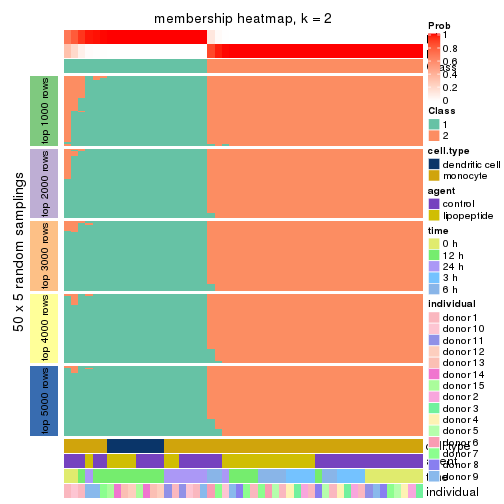
membership_heatmap(res, k = 3)
membership_heatmap(res, k = 4)
membership_heatmap(res, k = 5)
membership_heatmap(res, k = 6)
As soon as we have had the classes for columns, we can look for signatures which are significantly different between classes which can be candidate marks for certain classes. Following are the heatmaps for signatures.
Signature heatmaps where rows are scaled:
get_signatures(res, k = 2)

get_signatures(res, k = 3)
get_signatures(res, k = 4)
get_signatures(res, k = 5)
get_signatures(res, k = 6)
Signature heatmaps where rows are not scaled:
get_signatures(res, k = 2, scale_rows = FALSE)

get_signatures(res, k = 3, scale_rows = FALSE)
get_signatures(res, k = 4, scale_rows = FALSE)
get_signatures(res, k = 5, scale_rows = FALSE)
get_signatures(res, k = 6, scale_rows = FALSE)
Compare the overlap of signatures from different k:
compare_signatures(res)
get_signature() returns a data frame invisibly. TO get the list of signatures, the function
call should be assigned to a variable explicitly. In following code, if plot argument is set
to FALSE, no heatmap is plotted while only the differential analysis is performed.
# code only for demonstration
tb = get_signature(res, k = ..., plot = FALSE)
An example of the output of tb is:
#> which_row fdr mean_1 mean_2 scaled_mean_1 scaled_mean_2 km
#> 1 38 0.042760348 8.373488 9.131774 -0.5533452 0.5164555 1
#> 2 40 0.018707592 7.106213 8.469186 -0.6173731 0.5762149 1
#> 3 55 0.019134737 10.221463 11.207825 -0.6159697 0.5749050 1
#> 4 59 0.006059896 5.921854 7.869574 -0.6899429 0.6439467 1
#> 5 60 0.018055526 8.928898 10.211722 -0.6204761 0.5791110 1
#> 6 98 0.009384629 15.714769 14.887706 0.6635654 -0.6193277 2
...
The columns in tb are:
which_row: row indices corresponding to the input matrix.fdr: FDR for the differential test. mean_x: The mean value in group x.scaled_mean_x: The mean value in group x after rows are scaled.km: Row groups if k-means clustering is applied to rows.UMAP plot which shows how samples are separated.
dimension_reduction(res, k = 2, method = "UMAP")
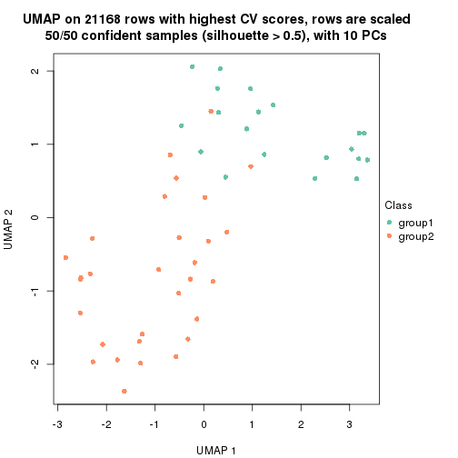
dimension_reduction(res, k = 3, method = "UMAP")
dimension_reduction(res, k = 4, method = "UMAP")
dimension_reduction(res, k = 5, method = "UMAP")
dimension_reduction(res, k = 6, method = "UMAP")
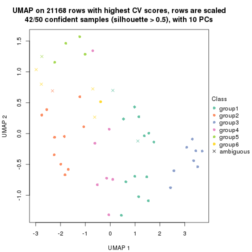
Following heatmap shows how subgroups are split when increasing k:
collect_classes(res)
Test correlation between subgroups and known annotations. If the known annotation is numeric, one-way ANOVA test is applied, and if the known annotation is discrete, chi-squared contingency table test is applied.
test_to_known_factors(res)
#> n cell.type(p) agent(p) time(p) individual(p) k
#> CV:NMF 50 7.09e-04 0.76828 4.25e-05 2.01e-02 2
#> CV:NMF 50 1.49e-05 0.00625 1.30e-05 6.86e-03 3
#> CV:NMF 43 1.28e-05 0.00088 1.66e-04 6.76e-02 4
#> CV:NMF 49 5.84e-10 0.02225 8.45e-06 1.43e-06 5
#> CV:NMF 42 5.89e-08 0.22160 4.32e-05 1.54e-05 6
If matrix rows can be associated to genes, consider to use functional_enrichment(res,
...) to perform function enrichment for the signature genes. See this vignette for more detailed explanations.
The object with results only for a single top-value method and a single partition method can be extracted as:
res = res_list["MAD", "hclust"]
# you can also extract it by
# res = res_list["MAD:hclust"]
A summary of res and all the functions that can be applied to it:
res
#> A 'ConsensusPartition' object with k = 2, 3, 4, 5, 6.
#> On a matrix with 21168 rows and 50 columns.
#> Top rows (1000, 2000, 3000, 4000, 5000) are extracted by 'MAD' method.
#> Subgroups are detected by 'hclust' method.
#> Performed in total 1250 partitions by row resampling.
#> Best k for subgroups seems to be 2.
#>
#> Following methods can be applied to this 'ConsensusPartition' object:
#> [1] "cola_report" "collect_classes" "collect_plots"
#> [4] "collect_stats" "colnames" "compare_signatures"
#> [7] "consensus_heatmap" "dimension_reduction" "functional_enrichment"
#> [10] "get_anno_col" "get_anno" "get_classes"
#> [13] "get_consensus" "get_matrix" "get_membership"
#> [16] "get_param" "get_signatures" "get_stats"
#> [19] "is_best_k" "is_stable_k" "membership_heatmap"
#> [22] "ncol" "nrow" "plot_ecdf"
#> [25] "rownames" "select_partition_number" "show"
#> [28] "suggest_best_k" "test_to_known_factors"
collect_plots() function collects all the plots made from res for all k (number of partitions)
into one single page to provide an easy and fast comparison between different k.
collect_plots(res)
The plots are:
k and the heatmap of
predicted classes for each k.k.k.k.All the plots in panels can be made by individual functions and they are plotted later in this section.
select_partition_number() produces several plots showing different
statistics for choosing “optimized” k. There are following statistics:
k;k, the area increased is defined as \(A_k - A_{k-1}\).The detailed explanations of these statistics can be found in the cola vignette.
Generally speaking, lower PAC score, higher mean silhouette score or higher
concordance corresponds to better partition. Rand index and Jaccard index
measure how similar the current partition is compared to partition with k-1.
If they are too similar, we won't accept k is better than k-1.
select_partition_number(res)
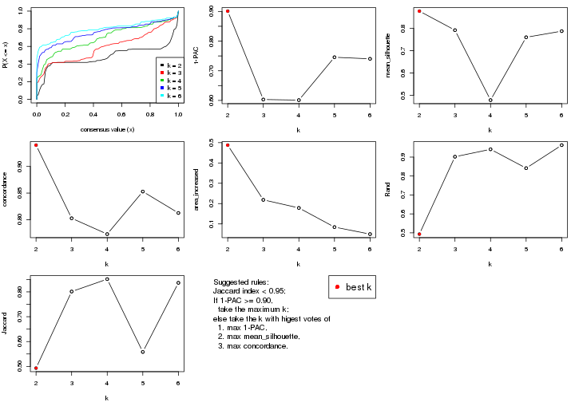
The numeric values for all these statistics can be obtained by get_stats().
get_stats(res)
#> k 1-PAC mean_silhouette concordance area_increased Rand Jaccard
#> 2 2 0.901 0.877 0.940 0.4876 0.493 0.493
#> 3 3 0.603 0.792 0.803 0.2184 0.902 0.801
#> 4 4 0.601 0.479 0.773 0.1786 0.941 0.851
#> 5 5 0.746 0.760 0.853 0.0843 0.842 0.558
#> 6 6 0.740 0.788 0.813 0.0498 0.963 0.836
suggest_best_k() suggests the best \(k\) based on these statistics. The rules are as follows:
suggest_best_k(res)
#> [1] 2
Following shows the table of the partitions (You need to click the show/hide
code output link to see it). The membership matrix (columns with name p*)
is inferred by
clue::cl_consensus()
function with the SE method. Basically the value in the membership matrix
represents the probability to belong to a certain group. The finall class
label for an item is determined with the group with highest probability it
belongs to.
In get_classes() function, the entropy is calculated from the membership
matrix and the silhouette score is calculated from the consensus matrix.
cbind(get_classes(res, k = 2), get_membership(res, k = 2))
#> class entropy silhouette p1 p2
#> GSM225374 1 0.0000 0.9072 1.000 0.000
#> GSM225349 2 0.3274 0.9637 0.060 0.940
#> GSM225367 2 0.0376 0.9554 0.004 0.996
#> GSM225356 2 0.3274 0.9637 0.060 0.940
#> GSM225353 2 0.3274 0.9637 0.060 0.940
#> GSM225653 2 0.3431 0.9621 0.064 0.936
#> GSM209847 2 0.3274 0.9637 0.060 0.940
#> GSM225658 2 0.3431 0.9621 0.064 0.936
#> GSM225370 1 0.1414 0.8955 0.980 0.020
#> GSM225364 2 0.3431 0.9621 0.064 0.936
#> GSM225645 2 0.0938 0.9618 0.012 0.988
#> GSM225350 2 0.3274 0.9640 0.060 0.940
#> GSM225368 2 0.0000 0.9549 0.000 1.000
#> GSM225357 2 0.2043 0.9661 0.032 0.968
#> GSM225651 2 0.0938 0.9618 0.012 0.988
#> GSM225354 2 0.3274 0.9640 0.060 0.940
#> GSM225360 1 0.9933 0.2188 0.548 0.452
#> GSM225657 1 0.0000 0.9072 1.000 0.000
#> GSM225377 1 0.2423 0.8806 0.960 0.040
#> GSM225656 1 0.0000 0.9072 1.000 0.000
#> GSM225347 2 0.3274 0.9640 0.060 0.940
#> GSM225660 1 0.0000 0.9072 1.000 0.000
#> GSM225712 1 0.0000 0.9072 1.000 0.000
#> GSM225663 1 0.0000 0.9072 1.000 0.000
#> GSM225373 1 0.0000 0.9072 1.000 0.000
#> GSM225366 1 0.9996 0.0713 0.512 0.488
#> GSM225380 2 0.0938 0.9618 0.012 0.988
#> GSM225351 2 0.1633 0.9650 0.024 0.976
#> GSM225369 2 0.0000 0.9549 0.000 1.000
#> GSM225358 2 0.1843 0.9656 0.028 0.972
#> GSM225649 2 0.0938 0.9618 0.012 0.988
#> GSM225355 2 0.1633 0.9650 0.024 0.976
#> GSM225361 2 0.0000 0.9549 0.000 1.000
#> GSM225655 2 0.3274 0.9487 0.060 0.940
#> GSM225376 2 0.3733 0.9325 0.072 0.928
#> GSM225654 2 0.3274 0.9487 0.060 0.940
#> GSM225348 2 0.3274 0.9640 0.060 0.940
#> GSM225659 2 0.4815 0.9060 0.104 0.896
#> GSM225378 1 0.2043 0.8872 0.968 0.032
#> GSM225661 1 0.9988 0.1017 0.520 0.480
#> GSM225372 1 0.9427 0.4351 0.640 0.360
#> GSM225365 1 0.0000 0.9072 1.000 0.000
#> GSM225860 1 0.0000 0.9072 1.000 0.000
#> GSM225875 1 0.0000 0.9072 1.000 0.000
#> GSM225878 1 0.0000 0.9072 1.000 0.000
#> GSM225885 1 0.0000 0.9072 1.000 0.000
#> GSM225867 1 0.0000 0.9072 1.000 0.000
#> GSM225871 1 0.0000 0.9072 1.000 0.000
#> GSM225881 1 0.0000 0.9072 1.000 0.000
#> GSM225887 1 0.0000 0.9072 1.000 0.000
cbind(get_classes(res, k = 3), get_membership(res, k = 3))
#> class entropy silhouette p1 p2 p3
#> GSM225374 1 0.0829 0.699 0.984 0.012 0.004
#> GSM225349 2 0.2903 0.876 0.048 0.924 0.028
#> GSM225367 2 0.6051 0.712 0.012 0.696 0.292
#> GSM225356 2 0.2903 0.876 0.048 0.924 0.028
#> GSM225353 2 0.2903 0.876 0.048 0.924 0.028
#> GSM225653 2 0.3009 0.875 0.052 0.920 0.028
#> GSM209847 2 0.2903 0.876 0.048 0.924 0.028
#> GSM225658 2 0.3009 0.875 0.052 0.920 0.028
#> GSM225370 1 0.1399 0.696 0.968 0.028 0.004
#> GSM225364 2 0.3009 0.875 0.052 0.920 0.028
#> GSM225645 2 0.3038 0.859 0.000 0.896 0.104
#> GSM225350 2 0.3983 0.871 0.048 0.884 0.068
#> GSM225368 2 0.6019 0.716 0.012 0.700 0.288
#> GSM225357 2 0.3045 0.880 0.020 0.916 0.064
#> GSM225651 2 0.3038 0.859 0.000 0.896 0.104
#> GSM225354 2 0.3983 0.871 0.048 0.884 0.068
#> GSM225360 1 0.8376 0.285 0.496 0.420 0.084
#> GSM225657 1 0.0592 0.701 0.988 0.012 0.000
#> GSM225377 1 0.2527 0.681 0.936 0.044 0.020
#> GSM225656 1 0.0592 0.701 0.988 0.012 0.000
#> GSM225347 2 0.3983 0.871 0.048 0.884 0.068
#> GSM225660 1 0.0592 0.701 0.988 0.012 0.000
#> GSM225712 1 0.1182 0.689 0.976 0.012 0.012
#> GSM225663 1 0.0592 0.701 0.988 0.012 0.000
#> GSM225373 1 0.1182 0.689 0.976 0.012 0.012
#> GSM225366 1 0.9014 0.194 0.460 0.408 0.132
#> GSM225380 2 0.3038 0.859 0.000 0.896 0.104
#> GSM225351 2 0.2845 0.876 0.012 0.920 0.068
#> GSM225369 2 0.6019 0.716 0.012 0.700 0.288
#> GSM225358 2 0.2902 0.880 0.016 0.920 0.064
#> GSM225649 2 0.3038 0.859 0.000 0.896 0.104
#> GSM225355 2 0.2845 0.876 0.012 0.920 0.068
#> GSM225361 2 0.4390 0.835 0.012 0.840 0.148
#> GSM225655 2 0.5241 0.845 0.048 0.820 0.132
#> GSM225376 2 0.5042 0.826 0.060 0.836 0.104
#> GSM225654 2 0.5241 0.845 0.048 0.820 0.132
#> GSM225348 2 0.3983 0.871 0.048 0.884 0.068
#> GSM225659 2 0.6157 0.809 0.092 0.780 0.128
#> GSM225378 1 0.2550 0.681 0.936 0.040 0.024
#> GSM225661 1 0.9004 0.220 0.468 0.400 0.132
#> GSM225372 1 0.8246 0.402 0.588 0.312 0.100
#> GSM225365 1 0.0592 0.701 0.988 0.012 0.000
#> GSM225860 3 0.6126 1.000 0.400 0.000 0.600
#> GSM225875 3 0.6126 1.000 0.400 0.000 0.600
#> GSM225878 3 0.6126 1.000 0.400 0.000 0.600
#> GSM225885 3 0.6126 1.000 0.400 0.000 0.600
#> GSM225867 3 0.6126 1.000 0.400 0.000 0.600
#> GSM225871 3 0.6126 1.000 0.400 0.000 0.600
#> GSM225881 3 0.6126 1.000 0.400 0.000 0.600
#> GSM225887 3 0.6126 1.000 0.400 0.000 0.600
cbind(get_classes(res, k = 4), get_membership(res, k = 4))
#> class entropy silhouette p1 p2 p3 p4
#> GSM225374 1 0.0376 0.8026 0.992 0.004 0.004 0.000
#> GSM225349 2 0.1398 0.5245 0.040 0.956 0.000 0.004
#> GSM225367 2 0.6065 0.1595 0.004 0.532 0.036 0.428
#> GSM225356 2 0.1398 0.5245 0.040 0.956 0.000 0.004
#> GSM225353 2 0.1398 0.5245 0.040 0.956 0.000 0.004
#> GSM225653 2 0.1302 0.5240 0.044 0.956 0.000 0.000
#> GSM209847 2 0.1398 0.5245 0.040 0.956 0.000 0.004
#> GSM225658 2 0.1302 0.5240 0.044 0.956 0.000 0.000
#> GSM225370 1 0.1394 0.8015 0.964 0.016 0.008 0.012
#> GSM225364 2 0.1302 0.5240 0.044 0.956 0.000 0.000
#> GSM225645 2 0.5500 -0.4632 0.000 0.520 0.016 0.464
#> GSM225350 2 0.4556 0.4760 0.032 0.800 0.012 0.156
#> GSM225368 2 0.5991 0.1590 0.004 0.532 0.032 0.432
#> GSM225357 2 0.3870 0.4496 0.008 0.820 0.008 0.164
#> GSM225651 2 0.5500 -0.4632 0.000 0.520 0.016 0.464
#> GSM225354 2 0.4556 0.4760 0.032 0.800 0.012 0.156
#> GSM225360 1 0.9033 0.2729 0.412 0.112 0.140 0.336
#> GSM225657 1 0.0188 0.8041 0.996 0.004 0.000 0.000
#> GSM225377 1 0.2928 0.7846 0.904 0.012 0.056 0.028
#> GSM225656 1 0.0188 0.8041 0.996 0.004 0.000 0.000
#> GSM225347 2 0.4556 0.4760 0.032 0.800 0.012 0.156
#> GSM225660 1 0.0188 0.8041 0.996 0.004 0.000 0.000
#> GSM225712 1 0.1557 0.7886 0.944 0.000 0.056 0.000
#> GSM225663 1 0.0188 0.8041 0.996 0.004 0.000 0.000
#> GSM225373 1 0.1557 0.7886 0.944 0.000 0.056 0.000
#> GSM225366 1 0.9239 0.0605 0.400 0.192 0.104 0.304
#> GSM225380 2 0.5500 -0.4632 0.000 0.520 0.016 0.464
#> GSM225351 2 0.3625 0.4461 0.000 0.828 0.012 0.160
#> GSM225369 2 0.5991 0.1590 0.004 0.532 0.032 0.432
#> GSM225358 2 0.3916 0.4447 0.008 0.816 0.008 0.168
#> GSM225649 2 0.5500 -0.4632 0.000 0.520 0.016 0.464
#> GSM225355 2 0.3625 0.4461 0.000 0.828 0.012 0.160
#> GSM225361 4 0.5062 0.3824 0.000 0.300 0.020 0.680
#> GSM225655 4 0.6414 0.6110 0.040 0.460 0.012 0.488
#> GSM225376 2 0.6899 -0.5393 0.064 0.464 0.016 0.456
#> GSM225654 4 0.6414 0.6110 0.040 0.460 0.012 0.488
#> GSM225348 2 0.4556 0.4760 0.032 0.800 0.012 0.156
#> GSM225659 2 0.7061 -0.6744 0.084 0.460 0.012 0.444
#> GSM225378 1 0.3354 0.7684 0.880 0.020 0.084 0.016
#> GSM225661 1 0.9208 0.0859 0.408 0.188 0.104 0.300
#> GSM225372 1 0.8669 0.3900 0.504 0.108 0.132 0.256
#> GSM225365 1 0.0188 0.8041 0.996 0.004 0.000 0.000
#> GSM225860 3 0.1792 1.0000 0.068 0.000 0.932 0.000
#> GSM225875 3 0.1792 1.0000 0.068 0.000 0.932 0.000
#> GSM225878 3 0.1792 1.0000 0.068 0.000 0.932 0.000
#> GSM225885 3 0.1792 1.0000 0.068 0.000 0.932 0.000
#> GSM225867 3 0.1792 1.0000 0.068 0.000 0.932 0.000
#> GSM225871 3 0.1792 1.0000 0.068 0.000 0.932 0.000
#> GSM225881 3 0.1792 1.0000 0.068 0.000 0.932 0.000
#> GSM225887 3 0.1792 1.0000 0.068 0.000 0.932 0.000
cbind(get_classes(res, k = 5), get_membership(res, k = 5))
#> class entropy silhouette p1 p2 p3 p4 p5
#> GSM225374 1 0.0162 0.82633 0.996 0.000 0.000 0.000 0.004
#> GSM225349 2 0.3282 0.82894 0.008 0.804 0.000 0.000 0.188
#> GSM225367 5 0.0324 0.99605 0.000 0.004 0.000 0.004 0.992
#> GSM225356 2 0.3282 0.82894 0.008 0.804 0.000 0.000 0.188
#> GSM225353 2 0.3282 0.82894 0.008 0.804 0.000 0.000 0.188
#> GSM225653 2 0.3355 0.82886 0.012 0.804 0.000 0.000 0.184
#> GSM209847 2 0.3282 0.82894 0.008 0.804 0.000 0.000 0.188
#> GSM225658 2 0.3355 0.82886 0.012 0.804 0.000 0.000 0.184
#> GSM225370 1 0.1095 0.82441 0.968 0.012 0.008 0.012 0.000
#> GSM225364 2 0.3355 0.82886 0.012 0.804 0.000 0.000 0.184
#> GSM225645 4 0.3992 0.72618 0.000 0.268 0.000 0.720 0.012
#> GSM225350 2 0.0162 0.82089 0.000 0.996 0.000 0.004 0.000
#> GSM225368 5 0.0451 0.99802 0.000 0.004 0.000 0.008 0.988
#> GSM225357 2 0.3197 0.70996 0.008 0.852 0.000 0.116 0.024
#> GSM225651 4 0.3992 0.72618 0.000 0.268 0.000 0.720 0.012
#> GSM225354 2 0.0162 0.82089 0.000 0.996 0.000 0.004 0.000
#> GSM225360 4 0.6576 -0.26451 0.408 0.008 0.136 0.444 0.004
#> GSM225657 1 0.0000 0.82864 1.000 0.000 0.000 0.000 0.000
#> GSM225377 1 0.2451 0.80902 0.904 0.004 0.056 0.036 0.000
#> GSM225656 1 0.0000 0.82864 1.000 0.000 0.000 0.000 0.000
#> GSM225347 2 0.0162 0.82089 0.000 0.996 0.000 0.004 0.000
#> GSM225660 1 0.0000 0.82864 1.000 0.000 0.000 0.000 0.000
#> GSM225712 1 0.1341 0.81857 0.944 0.000 0.056 0.000 0.000
#> GSM225663 1 0.0000 0.82864 1.000 0.000 0.000 0.000 0.000
#> GSM225373 1 0.1341 0.81857 0.944 0.000 0.056 0.000 0.000
#> GSM225366 1 0.7516 0.00964 0.396 0.104 0.108 0.392 0.000
#> GSM225380 4 0.3992 0.72618 0.000 0.268 0.000 0.720 0.012
#> GSM225351 2 0.1043 0.79757 0.000 0.960 0.000 0.040 0.000
#> GSM225369 5 0.0451 0.99802 0.000 0.004 0.000 0.008 0.988
#> GSM225358 2 0.3246 0.70395 0.008 0.848 0.000 0.120 0.024
#> GSM225649 4 0.3992 0.72618 0.000 0.268 0.000 0.720 0.012
#> GSM225355 2 0.1043 0.79757 0.000 0.960 0.000 0.040 0.000
#> GSM225361 4 0.0162 0.47637 0.000 0.000 0.000 0.996 0.004
#> GSM225655 4 0.5452 0.58283 0.040 0.444 0.004 0.508 0.004
#> GSM225376 4 0.4938 0.71282 0.064 0.208 0.000 0.716 0.012
#> GSM225654 4 0.5452 0.58283 0.040 0.444 0.004 0.508 0.004
#> GSM225348 2 0.0162 0.82089 0.000 0.996 0.000 0.004 0.000
#> GSM225659 4 0.5878 0.56479 0.084 0.444 0.004 0.468 0.000
#> GSM225378 1 0.2878 0.79320 0.880 0.012 0.084 0.024 0.000
#> GSM225661 1 0.7482 0.02942 0.404 0.100 0.108 0.388 0.000
#> GSM225372 1 0.7052 0.29254 0.500 0.052 0.136 0.312 0.000
#> GSM225365 1 0.0000 0.82864 1.000 0.000 0.000 0.000 0.000
#> GSM225860 3 0.0162 1.00000 0.004 0.000 0.996 0.000 0.000
#> GSM225875 3 0.0162 1.00000 0.004 0.000 0.996 0.000 0.000
#> GSM225878 3 0.0162 1.00000 0.004 0.000 0.996 0.000 0.000
#> GSM225885 3 0.0162 1.00000 0.004 0.000 0.996 0.000 0.000
#> GSM225867 3 0.0162 1.00000 0.004 0.000 0.996 0.000 0.000
#> GSM225871 3 0.0162 1.00000 0.004 0.000 0.996 0.000 0.000
#> GSM225881 3 0.0162 1.00000 0.004 0.000 0.996 0.000 0.000
#> GSM225887 3 0.0162 1.00000 0.004 0.000 0.996 0.000 0.000
cbind(get_classes(res, k = 6), get_membership(res, k = 6))
#> class entropy silhouette p1 p2 p3 p4 p5 p6
#> GSM225374 1 0.0146 0.9208 0.996 0.000 0.000 0.000 0.004 0.000
#> GSM225349 2 0.4278 0.7823 0.000 0.764 0.000 0.072 0.136 0.028
#> GSM225367 5 0.0000 0.9952 0.000 0.000 0.000 0.000 1.000 0.000
#> GSM225356 2 0.4278 0.7823 0.000 0.764 0.000 0.072 0.136 0.028
#> GSM225353 2 0.4278 0.7823 0.000 0.764 0.000 0.072 0.136 0.028
#> GSM225653 2 0.4412 0.7816 0.008 0.764 0.000 0.072 0.132 0.024
#> GSM209847 2 0.4278 0.7823 0.000 0.764 0.000 0.072 0.136 0.028
#> GSM225658 2 0.4412 0.7816 0.008 0.764 0.000 0.072 0.132 0.024
#> GSM225370 1 0.2384 0.8469 0.884 0.000 0.000 0.032 0.000 0.084
#> GSM225364 2 0.4412 0.7816 0.008 0.764 0.000 0.072 0.132 0.024
#> GSM225645 4 0.2631 0.6583 0.000 0.180 0.000 0.820 0.000 0.000
#> GSM225350 2 0.0993 0.7664 0.000 0.964 0.000 0.012 0.000 0.024
#> GSM225368 5 0.0146 0.9976 0.000 0.000 0.000 0.004 0.996 0.000
#> GSM225357 2 0.2738 0.6632 0.000 0.820 0.000 0.176 0.000 0.004
#> GSM225651 4 0.2631 0.6583 0.000 0.180 0.000 0.820 0.000 0.000
#> GSM225354 2 0.0993 0.7664 0.000 0.964 0.000 0.012 0.000 0.024
#> GSM225360 6 0.4880 0.5719 0.116 0.000 0.020 0.164 0.000 0.700
#> GSM225657 1 0.0000 0.9227 1.000 0.000 0.000 0.000 0.000 0.000
#> GSM225377 1 0.3565 0.8007 0.812 0.004 0.016 0.032 0.000 0.136
#> GSM225656 1 0.0000 0.9227 1.000 0.000 0.000 0.000 0.000 0.000
#> GSM225347 2 0.0993 0.7664 0.000 0.964 0.000 0.012 0.000 0.024
#> GSM225660 1 0.0000 0.9227 1.000 0.000 0.000 0.000 0.000 0.000
#> GSM225712 1 0.1895 0.8922 0.912 0.000 0.016 0.000 0.000 0.072
#> GSM225663 1 0.0000 0.9227 1.000 0.000 0.000 0.000 0.000 0.000
#> GSM225373 1 0.1895 0.8922 0.912 0.000 0.016 0.000 0.000 0.072
#> GSM225366 6 0.5962 0.7293 0.064 0.064 0.004 0.320 0.000 0.548
#> GSM225380 4 0.2631 0.6583 0.000 0.180 0.000 0.820 0.000 0.000
#> GSM225351 2 0.1700 0.7404 0.000 0.928 0.000 0.048 0.000 0.024
#> GSM225369 5 0.0146 0.9976 0.000 0.000 0.000 0.004 0.996 0.000
#> GSM225358 2 0.2772 0.6573 0.000 0.816 0.000 0.180 0.000 0.004
#> GSM225649 4 0.2631 0.6583 0.000 0.180 0.000 0.820 0.000 0.000
#> GSM225355 2 0.1700 0.7404 0.000 0.928 0.000 0.048 0.000 0.024
#> GSM225361 4 0.3695 0.0667 0.000 0.000 0.000 0.624 0.000 0.376
#> GSM225655 4 0.5400 0.4499 0.000 0.400 0.000 0.484 0.000 0.116
#> GSM225376 4 0.3454 0.5588 0.004 0.124 0.000 0.812 0.000 0.060
#> GSM225654 4 0.5400 0.4499 0.000 0.400 0.000 0.484 0.000 0.116
#> GSM225348 2 0.0993 0.7664 0.000 0.964 0.000 0.012 0.000 0.024
#> GSM225659 4 0.5729 0.4136 0.004 0.400 0.000 0.452 0.000 0.144
#> GSM225378 1 0.4010 0.7527 0.764 0.000 0.020 0.040 0.000 0.176
#> GSM225661 6 0.5994 0.7373 0.072 0.060 0.004 0.316 0.000 0.548
#> GSM225372 6 0.6268 0.7289 0.136 0.020 0.020 0.292 0.000 0.532
#> GSM225365 1 0.0000 0.9227 1.000 0.000 0.000 0.000 0.000 0.000
#> GSM225860 3 0.0000 1.0000 0.000 0.000 1.000 0.000 0.000 0.000
#> GSM225875 3 0.0000 1.0000 0.000 0.000 1.000 0.000 0.000 0.000
#> GSM225878 3 0.0000 1.0000 0.000 0.000 1.000 0.000 0.000 0.000
#> GSM225885 3 0.0000 1.0000 0.000 0.000 1.000 0.000 0.000 0.000
#> GSM225867 3 0.0000 1.0000 0.000 0.000 1.000 0.000 0.000 0.000
#> GSM225871 3 0.0000 1.0000 0.000 0.000 1.000 0.000 0.000 0.000
#> GSM225881 3 0.0000 1.0000 0.000 0.000 1.000 0.000 0.000 0.000
#> GSM225887 3 0.0000 1.0000 0.000 0.000 1.000 0.000 0.000 0.000
Heatmaps for the consensus matrix. It visualizes the probability of two samples to be in a same group.
consensus_heatmap(res, k = 2)
consensus_heatmap(res, k = 3)
consensus_heatmap(res, k = 4)
consensus_heatmap(res, k = 5)
consensus_heatmap(res, k = 6)
Heatmaps for the membership of samples in all partitions to see how consistent they are:
membership_heatmap(res, k = 2)
membership_heatmap(res, k = 3)
membership_heatmap(res, k = 4)
membership_heatmap(res, k = 5)
membership_heatmap(res, k = 6)
As soon as we have had the classes for columns, we can look for signatures which are significantly different between classes which can be candidate marks for certain classes. Following are the heatmaps for signatures.
Signature heatmaps where rows are scaled:
get_signatures(res, k = 2)
get_signatures(res, k = 3)
get_signatures(res, k = 4)

get_signatures(res, k = 5)
get_signatures(res, k = 6)
Signature heatmaps where rows are not scaled:
get_signatures(res, k = 2, scale_rows = FALSE)
get_signatures(res, k = 3, scale_rows = FALSE)
get_signatures(res, k = 4, scale_rows = FALSE)
get_signatures(res, k = 5, scale_rows = FALSE)
get_signatures(res, k = 6, scale_rows = FALSE)

Compare the overlap of signatures from different k:
compare_signatures(res)
get_signature() returns a data frame invisibly. TO get the list of signatures, the function
call should be assigned to a variable explicitly. In following code, if plot argument is set
to FALSE, no heatmap is plotted while only the differential analysis is performed.
# code only for demonstration
tb = get_signature(res, k = ..., plot = FALSE)
An example of the output of tb is:
#> which_row fdr mean_1 mean_2 scaled_mean_1 scaled_mean_2 km
#> 1 38 0.042760348 8.373488 9.131774 -0.5533452 0.5164555 1
#> 2 40 0.018707592 7.106213 8.469186 -0.6173731 0.5762149 1
#> 3 55 0.019134737 10.221463 11.207825 -0.6159697 0.5749050 1
#> 4 59 0.006059896 5.921854 7.869574 -0.6899429 0.6439467 1
#> 5 60 0.018055526 8.928898 10.211722 -0.6204761 0.5791110 1
#> 6 98 0.009384629 15.714769 14.887706 0.6635654 -0.6193277 2
...
The columns in tb are:
which_row: row indices corresponding to the input matrix.fdr: FDR for the differential test. mean_x: The mean value in group x.scaled_mean_x: The mean value in group x after rows are scaled.km: Row groups if k-means clustering is applied to rows.UMAP plot which shows how samples are separated.
dimension_reduction(res, k = 2, method = "UMAP")
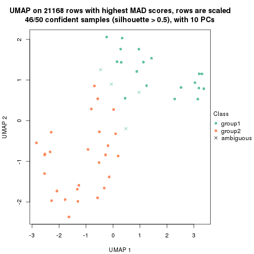
dimension_reduction(res, k = 3, method = "UMAP")
dimension_reduction(res, k = 4, method = "UMAP")
dimension_reduction(res, k = 5, method = "UMAP")

dimension_reduction(res, k = 6, method = "UMAP")
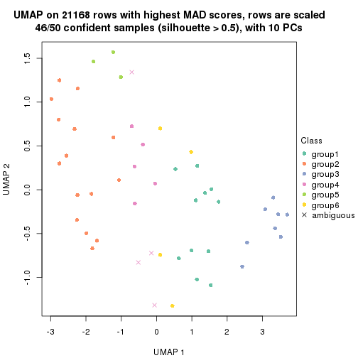
Following heatmap shows how subgroups are split when increasing k:
collect_classes(res)
Test correlation between subgroups and known annotations. If the known annotation is numeric, one-way ANOVA test is applied, and if the known annotation is discrete, chi-squared contingency table test is applied.
test_to_known_factors(res)
#> n cell.type(p) agent(p) time(p) individual(p) k
#> MAD:hclust 46 9.18e-04 0.5663 2.31e-04 2.83e-02 2
#> MAD:hclust 46 1.03e-10 0.2536 6.11e-06 1.65e-04 3
#> MAD:hclust 28 3.63e-06 0.0171 2.01e-05 3.16e-02 4
#> MAD:hclust 45 3.98e-09 0.0979 2.82e-05 1.19e-08 5
#> MAD:hclust 46 9.08e-09 0.4932 1.48e-05 1.14e-08 6
If matrix rows can be associated to genes, consider to use functional_enrichment(res,
...) to perform function enrichment for the signature genes. See this vignette for more detailed explanations.
The object with results only for a single top-value method and a single partition method can be extracted as:
res = res_list["MAD", "kmeans"]
# you can also extract it by
# res = res_list["MAD:kmeans"]
A summary of res and all the functions that can be applied to it:
res
#> A 'ConsensusPartition' object with k = 2, 3, 4, 5, 6.
#> On a matrix with 21168 rows and 50 columns.
#> Top rows (1000, 2000, 3000, 4000, 5000) are extracted by 'MAD' method.
#> Subgroups are detected by 'kmeans' method.
#> Performed in total 1250 partitions by row resampling.
#> Best k for subgroups seems to be 2.
#>
#> Following methods can be applied to this 'ConsensusPartition' object:
#> [1] "cola_report" "collect_classes" "collect_plots"
#> [4] "collect_stats" "colnames" "compare_signatures"
#> [7] "consensus_heatmap" "dimension_reduction" "functional_enrichment"
#> [10] "get_anno_col" "get_anno" "get_classes"
#> [13] "get_consensus" "get_matrix" "get_membership"
#> [16] "get_param" "get_signatures" "get_stats"
#> [19] "is_best_k" "is_stable_k" "membership_heatmap"
#> [22] "ncol" "nrow" "plot_ecdf"
#> [25] "rownames" "select_partition_number" "show"
#> [28] "suggest_best_k" "test_to_known_factors"
collect_plots() function collects all the plots made from res for all k (number of partitions)
into one single page to provide an easy and fast comparison between different k.
collect_plots(res)
The plots are:
k and the heatmap of
predicted classes for each k.k.k.k.All the plots in panels can be made by individual functions and they are plotted later in this section.
select_partition_number() produces several plots showing different
statistics for choosing “optimized” k. There are following statistics:
k;k, the area increased is defined as \(A_k - A_{k-1}\).The detailed explanations of these statistics can be found in the cola vignette.
Generally speaking, lower PAC score, higher mean silhouette score or higher
concordance corresponds to better partition. Rand index and Jaccard index
measure how similar the current partition is compared to partition with k-1.
If they are too similar, we won't accept k is better than k-1.
select_partition_number(res)
The numeric values for all these statistics can be obtained by get_stats().
get_stats(res)
#> k 1-PAC mean_silhouette concordance area_increased Rand Jaccard
#> 2 2 1.000 0.999 0.999 0.5070 0.493 0.493
#> 3 3 0.610 0.406 0.753 0.2632 0.941 0.881
#> 4 4 0.612 0.740 0.805 0.1353 0.778 0.511
#> 5 5 0.747 0.716 0.783 0.0796 1.000 1.000
#> 6 6 0.771 0.717 0.756 0.0455 0.907 0.643
suggest_best_k() suggests the best \(k\) based on these statistics. The rules are as follows:
suggest_best_k(res)
#> [1] 2
Following shows the table of the partitions (You need to click the show/hide
code output link to see it). The membership matrix (columns with name p*)
is inferred by
clue::cl_consensus()
function with the SE method. Basically the value in the membership matrix
represents the probability to belong to a certain group. The finall class
label for an item is determined with the group with highest probability it
belongs to.
In get_classes() function, the entropy is calculated from the membership
matrix and the silhouette score is calculated from the consensus matrix.
cbind(get_classes(res, k = 2), get_membership(res, k = 2))
#> class entropy silhouette p1 p2
#> GSM225374 1 0.0376 0.998 0.996 0.004
#> GSM225349 2 0.0000 1.000 0.000 1.000
#> GSM225367 2 0.0000 1.000 0.000 1.000
#> GSM225356 2 0.0000 1.000 0.000 1.000
#> GSM225353 2 0.0000 1.000 0.000 1.000
#> GSM225653 2 0.0000 1.000 0.000 1.000
#> GSM209847 2 0.0000 1.000 0.000 1.000
#> GSM225658 2 0.0000 1.000 0.000 1.000
#> GSM225370 1 0.0376 0.998 0.996 0.004
#> GSM225364 2 0.0000 1.000 0.000 1.000
#> GSM225645 2 0.0000 1.000 0.000 1.000
#> GSM225350 2 0.0000 1.000 0.000 1.000
#> GSM225368 2 0.0000 1.000 0.000 1.000
#> GSM225357 2 0.0000 1.000 0.000 1.000
#> GSM225651 2 0.0000 1.000 0.000 1.000
#> GSM225354 2 0.0000 1.000 0.000 1.000
#> GSM225360 1 0.0376 0.998 0.996 0.004
#> GSM225657 1 0.0376 0.998 0.996 0.004
#> GSM225377 1 0.0376 0.998 0.996 0.004
#> GSM225656 1 0.0376 0.998 0.996 0.004
#> GSM225347 2 0.0000 1.000 0.000 1.000
#> GSM225660 1 0.0376 0.998 0.996 0.004
#> GSM225712 1 0.0000 0.998 1.000 0.000
#> GSM225663 1 0.0000 0.998 1.000 0.000
#> GSM225373 1 0.0000 0.998 1.000 0.000
#> GSM225366 1 0.0376 0.998 0.996 0.004
#> GSM225380 2 0.0000 1.000 0.000 1.000
#> GSM225351 2 0.0000 1.000 0.000 1.000
#> GSM225369 2 0.0000 1.000 0.000 1.000
#> GSM225358 2 0.0000 1.000 0.000 1.000
#> GSM225649 2 0.0000 1.000 0.000 1.000
#> GSM225355 2 0.0000 1.000 0.000 1.000
#> GSM225361 2 0.0000 1.000 0.000 1.000
#> GSM225655 2 0.0000 1.000 0.000 1.000
#> GSM225376 2 0.0000 1.000 0.000 1.000
#> GSM225654 2 0.0000 1.000 0.000 1.000
#> GSM225348 2 0.0000 1.000 0.000 1.000
#> GSM225659 2 0.0000 1.000 0.000 1.000
#> GSM225378 1 0.0376 0.998 0.996 0.004
#> GSM225661 1 0.0376 0.998 0.996 0.004
#> GSM225372 1 0.0376 0.998 0.996 0.004
#> GSM225365 1 0.0376 0.998 0.996 0.004
#> GSM225860 1 0.0000 0.998 1.000 0.000
#> GSM225875 1 0.0000 0.998 1.000 0.000
#> GSM225878 1 0.0000 0.998 1.000 0.000
#> GSM225885 1 0.0000 0.998 1.000 0.000
#> GSM225867 1 0.0000 0.998 1.000 0.000
#> GSM225871 1 0.0000 0.998 1.000 0.000
#> GSM225881 1 0.0000 0.998 1.000 0.000
#> GSM225887 1 0.0000 0.998 1.000 0.000
cbind(get_classes(res, k = 3), get_membership(res, k = 3))
#> class entropy silhouette p1 p2 p3
#> GSM225374 1 0.3237 0.774 0.912 0.056 0.032
#> GSM225349 2 0.3995 0.499 0.016 0.868 0.116
#> GSM225367 2 0.6954 -0.563 0.016 0.500 0.484
#> GSM225356 2 0.3995 0.499 0.016 0.868 0.116
#> GSM225353 2 0.3995 0.499 0.016 0.868 0.116
#> GSM225653 2 0.3995 0.499 0.016 0.868 0.116
#> GSM209847 2 0.3995 0.499 0.016 0.868 0.116
#> GSM225658 2 0.3995 0.499 0.016 0.868 0.116
#> GSM225370 1 0.0892 0.807 0.980 0.020 0.000
#> GSM225364 2 0.3995 0.499 0.016 0.868 0.116
#> GSM225645 2 0.6291 -0.620 0.000 0.532 0.468
#> GSM225350 2 0.0747 0.507 0.016 0.984 0.000
#> GSM225368 3 0.6518 0.502 0.004 0.484 0.512
#> GSM225357 2 0.0747 0.507 0.016 0.984 0.000
#> GSM225651 2 0.6252 -0.622 0.000 0.556 0.444
#> GSM225354 2 0.0747 0.507 0.016 0.984 0.000
#> GSM225360 1 0.6919 0.264 0.536 0.016 0.448
#> GSM225657 1 0.4165 0.765 0.876 0.076 0.048
#> GSM225377 1 0.2496 0.791 0.928 0.004 0.068
#> GSM225656 1 0.0892 0.807 0.980 0.020 0.000
#> GSM225347 2 0.2318 0.485 0.028 0.944 0.028
#> GSM225660 1 0.0892 0.807 0.980 0.020 0.000
#> GSM225712 1 0.0000 0.808 1.000 0.000 0.000
#> GSM225663 1 0.0592 0.807 0.988 0.012 0.000
#> GSM225373 1 0.0000 0.808 1.000 0.000 0.000
#> GSM225366 1 0.4390 0.733 0.840 0.012 0.148
#> GSM225380 2 0.6252 -0.620 0.000 0.556 0.444
#> GSM225351 2 0.2448 0.453 0.000 0.924 0.076
#> GSM225369 3 0.6280 0.639 0.000 0.460 0.540
#> GSM225358 2 0.2625 0.444 0.000 0.916 0.084
#> GSM225649 2 0.6267 -0.619 0.000 0.548 0.452
#> GSM225355 2 0.2448 0.453 0.000 0.924 0.076
#> GSM225361 3 0.6299 0.513 0.000 0.476 0.524
#> GSM225655 2 0.6252 -0.542 0.000 0.556 0.444
#> GSM225376 2 0.6305 -0.612 0.000 0.516 0.484
#> GSM225654 2 0.6305 -0.612 0.000 0.516 0.484
#> GSM225348 2 0.2959 0.431 0.000 0.900 0.100
#> GSM225659 2 0.6260 -0.544 0.000 0.552 0.448
#> GSM225378 1 0.2496 0.791 0.928 0.004 0.068
#> GSM225661 1 0.3207 0.780 0.904 0.012 0.084
#> GSM225372 1 0.6688 0.343 0.580 0.012 0.408
#> GSM225365 1 0.0892 0.807 0.980 0.020 0.000
#> GSM225860 1 0.5926 0.731 0.644 0.000 0.356
#> GSM225875 1 0.5948 0.731 0.640 0.000 0.360
#> GSM225878 1 0.5926 0.731 0.644 0.000 0.356
#> GSM225885 1 0.5926 0.731 0.644 0.000 0.356
#> GSM225867 1 0.5948 0.731 0.640 0.000 0.360
#> GSM225871 1 0.5926 0.731 0.644 0.000 0.356
#> GSM225881 1 0.5948 0.731 0.640 0.000 0.360
#> GSM225887 1 0.5948 0.731 0.640 0.000 0.360
cbind(get_classes(res, k = 4), get_membership(res, k = 4))
#> class entropy silhouette p1 p2 p3 p4
#> GSM225374 1 0.1631 0.850 0.956 0.020 0.016 0.008
#> GSM225349 2 0.0188 0.730 0.004 0.996 0.000 0.000
#> GSM225367 2 0.7292 -0.386 0.004 0.472 0.132 0.392
#> GSM225356 2 0.0188 0.730 0.004 0.996 0.000 0.000
#> GSM225353 2 0.0188 0.730 0.004 0.996 0.000 0.000
#> GSM225653 2 0.0779 0.725 0.004 0.980 0.016 0.000
#> GSM209847 2 0.0188 0.730 0.004 0.996 0.000 0.000
#> GSM225658 2 0.0779 0.725 0.004 0.980 0.016 0.000
#> GSM225370 1 0.0188 0.863 0.996 0.000 0.004 0.000
#> GSM225364 2 0.0779 0.725 0.004 0.980 0.016 0.000
#> GSM225645 4 0.5508 0.606 0.000 0.408 0.020 0.572
#> GSM225350 2 0.5082 0.713 0.004 0.776 0.108 0.112
#> GSM225368 4 0.7202 0.480 0.004 0.364 0.128 0.504
#> GSM225357 2 0.5082 0.713 0.004 0.776 0.108 0.112
#> GSM225651 4 0.5440 0.631 0.000 0.384 0.020 0.596
#> GSM225354 2 0.5082 0.713 0.004 0.776 0.108 0.112
#> GSM225360 1 0.6213 0.187 0.484 0.000 0.052 0.464
#> GSM225657 1 0.3048 0.814 0.900 0.016 0.056 0.028
#> GSM225377 1 0.1545 0.854 0.952 0.000 0.008 0.040
#> GSM225656 1 0.0657 0.863 0.984 0.000 0.004 0.012
#> GSM225347 2 0.6513 0.674 0.056 0.712 0.112 0.120
#> GSM225660 1 0.0657 0.863 0.984 0.000 0.004 0.012
#> GSM225712 1 0.0188 0.863 0.996 0.000 0.004 0.000
#> GSM225663 1 0.0657 0.863 0.984 0.000 0.004 0.012
#> GSM225373 1 0.0188 0.863 0.996 0.000 0.004 0.000
#> GSM225366 1 0.4319 0.702 0.760 0.000 0.012 0.228
#> GSM225380 4 0.4228 0.748 0.000 0.232 0.008 0.760
#> GSM225351 2 0.6377 0.592 0.000 0.632 0.112 0.256
#> GSM225369 4 0.6233 0.659 0.000 0.216 0.124 0.660
#> GSM225358 2 0.6476 0.566 0.000 0.616 0.112 0.272
#> GSM225649 4 0.3768 0.765 0.000 0.184 0.008 0.808
#> GSM225355 2 0.6377 0.592 0.000 0.632 0.112 0.256
#> GSM225361 4 0.2635 0.741 0.000 0.076 0.020 0.904
#> GSM225655 4 0.5199 0.725 0.004 0.144 0.088 0.764
#> GSM225376 4 0.3508 0.762 0.004 0.136 0.012 0.848
#> GSM225654 4 0.5037 0.735 0.004 0.136 0.084 0.776
#> GSM225348 2 0.6377 0.592 0.000 0.632 0.112 0.256
#> GSM225659 4 0.5850 0.707 0.028 0.136 0.092 0.744
#> GSM225378 1 0.1256 0.857 0.964 0.000 0.008 0.028
#> GSM225661 1 0.2676 0.824 0.896 0.000 0.012 0.092
#> GSM225372 1 0.4831 0.644 0.704 0.000 0.016 0.280
#> GSM225365 1 0.0657 0.863 0.984 0.000 0.004 0.012
#> GSM225860 3 0.5742 0.957 0.260 0.004 0.680 0.056
#> GSM225875 3 0.4283 0.981 0.256 0.000 0.740 0.004
#> GSM225878 3 0.4134 0.982 0.260 0.000 0.740 0.000
#> GSM225885 3 0.4492 0.981 0.260 0.004 0.732 0.004
#> GSM225867 3 0.5714 0.957 0.256 0.004 0.684 0.056
#> GSM225871 3 0.4313 0.981 0.260 0.000 0.736 0.004
#> GSM225881 3 0.4103 0.982 0.256 0.000 0.744 0.000
#> GSM225887 3 0.4462 0.981 0.256 0.004 0.736 0.004
cbind(get_classes(res, k = 5), get_membership(res, k = 5))
#> class entropy silhouette p1 p2 p3 p4 p5
#> GSM225374 1 0.1731 0.869 0.940 0.008 0.012 0.000 NA
#> GSM225349 2 0.0000 0.659 0.000 1.000 0.000 0.000 NA
#> GSM225367 2 0.7775 -0.165 0.000 0.400 0.068 0.240 NA
#> GSM225356 2 0.0000 0.659 0.000 1.000 0.000 0.000 NA
#> GSM225353 2 0.0404 0.655 0.000 0.988 0.000 0.000 NA
#> GSM225653 2 0.2457 0.613 0.000 0.900 0.016 0.008 NA
#> GSM209847 2 0.0000 0.659 0.000 1.000 0.000 0.000 NA
#> GSM225658 2 0.2457 0.613 0.000 0.900 0.016 0.008 NA
#> GSM225370 1 0.0324 0.875 0.992 0.004 0.000 0.000 NA
#> GSM225364 2 0.2457 0.613 0.000 0.900 0.016 0.008 NA
#> GSM225645 4 0.4863 0.624 0.000 0.212 0.008 0.716 NA
#> GSM225350 2 0.4592 0.656 0.000 0.644 0.000 0.024 NA
#> GSM225368 4 0.7517 0.380 0.000 0.200 0.060 0.448 NA
#> GSM225357 2 0.4473 0.658 0.000 0.656 0.000 0.020 NA
#> GSM225651 4 0.4708 0.632 0.000 0.208 0.008 0.728 NA
#> GSM225354 2 0.4592 0.656 0.000 0.644 0.000 0.024 NA
#> GSM225360 1 0.6550 0.504 0.560 0.000 0.020 0.240 NA
#> GSM225657 1 0.1798 0.871 0.928 0.004 0.000 0.004 NA
#> GSM225377 1 0.2624 0.843 0.872 0.000 0.000 0.012 NA
#> GSM225656 1 0.1357 0.873 0.948 0.004 0.000 0.000 NA
#> GSM225347 2 0.5598 0.619 0.040 0.556 0.000 0.020 NA
#> GSM225660 1 0.1357 0.873 0.948 0.004 0.000 0.000 NA
#> GSM225712 1 0.0162 0.875 0.996 0.004 0.000 0.000 NA
#> GSM225663 1 0.1357 0.873 0.948 0.004 0.000 0.000 NA
#> GSM225373 1 0.0162 0.875 0.996 0.004 0.000 0.000 NA
#> GSM225366 1 0.6046 0.578 0.596 0.000 0.004 0.216 NA
#> GSM225380 4 0.1851 0.714 0.000 0.088 0.000 0.912 NA
#> GSM225351 2 0.6296 0.560 0.000 0.480 0.000 0.160 NA
#> GSM225369 4 0.6197 0.545 0.000 0.060 0.060 0.604 NA
#> GSM225358 2 0.6360 0.546 0.000 0.476 0.000 0.172 NA
#> GSM225649 4 0.1270 0.722 0.000 0.052 0.000 0.948 NA
#> GSM225355 2 0.6296 0.560 0.000 0.480 0.000 0.160 NA
#> GSM225361 4 0.1710 0.718 0.000 0.004 0.016 0.940 NA
#> GSM225655 4 0.4829 0.617 0.000 0.036 0.004 0.660 NA
#> GSM225376 4 0.3478 0.700 0.000 0.032 0.004 0.828 NA
#> GSM225654 4 0.4867 0.615 0.000 0.036 0.004 0.652 NA
#> GSM225348 2 0.6296 0.560 0.000 0.480 0.000 0.160 NA
#> GSM225659 4 0.5121 0.591 0.004 0.036 0.004 0.624 NA
#> GSM225378 1 0.2389 0.844 0.880 0.000 0.000 0.004 NA
#> GSM225661 1 0.4077 0.799 0.780 0.000 0.004 0.044 NA
#> GSM225372 1 0.4960 0.742 0.728 0.000 0.008 0.104 NA
#> GSM225365 1 0.1357 0.873 0.948 0.004 0.000 0.000 NA
#> GSM225860 3 0.3992 0.916 0.080 0.000 0.796 0.000 NA
#> GSM225875 3 0.2077 0.968 0.084 0.000 0.908 0.000 NA
#> GSM225878 3 0.1792 0.968 0.084 0.000 0.916 0.000 NA
#> GSM225885 3 0.2170 0.968 0.088 0.000 0.904 0.004 NA
#> GSM225867 3 0.4083 0.914 0.080 0.000 0.788 0.000 NA
#> GSM225871 3 0.1792 0.968 0.084 0.000 0.916 0.000 NA
#> GSM225881 3 0.2077 0.968 0.084 0.000 0.908 0.000 NA
#> GSM225887 3 0.2170 0.968 0.088 0.000 0.904 0.004 NA
cbind(get_classes(res, k = 6), get_membership(res, k = 6))
#> class entropy silhouette p1 p2 p3 p4 p5 p6
#> GSM225374 1 0.1151 0.807 0.956 0.032 0.000 0.000 0.012 0.000
#> GSM225349 6 0.0937 0.921 0.000 0.040 0.000 0.000 0.000 0.960
#> GSM225367 5 0.3437 0.664 0.000 0.004 0.000 0.008 0.752 0.236
#> GSM225356 6 0.0937 0.921 0.000 0.040 0.000 0.000 0.000 0.960
#> GSM225353 6 0.1010 0.921 0.000 0.036 0.004 0.000 0.000 0.960
#> GSM225653 6 0.1265 0.904 0.000 0.000 0.000 0.008 0.044 0.948
#> GSM209847 6 0.0937 0.921 0.000 0.040 0.000 0.000 0.000 0.960
#> GSM225658 6 0.1265 0.904 0.000 0.000 0.000 0.008 0.044 0.948
#> GSM225370 1 0.0291 0.811 0.992 0.004 0.000 0.000 0.004 0.000
#> GSM225364 6 0.1265 0.904 0.000 0.000 0.000 0.008 0.044 0.948
#> GSM225645 4 0.7042 0.254 0.000 0.120 0.004 0.384 0.376 0.116
#> GSM225350 2 0.3851 0.791 0.000 0.540 0.000 0.000 0.000 0.460
#> GSM225368 5 0.2420 0.768 0.000 0.000 0.000 0.040 0.884 0.076
#> GSM225357 2 0.3854 0.788 0.000 0.536 0.000 0.000 0.000 0.464
#> GSM225651 4 0.7042 0.254 0.000 0.120 0.004 0.384 0.376 0.116
#> GSM225354 2 0.3851 0.791 0.000 0.540 0.000 0.000 0.000 0.460
#> GSM225360 1 0.6471 0.323 0.452 0.040 0.000 0.332 0.176 0.000
#> GSM225657 1 0.2108 0.809 0.912 0.056 0.000 0.016 0.016 0.000
#> GSM225377 1 0.3883 0.701 0.744 0.024 0.000 0.220 0.012 0.000
#> GSM225656 1 0.2108 0.809 0.912 0.056 0.000 0.016 0.016 0.000
#> GSM225347 2 0.4523 0.814 0.016 0.592 0.000 0.000 0.016 0.376
#> GSM225660 1 0.2133 0.810 0.912 0.052 0.000 0.016 0.020 0.000
#> GSM225712 1 0.0363 0.810 0.988 0.000 0.000 0.000 0.012 0.000
#> GSM225663 1 0.2133 0.810 0.912 0.052 0.000 0.016 0.020 0.000
#> GSM225373 1 0.0363 0.810 0.988 0.000 0.000 0.000 0.012 0.000
#> GSM225366 4 0.4631 -0.213 0.332 0.040 0.000 0.620 0.008 0.000
#> GSM225380 4 0.6678 0.400 0.000 0.180 0.004 0.436 0.336 0.044
#> GSM225351 2 0.4436 0.852 0.000 0.640 0.000 0.048 0.000 0.312
#> GSM225369 5 0.2586 0.690 0.000 0.032 0.000 0.080 0.880 0.008
#> GSM225358 2 0.4467 0.852 0.000 0.632 0.000 0.048 0.000 0.320
#> GSM225649 4 0.6678 0.400 0.000 0.180 0.004 0.436 0.336 0.044
#> GSM225355 2 0.4436 0.852 0.000 0.640 0.000 0.048 0.000 0.312
#> GSM225361 4 0.5740 0.408 0.000 0.168 0.000 0.512 0.316 0.004
#> GSM225655 4 0.4259 0.461 0.000 0.324 0.000 0.648 0.008 0.020
#> GSM225376 4 0.4325 0.502 0.000 0.180 0.004 0.740 0.068 0.008
#> GSM225654 4 0.2848 0.459 0.000 0.160 0.000 0.828 0.004 0.008
#> GSM225348 2 0.4571 0.851 0.000 0.636 0.000 0.048 0.004 0.312
#> GSM225659 4 0.2848 0.453 0.000 0.160 0.000 0.828 0.004 0.008
#> GSM225378 1 0.3936 0.695 0.736 0.024 0.000 0.228 0.012 0.000
#> GSM225661 1 0.4797 0.521 0.524 0.036 0.000 0.432 0.008 0.000
#> GSM225372 1 0.4644 0.519 0.564 0.024 0.000 0.400 0.012 0.000
#> GSM225365 1 0.2133 0.810 0.912 0.052 0.000 0.016 0.020 0.000
#> GSM225860 3 0.4007 0.848 0.008 0.124 0.796 0.032 0.040 0.000
#> GSM225875 3 0.0520 0.942 0.008 0.000 0.984 0.000 0.008 0.000
#> GSM225878 3 0.0260 0.942 0.008 0.000 0.992 0.000 0.000 0.000
#> GSM225885 3 0.1337 0.935 0.008 0.016 0.956 0.012 0.008 0.000
#> GSM225867 3 0.4052 0.848 0.008 0.116 0.796 0.032 0.048 0.000
#> GSM225871 3 0.0520 0.942 0.008 0.000 0.984 0.000 0.008 0.000
#> GSM225881 3 0.0260 0.942 0.008 0.000 0.992 0.000 0.000 0.000
#> GSM225887 3 0.1337 0.935 0.008 0.016 0.956 0.012 0.008 0.000
Heatmaps for the consensus matrix. It visualizes the probability of two samples to be in a same group.
consensus_heatmap(res, k = 2)
consensus_heatmap(res, k = 3)
consensus_heatmap(res, k = 4)
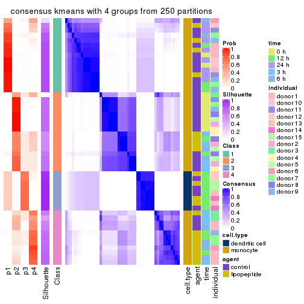
consensus_heatmap(res, k = 5)
consensus_heatmap(res, k = 6)
Heatmaps for the membership of samples in all partitions to see how consistent they are:
membership_heatmap(res, k = 2)
membership_heatmap(res, k = 3)
membership_heatmap(res, k = 4)

membership_heatmap(res, k = 5)
membership_heatmap(res, k = 6)
As soon as we have had the classes for columns, we can look for signatures which are significantly different between classes which can be candidate marks for certain classes. Following are the heatmaps for signatures.
Signature heatmaps where rows are scaled:
get_signatures(res, k = 2)
get_signatures(res, k = 3)
get_signatures(res, k = 4)

get_signatures(res, k = 5)
get_signatures(res, k = 6)

Signature heatmaps where rows are not scaled:
get_signatures(res, k = 2, scale_rows = FALSE)
get_signatures(res, k = 3, scale_rows = FALSE)
get_signatures(res, k = 4, scale_rows = FALSE)
get_signatures(res, k = 5, scale_rows = FALSE)
get_signatures(res, k = 6, scale_rows = FALSE)
Compare the overlap of signatures from different k:
compare_signatures(res)
get_signature() returns a data frame invisibly. TO get the list of signatures, the function
call should be assigned to a variable explicitly. In following code, if plot argument is set
to FALSE, no heatmap is plotted while only the differential analysis is performed.
# code only for demonstration
tb = get_signature(res, k = ..., plot = FALSE)
An example of the output of tb is:
#> which_row fdr mean_1 mean_2 scaled_mean_1 scaled_mean_2 km
#> 1 38 0.042760348 8.373488 9.131774 -0.5533452 0.5164555 1
#> 2 40 0.018707592 7.106213 8.469186 -0.6173731 0.5762149 1
#> 3 55 0.019134737 10.221463 11.207825 -0.6159697 0.5749050 1
#> 4 59 0.006059896 5.921854 7.869574 -0.6899429 0.6439467 1
#> 5 60 0.018055526 8.928898 10.211722 -0.6204761 0.5791110 1
#> 6 98 0.009384629 15.714769 14.887706 0.6635654 -0.6193277 2
...
The columns in tb are:
which_row: row indices corresponding to the input matrix.fdr: FDR for the differential test. mean_x: The mean value in group x.scaled_mean_x: The mean value in group x after rows are scaled.km: Row groups if k-means clustering is applied to rows.UMAP plot which shows how samples are separated.
dimension_reduction(res, k = 2, method = "UMAP")
dimension_reduction(res, k = 3, method = "UMAP")
dimension_reduction(res, k = 4, method = "UMAP")
dimension_reduction(res, k = 5, method = "UMAP")
dimension_reduction(res, k = 6, method = "UMAP")

Following heatmap shows how subgroups are split when increasing k:
collect_classes(res)
Test correlation between subgroups and known annotations. If the known annotation is numeric, one-way ANOVA test is applied, and if the known annotation is discrete, chi-squared contingency table test is applied.
test_to_known_factors(res)
#> n cell.type(p) agent(p) time(p) individual(p) k
#> MAD:kmeans 50 3.11e-03 0.6852 9.25e-05 2.11e-02 2
#> MAD:kmeans 27 1.97e-01 0.2231 3.19e-03 1.02e-03 3
#> MAD:kmeans 47 3.48e-10 0.0353 3.44e-07 3.79e-06 4
#> MAD:kmeans 48 2.13e-10 0.0286 6.12e-07 4.72e-06 5
#> MAD:kmeans 40 1.49e-07 0.1983 1.19e-07 3.84e-05 6
If matrix rows can be associated to genes, consider to use functional_enrichment(res,
...) to perform function enrichment for the signature genes. See this vignette for more detailed explanations.
The object with results only for a single top-value method and a single partition method can be extracted as:
res = res_list["MAD", "skmeans"]
# you can also extract it by
# res = res_list["MAD:skmeans"]
A summary of res and all the functions that can be applied to it:
res
#> A 'ConsensusPartition' object with k = 2, 3, 4, 5, 6.
#> On a matrix with 21168 rows and 50 columns.
#> Top rows (1000, 2000, 3000, 4000, 5000) are extracted by 'MAD' method.
#> Subgroups are detected by 'skmeans' method.
#> Performed in total 1250 partitions by row resampling.
#> Best k for subgroups seems to be 2.
#>
#> Following methods can be applied to this 'ConsensusPartition' object:
#> [1] "cola_report" "collect_classes" "collect_plots"
#> [4] "collect_stats" "colnames" "compare_signatures"
#> [7] "consensus_heatmap" "dimension_reduction" "functional_enrichment"
#> [10] "get_anno_col" "get_anno" "get_classes"
#> [13] "get_consensus" "get_matrix" "get_membership"
#> [16] "get_param" "get_signatures" "get_stats"
#> [19] "is_best_k" "is_stable_k" "membership_heatmap"
#> [22] "ncol" "nrow" "plot_ecdf"
#> [25] "rownames" "select_partition_number" "show"
#> [28] "suggest_best_k" "test_to_known_factors"
collect_plots() function collects all the plots made from res for all k (number of partitions)
into one single page to provide an easy and fast comparison between different k.
collect_plots(res)
The plots are:
k and the heatmap of
predicted classes for each k.k.k.k.All the plots in panels can be made by individual functions and they are plotted later in this section.
select_partition_number() produces several plots showing different
statistics for choosing “optimized” k. There are following statistics:
k;k, the area increased is defined as \(A_k - A_{k-1}\).The detailed explanations of these statistics can be found in the cola vignette.
Generally speaking, lower PAC score, higher mean silhouette score or higher
concordance corresponds to better partition. Rand index and Jaccard index
measure how similar the current partition is compared to partition with k-1.
If they are too similar, we won't accept k is better than k-1.
select_partition_number(res)
The numeric values for all these statistics can be obtained by get_stats().
get_stats(res)
#> k 1-PAC mean_silhouette concordance area_increased Rand Jaccard
#> 2 2 1.000 1.000 1.000 0.5074 0.493 0.493
#> 3 3 0.833 0.886 0.934 0.3114 0.799 0.608
#> 4 4 0.705 0.800 0.870 0.1348 0.891 0.682
#> 5 5 0.747 0.711 0.756 0.0661 0.939 0.753
#> 6 6 0.760 0.698 0.813 0.0423 0.953 0.762
suggest_best_k() suggests the best \(k\) based on these statistics. The rules are as follows:
suggest_best_k(res)
#> [1] 2
Following shows the table of the partitions (You need to click the show/hide
code output link to see it). The membership matrix (columns with name p*)
is inferred by
clue::cl_consensus()
function with the SE method. Basically the value in the membership matrix
represents the probability to belong to a certain group. The finall class
label for an item is determined with the group with highest probability it
belongs to.
In get_classes() function, the entropy is calculated from the membership
matrix and the silhouette score is calculated from the consensus matrix.
cbind(get_classes(res, k = 2), get_membership(res, k = 2))
#> class entropy silhouette p1 p2
#> GSM225374 1 0 1 1 0
#> GSM225349 2 0 1 0 1
#> GSM225367 2 0 1 0 1
#> GSM225356 2 0 1 0 1
#> GSM225353 2 0 1 0 1
#> GSM225653 2 0 1 0 1
#> GSM209847 2 0 1 0 1
#> GSM225658 2 0 1 0 1
#> GSM225370 1 0 1 1 0
#> GSM225364 2 0 1 0 1
#> GSM225645 2 0 1 0 1
#> GSM225350 2 0 1 0 1
#> GSM225368 2 0 1 0 1
#> GSM225357 2 0 1 0 1
#> GSM225651 2 0 1 0 1
#> GSM225354 2 0 1 0 1
#> GSM225360 1 0 1 1 0
#> GSM225657 1 0 1 1 0
#> GSM225377 1 0 1 1 0
#> GSM225656 1 0 1 1 0
#> GSM225347 2 0 1 0 1
#> GSM225660 1 0 1 1 0
#> GSM225712 1 0 1 1 0
#> GSM225663 1 0 1 1 0
#> GSM225373 1 0 1 1 0
#> GSM225366 1 0 1 1 0
#> GSM225380 2 0 1 0 1
#> GSM225351 2 0 1 0 1
#> GSM225369 2 0 1 0 1
#> GSM225358 2 0 1 0 1
#> GSM225649 2 0 1 0 1
#> GSM225355 2 0 1 0 1
#> GSM225361 2 0 1 0 1
#> GSM225655 2 0 1 0 1
#> GSM225376 2 0 1 0 1
#> GSM225654 2 0 1 0 1
#> GSM225348 2 0 1 0 1
#> GSM225659 2 0 1 0 1
#> GSM225378 1 0 1 1 0
#> GSM225661 1 0 1 1 0
#> GSM225372 1 0 1 1 0
#> GSM225365 1 0 1 1 0
#> GSM225860 1 0 1 1 0
#> GSM225875 1 0 1 1 0
#> GSM225878 1 0 1 1 0
#> GSM225885 1 0 1 1 0
#> GSM225867 1 0 1 1 0
#> GSM225871 1 0 1 1 0
#> GSM225881 1 0 1 1 0
#> GSM225887 1 0 1 1 0
cbind(get_classes(res, k = 3), get_membership(res, k = 3))
#> class entropy silhouette p1 p2 p3
#> GSM225374 1 0.2625 0.899 0.916 0.084 0.000
#> GSM225349 2 0.0000 0.924 0.000 1.000 0.000
#> GSM225367 3 0.6111 0.496 0.000 0.396 0.604
#> GSM225356 2 0.0000 0.924 0.000 1.000 0.000
#> GSM225353 2 0.0000 0.924 0.000 1.000 0.000
#> GSM225653 2 0.0000 0.924 0.000 1.000 0.000
#> GSM209847 2 0.0000 0.924 0.000 1.000 0.000
#> GSM225658 2 0.0000 0.924 0.000 1.000 0.000
#> GSM225370 1 0.0000 0.973 1.000 0.000 0.000
#> GSM225364 2 0.0000 0.924 0.000 1.000 0.000
#> GSM225645 3 0.4121 0.803 0.000 0.168 0.832
#> GSM225350 2 0.1031 0.921 0.000 0.976 0.024
#> GSM225368 3 0.4842 0.752 0.000 0.224 0.776
#> GSM225357 2 0.0747 0.923 0.000 0.984 0.016
#> GSM225651 3 0.3192 0.840 0.000 0.112 0.888
#> GSM225354 2 0.0892 0.922 0.000 0.980 0.020
#> GSM225360 3 0.5706 0.546 0.320 0.000 0.680
#> GSM225657 1 0.2878 0.887 0.904 0.096 0.000
#> GSM225377 1 0.0000 0.973 1.000 0.000 0.000
#> GSM225656 1 0.0000 0.973 1.000 0.000 0.000
#> GSM225347 2 0.2492 0.905 0.016 0.936 0.048
#> GSM225660 1 0.0000 0.973 1.000 0.000 0.000
#> GSM225712 1 0.0000 0.973 1.000 0.000 0.000
#> GSM225663 1 0.0000 0.973 1.000 0.000 0.000
#> GSM225373 1 0.0000 0.973 1.000 0.000 0.000
#> GSM225366 1 0.4291 0.795 0.820 0.000 0.180
#> GSM225380 3 0.1411 0.865 0.000 0.036 0.964
#> GSM225351 2 0.4605 0.805 0.000 0.796 0.204
#> GSM225369 3 0.1753 0.864 0.000 0.048 0.952
#> GSM225358 2 0.5291 0.725 0.000 0.732 0.268
#> GSM225649 3 0.1031 0.866 0.000 0.024 0.976
#> GSM225355 2 0.4605 0.805 0.000 0.796 0.204
#> GSM225361 3 0.0892 0.865 0.000 0.020 0.980
#> GSM225655 3 0.1643 0.857 0.000 0.044 0.956
#> GSM225376 3 0.0892 0.865 0.000 0.020 0.980
#> GSM225654 3 0.0892 0.865 0.000 0.020 0.980
#> GSM225348 2 0.4605 0.805 0.000 0.796 0.204
#> GSM225659 3 0.1878 0.856 0.004 0.044 0.952
#> GSM225378 1 0.0000 0.973 1.000 0.000 0.000
#> GSM225661 1 0.0592 0.968 0.988 0.000 0.012
#> GSM225372 3 0.5591 0.592 0.304 0.000 0.696
#> GSM225365 1 0.0000 0.973 1.000 0.000 0.000
#> GSM225860 1 0.0892 0.972 0.980 0.000 0.020
#> GSM225875 1 0.0892 0.972 0.980 0.000 0.020
#> GSM225878 1 0.0892 0.972 0.980 0.000 0.020
#> GSM225885 1 0.0892 0.972 0.980 0.000 0.020
#> GSM225867 1 0.0892 0.972 0.980 0.000 0.020
#> GSM225871 1 0.0892 0.972 0.980 0.000 0.020
#> GSM225881 1 0.0892 0.972 0.980 0.000 0.020
#> GSM225887 1 0.0892 0.972 0.980 0.000 0.020
cbind(get_classes(res, k = 4), get_membership(res, k = 4))
#> class entropy silhouette p1 p2 p3 p4
#> GSM225374 1 0.1191 0.91136 0.968 0.024 0.004 0.004
#> GSM225349 2 0.0188 0.82126 0.000 0.996 0.000 0.004
#> GSM225367 4 0.5399 0.38232 0.012 0.468 0.000 0.520
#> GSM225356 2 0.0188 0.82126 0.000 0.996 0.000 0.004
#> GSM225353 2 0.0336 0.81987 0.000 0.992 0.000 0.008
#> GSM225653 2 0.0817 0.81136 0.000 0.976 0.000 0.024
#> GSM209847 2 0.0188 0.82126 0.000 0.996 0.000 0.004
#> GSM225658 2 0.0707 0.81410 0.000 0.980 0.000 0.020
#> GSM225370 1 0.0188 0.92857 0.996 0.000 0.004 0.000
#> GSM225364 2 0.0707 0.81410 0.000 0.980 0.000 0.020
#> GSM225645 4 0.4134 0.69491 0.000 0.260 0.000 0.740
#> GSM225350 2 0.3533 0.81631 0.000 0.864 0.056 0.080
#> GSM225368 4 0.4564 0.62335 0.000 0.328 0.000 0.672
#> GSM225357 2 0.3439 0.81704 0.000 0.868 0.048 0.084
#> GSM225651 4 0.3726 0.73162 0.000 0.212 0.000 0.788
#> GSM225354 2 0.3916 0.81128 0.004 0.848 0.056 0.092
#> GSM225360 4 0.7661 0.00685 0.376 0.000 0.212 0.412
#> GSM225657 1 0.1211 0.90965 0.960 0.000 0.040 0.000
#> GSM225377 1 0.2053 0.88508 0.924 0.000 0.072 0.004
#> GSM225656 1 0.0188 0.92867 0.996 0.000 0.004 0.000
#> GSM225347 2 0.5546 0.77435 0.044 0.768 0.056 0.132
#> GSM225660 1 0.0188 0.92867 0.996 0.000 0.004 0.000
#> GSM225712 1 0.0336 0.92858 0.992 0.000 0.008 0.000
#> GSM225663 1 0.0336 0.92858 0.992 0.000 0.008 0.000
#> GSM225373 1 0.0188 0.92857 0.996 0.000 0.004 0.000
#> GSM225366 3 0.3687 0.84605 0.064 0.000 0.856 0.080
#> GSM225380 4 0.2281 0.78001 0.000 0.096 0.000 0.904
#> GSM225351 2 0.5769 0.67429 0.000 0.652 0.056 0.292
#> GSM225369 4 0.2589 0.77558 0.000 0.116 0.000 0.884
#> GSM225358 2 0.6214 0.47996 0.000 0.536 0.056 0.408
#> GSM225649 4 0.1792 0.78200 0.000 0.068 0.000 0.932
#> GSM225355 2 0.5769 0.67524 0.000 0.652 0.056 0.292
#> GSM225361 4 0.0524 0.77090 0.000 0.004 0.008 0.988
#> GSM225655 4 0.2919 0.73439 0.000 0.044 0.060 0.896
#> GSM225376 4 0.0707 0.76862 0.000 0.000 0.020 0.980
#> GSM225654 4 0.2234 0.75161 0.004 0.008 0.064 0.924
#> GSM225348 2 0.5745 0.67961 0.000 0.656 0.056 0.288
#> GSM225659 4 0.4407 0.68513 0.016 0.076 0.076 0.832
#> GSM225378 1 0.1743 0.90369 0.940 0.000 0.056 0.004
#> GSM225661 1 0.4542 0.71501 0.752 0.000 0.228 0.020
#> GSM225372 1 0.6560 0.52653 0.620 0.000 0.132 0.248
#> GSM225365 1 0.0336 0.92858 0.992 0.000 0.008 0.000
#> GSM225860 3 0.2408 0.98172 0.104 0.000 0.896 0.000
#> GSM225875 3 0.2408 0.98172 0.104 0.000 0.896 0.000
#> GSM225878 3 0.2408 0.98172 0.104 0.000 0.896 0.000
#> GSM225885 3 0.2408 0.98172 0.104 0.000 0.896 0.000
#> GSM225867 3 0.2408 0.98172 0.104 0.000 0.896 0.000
#> GSM225871 3 0.2408 0.98172 0.104 0.000 0.896 0.000
#> GSM225881 3 0.2408 0.98172 0.104 0.000 0.896 0.000
#> GSM225887 3 0.2408 0.98172 0.104 0.000 0.896 0.000
cbind(get_classes(res, k = 5), get_membership(res, k = 5))
#> class entropy silhouette p1 p2 p3 p4 p5
#> GSM225374 1 0.0290 0.8613 0.992 0.000 0.000 0.000 0.008
#> GSM225349 5 0.4307 0.7030 0.000 0.500 0.000 0.000 0.500
#> GSM225367 5 0.5273 0.0802 0.000 0.060 0.000 0.352 0.588
#> GSM225356 5 0.4304 0.7241 0.000 0.484 0.000 0.000 0.516
#> GSM225353 5 0.4803 0.7572 0.000 0.444 0.000 0.020 0.536
#> GSM225653 5 0.5215 0.7467 0.000 0.352 0.000 0.056 0.592
#> GSM209847 5 0.4307 0.7027 0.000 0.500 0.000 0.000 0.500
#> GSM225658 5 0.4909 0.7701 0.000 0.380 0.000 0.032 0.588
#> GSM225370 1 0.0794 0.8592 0.972 0.000 0.000 0.000 0.028
#> GSM225364 5 0.4909 0.7701 0.000 0.380 0.000 0.032 0.588
#> GSM225645 4 0.4509 0.5849 0.000 0.048 0.000 0.716 0.236
#> GSM225350 2 0.1544 0.7951 0.000 0.932 0.000 0.000 0.068
#> GSM225368 4 0.5095 0.3383 0.000 0.040 0.000 0.560 0.400
#> GSM225357 2 0.2574 0.7322 0.000 0.876 0.000 0.012 0.112
#> GSM225651 4 0.4065 0.6291 0.000 0.048 0.000 0.772 0.180
#> GSM225354 2 0.1341 0.8092 0.000 0.944 0.000 0.000 0.056
#> GSM225360 4 0.7752 0.3247 0.224 0.000 0.120 0.480 0.176
#> GSM225657 1 0.1220 0.8595 0.964 0.008 0.004 0.004 0.020
#> GSM225377 1 0.3791 0.7940 0.836 0.000 0.060 0.024 0.080
#> GSM225656 1 0.0932 0.8616 0.972 0.004 0.000 0.004 0.020
#> GSM225347 2 0.2036 0.8137 0.056 0.920 0.000 0.000 0.024
#> GSM225660 1 0.0833 0.8623 0.976 0.004 0.000 0.004 0.016
#> GSM225712 1 0.0609 0.8607 0.980 0.000 0.000 0.000 0.020
#> GSM225663 1 0.0671 0.8627 0.980 0.004 0.000 0.000 0.016
#> GSM225373 1 0.0609 0.8607 0.980 0.000 0.000 0.000 0.020
#> GSM225366 3 0.7494 0.2096 0.032 0.016 0.452 0.176 0.324
#> GSM225380 4 0.2573 0.6780 0.000 0.016 0.000 0.880 0.104
#> GSM225351 2 0.1502 0.8523 0.000 0.940 0.000 0.056 0.004
#> GSM225369 4 0.3759 0.6361 0.000 0.016 0.000 0.764 0.220
#> GSM225358 2 0.3194 0.7479 0.000 0.832 0.000 0.148 0.020
#> GSM225649 4 0.2079 0.6860 0.000 0.020 0.000 0.916 0.064
#> GSM225355 2 0.1502 0.8523 0.000 0.940 0.000 0.056 0.004
#> GSM225361 4 0.2153 0.6858 0.000 0.044 0.000 0.916 0.040
#> GSM225655 4 0.6269 0.4836 0.000 0.232 0.012 0.584 0.172
#> GSM225376 4 0.3431 0.6606 0.000 0.020 0.008 0.828 0.144
#> GSM225654 4 0.6226 0.5162 0.000 0.148 0.012 0.580 0.260
#> GSM225348 2 0.1740 0.8466 0.000 0.932 0.000 0.056 0.012
#> GSM225659 4 0.7047 0.3729 0.004 0.232 0.012 0.452 0.300
#> GSM225378 1 0.4361 0.7550 0.784 0.000 0.052 0.020 0.144
#> GSM225661 1 0.7904 0.3132 0.408 0.004 0.160 0.096 0.332
#> GSM225372 1 0.7724 -0.0321 0.336 0.004 0.040 0.320 0.300
#> GSM225365 1 0.0671 0.8627 0.980 0.004 0.000 0.000 0.016
#> GSM225860 3 0.0404 0.9330 0.012 0.000 0.988 0.000 0.000
#> GSM225875 3 0.0404 0.9330 0.012 0.000 0.988 0.000 0.000
#> GSM225878 3 0.0404 0.9330 0.012 0.000 0.988 0.000 0.000
#> GSM225885 3 0.0404 0.9330 0.012 0.000 0.988 0.000 0.000
#> GSM225867 3 0.0404 0.9330 0.012 0.000 0.988 0.000 0.000
#> GSM225871 3 0.0404 0.9330 0.012 0.000 0.988 0.000 0.000
#> GSM225881 3 0.0404 0.9330 0.012 0.000 0.988 0.000 0.000
#> GSM225887 3 0.0404 0.9330 0.012 0.000 0.988 0.000 0.000
cbind(get_classes(res, k = 6), get_membership(res, k = 6))
#> class entropy silhouette p1 p2 p3 p4 p5 p6
#> GSM225374 1 0.3112 0.8068 0.836 0.000 0.000 0.096 0.000 0.068
#> GSM225349 6 0.3309 0.7566 0.000 0.280 0.000 0.000 0.000 0.720
#> GSM225367 6 0.4863 0.2232 0.000 0.000 0.000 0.092 0.284 0.624
#> GSM225356 6 0.3126 0.7807 0.000 0.248 0.000 0.000 0.000 0.752
#> GSM225353 6 0.3441 0.7969 0.000 0.188 0.000 0.004 0.024 0.784
#> GSM225653 6 0.3323 0.8014 0.000 0.128 0.000 0.012 0.036 0.824
#> GSM209847 6 0.3330 0.7518 0.000 0.284 0.000 0.000 0.000 0.716
#> GSM225658 6 0.3013 0.8096 0.000 0.140 0.000 0.004 0.024 0.832
#> GSM225370 1 0.2999 0.8092 0.840 0.000 0.000 0.112 0.000 0.048
#> GSM225364 6 0.2892 0.8103 0.000 0.136 0.000 0.004 0.020 0.840
#> GSM225645 5 0.2826 0.6413 0.000 0.000 0.000 0.028 0.844 0.128
#> GSM225350 2 0.2989 0.7498 0.000 0.812 0.000 0.008 0.004 0.176
#> GSM225368 5 0.4939 0.4977 0.000 0.000 0.000 0.096 0.612 0.292
#> GSM225357 2 0.4328 0.6667 0.008 0.720 0.000 0.012 0.032 0.228
#> GSM225651 5 0.1951 0.6563 0.000 0.000 0.000 0.016 0.908 0.076
#> GSM225354 2 0.2333 0.8000 0.004 0.872 0.000 0.004 0.000 0.120
#> GSM225360 5 0.8307 0.0402 0.140 0.004 0.080 0.312 0.340 0.124
#> GSM225657 1 0.1750 0.7958 0.932 0.016 0.000 0.040 0.000 0.012
#> GSM225377 1 0.6682 0.5148 0.524 0.000 0.048 0.300 0.060 0.068
#> GSM225656 1 0.1210 0.8112 0.960 0.008 0.008 0.020 0.000 0.004
#> GSM225347 2 0.1401 0.8396 0.020 0.948 0.000 0.004 0.000 0.028
#> GSM225660 1 0.0912 0.8136 0.972 0.008 0.004 0.012 0.000 0.004
#> GSM225712 1 0.3585 0.7909 0.792 0.000 0.004 0.156 0.000 0.048
#> GSM225663 1 0.0551 0.8158 0.984 0.004 0.008 0.004 0.000 0.000
#> GSM225373 1 0.3656 0.7867 0.784 0.000 0.004 0.164 0.000 0.048
#> GSM225366 4 0.4952 0.5049 0.024 0.004 0.220 0.684 0.068 0.000
#> GSM225380 5 0.1970 0.6514 0.000 0.028 0.000 0.008 0.920 0.044
#> GSM225351 2 0.1369 0.8459 0.000 0.952 0.000 0.016 0.016 0.016
#> GSM225369 5 0.3946 0.6199 0.000 0.004 0.000 0.076 0.768 0.152
#> GSM225358 2 0.4128 0.7138 0.000 0.776 0.000 0.032 0.136 0.056
#> GSM225649 5 0.1434 0.6423 0.000 0.020 0.000 0.024 0.948 0.008
#> GSM225355 2 0.0862 0.8444 0.000 0.972 0.000 0.016 0.008 0.004
#> GSM225361 5 0.3917 0.5631 0.000 0.040 0.000 0.140 0.788 0.032
#> GSM225655 5 0.6362 -0.2244 0.000 0.268 0.000 0.336 0.384 0.012
#> GSM225376 5 0.3970 0.4547 0.004 0.036 0.000 0.196 0.756 0.008
#> GSM225654 4 0.5828 0.3167 0.000 0.156 0.000 0.524 0.308 0.012
#> GSM225348 2 0.1036 0.8412 0.000 0.964 0.000 0.024 0.008 0.004
#> GSM225659 4 0.5808 0.4427 0.012 0.176 0.000 0.588 0.216 0.008
#> GSM225378 1 0.5903 0.4378 0.504 0.000 0.052 0.380 0.004 0.060
#> GSM225661 4 0.4823 0.4444 0.256 0.000 0.068 0.664 0.008 0.004
#> GSM225372 4 0.5844 0.3995 0.152 0.000 0.008 0.640 0.148 0.052
#> GSM225365 1 0.0984 0.8151 0.968 0.008 0.012 0.012 0.000 0.000
#> GSM225860 3 0.0000 1.0000 0.000 0.000 1.000 0.000 0.000 0.000
#> GSM225875 3 0.0000 1.0000 0.000 0.000 1.000 0.000 0.000 0.000
#> GSM225878 3 0.0000 1.0000 0.000 0.000 1.000 0.000 0.000 0.000
#> GSM225885 3 0.0000 1.0000 0.000 0.000 1.000 0.000 0.000 0.000
#> GSM225867 3 0.0000 1.0000 0.000 0.000 1.000 0.000 0.000 0.000
#> GSM225871 3 0.0000 1.0000 0.000 0.000 1.000 0.000 0.000 0.000
#> GSM225881 3 0.0000 1.0000 0.000 0.000 1.000 0.000 0.000 0.000
#> GSM225887 3 0.0000 1.0000 0.000 0.000 1.000 0.000 0.000 0.000
Heatmaps for the consensus matrix. It visualizes the probability of two samples to be in a same group.
consensus_heatmap(res, k = 2)

consensus_heatmap(res, k = 3)
consensus_heatmap(res, k = 4)
consensus_heatmap(res, k = 5)
consensus_heatmap(res, k = 6)
Heatmaps for the membership of samples in all partitions to see how consistent they are:
membership_heatmap(res, k = 2)
membership_heatmap(res, k = 3)
membership_heatmap(res, k = 4)
membership_heatmap(res, k = 5)
membership_heatmap(res, k = 6)
As soon as we have had the classes for columns, we can look for signatures which are significantly different between classes which can be candidate marks for certain classes. Following are the heatmaps for signatures.
Signature heatmaps where rows are scaled:
get_signatures(res, k = 2)

get_signatures(res, k = 3)
get_signatures(res, k = 4)
get_signatures(res, k = 5)
get_signatures(res, k = 6)
Signature heatmaps where rows are not scaled:
get_signatures(res, k = 2, scale_rows = FALSE)

get_signatures(res, k = 3, scale_rows = FALSE)
get_signatures(res, k = 4, scale_rows = FALSE)
get_signatures(res, k = 5, scale_rows = FALSE)
get_signatures(res, k = 6, scale_rows = FALSE)
Compare the overlap of signatures from different k:
compare_signatures(res)
get_signature() returns a data frame invisibly. TO get the list of signatures, the function
call should be assigned to a variable explicitly. In following code, if plot argument is set
to FALSE, no heatmap is plotted while only the differential analysis is performed.
# code only for demonstration
tb = get_signature(res, k = ..., plot = FALSE)
An example of the output of tb is:
#> which_row fdr mean_1 mean_2 scaled_mean_1 scaled_mean_2 km
#> 1 38 0.042760348 8.373488 9.131774 -0.5533452 0.5164555 1
#> 2 40 0.018707592 7.106213 8.469186 -0.6173731 0.5762149 1
#> 3 55 0.019134737 10.221463 11.207825 -0.6159697 0.5749050 1
#> 4 59 0.006059896 5.921854 7.869574 -0.6899429 0.6439467 1
#> 5 60 0.018055526 8.928898 10.211722 -0.6204761 0.5791110 1
#> 6 98 0.009384629 15.714769 14.887706 0.6635654 -0.6193277 2
...
The columns in tb are:
which_row: row indices corresponding to the input matrix.fdr: FDR for the differential test. mean_x: The mean value in group x.scaled_mean_x: The mean value in group x after rows are scaled.km: Row groups if k-means clustering is applied to rows.UMAP plot which shows how samples are separated.
dimension_reduction(res, k = 2, method = "UMAP")

dimension_reduction(res, k = 3, method = "UMAP")
dimension_reduction(res, k = 4, method = "UMAP")
dimension_reduction(res, k = 5, method = "UMAP")
dimension_reduction(res, k = 6, method = "UMAP")
Following heatmap shows how subgroups are split when increasing k:
collect_classes(res)
Test correlation between subgroups and known annotations. If the known annotation is numeric, one-way ANOVA test is applied, and if the known annotation is discrete, chi-squared contingency table test is applied.
test_to_known_factors(res)
#> n cell.type(p) agent(p) time(p) individual(p) k
#> MAD:skmeans 50 3.11e-03 0.6852 9.25e-05 2.11e-02 2
#> MAD:skmeans 49 1.71e-03 0.0480 6.31e-05 6.74e-04 3
#> MAD:skmeans 47 7.55e-09 0.0595 2.97e-06 1.08e-05 4
#> MAD:skmeans 42 1.67e-08 0.0194 1.12e-08 1.08e-03 5
#> MAD:skmeans 40 1.49e-07 0.0409 1.46e-08 2.90e-03 6
If matrix rows can be associated to genes, consider to use functional_enrichment(res,
...) to perform function enrichment for the signature genes. See this vignette for more detailed explanations.
The object with results only for a single top-value method and a single partition method can be extracted as:
res = res_list["MAD", "pam"]
# you can also extract it by
# res = res_list["MAD:pam"]
A summary of res and all the functions that can be applied to it:
res
#> A 'ConsensusPartition' object with k = 2, 3, 4, 5, 6.
#> On a matrix with 21168 rows and 50 columns.
#> Top rows (1000, 2000, 3000, 4000, 5000) are extracted by 'MAD' method.
#> Subgroups are detected by 'pam' method.
#> Performed in total 1250 partitions by row resampling.
#> Best k for subgroups seems to be 4.
#>
#> Following methods can be applied to this 'ConsensusPartition' object:
#> [1] "cola_report" "collect_classes" "collect_plots"
#> [4] "collect_stats" "colnames" "compare_signatures"
#> [7] "consensus_heatmap" "dimension_reduction" "functional_enrichment"
#> [10] "get_anno_col" "get_anno" "get_classes"
#> [13] "get_consensus" "get_matrix" "get_membership"
#> [16] "get_param" "get_signatures" "get_stats"
#> [19] "is_best_k" "is_stable_k" "membership_heatmap"
#> [22] "ncol" "nrow" "plot_ecdf"
#> [25] "rownames" "select_partition_number" "show"
#> [28] "suggest_best_k" "test_to_known_factors"
collect_plots() function collects all the plots made from res for all k (number of partitions)
into one single page to provide an easy and fast comparison between different k.
collect_plots(res)
The plots are:
k and the heatmap of
predicted classes for each k.k.k.k.All the plots in panels can be made by individual functions and they are plotted later in this section.
select_partition_number() produces several plots showing different
statistics for choosing “optimized” k. There are following statistics:
k;k, the area increased is defined as \(A_k - A_{k-1}\).The detailed explanations of these statistics can be found in the cola vignette.
Generally speaking, lower PAC score, higher mean silhouette score or higher
concordance corresponds to better partition. Rand index and Jaccard index
measure how similar the current partition is compared to partition with k-1.
If they are too similar, we won't accept k is better than k-1.
select_partition_number(res)
The numeric values for all these statistics can be obtained by get_stats().
get_stats(res)
#> k 1-PAC mean_silhouette concordance area_increased Rand Jaccard
#> 2 2 0.505 0.716 0.857 0.4136 0.503 0.503
#> 3 3 0.822 0.951 0.970 0.5155 0.739 0.539
#> 4 4 0.909 0.938 0.973 0.1901 0.837 0.583
#> 5 5 0.813 0.579 0.800 0.0666 0.882 0.581
#> 6 6 0.831 0.817 0.881 0.0419 0.920 0.637
suggest_best_k() suggests the best \(k\) based on these statistics. The rules are as follows:
suggest_best_k(res)
#> [1] 4
Following shows the table of the partitions (You need to click the show/hide
code output link to see it). The membership matrix (columns with name p*)
is inferred by
clue::cl_consensus()
function with the SE method. Basically the value in the membership matrix
represents the probability to belong to a certain group. The finall class
label for an item is determined with the group with highest probability it
belongs to.
In get_classes() function, the entropy is calculated from the membership
matrix and the silhouette score is calculated from the consensus matrix.
cbind(get_classes(res, k = 2), get_membership(res, k = 2))
#> class entropy silhouette p1 p2
#> GSM225374 1 0.9732 0.6686 0.596 0.404
#> GSM225349 2 0.0000 0.8981 0.000 1.000
#> GSM225367 2 0.1414 0.8795 0.020 0.980
#> GSM225356 2 0.0000 0.8981 0.000 1.000
#> GSM225353 2 0.0000 0.8981 0.000 1.000
#> GSM225653 2 0.0000 0.8981 0.000 1.000
#> GSM209847 2 0.0000 0.8981 0.000 1.000
#> GSM225658 2 0.0000 0.8981 0.000 1.000
#> GSM225370 1 0.9732 0.6686 0.596 0.404
#> GSM225364 2 0.0000 0.8981 0.000 1.000
#> GSM225645 2 0.0672 0.8926 0.008 0.992
#> GSM225350 2 0.0000 0.8981 0.000 1.000
#> GSM225368 2 0.0000 0.8981 0.000 1.000
#> GSM225357 2 0.0000 0.8981 0.000 1.000
#> GSM225651 2 0.0938 0.8892 0.012 0.988
#> GSM225354 2 0.0000 0.8981 0.000 1.000
#> GSM225360 2 0.9988 -0.3897 0.480 0.520
#> GSM225657 2 0.9795 -0.1444 0.416 0.584
#> GSM225377 1 0.9732 0.6686 0.596 0.404
#> GSM225656 1 0.9732 0.6686 0.596 0.404
#> GSM225347 2 0.0000 0.8981 0.000 1.000
#> GSM225660 1 0.9732 0.6686 0.596 0.404
#> GSM225712 1 0.9393 0.6709 0.644 0.356
#> GSM225663 1 0.9710 0.6702 0.600 0.400
#> GSM225373 1 0.9710 0.6702 0.600 0.400
#> GSM225366 1 0.9933 0.5596 0.548 0.452
#> GSM225380 2 0.0000 0.8981 0.000 1.000
#> GSM225351 2 0.0000 0.8981 0.000 1.000
#> GSM225369 2 0.0000 0.8981 0.000 1.000
#> GSM225358 2 0.0000 0.8981 0.000 1.000
#> GSM225649 2 0.0672 0.8926 0.008 0.992
#> GSM225355 2 0.0000 0.8981 0.000 1.000
#> GSM225361 2 0.7056 0.6352 0.192 0.808
#> GSM225655 2 0.0000 0.8981 0.000 1.000
#> GSM225376 2 0.9635 -0.0134 0.388 0.612
#> GSM225654 2 0.7299 0.6104 0.204 0.796
#> GSM225348 2 0.0000 0.8981 0.000 1.000
#> GSM225659 2 0.7056 0.6352 0.192 0.808
#> GSM225378 1 0.9732 0.6686 0.596 0.404
#> GSM225661 1 0.9732 0.6686 0.596 0.404
#> GSM225372 1 0.9732 0.6686 0.596 0.404
#> GSM225365 1 0.9732 0.6686 0.596 0.404
#> GSM225860 1 0.0000 0.6577 1.000 0.000
#> GSM225875 1 0.0000 0.6577 1.000 0.000
#> GSM225878 1 0.0000 0.6577 1.000 0.000
#> GSM225885 1 0.0000 0.6577 1.000 0.000
#> GSM225867 1 0.0000 0.6577 1.000 0.000
#> GSM225871 1 0.0000 0.6577 1.000 0.000
#> GSM225881 1 0.0000 0.6577 1.000 0.000
#> GSM225887 1 0.0000 0.6577 1.000 0.000
cbind(get_classes(res, k = 3), get_membership(res, k = 3))
#> class entropy silhouette p1 p2 p3
#> GSM225374 1 0.0000 0.949 1.000 0.000 0.000
#> GSM225349 2 0.0000 0.969 0.000 1.000 0.000
#> GSM225367 2 0.0424 0.966 0.008 0.992 0.000
#> GSM225356 2 0.0000 0.969 0.000 1.000 0.000
#> GSM225353 2 0.0000 0.969 0.000 1.000 0.000
#> GSM225653 2 0.0747 0.965 0.016 0.984 0.000
#> GSM209847 2 0.0000 0.969 0.000 1.000 0.000
#> GSM225658 2 0.0000 0.969 0.000 1.000 0.000
#> GSM225370 1 0.0000 0.949 1.000 0.000 0.000
#> GSM225364 2 0.0000 0.969 0.000 1.000 0.000
#> GSM225645 2 0.3293 0.897 0.088 0.900 0.012
#> GSM225350 2 0.0000 0.969 0.000 1.000 0.000
#> GSM225368 2 0.0237 0.968 0.000 0.996 0.004
#> GSM225357 2 0.1411 0.954 0.036 0.964 0.000
#> GSM225651 2 0.4968 0.776 0.188 0.800 0.012
#> GSM225354 2 0.1289 0.957 0.032 0.968 0.000
#> GSM225360 1 0.2356 0.920 0.928 0.072 0.000
#> GSM225657 1 0.3038 0.900 0.896 0.104 0.000
#> GSM225377 1 0.0000 0.949 1.000 0.000 0.000
#> GSM225656 1 0.0000 0.949 1.000 0.000 0.000
#> GSM225347 2 0.1411 0.954 0.036 0.964 0.000
#> GSM225660 1 0.0000 0.949 1.000 0.000 0.000
#> GSM225712 1 0.0237 0.947 0.996 0.000 0.004
#> GSM225663 1 0.1411 0.923 0.964 0.000 0.036
#> GSM225373 1 0.0000 0.949 1.000 0.000 0.000
#> GSM225366 1 0.1753 0.932 0.952 0.048 0.000
#> GSM225380 2 0.0592 0.966 0.000 0.988 0.012
#> GSM225351 2 0.0000 0.969 0.000 1.000 0.000
#> GSM225369 2 0.0592 0.966 0.000 0.988 0.012
#> GSM225358 2 0.0592 0.966 0.000 0.988 0.012
#> GSM225649 2 0.3293 0.897 0.088 0.900 0.012
#> GSM225355 2 0.0000 0.969 0.000 1.000 0.000
#> GSM225361 1 0.3771 0.888 0.876 0.112 0.012
#> GSM225655 2 0.2229 0.946 0.044 0.944 0.012
#> GSM225376 1 0.3618 0.895 0.884 0.104 0.012
#> GSM225654 1 0.3771 0.888 0.876 0.112 0.012
#> GSM225348 2 0.0747 0.965 0.016 0.984 0.000
#> GSM225659 1 0.3771 0.888 0.876 0.112 0.012
#> GSM225378 1 0.0000 0.949 1.000 0.000 0.000
#> GSM225661 1 0.0000 0.949 1.000 0.000 0.000
#> GSM225372 1 0.0000 0.949 1.000 0.000 0.000
#> GSM225365 1 0.0000 0.949 1.000 0.000 0.000
#> GSM225860 3 0.0592 1.000 0.012 0.000 0.988
#> GSM225875 3 0.0592 1.000 0.012 0.000 0.988
#> GSM225878 3 0.0592 1.000 0.012 0.000 0.988
#> GSM225885 3 0.0592 1.000 0.012 0.000 0.988
#> GSM225867 3 0.0592 1.000 0.012 0.000 0.988
#> GSM225871 3 0.0592 1.000 0.012 0.000 0.988
#> GSM225881 3 0.0592 1.000 0.012 0.000 0.988
#> GSM225887 3 0.0592 1.000 0.012 0.000 0.988
cbind(get_classes(res, k = 4), get_membership(res, k = 4))
#> class entropy silhouette p1 p2 p3 p4
#> GSM225374 1 0.0000 0.983 1.00 0.000 0 0.000
#> GSM225349 2 0.0000 0.982 0.00 1.000 0 0.000
#> GSM225367 2 0.0000 0.982 0.00 1.000 0 0.000
#> GSM225356 2 0.0000 0.982 0.00 1.000 0 0.000
#> GSM225353 2 0.0000 0.982 0.00 1.000 0 0.000
#> GSM225653 2 0.0000 0.982 0.00 1.000 0 0.000
#> GSM209847 2 0.0000 0.982 0.00 1.000 0 0.000
#> GSM225658 2 0.0000 0.982 0.00 1.000 0 0.000
#> GSM225370 1 0.0000 0.983 1.00 0.000 0 0.000
#> GSM225364 2 0.0000 0.982 0.00 1.000 0 0.000
#> GSM225645 4 0.2647 0.849 0.00 0.120 0 0.880
#> GSM225350 2 0.0000 0.982 0.00 1.000 0 0.000
#> GSM225368 2 0.3219 0.781 0.00 0.836 0 0.164
#> GSM225357 2 0.0000 0.982 0.00 1.000 0 0.000
#> GSM225651 4 0.2647 0.849 0.00 0.120 0 0.880
#> GSM225354 2 0.0000 0.982 0.00 1.000 0 0.000
#> GSM225360 1 0.0000 0.983 1.00 0.000 0 0.000
#> GSM225657 1 0.0000 0.983 1.00 0.000 0 0.000
#> GSM225377 1 0.0000 0.983 1.00 0.000 0 0.000
#> GSM225656 1 0.0000 0.983 1.00 0.000 0 0.000
#> GSM225347 2 0.0000 0.982 0.00 1.000 0 0.000
#> GSM225660 1 0.0000 0.983 1.00 0.000 0 0.000
#> GSM225712 1 0.0000 0.983 1.00 0.000 0 0.000
#> GSM225663 1 0.0000 0.983 1.00 0.000 0 0.000
#> GSM225373 1 0.0000 0.983 1.00 0.000 0 0.000
#> GSM225366 1 0.2647 0.880 0.88 0.000 0 0.120
#> GSM225380 4 0.2647 0.849 0.00 0.120 0 0.880
#> GSM225351 2 0.0000 0.982 0.00 1.000 0 0.000
#> GSM225369 4 0.0707 0.892 0.00 0.020 0 0.980
#> GSM225358 4 0.4992 0.110 0.00 0.476 0 0.524
#> GSM225649 4 0.0000 0.896 0.00 0.000 0 1.000
#> GSM225355 2 0.0000 0.982 0.00 1.000 0 0.000
#> GSM225361 4 0.0000 0.896 0.00 0.000 0 1.000
#> GSM225655 4 0.0000 0.896 0.00 0.000 0 1.000
#> GSM225376 4 0.0000 0.896 0.00 0.000 0 1.000
#> GSM225654 4 0.0000 0.896 0.00 0.000 0 1.000
#> GSM225348 2 0.1867 0.907 0.00 0.928 0 0.072
#> GSM225659 4 0.0000 0.896 0.00 0.000 0 1.000
#> GSM225378 1 0.0000 0.983 1.00 0.000 0 0.000
#> GSM225661 1 0.2647 0.880 0.88 0.000 0 0.120
#> GSM225372 1 0.0000 0.983 1.00 0.000 0 0.000
#> GSM225365 1 0.0000 0.983 1.00 0.000 0 0.000
#> GSM225860 3 0.0000 1.000 0.00 0.000 1 0.000
#> GSM225875 3 0.0000 1.000 0.00 0.000 1 0.000
#> GSM225878 3 0.0000 1.000 0.00 0.000 1 0.000
#> GSM225885 3 0.0000 1.000 0.00 0.000 1 0.000
#> GSM225867 3 0.0000 1.000 0.00 0.000 1 0.000
#> GSM225871 3 0.0000 1.000 0.00 0.000 1 0.000
#> GSM225881 3 0.0000 1.000 0.00 0.000 1 0.000
#> GSM225887 3 0.0000 1.000 0.00 0.000 1 0.000
cbind(get_classes(res, k = 5), get_membership(res, k = 5))
#> class entropy silhouette p1 p2 p3 p4 p5
#> GSM225374 1 0.0000 0.9130 1.000 0.000 0 0.000 0.000
#> GSM225349 5 0.4210 0.3374 0.000 0.412 0 0.000 0.588
#> GSM225367 5 0.4350 0.3334 0.000 0.408 0 0.004 0.588
#> GSM225356 5 0.4219 0.3339 0.000 0.416 0 0.000 0.584
#> GSM225353 5 0.4219 0.3339 0.000 0.416 0 0.000 0.584
#> GSM225653 2 0.4262 -0.0753 0.000 0.560 0 0.000 0.440
#> GSM209847 5 0.4210 0.3374 0.000 0.412 0 0.000 0.588
#> GSM225658 5 0.4210 0.3374 0.000 0.412 0 0.000 0.588
#> GSM225370 1 0.0000 0.9130 1.000 0.000 0 0.000 0.000
#> GSM225364 5 0.4210 0.3374 0.000 0.412 0 0.000 0.588
#> GSM225645 4 0.0162 0.8192 0.000 0.004 0 0.996 0.000
#> GSM225350 5 0.4249 0.3035 0.000 0.432 0 0.000 0.568
#> GSM225368 5 0.6199 0.1010 0.000 0.392 0 0.140 0.468
#> GSM225357 2 0.4030 0.1271 0.000 0.648 0 0.000 0.352
#> GSM225651 4 0.0290 0.8185 0.000 0.008 0 0.992 0.000
#> GSM225354 2 0.1608 0.4447 0.000 0.928 0 0.000 0.072
#> GSM225360 1 0.3579 0.7892 0.756 0.240 0 0.004 0.000
#> GSM225657 1 0.3452 0.7882 0.756 0.244 0 0.000 0.000
#> GSM225377 1 0.0000 0.9130 1.000 0.000 0 0.000 0.000
#> GSM225656 1 0.3424 0.7913 0.760 0.240 0 0.000 0.000
#> GSM225347 2 0.0000 0.4466 0.000 1.000 0 0.000 0.000
#> GSM225660 1 0.3424 0.7913 0.760 0.240 0 0.000 0.000
#> GSM225712 1 0.0000 0.9130 1.000 0.000 0 0.000 0.000
#> GSM225663 1 0.0510 0.9088 0.984 0.016 0 0.000 0.000
#> GSM225373 1 0.0000 0.9130 1.000 0.000 0 0.000 0.000
#> GSM225366 5 0.6775 -0.3406 0.360 0.224 0 0.004 0.412
#> GSM225380 4 0.0324 0.8186 0.000 0.004 0 0.992 0.004
#> GSM225351 2 0.4045 0.1177 0.000 0.644 0 0.000 0.356
#> GSM225369 4 0.0404 0.8183 0.000 0.000 0 0.988 0.012
#> GSM225358 4 0.6417 -0.0290 0.000 0.172 0 0.424 0.404
#> GSM225649 4 0.0162 0.8206 0.000 0.000 0 0.996 0.004
#> GSM225355 2 0.3424 0.3049 0.000 0.760 0 0.000 0.240
#> GSM225361 4 0.4201 0.5799 0.000 0.000 0 0.592 0.408
#> GSM225655 4 0.5182 0.5365 0.000 0.044 0 0.544 0.412
#> GSM225376 4 0.0162 0.8206 0.000 0.000 0 0.996 0.004
#> GSM225654 5 0.6723 -0.3698 0.000 0.324 0 0.264 0.412
#> GSM225348 2 0.4060 0.3818 0.000 0.640 0 0.000 0.360
#> GSM225659 2 0.4507 0.1020 0.004 0.580 0 0.004 0.412
#> GSM225378 1 0.0000 0.9130 1.000 0.000 0 0.000 0.000
#> GSM225661 5 0.6775 -0.3406 0.360 0.224 0 0.004 0.412
#> GSM225372 1 0.0000 0.9130 1.000 0.000 0 0.000 0.000
#> GSM225365 1 0.0510 0.9088 0.984 0.016 0 0.000 0.000
#> GSM225860 3 0.0000 1.0000 0.000 0.000 1 0.000 0.000
#> GSM225875 3 0.0000 1.0000 0.000 0.000 1 0.000 0.000
#> GSM225878 3 0.0000 1.0000 0.000 0.000 1 0.000 0.000
#> GSM225885 3 0.0000 1.0000 0.000 0.000 1 0.000 0.000
#> GSM225867 3 0.0000 1.0000 0.000 0.000 1 0.000 0.000
#> GSM225871 3 0.0000 1.0000 0.000 0.000 1 0.000 0.000
#> GSM225881 3 0.0000 1.0000 0.000 0.000 1 0.000 0.000
#> GSM225887 3 0.0000 1.0000 0.000 0.000 1 0.000 0.000
cbind(get_classes(res, k = 6), get_membership(res, k = 6))
#> class entropy silhouette p1 p2 p3 p4 p5 p6
#> GSM225374 1 0.0000 0.905 1.000 0.000 0 0.000 0.000 0.000
#> GSM225349 6 0.0000 0.820 0.000 0.000 0 0.000 0.000 1.000
#> GSM225367 6 0.3706 0.517 0.000 0.000 0 0.000 0.380 0.620
#> GSM225356 6 0.0000 0.820 0.000 0.000 0 0.000 0.000 1.000
#> GSM225353 6 0.0000 0.820 0.000 0.000 0 0.000 0.000 1.000
#> GSM225653 6 0.2260 0.702 0.000 0.000 0 0.140 0.000 0.860
#> GSM209847 6 0.0000 0.820 0.000 0.000 0 0.000 0.000 1.000
#> GSM225658 6 0.0000 0.820 0.000 0.000 0 0.000 0.000 1.000
#> GSM225370 1 0.0000 0.905 1.000 0.000 0 0.000 0.000 0.000
#> GSM225364 6 0.0000 0.820 0.000 0.000 0 0.000 0.000 1.000
#> GSM225645 5 0.4538 0.916 0.000 0.324 0 0.052 0.624 0.000
#> GSM225350 6 0.1075 0.772 0.000 0.048 0 0.000 0.000 0.952
#> GSM225368 6 0.3843 0.438 0.000 0.000 0 0.000 0.452 0.548
#> GSM225357 6 0.3023 0.602 0.000 0.004 0 0.212 0.000 0.784
#> GSM225651 5 0.4673 0.916 0.000 0.324 0 0.052 0.620 0.004
#> GSM225354 2 0.5066 0.712 0.000 0.636 0 0.188 0.000 0.176
#> GSM225360 1 0.5119 0.614 0.624 0.000 0 0.220 0.156 0.000
#> GSM225657 1 0.3081 0.767 0.776 0.004 0 0.220 0.000 0.000
#> GSM225377 1 0.0000 0.905 1.000 0.000 0 0.000 0.000 0.000
#> GSM225656 1 0.2941 0.770 0.780 0.000 0 0.220 0.000 0.000
#> GSM225347 2 0.4863 0.689 0.000 0.660 0 0.200 0.000 0.140
#> GSM225660 1 0.2941 0.770 0.780 0.000 0 0.220 0.000 0.000
#> GSM225712 1 0.0000 0.905 1.000 0.000 0 0.000 0.000 0.000
#> GSM225663 1 0.0458 0.900 0.984 0.000 0 0.016 0.000 0.000
#> GSM225373 1 0.0000 0.905 1.000 0.000 0 0.000 0.000 0.000
#> GSM225366 4 0.1327 0.811 0.064 0.000 0 0.936 0.000 0.000
#> GSM225380 5 0.4673 0.916 0.000 0.324 0 0.052 0.620 0.004
#> GSM225351 2 0.3789 0.646 0.000 0.584 0 0.000 0.000 0.416
#> GSM225369 5 0.0000 0.583 0.000 0.000 0 0.000 1.000 0.000
#> GSM225358 2 0.5564 0.560 0.000 0.576 0 0.056 0.052 0.316
#> GSM225649 5 0.4631 0.915 0.000 0.320 0 0.060 0.620 0.000
#> GSM225355 2 0.3499 0.732 0.000 0.680 0 0.000 0.000 0.320
#> GSM225361 4 0.3551 0.645 0.000 0.192 0 0.772 0.036 0.000
#> GSM225655 4 0.2968 0.706 0.000 0.168 0 0.816 0.016 0.000
#> GSM225376 5 0.4631 0.915 0.000 0.320 0 0.060 0.620 0.000
#> GSM225654 4 0.0603 0.816 0.000 0.016 0 0.980 0.004 0.000
#> GSM225348 2 0.4695 0.754 0.000 0.676 0 0.116 0.000 0.208
#> GSM225659 4 0.1531 0.797 0.004 0.068 0 0.928 0.000 0.000
#> GSM225378 1 0.0000 0.905 1.000 0.000 0 0.000 0.000 0.000
#> GSM225661 4 0.1714 0.788 0.092 0.000 0 0.908 0.000 0.000
#> GSM225372 1 0.0000 0.905 1.000 0.000 0 0.000 0.000 0.000
#> GSM225365 1 0.0458 0.900 0.984 0.000 0 0.016 0.000 0.000
#> GSM225860 3 0.0000 1.000 0.000 0.000 1 0.000 0.000 0.000
#> GSM225875 3 0.0000 1.000 0.000 0.000 1 0.000 0.000 0.000
#> GSM225878 3 0.0000 1.000 0.000 0.000 1 0.000 0.000 0.000
#> GSM225885 3 0.0000 1.000 0.000 0.000 1 0.000 0.000 0.000
#> GSM225867 3 0.0000 1.000 0.000 0.000 1 0.000 0.000 0.000
#> GSM225871 3 0.0000 1.000 0.000 0.000 1 0.000 0.000 0.000
#> GSM225881 3 0.0000 1.000 0.000 0.000 1 0.000 0.000 0.000
#> GSM225887 3 0.0000 1.000 0.000 0.000 1 0.000 0.000 0.000
Heatmaps for the consensus matrix. It visualizes the probability of two samples to be in a same group.
consensus_heatmap(res, k = 2)
consensus_heatmap(res, k = 3)
consensus_heatmap(res, k = 4)
consensus_heatmap(res, k = 5)
consensus_heatmap(res, k = 6)
Heatmaps for the membership of samples in all partitions to see how consistent they are:
membership_heatmap(res, k = 2)
membership_heatmap(res, k = 3)
membership_heatmap(res, k = 4)
membership_heatmap(res, k = 5)
membership_heatmap(res, k = 6)
As soon as we have had the classes for columns, we can look for signatures which are significantly different between classes which can be candidate marks for certain classes. Following are the heatmaps for signatures.
Signature heatmaps where rows are scaled:
get_signatures(res, k = 2)
get_signatures(res, k = 3)
get_signatures(res, k = 4)
get_signatures(res, k = 5)
get_signatures(res, k = 6)

Signature heatmaps where rows are not scaled:
get_signatures(res, k = 2, scale_rows = FALSE)
get_signatures(res, k = 3, scale_rows = FALSE)
get_signatures(res, k = 4, scale_rows = FALSE)
get_signatures(res, k = 5, scale_rows = FALSE)
get_signatures(res, k = 6, scale_rows = FALSE)
Compare the overlap of signatures from different k:
compare_signatures(res)
get_signature() returns a data frame invisibly. TO get the list of signatures, the function
call should be assigned to a variable explicitly. In following code, if plot argument is set
to FALSE, no heatmap is plotted while only the differential analysis is performed.
# code only for demonstration
tb = get_signature(res, k = ..., plot = FALSE)
An example of the output of tb is:
#> which_row fdr mean_1 mean_2 scaled_mean_1 scaled_mean_2 km
#> 1 38 0.042760348 8.373488 9.131774 -0.5533452 0.5164555 1
#> 2 40 0.018707592 7.106213 8.469186 -0.6173731 0.5762149 1
#> 3 55 0.019134737 10.221463 11.207825 -0.6159697 0.5749050 1
#> 4 59 0.006059896 5.921854 7.869574 -0.6899429 0.6439467 1
#> 5 60 0.018055526 8.928898 10.211722 -0.6204761 0.5791110 1
#> 6 98 0.009384629 15.714769 14.887706 0.6635654 -0.6193277 2
...
The columns in tb are:
which_row: row indices corresponding to the input matrix.fdr: FDR for the differential test. mean_x: The mean value in group x.scaled_mean_x: The mean value in group x after rows are scaled.km: Row groups if k-means clustering is applied to rows.UMAP plot which shows how samples are separated.
dimension_reduction(res, k = 2, method = "UMAP")
dimension_reduction(res, k = 3, method = "UMAP")
dimension_reduction(res, k = 4, method = "UMAP")
dimension_reduction(res, k = 5, method = "UMAP")
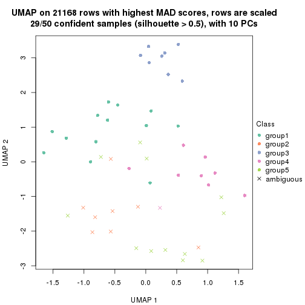
dimension_reduction(res, k = 6, method = "UMAP")
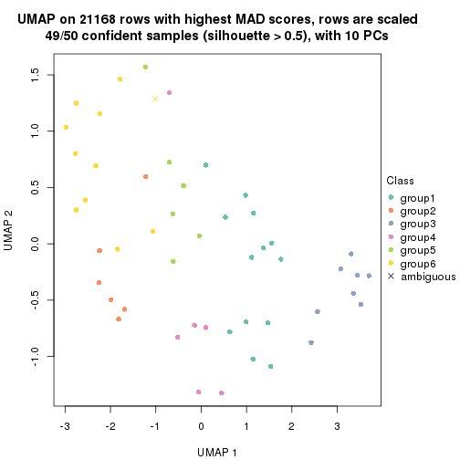
Following heatmap shows how subgroups are split when increasing k:
collect_classes(res)
Test correlation between subgroups and known annotations. If the known annotation is numeric, one-way ANOVA test is applied, and if the known annotation is discrete, chi-squared contingency table test is applied.
test_to_known_factors(res)
#> n cell.type(p) agent(p) time(p) individual(p) k
#> MAD:pam 47 2.18e-03 1.00000 9.17e-06 1.29e-02 2
#> MAD:pam 50 1.39e-11 0.73005 4.33e-07 2.19e-06 3
#> MAD:pam 49 1.30e-10 0.01063 2.55e-07 1.10e-05 4
#> MAD:pam 29 5.04e-07 0.06336 8.63e-05 8.48e-03 5
#> MAD:pam 49 2.22e-09 0.00515 3.54e-07 8.57e-05 6
If matrix rows can be associated to genes, consider to use functional_enrichment(res,
...) to perform function enrichment for the signature genes. See this vignette for more detailed explanations.
The object with results only for a single top-value method and a single partition method can be extracted as:
res = res_list["MAD", "mclust"]
# you can also extract it by
# res = res_list["MAD:mclust"]
A summary of res and all the functions that can be applied to it:
res
#> A 'ConsensusPartition' object with k = 2, 3, 4, 5, 6.
#> On a matrix with 21168 rows and 50 columns.
#> Top rows (1000, 2000, 3000, 4000, 5000) are extracted by 'MAD' method.
#> Subgroups are detected by 'mclust' method.
#> Performed in total 1250 partitions by row resampling.
#> Best k for subgroups seems to be 2.
#>
#> Following methods can be applied to this 'ConsensusPartition' object:
#> [1] "cola_report" "collect_classes" "collect_plots"
#> [4] "collect_stats" "colnames" "compare_signatures"
#> [7] "consensus_heatmap" "dimension_reduction" "functional_enrichment"
#> [10] "get_anno_col" "get_anno" "get_classes"
#> [13] "get_consensus" "get_matrix" "get_membership"
#> [16] "get_param" "get_signatures" "get_stats"
#> [19] "is_best_k" "is_stable_k" "membership_heatmap"
#> [22] "ncol" "nrow" "plot_ecdf"
#> [25] "rownames" "select_partition_number" "show"
#> [28] "suggest_best_k" "test_to_known_factors"
collect_plots() function collects all the plots made from res for all k (number of partitions)
into one single page to provide an easy and fast comparison between different k.
collect_plots(res)
The plots are:
k and the heatmap of
predicted classes for each k.k.k.k.All the plots in panels can be made by individual functions and they are plotted later in this section.
select_partition_number() produces several plots showing different
statistics for choosing “optimized” k. There are following statistics:
k;k, the area increased is defined as \(A_k - A_{k-1}\).The detailed explanations of these statistics can be found in the cola vignette.
Generally speaking, lower PAC score, higher mean silhouette score or higher
concordance corresponds to better partition. Rand index and Jaccard index
measure how similar the current partition is compared to partition with k-1.
If they are too similar, we won't accept k is better than k-1.
select_partition_number(res)
The numeric values for all these statistics can be obtained by get_stats().
get_stats(res)
#> k 1-PAC mean_silhouette concordance area_increased Rand Jaccard
#> 2 2 1.000 0.973 0.890 0.2618 0.754 0.754
#> 3 3 0.388 0.687 0.789 0.9415 0.760 0.684
#> 4 4 0.531 0.528 0.722 0.3617 0.755 0.534
#> 5 5 0.777 0.905 0.911 0.1149 0.806 0.453
#> 6 6 0.808 0.613 0.797 0.0649 0.888 0.571
suggest_best_k() suggests the best \(k\) based on these statistics. The rules are as follows:
suggest_best_k(res)
#> [1] 2
Following shows the table of the partitions (You need to click the show/hide
code output link to see it). The membership matrix (columns with name p*)
is inferred by
clue::cl_consensus()
function with the SE method. Basically the value in the membership matrix
represents the probability to belong to a certain group. The finall class
label for an item is determined with the group with highest probability it
belongs to.
In get_classes() function, the entropy is calculated from the membership
matrix and the silhouette score is calculated from the consensus matrix.
cbind(get_classes(res, k = 2), get_membership(res, k = 2))
#> class entropy silhouette p1 p2
#> GSM225374 2 0.141 0.978 0.020 0.980
#> GSM225349 2 0.000 0.984 0.000 1.000
#> GSM225367 2 0.000 0.984 0.000 1.000
#> GSM225356 2 0.000 0.984 0.000 1.000
#> GSM225353 2 0.000 0.984 0.000 1.000
#> GSM225653 2 0.000 0.984 0.000 1.000
#> GSM209847 2 0.000 0.984 0.000 1.000
#> GSM225658 2 0.000 0.984 0.000 1.000
#> GSM225370 2 0.141 0.978 0.020 0.980
#> GSM225364 2 0.000 0.984 0.000 1.000
#> GSM225645 2 0.000 0.984 0.000 1.000
#> GSM225350 2 0.000 0.984 0.000 1.000
#> GSM225368 2 0.000 0.984 0.000 1.000
#> GSM225357 2 0.000 0.984 0.000 1.000
#> GSM225651 2 0.000 0.984 0.000 1.000
#> GSM225354 2 0.000 0.984 0.000 1.000
#> GSM225360 2 0.141 0.978 0.020 0.980
#> GSM225657 2 0.141 0.978 0.020 0.980
#> GSM225377 2 0.141 0.978 0.020 0.980
#> GSM225656 2 0.141 0.978 0.020 0.980
#> GSM225347 2 0.000 0.984 0.000 1.000
#> GSM225660 2 0.141 0.978 0.020 0.980
#> GSM225712 2 0.141 0.978 0.020 0.980
#> GSM225663 2 0.141 0.978 0.020 0.980
#> GSM225373 2 0.141 0.978 0.020 0.980
#> GSM225366 2 0.141 0.978 0.020 0.980
#> GSM225380 2 0.000 0.984 0.000 1.000
#> GSM225351 2 0.000 0.984 0.000 1.000
#> GSM225369 2 0.000 0.984 0.000 1.000
#> GSM225358 2 0.000 0.984 0.000 1.000
#> GSM225649 2 0.000 0.984 0.000 1.000
#> GSM225355 2 0.000 0.984 0.000 1.000
#> GSM225361 2 0.000 0.984 0.000 1.000
#> GSM225655 2 0.000 0.984 0.000 1.000
#> GSM225376 2 0.000 0.984 0.000 1.000
#> GSM225654 2 0.000 0.984 0.000 1.000
#> GSM225348 2 0.000 0.984 0.000 1.000
#> GSM225659 2 0.000 0.984 0.000 1.000
#> GSM225378 2 0.141 0.978 0.020 0.980
#> GSM225661 2 0.141 0.978 0.020 0.980
#> GSM225372 2 0.141 0.978 0.020 0.980
#> GSM225365 2 0.141 0.978 0.020 0.980
#> GSM225860 1 0.000 1.000 1.000 0.000
#> GSM225875 1 0.000 1.000 1.000 0.000
#> GSM225878 1 0.000 1.000 1.000 0.000
#> GSM225885 1 0.000 1.000 1.000 0.000
#> GSM225867 2 0.961 0.400 0.384 0.616
#> GSM225871 1 0.000 1.000 1.000 0.000
#> GSM225881 1 0.000 1.000 1.000 0.000
#> GSM225887 1 0.000 1.000 1.000 0.000
cbind(get_classes(res, k = 3), get_membership(res, k = 3))
#> class entropy silhouette p1 p2 p3
#> GSM225374 2 0.6299 -0.500 0.476 0.524 0.000
#> GSM225349 2 0.0000 0.720 0.000 1.000 0.000
#> GSM225367 2 0.5016 0.660 0.240 0.760 0.000
#> GSM225356 2 0.0000 0.720 0.000 1.000 0.000
#> GSM225353 2 0.0000 0.720 0.000 1.000 0.000
#> GSM225653 2 0.0000 0.720 0.000 1.000 0.000
#> GSM209847 2 0.0000 0.720 0.000 1.000 0.000
#> GSM225658 2 0.0000 0.720 0.000 1.000 0.000
#> GSM225370 1 0.5882 0.982 0.652 0.348 0.000
#> GSM225364 2 0.0000 0.720 0.000 1.000 0.000
#> GSM225645 2 0.4974 0.663 0.236 0.764 0.000
#> GSM225350 2 0.1031 0.715 0.024 0.976 0.000
#> GSM225368 2 0.5016 0.660 0.240 0.760 0.000
#> GSM225357 2 0.0237 0.720 0.004 0.996 0.000
#> GSM225651 2 0.4974 0.663 0.236 0.764 0.000
#> GSM225354 2 0.1031 0.716 0.024 0.976 0.000
#> GSM225360 2 0.6267 0.312 0.452 0.548 0.000
#> GSM225657 2 0.5678 0.374 0.316 0.684 0.000
#> GSM225377 2 0.5706 0.375 0.320 0.680 0.000
#> GSM225656 1 0.5835 0.994 0.660 0.340 0.000
#> GSM225347 2 0.1289 0.713 0.032 0.968 0.000
#> GSM225660 1 0.5835 0.994 0.660 0.340 0.000
#> GSM225712 1 0.5810 0.991 0.664 0.336 0.000
#> GSM225663 1 0.5835 0.994 0.660 0.340 0.000
#> GSM225373 1 0.5810 0.991 0.664 0.336 0.000
#> GSM225366 2 0.5706 0.375 0.320 0.680 0.000
#> GSM225380 2 0.4974 0.663 0.236 0.764 0.000
#> GSM225351 2 0.4887 0.528 0.228 0.772 0.000
#> GSM225369 2 0.5058 0.657 0.244 0.756 0.000
#> GSM225358 2 0.3482 0.674 0.128 0.872 0.000
#> GSM225649 2 0.5016 0.661 0.240 0.760 0.000
#> GSM225355 2 0.4887 0.528 0.228 0.772 0.000
#> GSM225361 2 0.5397 0.653 0.280 0.720 0.000
#> GSM225655 2 0.5363 0.633 0.276 0.724 0.000
#> GSM225376 2 0.3752 0.682 0.144 0.856 0.000
#> GSM225654 2 0.3752 0.683 0.144 0.856 0.000
#> GSM225348 2 0.4842 0.533 0.224 0.776 0.000
#> GSM225659 2 0.3879 0.687 0.152 0.848 0.000
#> GSM225378 2 0.5810 0.322 0.336 0.664 0.000
#> GSM225661 2 0.5706 0.375 0.320 0.680 0.000
#> GSM225372 2 0.5926 0.369 0.356 0.644 0.000
#> GSM225365 1 0.5835 0.994 0.660 0.340 0.000
#> GSM225860 3 0.0000 0.957 0.000 0.000 1.000
#> GSM225875 3 0.0000 0.957 0.000 0.000 1.000
#> GSM225878 3 0.0000 0.957 0.000 0.000 1.000
#> GSM225885 3 0.0000 0.957 0.000 0.000 1.000
#> GSM225867 3 0.6902 0.582 0.148 0.116 0.736
#> GSM225871 3 0.0000 0.957 0.000 0.000 1.000
#> GSM225881 3 0.0000 0.957 0.000 0.000 1.000
#> GSM225887 3 0.0000 0.957 0.000 0.000 1.000
cbind(get_classes(res, k = 4), get_membership(res, k = 4))
#> class entropy silhouette p1 p2 p3 p4
#> GSM225374 4 0.535 -0.5919 0.432 0.012 0.000 0.556
#> GSM225349 2 0.375 0.6692 0.004 0.800 0.000 0.196
#> GSM225367 4 0.763 0.3421 0.368 0.208 0.000 0.424
#> GSM225356 2 0.375 0.6692 0.004 0.800 0.000 0.196
#> GSM225353 2 0.442 0.6257 0.012 0.748 0.000 0.240
#> GSM225653 2 0.432 0.6415 0.012 0.760 0.000 0.228
#> GSM209847 2 0.367 0.6712 0.004 0.808 0.000 0.188
#> GSM225658 2 0.410 0.6630 0.012 0.784 0.000 0.204
#> GSM225370 1 0.521 0.9361 0.572 0.008 0.000 0.420
#> GSM225364 2 0.432 0.6415 0.012 0.760 0.000 0.228
#> GSM225645 4 0.764 0.3419 0.372 0.208 0.000 0.420
#> GSM225350 2 0.517 0.6482 0.004 0.508 0.000 0.488
#> GSM225368 4 0.763 0.3421 0.368 0.208 0.000 0.424
#> GSM225357 2 0.521 0.6476 0.008 0.572 0.000 0.420
#> GSM225651 4 0.759 0.3457 0.368 0.200 0.000 0.432
#> GSM225354 2 0.500 0.6504 0.000 0.516 0.000 0.484
#> GSM225360 4 0.387 0.2212 0.208 0.004 0.000 0.788
#> GSM225657 4 0.628 -0.1326 0.284 0.092 0.000 0.624
#> GSM225377 4 0.485 -0.0415 0.268 0.020 0.000 0.712
#> GSM225656 1 0.508 0.9728 0.616 0.008 0.000 0.376
#> GSM225347 2 0.499 0.6487 0.000 0.520 0.000 0.480
#> GSM225660 1 0.508 0.9728 0.616 0.008 0.000 0.376
#> GSM225712 1 0.488 0.9572 0.592 0.000 0.000 0.408
#> GSM225663 1 0.508 0.9728 0.616 0.008 0.000 0.376
#> GSM225373 1 0.488 0.9572 0.592 0.000 0.000 0.408
#> GSM225366 4 0.536 0.1316 0.200 0.072 0.000 0.728
#> GSM225380 4 0.761 0.3430 0.384 0.200 0.000 0.416
#> GSM225351 2 0.468 0.5899 0.000 0.648 0.000 0.352
#> GSM225369 4 0.761 0.3430 0.384 0.200 0.000 0.416
#> GSM225358 2 0.529 0.6449 0.008 0.508 0.000 0.484
#> GSM225649 4 0.761 0.3430 0.384 0.200 0.000 0.416
#> GSM225355 2 0.450 0.5654 0.000 0.684 0.000 0.316
#> GSM225361 4 0.727 0.3431 0.332 0.164 0.000 0.504
#> GSM225655 4 0.525 -0.5525 0.008 0.440 0.000 0.552
#> GSM225376 4 0.397 0.3809 0.016 0.180 0.000 0.804
#> GSM225654 4 0.222 0.2608 0.000 0.092 0.000 0.908
#> GSM225348 2 0.450 0.5654 0.000 0.684 0.000 0.316
#> GSM225659 4 0.385 0.1321 0.012 0.180 0.000 0.808
#> GSM225378 4 0.462 -0.2710 0.340 0.000 0.000 0.660
#> GSM225661 4 0.558 0.1213 0.204 0.084 0.000 0.712
#> GSM225372 4 0.399 0.1701 0.172 0.020 0.000 0.808
#> GSM225365 1 0.508 0.9728 0.616 0.008 0.000 0.376
#> GSM225860 3 0.000 0.9706 0.000 0.000 1.000 0.000
#> GSM225875 3 0.000 0.9706 0.000 0.000 1.000 0.000
#> GSM225878 3 0.000 0.9706 0.000 0.000 1.000 0.000
#> GSM225885 3 0.000 0.9706 0.000 0.000 1.000 0.000
#> GSM225867 3 0.406 0.7497 0.160 0.000 0.812 0.028
#> GSM225871 3 0.000 0.9706 0.000 0.000 1.000 0.000
#> GSM225881 3 0.000 0.9706 0.000 0.000 1.000 0.000
#> GSM225887 3 0.000 0.9706 0.000 0.000 1.000 0.000
cbind(get_classes(res, k = 5), get_membership(res, k = 5))
#> class entropy silhouette p1 p2 p3 p4 p5
#> GSM225374 1 0.4797 0.752 0.724 0.104 0.000 0.000 0.172
#> GSM225349 4 0.0000 1.000 0.000 0.000 0.000 1.000 0.000
#> GSM225367 5 0.0000 0.989 0.000 0.000 0.000 0.000 1.000
#> GSM225356 4 0.0000 1.000 0.000 0.000 0.000 1.000 0.000
#> GSM225353 4 0.0000 1.000 0.000 0.000 0.000 1.000 0.000
#> GSM225653 4 0.0000 1.000 0.000 0.000 0.000 1.000 0.000
#> GSM209847 4 0.0000 1.000 0.000 0.000 0.000 1.000 0.000
#> GSM225658 4 0.0000 1.000 0.000 0.000 0.000 1.000 0.000
#> GSM225370 1 0.2824 0.820 0.872 0.096 0.000 0.000 0.032
#> GSM225364 4 0.0000 1.000 0.000 0.000 0.000 1.000 0.000
#> GSM225645 5 0.0290 0.994 0.000 0.008 0.000 0.000 0.992
#> GSM225350 2 0.0000 0.990 0.000 1.000 0.000 0.000 0.000
#> GSM225368 5 0.0000 0.989 0.000 0.000 0.000 0.000 1.000
#> GSM225357 2 0.1270 0.942 0.000 0.948 0.000 0.052 0.000
#> GSM225651 5 0.0290 0.994 0.000 0.008 0.000 0.000 0.992
#> GSM225354 2 0.0000 0.990 0.000 1.000 0.000 0.000 0.000
#> GSM225360 1 0.5537 0.748 0.624 0.112 0.000 0.000 0.264
#> GSM225657 1 0.3318 0.802 0.808 0.180 0.000 0.000 0.012
#> GSM225377 1 0.4073 0.826 0.792 0.104 0.000 0.000 0.104
#> GSM225656 1 0.0000 0.784 1.000 0.000 0.000 0.000 0.000
#> GSM225347 2 0.0000 0.990 0.000 1.000 0.000 0.000 0.000
#> GSM225660 1 0.0000 0.784 1.000 0.000 0.000 0.000 0.000
#> GSM225712 1 0.1668 0.809 0.940 0.028 0.000 0.000 0.032
#> GSM225663 1 0.0000 0.784 1.000 0.000 0.000 0.000 0.000
#> GSM225373 1 0.1668 0.809 0.940 0.028 0.000 0.000 0.032
#> GSM225366 1 0.5618 0.772 0.632 0.224 0.000 0.000 0.144
#> GSM225380 5 0.0404 0.992 0.000 0.012 0.000 0.000 0.988
#> GSM225351 2 0.0000 0.990 0.000 1.000 0.000 0.000 0.000
#> GSM225369 5 0.0290 0.994 0.000 0.008 0.000 0.000 0.992
#> GSM225358 2 0.0290 0.982 0.000 0.992 0.000 0.000 0.008
#> GSM225649 5 0.0404 0.992 0.000 0.012 0.000 0.000 0.988
#> GSM225355 2 0.0000 0.990 0.000 1.000 0.000 0.000 0.000
#> GSM225361 1 0.5512 0.738 0.620 0.104 0.000 0.000 0.276
#> GSM225655 1 0.4538 0.673 0.620 0.364 0.000 0.000 0.016
#> GSM225376 1 0.5690 0.766 0.624 0.152 0.000 0.000 0.224
#> GSM225654 1 0.5612 0.761 0.624 0.248 0.000 0.000 0.128
#> GSM225348 2 0.0000 0.990 0.000 1.000 0.000 0.000 0.000
#> GSM225659 1 0.4525 0.678 0.624 0.360 0.000 0.000 0.016
#> GSM225378 1 0.3532 0.826 0.832 0.076 0.000 0.000 0.092
#> GSM225661 1 0.4981 0.803 0.704 0.188 0.000 0.000 0.108
#> GSM225372 1 0.5577 0.752 0.624 0.120 0.000 0.000 0.256
#> GSM225365 1 0.0000 0.784 1.000 0.000 0.000 0.000 0.000
#> GSM225860 3 0.0000 0.999 0.000 0.000 1.000 0.000 0.000
#> GSM225875 3 0.0000 0.999 0.000 0.000 1.000 0.000 0.000
#> GSM225878 3 0.0000 0.999 0.000 0.000 1.000 0.000 0.000
#> GSM225885 3 0.0000 0.999 0.000 0.000 1.000 0.000 0.000
#> GSM225867 3 0.0162 0.995 0.000 0.000 0.996 0.000 0.004
#> GSM225871 3 0.0000 0.999 0.000 0.000 1.000 0.000 0.000
#> GSM225881 3 0.0000 0.999 0.000 0.000 1.000 0.000 0.000
#> GSM225887 3 0.0000 0.999 0.000 0.000 1.000 0.000 0.000
cbind(get_classes(res, k = 6), get_membership(res, k = 6))
#> class entropy silhouette p1 p2 p3 p4 p5 p6
#> GSM225374 1 0.5076 0.3343 0.708 0.140 0.000 0.064 0.088 0.000
#> GSM225349 6 0.0000 0.9993 0.000 0.000 0.000 0.000 0.000 1.000
#> GSM225367 5 0.3052 0.7561 0.004 0.000 0.000 0.216 0.780 0.000
#> GSM225356 6 0.0000 0.9993 0.000 0.000 0.000 0.000 0.000 1.000
#> GSM225353 6 0.0000 0.9993 0.000 0.000 0.000 0.000 0.000 1.000
#> GSM225653 6 0.0146 0.9956 0.000 0.000 0.000 0.000 0.004 0.996
#> GSM209847 6 0.0000 0.9993 0.000 0.000 0.000 0.000 0.000 1.000
#> GSM225658 6 0.0000 0.9993 0.000 0.000 0.000 0.000 0.000 1.000
#> GSM225370 1 0.2006 0.4981 0.904 0.080 0.000 0.016 0.000 0.000
#> GSM225364 6 0.0000 0.9993 0.000 0.000 0.000 0.000 0.000 1.000
#> GSM225645 5 0.2378 0.7720 0.000 0.000 0.000 0.152 0.848 0.000
#> GSM225350 2 0.0508 0.7555 0.000 0.984 0.000 0.004 0.000 0.012
#> GSM225368 5 0.2912 0.7579 0.000 0.000 0.000 0.216 0.784 0.000
#> GSM225357 2 0.1700 0.6975 0.000 0.916 0.000 0.004 0.000 0.080
#> GSM225651 5 0.2883 0.7694 0.000 0.000 0.000 0.212 0.788 0.000
#> GSM225354 2 0.0603 0.7536 0.000 0.980 0.000 0.004 0.000 0.016
#> GSM225360 4 0.6823 0.6181 0.284 0.080 0.000 0.460 0.176 0.000
#> GSM225657 1 0.3798 0.4058 0.748 0.216 0.000 0.032 0.004 0.000
#> GSM225377 1 0.5022 0.0109 0.576 0.064 0.000 0.352 0.008 0.000
#> GSM225656 1 0.2730 0.5301 0.808 0.000 0.000 0.192 0.000 0.000
#> GSM225347 2 0.0912 0.7531 0.004 0.972 0.000 0.012 0.004 0.008
#> GSM225660 1 0.2793 0.5281 0.800 0.000 0.000 0.200 0.000 0.000
#> GSM225712 1 0.2058 0.5058 0.908 0.036 0.000 0.056 0.000 0.000
#> GSM225663 1 0.2793 0.5281 0.800 0.000 0.000 0.200 0.000 0.000
#> GSM225373 1 0.2058 0.5058 0.908 0.036 0.000 0.056 0.000 0.000
#> GSM225366 1 0.5944 -0.2611 0.468 0.200 0.000 0.328 0.004 0.000
#> GSM225380 5 0.1387 0.7564 0.000 0.000 0.000 0.068 0.932 0.000
#> GSM225351 2 0.0000 0.7577 0.000 1.000 0.000 0.000 0.000 0.000
#> GSM225369 5 0.0000 0.7639 0.000 0.000 0.000 0.000 1.000 0.000
#> GSM225358 2 0.0146 0.7573 0.000 0.996 0.000 0.004 0.000 0.000
#> GSM225649 5 0.1387 0.7564 0.000 0.000 0.000 0.068 0.932 0.000
#> GSM225355 2 0.0000 0.7577 0.000 1.000 0.000 0.000 0.000 0.000
#> GSM225361 5 0.7141 -0.6557 0.216 0.088 0.000 0.344 0.352 0.000
#> GSM225655 2 0.5472 -0.0111 0.256 0.564 0.000 0.180 0.000 0.000
#> GSM225376 4 0.7617 0.6012 0.236 0.236 0.000 0.336 0.192 0.000
#> GSM225654 2 0.6045 -0.3172 0.364 0.420 0.000 0.212 0.004 0.000
#> GSM225348 2 0.0508 0.7534 0.004 0.984 0.000 0.012 0.000 0.000
#> GSM225659 2 0.6006 -0.3063 0.376 0.420 0.000 0.200 0.004 0.000
#> GSM225378 1 0.4872 0.0653 0.600 0.056 0.000 0.336 0.008 0.000
#> GSM225661 1 0.5856 -0.2133 0.492 0.188 0.000 0.316 0.004 0.000
#> GSM225372 4 0.5395 0.4910 0.320 0.108 0.000 0.564 0.008 0.000
#> GSM225365 1 0.2793 0.5281 0.800 0.000 0.000 0.200 0.000 0.000
#> GSM225860 3 0.0000 0.9972 0.000 0.000 1.000 0.000 0.000 0.000
#> GSM225875 3 0.0000 0.9972 0.000 0.000 1.000 0.000 0.000 0.000
#> GSM225878 3 0.0000 0.9972 0.000 0.000 1.000 0.000 0.000 0.000
#> GSM225885 3 0.0000 0.9972 0.000 0.000 1.000 0.000 0.000 0.000
#> GSM225867 3 0.0508 0.9800 0.012 0.000 0.984 0.000 0.004 0.000
#> GSM225871 3 0.0000 0.9972 0.000 0.000 1.000 0.000 0.000 0.000
#> GSM225881 3 0.0000 0.9972 0.000 0.000 1.000 0.000 0.000 0.000
#> GSM225887 3 0.0000 0.9972 0.000 0.000 1.000 0.000 0.000 0.000
Heatmaps for the consensus matrix. It visualizes the probability of two samples to be in a same group.
consensus_heatmap(res, k = 2)
consensus_heatmap(res, k = 3)
consensus_heatmap(res, k = 4)
consensus_heatmap(res, k = 5)
consensus_heatmap(res, k = 6)
Heatmaps for the membership of samples in all partitions to see how consistent they are:
membership_heatmap(res, k = 2)
membership_heatmap(res, k = 3)
membership_heatmap(res, k = 4)
membership_heatmap(res, k = 5)

membership_heatmap(res, k = 6)
As soon as we have had the classes for columns, we can look for signatures which are significantly different between classes which can be candidate marks for certain classes. Following are the heatmaps for signatures.
Signature heatmaps where rows are scaled:
get_signatures(res, k = 2)
get_signatures(res, k = 3)

get_signatures(res, k = 4)
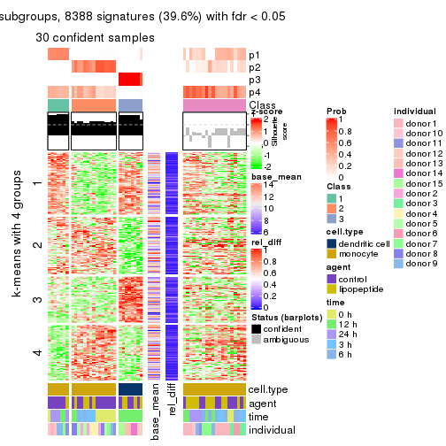
get_signatures(res, k = 5)
get_signatures(res, k = 6)
Signature heatmaps where rows are not scaled:
get_signatures(res, k = 2, scale_rows = FALSE)
get_signatures(res, k = 3, scale_rows = FALSE)
get_signatures(res, k = 4, scale_rows = FALSE)
get_signatures(res, k = 5, scale_rows = FALSE)
get_signatures(res, k = 6, scale_rows = FALSE)
Compare the overlap of signatures from different k:
compare_signatures(res)
get_signature() returns a data frame invisibly. TO get the list of signatures, the function
call should be assigned to a variable explicitly. In following code, if plot argument is set
to FALSE, no heatmap is plotted while only the differential analysis is performed.
# code only for demonstration
tb = get_signature(res, k = ..., plot = FALSE)
An example of the output of tb is:
#> which_row fdr mean_1 mean_2 scaled_mean_1 scaled_mean_2 km
#> 1 38 0.042760348 8.373488 9.131774 -0.5533452 0.5164555 1
#> 2 40 0.018707592 7.106213 8.469186 -0.6173731 0.5762149 1
#> 3 55 0.019134737 10.221463 11.207825 -0.6159697 0.5749050 1
#> 4 59 0.006059896 5.921854 7.869574 -0.6899429 0.6439467 1
#> 5 60 0.018055526 8.928898 10.211722 -0.6204761 0.5791110 1
#> 6 98 0.009384629 15.714769 14.887706 0.6635654 -0.6193277 2
...
The columns in tb are:
which_row: row indices corresponding to the input matrix.fdr: FDR for the differential test. mean_x: The mean value in group x.scaled_mean_x: The mean value in group x after rows are scaled.km: Row groups if k-means clustering is applied to rows.UMAP plot which shows how samples are separated.
dimension_reduction(res, k = 2, method = "UMAP")
dimension_reduction(res, k = 3, method = "UMAP")
dimension_reduction(res, k = 4, method = "UMAP")
dimension_reduction(res, k = 5, method = "UMAP")
dimension_reduction(res, k = 6, method = "UMAP")

Following heatmap shows how subgroups are split when increasing k:
collect_classes(res)
Test correlation between subgroups and known annotations. If the known annotation is numeric, one-way ANOVA test is applied, and if the known annotation is discrete, chi-squared contingency table test is applied.
test_to_known_factors(res)
#> n cell.type(p) agent(p) time(p) individual(p) k
#> MAD:mclust 49 1.39e-10 1.000 9.80e-04 8.97e-06 2
#> MAD:mclust 42 7.58e-10 0.291 1.30e-06 3.31e-04 3
#> MAD:mclust 30 3.06e-07 0.297 4.02e-05 1.63e-03 4
#> MAD:mclust 50 3.61e-10 0.234 4.91e-10 1.10e-06 5
#> MAD:mclust 38 3.77e-07 0.245 1.92e-09 5.78e-04 6
If matrix rows can be associated to genes, consider to use functional_enrichment(res,
...) to perform function enrichment for the signature genes. See this vignette for more detailed explanations.
The object with results only for a single top-value method and a single partition method can be extracted as:
res = res_list["MAD", "NMF"]
# you can also extract it by
# res = res_list["MAD:NMF"]
A summary of res and all the functions that can be applied to it:
res
#> A 'ConsensusPartition' object with k = 2, 3, 4, 5, 6.
#> On a matrix with 21168 rows and 50 columns.
#> Top rows (1000, 2000, 3000, 4000, 5000) are extracted by 'MAD' method.
#> Subgroups are detected by 'NMF' method.
#> Performed in total 1250 partitions by row resampling.
#> Best k for subgroups seems to be 5.
#>
#> Following methods can be applied to this 'ConsensusPartition' object:
#> [1] "cola_report" "collect_classes" "collect_plots"
#> [4] "collect_stats" "colnames" "compare_signatures"
#> [7] "consensus_heatmap" "dimension_reduction" "functional_enrichment"
#> [10] "get_anno_col" "get_anno" "get_classes"
#> [13] "get_consensus" "get_matrix" "get_membership"
#> [16] "get_param" "get_signatures" "get_stats"
#> [19] "is_best_k" "is_stable_k" "membership_heatmap"
#> [22] "ncol" "nrow" "plot_ecdf"
#> [25] "rownames" "select_partition_number" "show"
#> [28] "suggest_best_k" "test_to_known_factors"
collect_plots() function collects all the plots made from res for all k (number of partitions)
into one single page to provide an easy and fast comparison between different k.
collect_plots(res)
The plots are:
k and the heatmap of
predicted classes for each k.k.k.k.All the plots in panels can be made by individual functions and they are plotted later in this section.
select_partition_number() produces several plots showing different
statistics for choosing “optimized” k. There are following statistics:
k;k, the area increased is defined as \(A_k - A_{k-1}\).The detailed explanations of these statistics can be found in the cola vignette.
Generally speaking, lower PAC score, higher mean silhouette score or higher
concordance corresponds to better partition. Rand index and Jaccard index
measure how similar the current partition is compared to partition with k-1.
If they are too similar, we won't accept k is better than k-1.
select_partition_number(res)
The numeric values for all these statistics can be obtained by get_stats().
get_stats(res)
#> k 1-PAC mean_silhouette concordance area_increased Rand Jaccard
#> 2 2 1.000 0.964 0.985 0.5038 0.493 0.493
#> 3 3 0.788 0.829 0.929 0.3408 0.742 0.520
#> 4 4 0.734 0.791 0.881 0.0982 0.799 0.489
#> 5 5 0.944 0.910 0.951 0.0868 0.851 0.504
#> 6 6 0.818 0.736 0.841 0.0355 0.980 0.895
suggest_best_k() suggests the best \(k\) based on these statistics. The rules are as follows:
suggest_best_k(res)
#> [1] 5
#> attr(,"optional")
#> [1] 2
There is also optional best \(k\) = 2 that is worth to check.
Following shows the table of the partitions (You need to click the show/hide
code output link to see it). The membership matrix (columns with name p*)
is inferred by
clue::cl_consensus()
function with the SE method. Basically the value in the membership matrix
represents the probability to belong to a certain group. The finall class
label for an item is determined with the group with highest probability it
belongs to.
In get_classes() function, the entropy is calculated from the membership
matrix and the silhouette score is calculated from the consensus matrix.
cbind(get_classes(res, k = 2), get_membership(res, k = 2))
#> class entropy silhouette p1 p2
#> GSM225374 1 0.000 0.966 1.000 0.000
#> GSM225349 2 0.000 1.000 0.000 1.000
#> GSM225367 2 0.000 1.000 0.000 1.000
#> GSM225356 2 0.000 1.000 0.000 1.000
#> GSM225353 2 0.000 1.000 0.000 1.000
#> GSM225653 2 0.000 1.000 0.000 1.000
#> GSM209847 2 0.000 1.000 0.000 1.000
#> GSM225658 2 0.000 1.000 0.000 1.000
#> GSM225370 1 0.000 0.966 1.000 0.000
#> GSM225364 2 0.000 1.000 0.000 1.000
#> GSM225645 2 0.000 1.000 0.000 1.000
#> GSM225350 2 0.000 1.000 0.000 1.000
#> GSM225368 2 0.000 1.000 0.000 1.000
#> GSM225357 2 0.000 1.000 0.000 1.000
#> GSM225651 2 0.000 1.000 0.000 1.000
#> GSM225354 2 0.000 1.000 0.000 1.000
#> GSM225360 1 0.224 0.935 0.964 0.036
#> GSM225657 1 0.904 0.549 0.680 0.320
#> GSM225377 1 0.000 0.966 1.000 0.000
#> GSM225656 1 0.000 0.966 1.000 0.000
#> GSM225347 2 0.000 1.000 0.000 1.000
#> GSM225660 1 0.000 0.966 1.000 0.000
#> GSM225712 1 0.000 0.966 1.000 0.000
#> GSM225663 1 0.000 0.966 1.000 0.000
#> GSM225373 1 0.000 0.966 1.000 0.000
#> GSM225366 1 0.000 0.966 1.000 0.000
#> GSM225380 2 0.000 1.000 0.000 1.000
#> GSM225351 2 0.000 1.000 0.000 1.000
#> GSM225369 2 0.000 1.000 0.000 1.000
#> GSM225358 2 0.000 1.000 0.000 1.000
#> GSM225649 2 0.000 1.000 0.000 1.000
#> GSM225355 2 0.000 1.000 0.000 1.000
#> GSM225361 2 0.000 1.000 0.000 1.000
#> GSM225655 2 0.000 1.000 0.000 1.000
#> GSM225376 2 0.000 1.000 0.000 1.000
#> GSM225654 2 0.000 1.000 0.000 1.000
#> GSM225348 2 0.000 1.000 0.000 1.000
#> GSM225659 2 0.000 1.000 0.000 1.000
#> GSM225378 1 0.000 0.966 1.000 0.000
#> GSM225661 1 0.000 0.966 1.000 0.000
#> GSM225372 1 0.963 0.398 0.612 0.388
#> GSM225365 1 0.000 0.966 1.000 0.000
#> GSM225860 1 0.000 0.966 1.000 0.000
#> GSM225875 1 0.000 0.966 1.000 0.000
#> GSM225878 1 0.000 0.966 1.000 0.000
#> GSM225885 1 0.000 0.966 1.000 0.000
#> GSM225867 1 0.000 0.966 1.000 0.000
#> GSM225871 1 0.000 0.966 1.000 0.000
#> GSM225881 1 0.000 0.966 1.000 0.000
#> GSM225887 1 0.000 0.966 1.000 0.000
cbind(get_classes(res, k = 3), get_membership(res, k = 3))
#> class entropy silhouette p1 p2 p3
#> GSM225374 2 0.0424 0.9097 0.008 0.992 0.000
#> GSM225349 2 0.0747 0.9102 0.000 0.984 0.016
#> GSM225367 2 0.2356 0.8684 0.000 0.928 0.072
#> GSM225356 2 0.0000 0.9135 0.000 1.000 0.000
#> GSM225353 2 0.1031 0.9063 0.000 0.976 0.024
#> GSM225653 2 0.0237 0.9136 0.000 0.996 0.004
#> GSM209847 2 0.0424 0.9130 0.000 0.992 0.008
#> GSM225658 2 0.0000 0.9135 0.000 1.000 0.000
#> GSM225370 2 0.5706 0.4504 0.320 0.680 0.000
#> GSM225364 2 0.0000 0.9135 0.000 1.000 0.000
#> GSM225645 3 0.2261 0.8919 0.000 0.068 0.932
#> GSM225350 2 0.1753 0.8910 0.000 0.952 0.048
#> GSM225368 3 0.4291 0.7534 0.000 0.180 0.820
#> GSM225357 2 0.0424 0.9130 0.000 0.992 0.008
#> GSM225651 3 0.1031 0.9257 0.000 0.024 0.976
#> GSM225354 2 0.0000 0.9135 0.000 1.000 0.000
#> GSM225360 1 0.6302 0.0258 0.520 0.000 0.480
#> GSM225657 2 0.0424 0.9106 0.008 0.992 0.000
#> GSM225377 1 0.0000 0.9103 1.000 0.000 0.000
#> GSM225656 1 0.3267 0.8395 0.884 0.116 0.000
#> GSM225347 2 0.0000 0.9135 0.000 1.000 0.000
#> GSM225660 1 0.4750 0.7275 0.784 0.216 0.000
#> GSM225712 1 0.0747 0.9047 0.984 0.016 0.000
#> GSM225663 1 0.3482 0.8283 0.872 0.128 0.000
#> GSM225373 1 0.0747 0.9047 0.984 0.016 0.000
#> GSM225366 1 0.4121 0.7540 0.832 0.000 0.168
#> GSM225380 3 0.0000 0.9365 0.000 0.000 1.000
#> GSM225351 3 0.1753 0.9057 0.000 0.048 0.952
#> GSM225369 3 0.0000 0.9365 0.000 0.000 1.000
#> GSM225358 3 0.0424 0.9332 0.000 0.008 0.992
#> GSM225649 3 0.0000 0.9365 0.000 0.000 1.000
#> GSM225355 2 0.6309 0.0837 0.000 0.504 0.496
#> GSM225361 3 0.0000 0.9365 0.000 0.000 1.000
#> GSM225655 3 0.0000 0.9365 0.000 0.000 1.000
#> GSM225376 3 0.0000 0.9365 0.000 0.000 1.000
#> GSM225654 3 0.0000 0.9365 0.000 0.000 1.000
#> GSM225348 2 0.5363 0.6265 0.000 0.724 0.276
#> GSM225659 3 0.0000 0.9365 0.000 0.000 1.000
#> GSM225378 1 0.0000 0.9103 1.000 0.000 0.000
#> GSM225661 1 0.0000 0.9103 1.000 0.000 0.000
#> GSM225372 3 0.6192 0.2311 0.420 0.000 0.580
#> GSM225365 1 0.6008 0.4389 0.628 0.372 0.000
#> GSM225860 1 0.0000 0.9103 1.000 0.000 0.000
#> GSM225875 1 0.0000 0.9103 1.000 0.000 0.000
#> GSM225878 1 0.0000 0.9103 1.000 0.000 0.000
#> GSM225885 1 0.0000 0.9103 1.000 0.000 0.000
#> GSM225867 1 0.0000 0.9103 1.000 0.000 0.000
#> GSM225871 1 0.0000 0.9103 1.000 0.000 0.000
#> GSM225881 1 0.0000 0.9103 1.000 0.000 0.000
#> GSM225887 1 0.0000 0.9103 1.000 0.000 0.000
cbind(get_classes(res, k = 4), get_membership(res, k = 4))
#> class entropy silhouette p1 p2 p3 p4
#> GSM225374 3 0.3384 0.6962 0.116 0.024 0.860 0.000
#> GSM225349 2 0.4999 0.0164 0.000 0.508 0.492 0.000
#> GSM225367 3 0.1629 0.8488 0.000 0.024 0.952 0.024
#> GSM225356 3 0.3219 0.7558 0.000 0.164 0.836 0.000
#> GSM225353 3 0.2759 0.8467 0.000 0.052 0.904 0.044
#> GSM225653 3 0.2131 0.8506 0.000 0.036 0.932 0.032
#> GSM209847 2 0.3837 0.6868 0.000 0.776 0.224 0.000
#> GSM225658 3 0.1716 0.8348 0.000 0.064 0.936 0.000
#> GSM225370 1 0.5105 0.7350 0.696 0.028 0.276 0.000
#> GSM225364 3 0.1118 0.8373 0.000 0.036 0.964 0.000
#> GSM225645 3 0.2999 0.8316 0.000 0.004 0.864 0.132
#> GSM225350 2 0.1109 0.8592 0.000 0.968 0.028 0.004
#> GSM225368 3 0.2861 0.8431 0.000 0.016 0.888 0.096
#> GSM225357 2 0.1118 0.8594 0.000 0.964 0.036 0.000
#> GSM225651 3 0.3837 0.7690 0.000 0.000 0.776 0.224
#> GSM225354 2 0.0817 0.8597 0.000 0.976 0.024 0.000
#> GSM225360 3 0.5121 0.7490 0.120 0.000 0.764 0.116
#> GSM225657 2 0.2861 0.7655 0.016 0.888 0.096 0.000
#> GSM225377 1 0.3182 0.8942 0.876 0.028 0.096 0.000
#> GSM225656 1 0.3497 0.8906 0.860 0.036 0.104 0.000
#> GSM225347 2 0.0188 0.8524 0.000 0.996 0.004 0.000
#> GSM225660 1 0.4352 0.8706 0.816 0.080 0.104 0.000
#> GSM225712 1 0.3542 0.8868 0.852 0.028 0.120 0.000
#> GSM225663 1 0.3399 0.8930 0.868 0.040 0.092 0.000
#> GSM225373 1 0.3707 0.8814 0.840 0.028 0.132 0.000
#> GSM225366 4 0.5149 0.5016 0.320 0.008 0.008 0.664
#> GSM225380 4 0.1389 0.8277 0.000 0.000 0.048 0.952
#> GSM225351 4 0.5691 0.0913 0.000 0.468 0.024 0.508
#> GSM225369 3 0.4888 0.4758 0.000 0.000 0.588 0.412
#> GSM225358 4 0.2796 0.8141 0.000 0.092 0.016 0.892
#> GSM225649 4 0.0188 0.8561 0.000 0.000 0.004 0.996
#> GSM225355 2 0.2413 0.8219 0.000 0.916 0.020 0.064
#> GSM225361 4 0.0188 0.8561 0.000 0.000 0.004 0.996
#> GSM225655 4 0.1211 0.8548 0.000 0.040 0.000 0.960
#> GSM225376 4 0.0524 0.8586 0.000 0.008 0.004 0.988
#> GSM225654 4 0.0779 0.8591 0.004 0.016 0.000 0.980
#> GSM225348 2 0.0927 0.8544 0.000 0.976 0.008 0.016
#> GSM225659 4 0.2197 0.8334 0.000 0.080 0.004 0.916
#> GSM225378 1 0.2623 0.8984 0.908 0.028 0.064 0.000
#> GSM225661 1 0.2400 0.8976 0.928 0.032 0.028 0.012
#> GSM225372 1 0.7755 0.3935 0.512 0.016 0.176 0.296
#> GSM225365 1 0.5067 0.8343 0.768 0.116 0.116 0.000
#> GSM225860 1 0.0188 0.8987 0.996 0.000 0.000 0.004
#> GSM225875 1 0.0188 0.8987 0.996 0.000 0.000 0.004
#> GSM225878 1 0.0188 0.8987 0.996 0.000 0.000 0.004
#> GSM225885 1 0.0188 0.8987 0.996 0.000 0.000 0.004
#> GSM225867 1 0.0188 0.8987 0.996 0.000 0.000 0.004
#> GSM225871 1 0.0188 0.8987 0.996 0.000 0.000 0.004
#> GSM225881 1 0.0188 0.8987 0.996 0.000 0.000 0.004
#> GSM225887 1 0.0188 0.8987 0.996 0.000 0.000 0.004
cbind(get_classes(res, k = 5), get_membership(res, k = 5))
#> class entropy silhouette p1 p2 p3 p4 p5
#> GSM225374 1 0.1124 0.946 0.960 0.000 0.004 0.000 0.036
#> GSM225349 2 0.3661 0.609 0.000 0.724 0.000 0.000 0.276
#> GSM225367 5 0.0324 0.911 0.004 0.004 0.000 0.000 0.992
#> GSM225356 5 0.3424 0.674 0.000 0.240 0.000 0.000 0.760
#> GSM225353 5 0.0963 0.908 0.000 0.036 0.000 0.000 0.964
#> GSM225653 5 0.0404 0.913 0.000 0.012 0.000 0.000 0.988
#> GSM209847 2 0.2230 0.828 0.000 0.884 0.000 0.000 0.116
#> GSM225658 5 0.1121 0.904 0.000 0.044 0.000 0.000 0.956
#> GSM225370 1 0.0290 0.958 0.992 0.000 0.008 0.000 0.000
#> GSM225364 5 0.0771 0.912 0.004 0.020 0.000 0.000 0.976
#> GSM225645 5 0.1082 0.904 0.008 0.000 0.000 0.028 0.964
#> GSM225350 2 0.0162 0.905 0.000 0.996 0.000 0.000 0.004
#> GSM225368 5 0.0162 0.910 0.004 0.000 0.000 0.000 0.996
#> GSM225357 2 0.0324 0.905 0.004 0.992 0.000 0.000 0.004
#> GSM225651 5 0.4326 0.633 0.028 0.000 0.000 0.264 0.708
#> GSM225354 2 0.0162 0.905 0.004 0.996 0.000 0.000 0.000
#> GSM225360 1 0.5060 0.606 0.684 0.000 0.000 0.092 0.224
#> GSM225657 1 0.0703 0.951 0.976 0.024 0.000 0.000 0.000
#> GSM225377 1 0.0579 0.957 0.984 0.000 0.008 0.008 0.000
#> GSM225656 1 0.0290 0.958 0.992 0.000 0.008 0.000 0.000
#> GSM225347 2 0.0290 0.904 0.008 0.992 0.000 0.000 0.000
#> GSM225660 1 0.0566 0.957 0.984 0.004 0.012 0.000 0.000
#> GSM225712 1 0.0404 0.958 0.988 0.000 0.012 0.000 0.000
#> GSM225663 1 0.0880 0.949 0.968 0.000 0.032 0.000 0.000
#> GSM225373 1 0.0404 0.958 0.988 0.000 0.012 0.000 0.000
#> GSM225366 4 0.1270 0.945 0.052 0.000 0.000 0.948 0.000
#> GSM225380 4 0.1168 0.960 0.008 0.000 0.000 0.960 0.032
#> GSM225351 2 0.1124 0.890 0.000 0.960 0.004 0.036 0.000
#> GSM225369 5 0.2074 0.866 0.000 0.000 0.000 0.104 0.896
#> GSM225358 2 0.4283 0.484 0.000 0.644 0.008 0.348 0.000
#> GSM225649 4 0.0579 0.975 0.008 0.000 0.000 0.984 0.008
#> GSM225355 2 0.0000 0.905 0.000 1.000 0.000 0.000 0.000
#> GSM225361 4 0.0451 0.974 0.000 0.000 0.004 0.988 0.008
#> GSM225655 4 0.0162 0.974 0.000 0.000 0.004 0.996 0.000
#> GSM225376 4 0.0671 0.974 0.016 0.000 0.000 0.980 0.004
#> GSM225654 4 0.0000 0.975 0.000 0.000 0.000 1.000 0.000
#> GSM225348 2 0.0162 0.905 0.000 0.996 0.000 0.004 0.000
#> GSM225659 4 0.0963 0.961 0.036 0.000 0.000 0.964 0.000
#> GSM225378 1 0.0451 0.956 0.988 0.000 0.004 0.008 0.000
#> GSM225661 1 0.0932 0.952 0.972 0.004 0.004 0.020 0.000
#> GSM225372 1 0.1124 0.940 0.960 0.000 0.000 0.036 0.004
#> GSM225365 1 0.1469 0.940 0.948 0.016 0.036 0.000 0.000
#> GSM225860 3 0.0290 0.999 0.008 0.000 0.992 0.000 0.000
#> GSM225875 3 0.0290 0.999 0.008 0.000 0.992 0.000 0.000
#> GSM225878 3 0.0290 0.999 0.008 0.000 0.992 0.000 0.000
#> GSM225885 3 0.0290 0.999 0.008 0.000 0.992 0.000 0.000
#> GSM225867 3 0.0000 0.991 0.000 0.000 1.000 0.000 0.000
#> GSM225871 3 0.0290 0.999 0.008 0.000 0.992 0.000 0.000
#> GSM225881 3 0.0290 0.999 0.008 0.000 0.992 0.000 0.000
#> GSM225887 3 0.0290 0.999 0.008 0.000 0.992 0.000 0.000
cbind(get_classes(res, k = 6), get_membership(res, k = 6))
#> class entropy silhouette p1 p2 p3 p4 p5 p6
#> GSM225374 1 0.4310 0.650 0.684 0.000 0.004 0.000 0.268 0.044
#> GSM225349 2 0.4746 0.547 0.000 0.668 0.000 0.000 0.116 0.216
#> GSM225367 6 0.0632 0.641 0.000 0.000 0.000 0.000 0.024 0.976
#> GSM225356 6 0.5609 0.407 0.000 0.236 0.000 0.000 0.220 0.544
#> GSM225353 6 0.2618 0.645 0.000 0.052 0.000 0.000 0.076 0.872
#> GSM225653 6 0.3684 0.590 0.004 0.000 0.000 0.000 0.332 0.664
#> GSM209847 2 0.3775 0.727 0.000 0.780 0.000 0.000 0.128 0.092
#> GSM225658 6 0.4709 0.525 0.008 0.036 0.000 0.000 0.380 0.576
#> GSM225370 1 0.1923 0.841 0.916 0.000 0.004 0.000 0.064 0.016
#> GSM225364 6 0.4089 0.571 0.004 0.012 0.000 0.000 0.352 0.632
#> GSM225645 5 0.3515 0.393 0.000 0.000 0.000 0.000 0.676 0.324
#> GSM225350 2 0.0717 0.883 0.000 0.976 0.000 0.000 0.016 0.008
#> GSM225368 6 0.0790 0.623 0.000 0.000 0.000 0.000 0.032 0.968
#> GSM225357 2 0.1219 0.875 0.000 0.948 0.000 0.000 0.048 0.004
#> GSM225651 5 0.4213 0.604 0.008 0.004 0.000 0.072 0.756 0.160
#> GSM225354 2 0.0146 0.884 0.000 0.996 0.000 0.000 0.004 0.000
#> GSM225360 1 0.6573 0.376 0.492 0.000 0.004 0.040 0.228 0.236
#> GSM225657 1 0.1807 0.837 0.920 0.020 0.000 0.000 0.060 0.000
#> GSM225377 1 0.4057 0.456 0.556 0.000 0.000 0.008 0.436 0.000
#> GSM225656 1 0.0937 0.839 0.960 0.000 0.000 0.000 0.040 0.000
#> GSM225347 2 0.0520 0.881 0.008 0.984 0.000 0.000 0.008 0.000
#> GSM225660 1 0.1340 0.837 0.948 0.008 0.004 0.000 0.040 0.000
#> GSM225712 1 0.2431 0.830 0.860 0.000 0.008 0.000 0.132 0.000
#> GSM225663 1 0.1483 0.835 0.944 0.008 0.012 0.000 0.036 0.000
#> GSM225373 1 0.2006 0.836 0.892 0.000 0.004 0.000 0.104 0.000
#> GSM225366 4 0.3573 0.674 0.148 0.000 0.004 0.796 0.052 0.000
#> GSM225380 5 0.4211 0.248 0.000 0.004 0.000 0.364 0.616 0.016
#> GSM225351 2 0.1832 0.869 0.000 0.928 0.000 0.032 0.032 0.008
#> GSM225369 6 0.4022 0.464 0.000 0.004 0.000 0.144 0.088 0.764
#> GSM225358 2 0.4640 0.668 0.000 0.700 0.000 0.208 0.080 0.012
#> GSM225649 4 0.3774 0.281 0.000 0.000 0.000 0.592 0.408 0.000
#> GSM225355 2 0.0146 0.885 0.000 0.996 0.000 0.000 0.004 0.000
#> GSM225361 4 0.1349 0.739 0.000 0.000 0.000 0.940 0.056 0.004
#> GSM225655 4 0.0291 0.762 0.004 0.000 0.000 0.992 0.004 0.000
#> GSM225376 4 0.3668 0.504 0.004 0.000 0.000 0.668 0.328 0.000
#> GSM225654 4 0.0405 0.763 0.004 0.000 0.000 0.988 0.008 0.000
#> GSM225348 2 0.0260 0.884 0.000 0.992 0.000 0.000 0.008 0.000
#> GSM225659 4 0.2965 0.732 0.080 0.000 0.000 0.848 0.072 0.000
#> GSM225378 1 0.2520 0.825 0.844 0.000 0.000 0.004 0.152 0.000
#> GSM225661 1 0.2190 0.817 0.900 0.000 0.000 0.040 0.060 0.000
#> GSM225372 1 0.2803 0.832 0.856 0.000 0.000 0.012 0.116 0.016
#> GSM225365 1 0.2840 0.809 0.872 0.032 0.008 0.000 0.080 0.008
#> GSM225860 3 0.0713 0.980 0.000 0.000 0.972 0.000 0.028 0.000
#> GSM225875 3 0.0000 0.993 0.000 0.000 1.000 0.000 0.000 0.000
#> GSM225878 3 0.0000 0.993 0.000 0.000 1.000 0.000 0.000 0.000
#> GSM225885 3 0.0146 0.991 0.000 0.000 0.996 0.000 0.004 0.000
#> GSM225867 3 0.0790 0.978 0.000 0.000 0.968 0.000 0.032 0.000
#> GSM225871 3 0.0000 0.993 0.000 0.000 1.000 0.000 0.000 0.000
#> GSM225881 3 0.0000 0.993 0.000 0.000 1.000 0.000 0.000 0.000
#> GSM225887 3 0.0000 0.993 0.000 0.000 1.000 0.000 0.000 0.000
Heatmaps for the consensus matrix. It visualizes the probability of two samples to be in a same group.
consensus_heatmap(res, k = 2)
consensus_heatmap(res, k = 3)
consensus_heatmap(res, k = 4)
consensus_heatmap(res, k = 5)
consensus_heatmap(res, k = 6)
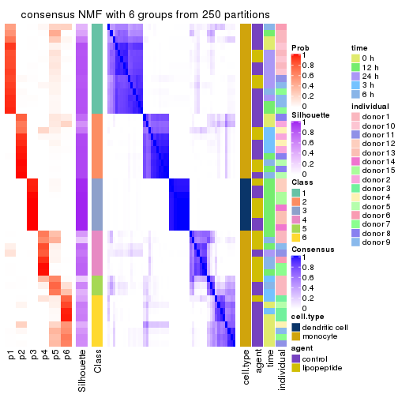
Heatmaps for the membership of samples in all partitions to see how consistent they are:
membership_heatmap(res, k = 2)
membership_heatmap(res, k = 3)
membership_heatmap(res, k = 4)
membership_heatmap(res, k = 5)
membership_heatmap(res, k = 6)
As soon as we have had the classes for columns, we can look for signatures which are significantly different between classes which can be candidate marks for certain classes. Following are the heatmaps for signatures.
Signature heatmaps where rows are scaled:
get_signatures(res, k = 2)
get_signatures(res, k = 3)
get_signatures(res, k = 4)
get_signatures(res, k = 5)

get_signatures(res, k = 6)
Signature heatmaps where rows are not scaled:
get_signatures(res, k = 2, scale_rows = FALSE)

get_signatures(res, k = 3, scale_rows = FALSE)
get_signatures(res, k = 4, scale_rows = FALSE)

get_signatures(res, k = 5, scale_rows = FALSE)
get_signatures(res, k = 6, scale_rows = FALSE)
Compare the overlap of signatures from different k:
compare_signatures(res)
get_signature() returns a data frame invisibly. TO get the list of signatures, the function
call should be assigned to a variable explicitly. In following code, if plot argument is set
to FALSE, no heatmap is plotted while only the differential analysis is performed.
# code only for demonstration
tb = get_signature(res, k = ..., plot = FALSE)
An example of the output of tb is:
#> which_row fdr mean_1 mean_2 scaled_mean_1 scaled_mean_2 km
#> 1 38 0.042760348 8.373488 9.131774 -0.5533452 0.5164555 1
#> 2 40 0.018707592 7.106213 8.469186 -0.6173731 0.5762149 1
#> 3 55 0.019134737 10.221463 11.207825 -0.6159697 0.5749050 1
#> 4 59 0.006059896 5.921854 7.869574 -0.6899429 0.6439467 1
#> 5 60 0.018055526 8.928898 10.211722 -0.6204761 0.5791110 1
#> 6 98 0.009384629 15.714769 14.887706 0.6635654 -0.6193277 2
...
The columns in tb are:
which_row: row indices corresponding to the input matrix.fdr: FDR for the differential test. mean_x: The mean value in group x.scaled_mean_x: The mean value in group x after rows are scaled.km: Row groups if k-means clustering is applied to rows.UMAP plot which shows how samples are separated.
dimension_reduction(res, k = 2, method = "UMAP")
dimension_reduction(res, k = 3, method = "UMAP")
dimension_reduction(res, k = 4, method = "UMAP")
dimension_reduction(res, k = 5, method = "UMAP")
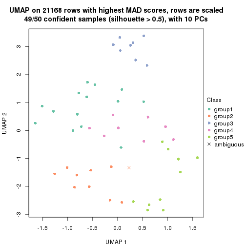
dimension_reduction(res, k = 6, method = "UMAP")
Following heatmap shows how subgroups are split when increasing k:
collect_classes(res)
Test correlation between subgroups and known annotations. If the known annotation is numeric, one-way ANOVA test is applied, and if the known annotation is discrete, chi-squared contingency table test is applied.
test_to_known_factors(res)
#> n cell.type(p) agent(p) time(p) individual(p) k
#> MAD:NMF 49 2.39e-03 0.543508 1.54e-04 2.91e-02 2
#> MAD:NMF 45 3.31e-04 0.000644 6.63e-08 6.11e-02 3
#> MAD:NMF 46 1.76e-03 0.000589 8.57e-05 4.68e-02 4
#> MAD:NMF 49 5.84e-10 0.013181 1.16e-05 9.26e-06 5
#> MAD:NMF 43 3.70e-08 0.076599 2.26e-06 4.02e-04 6
If matrix rows can be associated to genes, consider to use functional_enrichment(res,
...) to perform function enrichment for the signature genes. See this vignette for more detailed explanations.
The object with results only for a single top-value method and a single partition method can be extracted as:
res = res_list["ATC", "hclust"]
# you can also extract it by
# res = res_list["ATC:hclust"]
A summary of res and all the functions that can be applied to it:
res
#> A 'ConsensusPartition' object with k = 2, 3, 4, 5, 6.
#> On a matrix with 21168 rows and 50 columns.
#> Top rows (1000, 2000, 3000, 4000, 5000) are extracted by 'ATC' method.
#> Subgroups are detected by 'hclust' method.
#> Performed in total 1250 partitions by row resampling.
#> Best k for subgroups seems to be 2.
#>
#> Following methods can be applied to this 'ConsensusPartition' object:
#> [1] "cola_report" "collect_classes" "collect_plots"
#> [4] "collect_stats" "colnames" "compare_signatures"
#> [7] "consensus_heatmap" "dimension_reduction" "functional_enrichment"
#> [10] "get_anno_col" "get_anno" "get_classes"
#> [13] "get_consensus" "get_matrix" "get_membership"
#> [16] "get_param" "get_signatures" "get_stats"
#> [19] "is_best_k" "is_stable_k" "membership_heatmap"
#> [22] "ncol" "nrow" "plot_ecdf"
#> [25] "rownames" "select_partition_number" "show"
#> [28] "suggest_best_k" "test_to_known_factors"
collect_plots() function collects all the plots made from res for all k (number of partitions)
into one single page to provide an easy and fast comparison between different k.
collect_plots(res)
The plots are:
k and the heatmap of
predicted classes for each k.k.k.k.All the plots in panels can be made by individual functions and they are plotted later in this section.
select_partition_number() produces several plots showing different
statistics for choosing “optimized” k. There are following statistics:
k;k, the area increased is defined as \(A_k - A_{k-1}\).The detailed explanations of these statistics can be found in the cola vignette.
Generally speaking, lower PAC score, higher mean silhouette score or higher
concordance corresponds to better partition. Rand index and Jaccard index
measure how similar the current partition is compared to partition with k-1.
If they are too similar, we won't accept k is better than k-1.
select_partition_number(res)

The numeric values for all these statistics can be obtained by get_stats().
get_stats(res)
#> k 1-PAC mean_silhouette concordance area_increased Rand Jaccard
#> 2 2 0.554 0.817 0.914 0.4786 0.503 0.503
#> 3 3 0.616 0.723 0.804 0.3292 0.715 0.506
#> 4 4 0.740 0.891 0.895 0.1229 0.903 0.739
#> 5 5 0.783 0.806 0.884 0.0451 0.984 0.942
#> 6 6 0.806 0.835 0.892 0.0213 0.990 0.963
suggest_best_k() suggests the best \(k\) based on these statistics. The rules are as follows:
suggest_best_k(res)
#> [1] 2
Following shows the table of the partitions (You need to click the show/hide
code output link to see it). The membership matrix (columns with name p*)
is inferred by
clue::cl_consensus()
function with the SE method. Basically the value in the membership matrix
represents the probability to belong to a certain group. The finall class
label for an item is determined with the group with highest probability it
belongs to.
In get_classes() function, the entropy is calculated from the membership
matrix and the silhouette score is calculated from the consensus matrix.
cbind(get_classes(res, k = 2), get_membership(res, k = 2))
#> class entropy silhouette p1 p2
#> GSM225374 1 0.000 0.903 1.000 0.000
#> GSM225349 2 0.000 0.882 0.000 1.000
#> GSM225367 2 0.000 0.882 0.000 1.000
#> GSM225356 2 0.000 0.882 0.000 1.000
#> GSM225353 2 0.000 0.882 0.000 1.000
#> GSM225653 2 0.000 0.882 0.000 1.000
#> GSM209847 2 0.000 0.882 0.000 1.000
#> GSM225658 2 0.000 0.882 0.000 1.000
#> GSM225370 1 0.697 0.812 0.812 0.188
#> GSM225364 2 0.000 0.882 0.000 1.000
#> GSM225645 2 0.000 0.882 0.000 1.000
#> GSM225350 2 0.000 0.882 0.000 1.000
#> GSM225368 2 0.000 0.882 0.000 1.000
#> GSM225357 2 0.000 0.882 0.000 1.000
#> GSM225651 2 0.000 0.882 0.000 1.000
#> GSM225354 2 0.000 0.882 0.000 1.000
#> GSM225360 2 0.949 0.473 0.368 0.632
#> GSM225657 1 0.722 0.801 0.800 0.200
#> GSM225377 2 0.961 0.436 0.384 0.616
#> GSM225656 1 0.706 0.809 0.808 0.192
#> GSM225347 2 0.866 0.610 0.288 0.712
#> GSM225660 1 0.680 0.818 0.820 0.180
#> GSM225712 1 0.000 0.903 1.000 0.000
#> GSM225663 1 0.000 0.903 1.000 0.000
#> GSM225373 1 0.000 0.903 1.000 0.000
#> GSM225366 1 0.722 0.801 0.800 0.200
#> GSM225380 2 0.000 0.882 0.000 1.000
#> GSM225351 2 0.000 0.882 0.000 1.000
#> GSM225369 2 0.000 0.882 0.000 1.000
#> GSM225358 2 0.000 0.882 0.000 1.000
#> GSM225649 2 0.000 0.882 0.000 1.000
#> GSM225355 2 0.000 0.882 0.000 1.000
#> GSM225361 2 0.000 0.882 0.000 1.000
#> GSM225655 2 0.932 0.515 0.348 0.652
#> GSM225376 2 0.949 0.473 0.368 0.632
#> GSM225654 2 0.932 0.515 0.348 0.652
#> GSM225348 2 0.866 0.610 0.288 0.712
#> GSM225659 2 0.932 0.515 0.348 0.652
#> GSM225378 1 0.706 0.809 0.808 0.192
#> GSM225661 1 0.722 0.801 0.800 0.200
#> GSM225372 1 0.722 0.801 0.800 0.200
#> GSM225365 1 0.000 0.903 1.000 0.000
#> GSM225860 1 0.000 0.903 1.000 0.000
#> GSM225875 1 0.000 0.903 1.000 0.000
#> GSM225878 1 0.000 0.903 1.000 0.000
#> GSM225885 1 0.000 0.903 1.000 0.000
#> GSM225867 1 0.000 0.903 1.000 0.000
#> GSM225871 1 0.000 0.903 1.000 0.000
#> GSM225881 1 0.000 0.903 1.000 0.000
#> GSM225887 1 0.000 0.903 1.000 0.000
cbind(get_classes(res, k = 3), get_membership(res, k = 3))
#> class entropy silhouette p1 p2 p3
#> GSM225374 1 0.4555 0.262 0.800 0.000 0.200
#> GSM225349 2 0.0000 0.910 0.000 1.000 0.000
#> GSM225367 2 0.1643 0.907 0.000 0.956 0.044
#> GSM225356 2 0.0000 0.910 0.000 1.000 0.000
#> GSM225353 2 0.0000 0.910 0.000 1.000 0.000
#> GSM225653 2 0.0000 0.910 0.000 1.000 0.000
#> GSM209847 2 0.0000 0.910 0.000 1.000 0.000
#> GSM225658 2 0.0000 0.910 0.000 1.000 0.000
#> GSM225370 1 0.0592 0.571 0.988 0.000 0.012
#> GSM225364 2 0.0000 0.910 0.000 1.000 0.000
#> GSM225645 2 0.3340 0.894 0.000 0.880 0.120
#> GSM225350 2 0.0000 0.910 0.000 1.000 0.000
#> GSM225368 2 0.4062 0.869 0.000 0.836 0.164
#> GSM225357 2 0.3340 0.894 0.000 0.880 0.120
#> GSM225651 2 0.3340 0.894 0.000 0.880 0.120
#> GSM225354 2 0.0000 0.910 0.000 1.000 0.000
#> GSM225360 1 0.8940 0.536 0.568 0.200 0.232
#> GSM225657 1 0.0000 0.579 1.000 0.000 0.000
#> GSM225377 1 0.8854 0.538 0.576 0.188 0.236
#> GSM225656 1 0.0424 0.575 0.992 0.000 0.008
#> GSM225347 1 0.9517 0.481 0.488 0.280 0.232
#> GSM225660 1 0.0892 0.564 0.980 0.000 0.020
#> GSM225712 1 0.4555 0.262 0.800 0.000 0.200
#> GSM225663 1 0.4555 0.262 0.800 0.000 0.200
#> GSM225373 1 0.4555 0.262 0.800 0.000 0.200
#> GSM225366 1 0.0000 0.579 1.000 0.000 0.000
#> GSM225380 2 0.3340 0.894 0.000 0.880 0.120
#> GSM225351 2 0.0000 0.910 0.000 1.000 0.000
#> GSM225369 2 0.4062 0.869 0.000 0.836 0.164
#> GSM225358 2 0.3340 0.894 0.000 0.880 0.120
#> GSM225649 2 0.3340 0.894 0.000 0.880 0.120
#> GSM225355 2 0.0000 0.910 0.000 1.000 0.000
#> GSM225361 2 0.4062 0.869 0.000 0.836 0.164
#> GSM225655 2 0.9752 -0.283 0.352 0.416 0.232
#> GSM225376 1 0.8940 0.536 0.568 0.200 0.232
#> GSM225654 1 0.9182 0.525 0.540 0.228 0.232
#> GSM225348 1 0.9517 0.481 0.488 0.280 0.232
#> GSM225659 1 0.9182 0.525 0.540 0.228 0.232
#> GSM225378 1 0.0424 0.575 0.992 0.000 0.008
#> GSM225661 1 0.0000 0.579 1.000 0.000 0.000
#> GSM225372 1 0.0000 0.579 1.000 0.000 0.000
#> GSM225365 1 0.4555 0.262 0.800 0.000 0.200
#> GSM225860 3 0.6111 1.000 0.396 0.000 0.604
#> GSM225875 3 0.6111 1.000 0.396 0.000 0.604
#> GSM225878 3 0.6111 1.000 0.396 0.000 0.604
#> GSM225885 3 0.6111 1.000 0.396 0.000 0.604
#> GSM225867 3 0.6111 1.000 0.396 0.000 0.604
#> GSM225871 3 0.6111 1.000 0.396 0.000 0.604
#> GSM225881 3 0.6111 1.000 0.396 0.000 0.604
#> GSM225887 3 0.6111 1.000 0.396 0.000 0.604
cbind(get_classes(res, k = 4), get_membership(res, k = 4))
#> class entropy silhouette p1 p2 p3 p4
#> GSM225374 1 0.000 0.847 1.000 0.000 0 0.000
#> GSM225349 2 0.112 0.886 0.000 0.964 0 0.036
#> GSM225367 2 0.187 0.877 0.000 0.928 0 0.072
#> GSM225356 2 0.112 0.886 0.000 0.964 0 0.036
#> GSM225353 2 0.112 0.886 0.000 0.964 0 0.036
#> GSM225653 2 0.112 0.886 0.000 0.964 0 0.036
#> GSM209847 2 0.112 0.886 0.000 0.964 0 0.036
#> GSM225658 2 0.112 0.886 0.000 0.964 0 0.036
#> GSM225370 1 0.349 0.894 0.812 0.000 0 0.188
#> GSM225364 2 0.112 0.886 0.000 0.964 0 0.036
#> GSM225645 2 0.322 0.863 0.000 0.836 0 0.164
#> GSM225350 2 0.112 0.886 0.000 0.964 0 0.036
#> GSM225368 2 0.353 0.839 0.000 0.808 0 0.192
#> GSM225357 2 0.322 0.863 0.000 0.836 0 0.164
#> GSM225651 2 0.322 0.863 0.000 0.836 0 0.164
#> GSM225354 2 0.112 0.886 0.000 0.964 0 0.036
#> GSM225360 4 0.475 0.897 0.084 0.128 0 0.788
#> GSM225657 1 0.361 0.891 0.800 0.000 0 0.200
#> GSM225377 4 0.500 0.885 0.100 0.128 0 0.772
#> GSM225656 1 0.353 0.893 0.808 0.000 0 0.192
#> GSM225347 4 0.353 0.880 0.000 0.192 0 0.808
#> GSM225660 1 0.340 0.893 0.820 0.000 0 0.180
#> GSM225712 1 0.000 0.847 1.000 0.000 0 0.000
#> GSM225663 1 0.000 0.847 1.000 0.000 0 0.000
#> GSM225373 1 0.000 0.847 1.000 0.000 0 0.000
#> GSM225366 1 0.361 0.891 0.800 0.000 0 0.200
#> GSM225380 2 0.322 0.863 0.000 0.836 0 0.164
#> GSM225351 2 0.112 0.886 0.000 0.964 0 0.036
#> GSM225369 2 0.353 0.839 0.000 0.808 0 0.192
#> GSM225358 2 0.322 0.863 0.000 0.836 0 0.164
#> GSM225649 2 0.322 0.863 0.000 0.836 0 0.164
#> GSM225355 2 0.112 0.886 0.000 0.964 0 0.036
#> GSM225361 2 0.353 0.839 0.000 0.808 0 0.192
#> GSM225655 4 0.614 0.629 0.064 0.340 0 0.596
#> GSM225376 4 0.475 0.897 0.084 0.128 0 0.788
#> GSM225654 4 0.456 0.905 0.064 0.140 0 0.796
#> GSM225348 4 0.353 0.880 0.000 0.192 0 0.808
#> GSM225659 4 0.456 0.905 0.064 0.140 0 0.796
#> GSM225378 1 0.353 0.893 0.808 0.000 0 0.192
#> GSM225661 1 0.361 0.891 0.800 0.000 0 0.200
#> GSM225372 1 0.361 0.891 0.800 0.000 0 0.200
#> GSM225365 1 0.000 0.847 1.000 0.000 0 0.000
#> GSM225860 3 0.000 1.000 0.000 0.000 1 0.000
#> GSM225875 3 0.000 1.000 0.000 0.000 1 0.000
#> GSM225878 3 0.000 1.000 0.000 0.000 1 0.000
#> GSM225885 3 0.000 1.000 0.000 0.000 1 0.000
#> GSM225867 3 0.000 1.000 0.000 0.000 1 0.000
#> GSM225871 3 0.000 1.000 0.000 0.000 1 0.000
#> GSM225881 3 0.000 1.000 0.000 0.000 1 0.000
#> GSM225887 3 0.000 1.000 0.000 0.000 1 0.000
cbind(get_classes(res, k = 5), get_membership(res, k = 5))
#> class entropy silhouette p1 p2 p3 p4 p5
#> GSM225374 1 0.3449 0.838 0.812 0.000 0 0.164 0.024
#> GSM225349 2 0.0000 0.822 0.000 1.000 0 0.000 0.000
#> GSM225367 5 0.5673 0.000 0.000 0.184 0 0.184 0.632
#> GSM225356 2 0.0000 0.822 0.000 1.000 0 0.000 0.000
#> GSM225353 2 0.0000 0.822 0.000 1.000 0 0.000 0.000
#> GSM225653 2 0.0000 0.822 0.000 1.000 0 0.000 0.000
#> GSM209847 2 0.0000 0.822 0.000 1.000 0 0.000 0.000
#> GSM225658 2 0.0000 0.822 0.000 1.000 0 0.000 0.000
#> GSM225370 1 0.0000 0.893 1.000 0.000 0 0.000 0.000
#> GSM225364 2 0.0000 0.822 0.000 1.000 0 0.000 0.000
#> GSM225645 2 0.4298 0.745 0.000 0.756 0 0.060 0.184
#> GSM225350 2 0.0000 0.822 0.000 1.000 0 0.000 0.000
#> GSM225368 2 0.4138 0.583 0.000 0.616 0 0.000 0.384
#> GSM225357 2 0.4298 0.745 0.000 0.756 0 0.060 0.184
#> GSM225651 2 0.4298 0.745 0.000 0.756 0 0.060 0.184
#> GSM225354 2 0.0000 0.822 0.000 1.000 0 0.000 0.000
#> GSM225360 4 0.4080 0.807 0.252 0.020 0 0.728 0.000
#> GSM225657 1 0.0404 0.890 0.988 0.000 0 0.012 0.000
#> GSM225377 4 0.4181 0.797 0.268 0.020 0 0.712 0.000
#> GSM225656 1 0.0162 0.893 0.996 0.000 0 0.004 0.000
#> GSM225347 4 0.5998 0.639 0.168 0.228 0 0.600 0.004
#> GSM225660 1 0.0324 0.893 0.992 0.000 0 0.004 0.004
#> GSM225712 1 0.3449 0.838 0.812 0.000 0 0.164 0.024
#> GSM225663 1 0.3449 0.838 0.812 0.000 0 0.164 0.024
#> GSM225373 1 0.3449 0.838 0.812 0.000 0 0.164 0.024
#> GSM225366 1 0.0404 0.890 0.988 0.000 0 0.012 0.000
#> GSM225380 2 0.4298 0.745 0.000 0.756 0 0.060 0.184
#> GSM225351 2 0.0000 0.822 0.000 1.000 0 0.000 0.000
#> GSM225369 2 0.4138 0.583 0.000 0.616 0 0.000 0.384
#> GSM225358 2 0.4298 0.745 0.000 0.756 0 0.060 0.184
#> GSM225649 2 0.4298 0.745 0.000 0.756 0 0.060 0.184
#> GSM225355 2 0.0000 0.822 0.000 1.000 0 0.000 0.000
#> GSM225361 2 0.4138 0.583 0.000 0.616 0 0.000 0.384
#> GSM225655 4 0.4384 0.436 0.044 0.228 0 0.728 0.000
#> GSM225376 4 0.4080 0.807 0.252 0.020 0 0.728 0.000
#> GSM225654 4 0.4054 0.807 0.224 0.028 0 0.748 0.000
#> GSM225348 4 0.5998 0.639 0.168 0.228 0 0.600 0.004
#> GSM225659 4 0.4054 0.807 0.224 0.028 0 0.748 0.000
#> GSM225378 1 0.0162 0.893 0.996 0.000 0 0.004 0.000
#> GSM225661 1 0.0404 0.890 0.988 0.000 0 0.012 0.000
#> GSM225372 1 0.0404 0.890 0.988 0.000 0 0.012 0.000
#> GSM225365 1 0.3449 0.838 0.812 0.000 0 0.164 0.024
#> GSM225860 3 0.0000 1.000 0.000 0.000 1 0.000 0.000
#> GSM225875 3 0.0000 1.000 0.000 0.000 1 0.000 0.000
#> GSM225878 3 0.0000 1.000 0.000 0.000 1 0.000 0.000
#> GSM225885 3 0.0000 1.000 0.000 0.000 1 0.000 0.000
#> GSM225867 3 0.0000 1.000 0.000 0.000 1 0.000 0.000
#> GSM225871 3 0.0000 1.000 0.000 0.000 1 0.000 0.000
#> GSM225881 3 0.0000 1.000 0.000 0.000 1 0.000 0.000
#> GSM225887 3 0.0000 1.000 0.000 0.000 1 0.000 0.000
cbind(get_classes(res, k = 6), get_membership(res, k = 6))
#> class entropy silhouette p1 p2 p3 p4 p5 p6
#> GSM225374 1 0.0000 0.841 1.000 0.000 0 0.000 0.000 0.000
#> GSM225349 6 0.2664 0.827 0.000 0.184 0 0.000 0.000 0.816
#> GSM225367 5 0.2416 0.000 0.000 0.000 0 0.000 0.844 0.156
#> GSM225356 6 0.2664 0.827 0.000 0.184 0 0.000 0.000 0.816
#> GSM225353 6 0.2664 0.827 0.000 0.184 0 0.000 0.000 0.816
#> GSM225653 6 0.2664 0.827 0.000 0.184 0 0.000 0.000 0.816
#> GSM209847 6 0.2664 0.827 0.000 0.184 0 0.000 0.000 0.816
#> GSM225658 6 0.2664 0.827 0.000 0.184 0 0.000 0.000 0.816
#> GSM225370 1 0.2915 0.898 0.808 0.008 0 0.184 0.000 0.000
#> GSM225364 6 0.2664 0.827 0.000 0.184 0 0.000 0.000 0.816
#> GSM225645 6 0.1444 0.757 0.000 0.000 0 0.072 0.000 0.928
#> GSM225350 6 0.2664 0.827 0.000 0.184 0 0.000 0.000 0.816
#> GSM225368 6 0.3381 0.619 0.000 0.044 0 0.000 0.156 0.800
#> GSM225357 6 0.1444 0.757 0.000 0.000 0 0.072 0.000 0.928
#> GSM225651 6 0.1444 0.757 0.000 0.000 0 0.072 0.000 0.928
#> GSM225354 6 0.2664 0.827 0.000 0.184 0 0.000 0.000 0.816
#> GSM225360 4 0.0806 0.882 0.020 0.008 0 0.972 0.000 0.000
#> GSM225657 1 0.2980 0.896 0.800 0.008 0 0.192 0.000 0.000
#> GSM225377 4 0.1124 0.870 0.036 0.008 0 0.956 0.000 0.000
#> GSM225656 1 0.2915 0.899 0.808 0.008 0 0.184 0.000 0.000
#> GSM225347 2 0.1007 1.000 0.000 0.956 0 0.000 0.000 0.044
#> GSM225660 1 0.2631 0.898 0.820 0.000 0 0.180 0.000 0.000
#> GSM225712 1 0.0000 0.841 1.000 0.000 0 0.000 0.000 0.000
#> GSM225663 1 0.0000 0.841 1.000 0.000 0 0.000 0.000 0.000
#> GSM225373 1 0.0000 0.841 1.000 0.000 0 0.000 0.000 0.000
#> GSM225366 1 0.3012 0.895 0.796 0.008 0 0.196 0.000 0.000
#> GSM225380 6 0.1444 0.757 0.000 0.000 0 0.072 0.000 0.928
#> GSM225351 6 0.2664 0.827 0.000 0.184 0 0.000 0.000 0.816
#> GSM225369 6 0.3381 0.619 0.000 0.044 0 0.000 0.156 0.800
#> GSM225358 6 0.1444 0.757 0.000 0.000 0 0.072 0.000 0.928
#> GSM225649 6 0.1444 0.757 0.000 0.000 0 0.072 0.000 0.928
#> GSM225355 6 0.2664 0.827 0.000 0.184 0 0.000 0.000 0.816
#> GSM225361 6 0.3381 0.619 0.000 0.044 0 0.000 0.156 0.800
#> GSM225655 4 0.2933 0.479 0.000 0.004 0 0.796 0.000 0.200
#> GSM225376 4 0.0806 0.882 0.020 0.008 0 0.972 0.000 0.000
#> GSM225654 4 0.0146 0.878 0.000 0.004 0 0.996 0.000 0.000
#> GSM225348 2 0.1007 1.000 0.000 0.956 0 0.000 0.000 0.044
#> GSM225659 4 0.0146 0.878 0.000 0.004 0 0.996 0.000 0.000
#> GSM225378 1 0.2915 0.899 0.808 0.008 0 0.184 0.000 0.000
#> GSM225661 1 0.3012 0.895 0.796 0.008 0 0.196 0.000 0.000
#> GSM225372 1 0.3012 0.895 0.796 0.008 0 0.196 0.000 0.000
#> GSM225365 1 0.0000 0.841 1.000 0.000 0 0.000 0.000 0.000
#> GSM225860 3 0.0000 1.000 0.000 0.000 1 0.000 0.000 0.000
#> GSM225875 3 0.0000 1.000 0.000 0.000 1 0.000 0.000 0.000
#> GSM225878 3 0.0000 1.000 0.000 0.000 1 0.000 0.000 0.000
#> GSM225885 3 0.0000 1.000 0.000 0.000 1 0.000 0.000 0.000
#> GSM225867 3 0.0000 1.000 0.000 0.000 1 0.000 0.000 0.000
#> GSM225871 3 0.0000 1.000 0.000 0.000 1 0.000 0.000 0.000
#> GSM225881 3 0.0000 1.000 0.000 0.000 1 0.000 0.000 0.000
#> GSM225887 3 0.0000 1.000 0.000 0.000 1 0.000 0.000 0.000
Heatmaps for the consensus matrix. It visualizes the probability of two samples to be in a same group.
consensus_heatmap(res, k = 2)
consensus_heatmap(res, k = 3)
consensus_heatmap(res, k = 4)
consensus_heatmap(res, k = 5)
consensus_heatmap(res, k = 6)
Heatmaps for the membership of samples in all partitions to see how consistent they are:
membership_heatmap(res, k = 2)
membership_heatmap(res, k = 3)
membership_heatmap(res, k = 4)
membership_heatmap(res, k = 5)
membership_heatmap(res, k = 6)
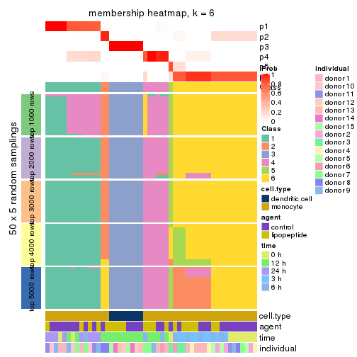
As soon as we have had the classes for columns, we can look for signatures which are significantly different between classes which can be candidate marks for certain classes. Following are the heatmaps for signatures.
Signature heatmaps where rows are scaled:
get_signatures(res, k = 2)
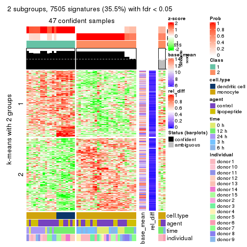
get_signatures(res, k = 3)
get_signatures(res, k = 4)
get_signatures(res, k = 5)
get_signatures(res, k = 6)
Signature heatmaps where rows are not scaled:
get_signatures(res, k = 2, scale_rows = FALSE)
get_signatures(res, k = 3, scale_rows = FALSE)
get_signatures(res, k = 4, scale_rows = FALSE)
get_signatures(res, k = 5, scale_rows = FALSE)
get_signatures(res, k = 6, scale_rows = FALSE)
Compare the overlap of signatures from different k:
compare_signatures(res)
get_signature() returns a data frame invisibly. TO get the list of signatures, the function
call should be assigned to a variable explicitly. In following code, if plot argument is set
to FALSE, no heatmap is plotted while only the differential analysis is performed.
# code only for demonstration
tb = get_signature(res, k = ..., plot = FALSE)
An example of the output of tb is:
#> which_row fdr mean_1 mean_2 scaled_mean_1 scaled_mean_2 km
#> 1 38 0.042760348 8.373488 9.131774 -0.5533452 0.5164555 1
#> 2 40 0.018707592 7.106213 8.469186 -0.6173731 0.5762149 1
#> 3 55 0.019134737 10.221463 11.207825 -0.6159697 0.5749050 1
#> 4 59 0.006059896 5.921854 7.869574 -0.6899429 0.6439467 1
#> 5 60 0.018055526 8.928898 10.211722 -0.6204761 0.5791110 1
#> 6 98 0.009384629 15.714769 14.887706 0.6635654 -0.6193277 2
...
The columns in tb are:
which_row: row indices corresponding to the input matrix.fdr: FDR for the differential test. mean_x: The mean value in group x.scaled_mean_x: The mean value in group x after rows are scaled.km: Row groups if k-means clustering is applied to rows.UMAP plot which shows how samples are separated.
dimension_reduction(res, k = 2, method = "UMAP")
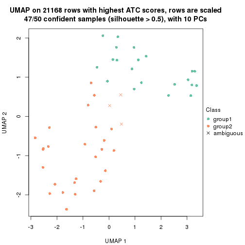
dimension_reduction(res, k = 3, method = "UMAP")
dimension_reduction(res, k = 4, method = "UMAP")
dimension_reduction(res, k = 5, method = "UMAP")
dimension_reduction(res, k = 6, method = "UMAP")
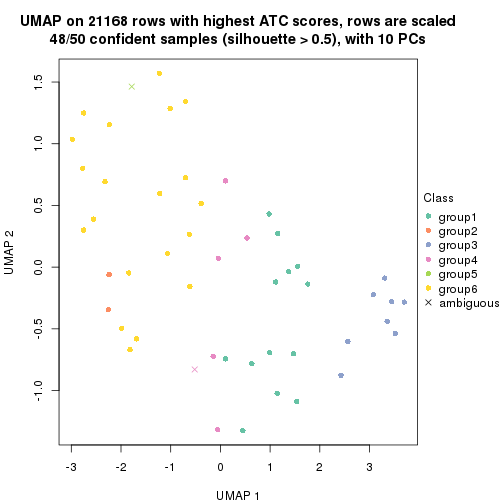
Following heatmap shows how subgroups are split when increasing k:
collect_classes(res)
Test correlation between subgroups and known annotations. If the known annotation is numeric, one-way ANOVA test is applied, and if the known annotation is discrete, chi-squared contingency table test is applied.
test_to_known_factors(res)
#> n cell.type(p) agent(p) time(p) individual(p) k
#> ATC:hclust 47 2.18e-03 1.000 3.99e-05 1.58e-02 2
#> ATC:hclust 42 7.58e-10 0.631 9.58e-07 2.28e-04 3
#> ATC:hclust 50 7.99e-11 0.412 8.74e-10 4.80e-05 4
#> ATC:hclust 48 2.13e-10 0.601 1.88e-09 1.54e-04 5
#> ATC:hclust 48 9.44e-10 0.750 4.16e-08 2.24e-05 6
If matrix rows can be associated to genes, consider to use functional_enrichment(res,
...) to perform function enrichment for the signature genes. See this vignette for more detailed explanations.
The object with results only for a single top-value method and a single partition method can be extracted as:
res = res_list["ATC", "kmeans"]
# you can also extract it by
# res = res_list["ATC:kmeans"]
A summary of res and all the functions that can be applied to it:
res
#> A 'ConsensusPartition' object with k = 2, 3, 4, 5, 6.
#> On a matrix with 21168 rows and 50 columns.
#> Top rows (1000, 2000, 3000, 4000, 5000) are extracted by 'ATC' method.
#> Subgroups are detected by 'kmeans' method.
#> Performed in total 1250 partitions by row resampling.
#> Best k for subgroups seems to be 2.
#>
#> Following methods can be applied to this 'ConsensusPartition' object:
#> [1] "cola_report" "collect_classes" "collect_plots"
#> [4] "collect_stats" "colnames" "compare_signatures"
#> [7] "consensus_heatmap" "dimension_reduction" "functional_enrichment"
#> [10] "get_anno_col" "get_anno" "get_classes"
#> [13] "get_consensus" "get_matrix" "get_membership"
#> [16] "get_param" "get_signatures" "get_stats"
#> [19] "is_best_k" "is_stable_k" "membership_heatmap"
#> [22] "ncol" "nrow" "plot_ecdf"
#> [25] "rownames" "select_partition_number" "show"
#> [28] "suggest_best_k" "test_to_known_factors"
collect_plots() function collects all the plots made from res for all k (number of partitions)
into one single page to provide an easy and fast comparison between different k.
collect_plots(res)
The plots are:
k and the heatmap of
predicted classes for each k.k.k.k.All the plots in panels can be made by individual functions and they are plotted later in this section.
select_partition_number() produces several plots showing different
statistics for choosing “optimized” k. There are following statistics:
k;k, the area increased is defined as \(A_k - A_{k-1}\).The detailed explanations of these statistics can be found in the cola vignette.
Generally speaking, lower PAC score, higher mean silhouette score or higher
concordance corresponds to better partition. Rand index and Jaccard index
measure how similar the current partition is compared to partition with k-1.
If they are too similar, we won't accept k is better than k-1.
select_partition_number(res)
The numeric values for all these statistics can be obtained by get_stats().
get_stats(res)
#> k 1-PAC mean_silhouette concordance area_increased Rand Jaccard
#> 2 2 1.000 1.000 1.000 0.4976 0.503 0.503
#> 3 3 0.689 0.820 0.862 0.2848 0.739 0.539
#> 4 4 0.628 0.636 0.800 0.1423 0.900 0.736
#> 5 5 0.714 0.644 0.722 0.0709 0.828 0.476
#> 6 6 0.747 0.751 0.809 0.0487 0.937 0.700
suggest_best_k() suggests the best \(k\) based on these statistics. The rules are as follows:
suggest_best_k(res)
#> [1] 2
Following shows the table of the partitions (You need to click the show/hide
code output link to see it). The membership matrix (columns with name p*)
is inferred by
clue::cl_consensus()
function with the SE method. Basically the value in the membership matrix
represents the probability to belong to a certain group. The finall class
label for an item is determined with the group with highest probability it
belongs to.
In get_classes() function, the entropy is calculated from the membership
matrix and the silhouette score is calculated from the consensus matrix.
cbind(get_classes(res, k = 2), get_membership(res, k = 2))
#> class entropy silhouette p1 p2
#> GSM225374 1 0 1 1 0
#> GSM225349 2 0 1 0 1
#> GSM225367 2 0 1 0 1
#> GSM225356 2 0 1 0 1
#> GSM225353 2 0 1 0 1
#> GSM225653 2 0 1 0 1
#> GSM209847 2 0 1 0 1
#> GSM225658 2 0 1 0 1
#> GSM225370 1 0 1 1 0
#> GSM225364 2 0 1 0 1
#> GSM225645 2 0 1 0 1
#> GSM225350 2 0 1 0 1
#> GSM225368 2 0 1 0 1
#> GSM225357 2 0 1 0 1
#> GSM225651 2 0 1 0 1
#> GSM225354 2 0 1 0 1
#> GSM225360 2 0 1 0 1
#> GSM225657 2 0 1 0 1
#> GSM225377 1 0 1 1 0
#> GSM225656 1 0 1 1 0
#> GSM225347 2 0 1 0 1
#> GSM225660 1 0 1 1 0
#> GSM225712 1 0 1 1 0
#> GSM225663 1 0 1 1 0
#> GSM225373 1 0 1 1 0
#> GSM225366 1 0 1 1 0
#> GSM225380 2 0 1 0 1
#> GSM225351 2 0 1 0 1
#> GSM225369 2 0 1 0 1
#> GSM225358 2 0 1 0 1
#> GSM225649 2 0 1 0 1
#> GSM225355 2 0 1 0 1
#> GSM225361 2 0 1 0 1
#> GSM225655 2 0 1 0 1
#> GSM225376 2 0 1 0 1
#> GSM225654 2 0 1 0 1
#> GSM225348 2 0 1 0 1
#> GSM225659 2 0 1 0 1
#> GSM225378 1 0 1 1 0
#> GSM225661 1 0 1 1 0
#> GSM225372 1 0 1 1 0
#> GSM225365 1 0 1 1 0
#> GSM225860 1 0 1 1 0
#> GSM225875 1 0 1 1 0
#> GSM225878 1 0 1 1 0
#> GSM225885 1 0 1 1 0
#> GSM225867 1 0 1 1 0
#> GSM225871 1 0 1 1 0
#> GSM225881 1 0 1 1 0
#> GSM225887 1 0 1 1 0
cbind(get_classes(res, k = 3), get_membership(res, k = 3))
#> class entropy silhouette p1 p2 p3
#> GSM225374 1 0.5098 0.782 0.752 0.000 0.248
#> GSM225349 2 0.0000 0.901 0.000 1.000 0.000
#> GSM225367 2 0.0237 0.901 0.004 0.996 0.000
#> GSM225356 2 0.0000 0.901 0.000 1.000 0.000
#> GSM225353 2 0.0237 0.901 0.004 0.996 0.000
#> GSM225653 2 0.0000 0.901 0.000 1.000 0.000
#> GSM209847 2 0.0000 0.901 0.000 1.000 0.000
#> GSM225658 2 0.0000 0.901 0.000 1.000 0.000
#> GSM225370 1 0.5098 0.782 0.752 0.000 0.248
#> GSM225364 2 0.0000 0.901 0.000 1.000 0.000
#> GSM225645 2 0.4654 0.869 0.208 0.792 0.000
#> GSM225350 2 0.1753 0.897 0.048 0.952 0.000
#> GSM225368 2 0.4121 0.880 0.168 0.832 0.000
#> GSM225357 2 0.4974 0.862 0.236 0.764 0.000
#> GSM225651 2 0.4931 0.865 0.232 0.768 0.000
#> GSM225354 2 0.1753 0.897 0.048 0.952 0.000
#> GSM225360 1 0.0000 0.641 1.000 0.000 0.000
#> GSM225657 1 0.2749 0.690 0.924 0.012 0.064
#> GSM225377 1 0.5016 0.781 0.760 0.000 0.240
#> GSM225656 1 0.5098 0.782 0.752 0.000 0.248
#> GSM225347 1 0.4555 0.616 0.800 0.200 0.000
#> GSM225660 1 0.5098 0.782 0.752 0.000 0.248
#> GSM225712 1 0.6154 0.598 0.592 0.000 0.408
#> GSM225663 1 0.6140 0.605 0.596 0.000 0.404
#> GSM225373 1 0.6154 0.598 0.592 0.000 0.408
#> GSM225366 1 0.5058 0.782 0.756 0.000 0.244
#> GSM225380 2 0.4654 0.869 0.208 0.792 0.000
#> GSM225351 2 0.0424 0.902 0.008 0.992 0.000
#> GSM225369 2 0.4121 0.880 0.168 0.832 0.000
#> GSM225358 2 0.4931 0.865 0.232 0.768 0.000
#> GSM225649 2 0.4931 0.865 0.232 0.768 0.000
#> GSM225355 2 0.1753 0.897 0.048 0.952 0.000
#> GSM225361 2 0.4931 0.865 0.232 0.768 0.000
#> GSM225655 2 0.5058 0.858 0.244 0.756 0.000
#> GSM225376 1 0.5363 0.270 0.724 0.276 0.000
#> GSM225654 1 0.5363 0.270 0.724 0.276 0.000
#> GSM225348 2 0.1753 0.897 0.048 0.952 0.000
#> GSM225659 1 0.3816 0.522 0.852 0.148 0.000
#> GSM225378 1 0.5098 0.782 0.752 0.000 0.248
#> GSM225661 1 0.5098 0.782 0.752 0.000 0.248
#> GSM225372 1 0.5058 0.782 0.756 0.000 0.244
#> GSM225365 1 0.5098 0.782 0.752 0.000 0.248
#> GSM225860 3 0.0000 1.000 0.000 0.000 1.000
#> GSM225875 3 0.0000 1.000 0.000 0.000 1.000
#> GSM225878 3 0.0000 1.000 0.000 0.000 1.000
#> GSM225885 3 0.0000 1.000 0.000 0.000 1.000
#> GSM225867 3 0.0000 1.000 0.000 0.000 1.000
#> GSM225871 3 0.0000 1.000 0.000 0.000 1.000
#> GSM225881 3 0.0000 1.000 0.000 0.000 1.000
#> GSM225887 3 0.0000 1.000 0.000 0.000 1.000
cbind(get_classes(res, k = 4), get_membership(res, k = 4))
#> class entropy silhouette p1 p2 p3 p4
#> GSM225374 1 0.0000 0.9178 1.000 0.000 0.000 0.000
#> GSM225349 2 0.0000 0.6089 0.000 1.000 0.000 0.000
#> GSM225367 2 0.2036 0.5908 0.000 0.936 0.032 0.032
#> GSM225356 2 0.0000 0.6089 0.000 1.000 0.000 0.000
#> GSM225353 2 0.1059 0.6039 0.000 0.972 0.016 0.012
#> GSM225653 2 0.0188 0.6081 0.000 0.996 0.000 0.004
#> GSM209847 2 0.0000 0.6089 0.000 1.000 0.000 0.000
#> GSM225658 2 0.0188 0.6081 0.000 0.996 0.000 0.004
#> GSM225370 1 0.0000 0.9178 1.000 0.000 0.000 0.000
#> GSM225364 2 0.0188 0.6081 0.000 0.996 0.000 0.004
#> GSM225645 2 0.5488 0.3425 0.000 0.532 0.016 0.452
#> GSM225350 2 0.5546 0.3647 0.000 0.680 0.052 0.268
#> GSM225368 2 0.5756 0.3758 0.000 0.568 0.032 0.400
#> GSM225357 4 0.5008 0.3571 0.000 0.228 0.040 0.732
#> GSM225651 2 0.5510 0.3124 0.000 0.504 0.016 0.480
#> GSM225354 2 0.6121 0.1234 0.000 0.552 0.052 0.396
#> GSM225360 4 0.4564 0.4178 0.328 0.000 0.000 0.672
#> GSM225657 1 0.6169 0.2830 0.572 0.004 0.048 0.376
#> GSM225377 1 0.2469 0.8795 0.892 0.000 0.000 0.108
#> GSM225656 1 0.0000 0.9178 1.000 0.000 0.000 0.000
#> GSM225347 4 0.8820 0.1620 0.224 0.336 0.052 0.388
#> GSM225660 1 0.0000 0.9178 1.000 0.000 0.000 0.000
#> GSM225712 1 0.1211 0.8975 0.960 0.000 0.040 0.000
#> GSM225663 1 0.1118 0.9004 0.964 0.000 0.036 0.000
#> GSM225373 1 0.1211 0.8975 0.960 0.000 0.040 0.000
#> GSM225366 1 0.2469 0.8795 0.892 0.000 0.000 0.108
#> GSM225380 2 0.5488 0.3425 0.000 0.532 0.016 0.452
#> GSM225351 2 0.3601 0.5582 0.000 0.860 0.056 0.084
#> GSM225369 2 0.5756 0.3758 0.000 0.568 0.032 0.400
#> GSM225358 2 0.5511 0.3106 0.000 0.500 0.016 0.484
#> GSM225649 2 0.5510 0.3124 0.000 0.504 0.016 0.480
#> GSM225355 2 0.5546 0.3647 0.000 0.680 0.052 0.268
#> GSM225361 2 0.5511 0.3106 0.000 0.500 0.016 0.484
#> GSM225655 4 0.4543 0.0915 0.000 0.324 0.000 0.676
#> GSM225376 4 0.3647 0.6392 0.108 0.040 0.000 0.852
#> GSM225654 4 0.3647 0.6392 0.108 0.040 0.000 0.852
#> GSM225348 2 0.6170 0.0695 0.000 0.528 0.052 0.420
#> GSM225659 4 0.5086 0.6255 0.144 0.024 0.048 0.784
#> GSM225378 1 0.1637 0.9058 0.940 0.000 0.000 0.060
#> GSM225661 1 0.1637 0.9058 0.940 0.000 0.000 0.060
#> GSM225372 1 0.2081 0.8939 0.916 0.000 0.000 0.084
#> GSM225365 1 0.0000 0.9178 1.000 0.000 0.000 0.000
#> GSM225860 3 0.3935 0.9618 0.100 0.000 0.840 0.060
#> GSM225875 3 0.2345 0.9875 0.100 0.000 0.900 0.000
#> GSM225878 3 0.2345 0.9875 0.100 0.000 0.900 0.000
#> GSM225885 3 0.2345 0.9875 0.100 0.000 0.900 0.000
#> GSM225867 3 0.3935 0.9618 0.100 0.000 0.840 0.060
#> GSM225871 3 0.2345 0.9875 0.100 0.000 0.900 0.000
#> GSM225881 3 0.2345 0.9875 0.100 0.000 0.900 0.000
#> GSM225887 3 0.2345 0.9875 0.100 0.000 0.900 0.000
cbind(get_classes(res, k = 5), get_membership(res, k = 5))
#> class entropy silhouette p1 p2 p3 p4 p5
#> GSM225374 1 0.0510 0.8603 0.984 0.000 0.000 0.000 0.016
#> GSM225349 5 0.7041 0.3934 0.000 0.296 0.008 0.336 0.360
#> GSM225367 5 0.7206 0.3335 0.000 0.248 0.024 0.300 0.428
#> GSM225356 5 0.7041 0.3934 0.000 0.296 0.008 0.336 0.360
#> GSM225353 5 0.7162 0.3844 0.000 0.264 0.016 0.344 0.376
#> GSM225653 5 0.6939 0.3918 0.000 0.300 0.004 0.328 0.368
#> GSM209847 5 0.7041 0.3934 0.000 0.296 0.008 0.336 0.360
#> GSM225658 5 0.6939 0.3918 0.000 0.300 0.004 0.328 0.368
#> GSM225370 1 0.0290 0.8607 0.992 0.000 0.000 0.000 0.008
#> GSM225364 5 0.6939 0.3918 0.000 0.300 0.004 0.328 0.368
#> GSM225645 4 0.0609 0.8189 0.000 0.000 0.000 0.980 0.020
#> GSM225350 2 0.3143 0.7094 0.000 0.796 0.000 0.204 0.000
#> GSM225368 4 0.2959 0.7082 0.000 0.008 0.016 0.864 0.112
#> GSM225357 4 0.5713 0.0720 0.000 0.416 0.000 0.500 0.084
#> GSM225651 4 0.0290 0.8267 0.000 0.008 0.000 0.992 0.000
#> GSM225354 2 0.1792 0.7228 0.000 0.916 0.000 0.084 0.000
#> GSM225360 5 0.7735 -0.0814 0.112 0.132 0.000 0.344 0.412
#> GSM225657 1 0.6993 0.2994 0.384 0.228 0.000 0.012 0.376
#> GSM225377 1 0.4451 0.6950 0.644 0.016 0.000 0.000 0.340
#> GSM225656 1 0.0566 0.8611 0.984 0.004 0.000 0.000 0.012
#> GSM225347 2 0.3354 0.6010 0.068 0.844 0.000 0.000 0.088
#> GSM225660 1 0.0671 0.8603 0.980 0.004 0.000 0.000 0.016
#> GSM225712 1 0.0000 0.8613 1.000 0.000 0.000 0.000 0.000
#> GSM225663 1 0.0671 0.8603 0.980 0.004 0.000 0.000 0.016
#> GSM225373 1 0.0000 0.8613 1.000 0.000 0.000 0.000 0.000
#> GSM225366 1 0.4451 0.6950 0.644 0.016 0.000 0.000 0.340
#> GSM225380 4 0.0609 0.8189 0.000 0.000 0.000 0.980 0.020
#> GSM225351 2 0.4787 0.4509 0.000 0.640 0.000 0.324 0.036
#> GSM225369 4 0.2959 0.7082 0.000 0.008 0.016 0.864 0.112
#> GSM225358 4 0.0290 0.8267 0.000 0.008 0.000 0.992 0.000
#> GSM225649 4 0.0290 0.8267 0.000 0.008 0.000 0.992 0.000
#> GSM225355 2 0.3143 0.7094 0.000 0.796 0.000 0.204 0.000
#> GSM225361 4 0.0451 0.8263 0.000 0.008 0.004 0.988 0.000
#> GSM225655 4 0.4219 0.5893 0.000 0.156 0.000 0.772 0.072
#> GSM225376 5 0.6980 -0.1058 0.012 0.224 0.000 0.380 0.384
#> GSM225654 5 0.6980 -0.1058 0.012 0.224 0.000 0.380 0.384
#> GSM225348 2 0.3242 0.6807 0.000 0.852 0.000 0.072 0.076
#> GSM225659 5 0.7530 -0.0590 0.040 0.308 0.000 0.268 0.384
#> GSM225378 1 0.2179 0.8367 0.888 0.000 0.000 0.000 0.112
#> GSM225661 1 0.2377 0.8317 0.872 0.000 0.000 0.000 0.128
#> GSM225372 1 0.3636 0.7558 0.728 0.000 0.000 0.000 0.272
#> GSM225365 1 0.0671 0.8603 0.980 0.004 0.000 0.000 0.016
#> GSM225860 3 0.4012 0.9005 0.036 0.032 0.816 0.000 0.116
#> GSM225875 3 0.0963 0.9665 0.036 0.000 0.964 0.000 0.000
#> GSM225878 3 0.0963 0.9665 0.036 0.000 0.964 0.000 0.000
#> GSM225885 3 0.1251 0.9654 0.036 0.008 0.956 0.000 0.000
#> GSM225867 3 0.4012 0.9005 0.036 0.032 0.816 0.000 0.116
#> GSM225871 3 0.0963 0.9665 0.036 0.000 0.964 0.000 0.000
#> GSM225881 3 0.0963 0.9665 0.036 0.000 0.964 0.000 0.000
#> GSM225887 3 0.1251 0.9654 0.036 0.008 0.956 0.000 0.000
cbind(get_classes(res, k = 6), get_membership(res, k = 6))
#> class entropy silhouette p1 p2 p3 p4 p5 p6
#> GSM225374 1 0.0291 0.867 0.992 0.004 0.000 0.000 0.000 0.004
#> GSM225349 6 0.6141 0.883 0.000 0.256 0.000 0.052 0.136 0.556
#> GSM225367 6 0.4974 0.610 0.000 0.104 0.000 0.084 0.088 0.724
#> GSM225356 6 0.6141 0.883 0.000 0.256 0.000 0.052 0.136 0.556
#> GSM225353 6 0.5981 0.856 0.000 0.208 0.000 0.056 0.140 0.596
#> GSM225653 6 0.5342 0.881 0.000 0.248 0.004 0.000 0.148 0.600
#> GSM209847 6 0.6141 0.883 0.000 0.256 0.000 0.052 0.136 0.556
#> GSM225658 6 0.5342 0.881 0.000 0.248 0.004 0.000 0.148 0.600
#> GSM225370 1 0.1075 0.861 0.952 0.000 0.000 0.048 0.000 0.000
#> GSM225364 6 0.5342 0.881 0.000 0.248 0.004 0.000 0.148 0.600
#> GSM225645 5 0.0622 0.845 0.000 0.008 0.000 0.000 0.980 0.012
#> GSM225350 2 0.1918 0.800 0.000 0.904 0.000 0.000 0.088 0.008
#> GSM225368 5 0.3663 0.710 0.000 0.004 0.000 0.072 0.796 0.128
#> GSM225357 5 0.6079 0.116 0.000 0.320 0.000 0.212 0.460 0.008
#> GSM225651 5 0.0146 0.844 0.000 0.004 0.000 0.000 0.996 0.000
#> GSM225354 2 0.1644 0.806 0.000 0.932 0.000 0.028 0.040 0.000
#> GSM225360 4 0.4234 0.613 0.024 0.008 0.000 0.708 0.252 0.008
#> GSM225657 4 0.5002 0.490 0.284 0.056 0.000 0.636 0.000 0.024
#> GSM225377 4 0.4294 0.137 0.428 0.000 0.000 0.552 0.000 0.020
#> GSM225656 1 0.1036 0.866 0.964 0.008 0.000 0.004 0.000 0.024
#> GSM225347 2 0.3973 0.709 0.048 0.784 0.000 0.140 0.000 0.028
#> GSM225660 1 0.0891 0.864 0.968 0.008 0.000 0.000 0.000 0.024
#> GSM225712 1 0.1196 0.863 0.952 0.000 0.008 0.040 0.000 0.000
#> GSM225663 1 0.1065 0.861 0.964 0.008 0.008 0.000 0.000 0.020
#> GSM225373 1 0.1196 0.863 0.952 0.000 0.008 0.040 0.000 0.000
#> GSM225366 4 0.4294 0.135 0.428 0.000 0.000 0.552 0.000 0.020
#> GSM225380 5 0.0622 0.845 0.000 0.008 0.000 0.000 0.980 0.012
#> GSM225351 2 0.4099 0.585 0.000 0.748 0.000 0.020 0.196 0.036
#> GSM225369 5 0.3703 0.707 0.000 0.004 0.000 0.072 0.792 0.132
#> GSM225358 5 0.0779 0.839 0.000 0.008 0.000 0.008 0.976 0.008
#> GSM225649 5 0.0146 0.844 0.000 0.004 0.000 0.000 0.996 0.000
#> GSM225355 2 0.1918 0.800 0.000 0.904 0.000 0.000 0.088 0.008
#> GSM225361 5 0.0865 0.839 0.000 0.000 0.000 0.036 0.964 0.000
#> GSM225655 5 0.3493 0.655 0.000 0.056 0.000 0.148 0.796 0.000
#> GSM225376 4 0.4771 0.600 0.012 0.064 0.000 0.660 0.264 0.000
#> GSM225654 4 0.4771 0.600 0.012 0.064 0.000 0.660 0.264 0.000
#> GSM225348 2 0.3306 0.763 0.000 0.820 0.000 0.136 0.036 0.008
#> GSM225659 4 0.5085 0.624 0.024 0.100 0.000 0.672 0.204 0.000
#> GSM225378 1 0.3189 0.735 0.796 0.000 0.000 0.184 0.000 0.020
#> GSM225661 1 0.3454 0.707 0.768 0.000 0.000 0.208 0.000 0.024
#> GSM225372 1 0.4269 0.218 0.568 0.000 0.000 0.412 0.000 0.020
#> GSM225365 1 0.0806 0.865 0.972 0.008 0.000 0.000 0.000 0.020
#> GSM225860 3 0.4371 0.838 0.004 0.032 0.768 0.072 0.000 0.124
#> GSM225875 3 0.0291 0.944 0.004 0.004 0.992 0.000 0.000 0.000
#> GSM225878 3 0.0146 0.944 0.004 0.000 0.996 0.000 0.000 0.000
#> GSM225885 3 0.0767 0.942 0.004 0.012 0.976 0.008 0.000 0.000
#> GSM225867 3 0.4371 0.838 0.004 0.032 0.768 0.072 0.000 0.124
#> GSM225871 3 0.0291 0.944 0.004 0.004 0.992 0.000 0.000 0.000
#> GSM225881 3 0.0146 0.944 0.004 0.000 0.996 0.000 0.000 0.000
#> GSM225887 3 0.0767 0.942 0.004 0.012 0.976 0.008 0.000 0.000
Heatmaps for the consensus matrix. It visualizes the probability of two samples to be in a same group.
consensus_heatmap(res, k = 2)
consensus_heatmap(res, k = 3)

consensus_heatmap(res, k = 4)
consensus_heatmap(res, k = 5)
consensus_heatmap(res, k = 6)
Heatmaps for the membership of samples in all partitions to see how consistent they are:
membership_heatmap(res, k = 2)
membership_heatmap(res, k = 3)
membership_heatmap(res, k = 4)
membership_heatmap(res, k = 5)
membership_heatmap(res, k = 6)
As soon as we have had the classes for columns, we can look for signatures which are significantly different between classes which can be candidate marks for certain classes. Following are the heatmaps for signatures.
Signature heatmaps where rows are scaled:
get_signatures(res, k = 2)
get_signatures(res, k = 3)
get_signatures(res, k = 4)
get_signatures(res, k = 5)
get_signatures(res, k = 6)
Signature heatmaps where rows are not scaled:
get_signatures(res, k = 2, scale_rows = FALSE)
get_signatures(res, k = 3, scale_rows = FALSE)
get_signatures(res, k = 4, scale_rows = FALSE)
get_signatures(res, k = 5, scale_rows = FALSE)
get_signatures(res, k = 6, scale_rows = FALSE)
Compare the overlap of signatures from different k:
compare_signatures(res)
get_signature() returns a data frame invisibly. TO get the list of signatures, the function
call should be assigned to a variable explicitly. In following code, if plot argument is set
to FALSE, no heatmap is plotted while only the differential analysis is performed.
# code only for demonstration
tb = get_signature(res, k = ..., plot = FALSE)
An example of the output of tb is:
#> which_row fdr mean_1 mean_2 scaled_mean_1 scaled_mean_2 km
#> 1 38 0.042760348 8.373488 9.131774 -0.5533452 0.5164555 1
#> 2 40 0.018707592 7.106213 8.469186 -0.6173731 0.5762149 1
#> 3 55 0.019134737 10.221463 11.207825 -0.6159697 0.5749050 1
#> 4 59 0.006059896 5.921854 7.869574 -0.6899429 0.6439467 1
#> 5 60 0.018055526 8.928898 10.211722 -0.6204761 0.5791110 1
#> 6 98 0.009384629 15.714769 14.887706 0.6635654 -0.6193277 2
...
The columns in tb are:
which_row: row indices corresponding to the input matrix.fdr: FDR for the differential test. mean_x: The mean value in group x.scaled_mean_x: The mean value in group x after rows are scaled.km: Row groups if k-means clustering is applied to rows.UMAP plot which shows how samples are separated.
dimension_reduction(res, k = 2, method = "UMAP")
dimension_reduction(res, k = 3, method = "UMAP")
dimension_reduction(res, k = 4, method = "UMAP")
dimension_reduction(res, k = 5, method = "UMAP")
dimension_reduction(res, k = 6, method = "UMAP")
Following heatmap shows how subgroups are split when increasing k:
collect_classes(res)
Test correlation between subgroups and known annotations. If the known annotation is numeric, one-way ANOVA test is applied, and if the known annotation is discrete, chi-squared contingency table test is applied.
test_to_known_factors(res)
#> n cell.type(p) agent(p) time(p) individual(p) k
#> ATC:kmeans 50 1.21e-03 1.0000 6.73e-06 7.80e-03 2
#> ATC:kmeans 48 3.78e-11 0.5963 5.84e-08 3.17e-05 3
#> ATC:kmeans 33 3.22e-07 0.0359 2.14e-06 2.68e-02 4
#> ATC:kmeans 35 1.22e-07 0.4094 1.46e-06 3.61e-05 5
#> ATC:kmeans 45 1.45e-08 0.0561 2.02e-11 3.42e-03 6
If matrix rows can be associated to genes, consider to use functional_enrichment(res,
...) to perform function enrichment for the signature genes. See this vignette for more detailed explanations.
The object with results only for a single top-value method and a single partition method can be extracted as:
res = res_list["ATC", "skmeans"]
# you can also extract it by
# res = res_list["ATC:skmeans"]
A summary of res and all the functions that can be applied to it:
res
#> A 'ConsensusPartition' object with k = 2, 3, 4, 5, 6.
#> On a matrix with 21168 rows and 50 columns.
#> Top rows (1000, 2000, 3000, 4000, 5000) are extracted by 'ATC' method.
#> Subgroups are detected by 'skmeans' method.
#> Performed in total 1250 partitions by row resampling.
#> Best k for subgroups seems to be 2.
#>
#> Following methods can be applied to this 'ConsensusPartition' object:
#> [1] "cola_report" "collect_classes" "collect_plots"
#> [4] "collect_stats" "colnames" "compare_signatures"
#> [7] "consensus_heatmap" "dimension_reduction" "functional_enrichment"
#> [10] "get_anno_col" "get_anno" "get_classes"
#> [13] "get_consensus" "get_matrix" "get_membership"
#> [16] "get_param" "get_signatures" "get_stats"
#> [19] "is_best_k" "is_stable_k" "membership_heatmap"
#> [22] "ncol" "nrow" "plot_ecdf"
#> [25] "rownames" "select_partition_number" "show"
#> [28] "suggest_best_k" "test_to_known_factors"
collect_plots() function collects all the plots made from res for all k (number of partitions)
into one single page to provide an easy and fast comparison between different k.
collect_plots(res)
The plots are:
k and the heatmap of
predicted classes for each k.k.k.k.All the plots in panels can be made by individual functions and they are plotted later in this section.
select_partition_number() produces several plots showing different
statistics for choosing “optimized” k. There are following statistics:
k;k, the area increased is defined as \(A_k - A_{k-1}\).The detailed explanations of these statistics can be found in the cola vignette.
Generally speaking, lower PAC score, higher mean silhouette score or higher
concordance corresponds to better partition. Rand index and Jaccard index
measure how similar the current partition is compared to partition with k-1.
If they are too similar, we won't accept k is better than k-1.
select_partition_number(res)
The numeric values for all these statistics can be obtained by get_stats().
get_stats(res)
#> k 1-PAC mean_silhouette concordance area_increased Rand Jaccard
#> 2 2 1.000 1.000 1.000 0.5074 0.493 0.493
#> 3 3 0.809 0.831 0.888 0.2661 0.823 0.648
#> 4 4 0.668 0.597 0.740 0.1277 0.887 0.674
#> 5 5 0.701 0.653 0.756 0.0726 0.791 0.395
#> 6 6 0.750 0.780 0.820 0.0484 0.915 0.653
suggest_best_k() suggests the best \(k\) based on these statistics. The rules are as follows:
suggest_best_k(res)
#> [1] 2
Following shows the table of the partitions (You need to click the show/hide
code output link to see it). The membership matrix (columns with name p*)
is inferred by
clue::cl_consensus()
function with the SE method. Basically the value in the membership matrix
represents the probability to belong to a certain group. The finall class
label for an item is determined with the group with highest probability it
belongs to.
In get_classes() function, the entropy is calculated from the membership
matrix and the silhouette score is calculated from the consensus matrix.
cbind(get_classes(res, k = 2), get_membership(res, k = 2))
#> class entropy silhouette p1 p2
#> GSM225374 1 0 1 1 0
#> GSM225349 2 0 1 0 1
#> GSM225367 2 0 1 0 1
#> GSM225356 2 0 1 0 1
#> GSM225353 2 0 1 0 1
#> GSM225653 2 0 1 0 1
#> GSM209847 2 0 1 0 1
#> GSM225658 2 0 1 0 1
#> GSM225370 1 0 1 1 0
#> GSM225364 2 0 1 0 1
#> GSM225645 2 0 1 0 1
#> GSM225350 2 0 1 0 1
#> GSM225368 2 0 1 0 1
#> GSM225357 2 0 1 0 1
#> GSM225651 2 0 1 0 1
#> GSM225354 2 0 1 0 1
#> GSM225360 1 0 1 1 0
#> GSM225657 1 0 1 1 0
#> GSM225377 1 0 1 1 0
#> GSM225656 1 0 1 1 0
#> GSM225347 2 0 1 0 1
#> GSM225660 1 0 1 1 0
#> GSM225712 1 0 1 1 0
#> GSM225663 1 0 1 1 0
#> GSM225373 1 0 1 1 0
#> GSM225366 1 0 1 1 0
#> GSM225380 2 0 1 0 1
#> GSM225351 2 0 1 0 1
#> GSM225369 2 0 1 0 1
#> GSM225358 2 0 1 0 1
#> GSM225649 2 0 1 0 1
#> GSM225355 2 0 1 0 1
#> GSM225361 2 0 1 0 1
#> GSM225655 2 0 1 0 1
#> GSM225376 2 0 1 0 1
#> GSM225654 2 0 1 0 1
#> GSM225348 2 0 1 0 1
#> GSM225659 2 0 1 0 1
#> GSM225378 1 0 1 1 0
#> GSM225661 1 0 1 1 0
#> GSM225372 1 0 1 1 0
#> GSM225365 1 0 1 1 0
#> GSM225860 1 0 1 1 0
#> GSM225875 1 0 1 1 0
#> GSM225878 1 0 1 1 0
#> GSM225885 1 0 1 1 0
#> GSM225867 1 0 1 1 0
#> GSM225871 1 0 1 1 0
#> GSM225881 1 0 1 1 0
#> GSM225887 1 0 1 1 0
cbind(get_classes(res, k = 3), get_membership(res, k = 3))
#> class entropy silhouette p1 p2 p3
#> GSM225374 1 0.0000 0.976 1.000 0.000 0.000
#> GSM225349 2 0.6154 0.945 0.000 0.592 0.408
#> GSM225367 2 0.6154 0.945 0.000 0.592 0.408
#> GSM225356 2 0.6154 0.945 0.000 0.592 0.408
#> GSM225353 2 0.6154 0.945 0.000 0.592 0.408
#> GSM225653 2 0.6154 0.945 0.000 0.592 0.408
#> GSM209847 2 0.6154 0.945 0.000 0.592 0.408
#> GSM225658 2 0.6154 0.945 0.000 0.592 0.408
#> GSM225370 1 0.0000 0.976 1.000 0.000 0.000
#> GSM225364 2 0.6154 0.945 0.000 0.592 0.408
#> GSM225645 3 0.0000 0.721 0.000 0.000 1.000
#> GSM225350 2 0.6154 0.945 0.000 0.592 0.408
#> GSM225368 3 0.0000 0.721 0.000 0.000 1.000
#> GSM225357 3 0.6267 -0.705 0.000 0.452 0.548
#> GSM225651 3 0.0000 0.721 0.000 0.000 1.000
#> GSM225354 2 0.6154 0.945 0.000 0.592 0.408
#> GSM225360 3 0.8641 0.532 0.160 0.248 0.592
#> GSM225657 1 0.6154 0.518 0.592 0.408 0.000
#> GSM225377 1 0.3686 0.855 0.860 0.140 0.000
#> GSM225656 1 0.0000 0.976 1.000 0.000 0.000
#> GSM225347 2 0.4346 0.651 0.000 0.816 0.184
#> GSM225660 1 0.0000 0.976 1.000 0.000 0.000
#> GSM225712 1 0.0000 0.976 1.000 0.000 0.000
#> GSM225663 1 0.0000 0.976 1.000 0.000 0.000
#> GSM225373 1 0.0000 0.976 1.000 0.000 0.000
#> GSM225366 1 0.0747 0.964 0.984 0.016 0.000
#> GSM225380 3 0.0000 0.721 0.000 0.000 1.000
#> GSM225351 2 0.6154 0.945 0.000 0.592 0.408
#> GSM225369 3 0.0000 0.721 0.000 0.000 1.000
#> GSM225358 3 0.0000 0.721 0.000 0.000 1.000
#> GSM225649 3 0.0000 0.721 0.000 0.000 1.000
#> GSM225355 2 0.6154 0.945 0.000 0.592 0.408
#> GSM225361 3 0.0592 0.720 0.000 0.012 0.988
#> GSM225655 3 0.2537 0.699 0.000 0.080 0.920
#> GSM225376 3 0.6154 0.574 0.000 0.408 0.592
#> GSM225654 3 0.6154 0.574 0.000 0.408 0.592
#> GSM225348 2 0.4399 0.657 0.000 0.812 0.188
#> GSM225659 3 0.6154 0.574 0.000 0.408 0.592
#> GSM225378 1 0.0000 0.976 1.000 0.000 0.000
#> GSM225661 1 0.0000 0.976 1.000 0.000 0.000
#> GSM225372 1 0.0000 0.976 1.000 0.000 0.000
#> GSM225365 1 0.0000 0.976 1.000 0.000 0.000
#> GSM225860 1 0.0000 0.976 1.000 0.000 0.000
#> GSM225875 1 0.0000 0.976 1.000 0.000 0.000
#> GSM225878 1 0.0000 0.976 1.000 0.000 0.000
#> GSM225885 1 0.0000 0.976 1.000 0.000 0.000
#> GSM225867 1 0.0000 0.976 1.000 0.000 0.000
#> GSM225871 1 0.0000 0.976 1.000 0.000 0.000
#> GSM225881 1 0.0000 0.976 1.000 0.000 0.000
#> GSM225887 1 0.0000 0.976 1.000 0.000 0.000
cbind(get_classes(res, k = 4), get_membership(res, k = 4))
#> class entropy silhouette p1 p2 p3 p4
#> GSM225374 1 0.4898 0.716 0.584 0.000 0.416 0.000
#> GSM225349 2 0.0000 0.847 0.000 1.000 0.000 0.000
#> GSM225367 2 0.0188 0.844 0.000 0.996 0.000 0.004
#> GSM225356 2 0.0000 0.847 0.000 1.000 0.000 0.000
#> GSM225353 2 0.0000 0.847 0.000 1.000 0.000 0.000
#> GSM225653 2 0.0000 0.847 0.000 1.000 0.000 0.000
#> GSM209847 2 0.0000 0.847 0.000 1.000 0.000 0.000
#> GSM225658 2 0.0000 0.847 0.000 1.000 0.000 0.000
#> GSM225370 1 0.4925 0.704 0.572 0.000 0.428 0.000
#> GSM225364 2 0.0000 0.847 0.000 1.000 0.000 0.000
#> GSM225645 4 0.4761 0.736 0.000 0.372 0.000 0.628
#> GSM225350 2 0.3402 0.782 0.164 0.832 0.000 0.004
#> GSM225368 4 0.4761 0.736 0.000 0.372 0.000 0.628
#> GSM225357 2 0.4331 0.266 0.000 0.712 0.000 0.288
#> GSM225651 4 0.4661 0.752 0.000 0.348 0.000 0.652
#> GSM225354 2 0.3725 0.769 0.180 0.812 0.000 0.008
#> GSM225360 4 0.4134 0.545 0.260 0.000 0.000 0.740
#> GSM225657 1 0.3649 0.329 0.796 0.000 0.000 0.204
#> GSM225377 1 0.5312 0.526 0.692 0.000 0.268 0.040
#> GSM225656 1 0.4817 0.708 0.612 0.000 0.388 0.000
#> GSM225347 2 0.6729 0.547 0.312 0.572 0.000 0.116
#> GSM225660 1 0.4877 0.718 0.592 0.000 0.408 0.000
#> GSM225712 3 0.4989 -0.495 0.472 0.000 0.528 0.000
#> GSM225663 1 0.4967 0.665 0.548 0.000 0.452 0.000
#> GSM225373 3 0.4992 -0.509 0.476 0.000 0.524 0.000
#> GSM225366 3 0.2401 0.605 0.092 0.000 0.904 0.004
#> GSM225380 4 0.4661 0.752 0.000 0.348 0.000 0.652
#> GSM225351 2 0.1109 0.839 0.028 0.968 0.000 0.004
#> GSM225369 4 0.4761 0.736 0.000 0.372 0.000 0.628
#> GSM225358 4 0.4746 0.740 0.000 0.368 0.000 0.632
#> GSM225649 4 0.4624 0.753 0.000 0.340 0.000 0.660
#> GSM225355 2 0.3591 0.777 0.168 0.824 0.000 0.008
#> GSM225361 4 0.4500 0.752 0.000 0.316 0.000 0.684
#> GSM225655 4 0.4868 0.729 0.024 0.256 0.000 0.720
#> GSM225376 4 0.3306 0.583 0.156 0.004 0.000 0.840
#> GSM225654 4 0.3355 0.581 0.160 0.004 0.000 0.836
#> GSM225348 2 0.6134 0.637 0.216 0.668 0.000 0.116
#> GSM225659 4 0.3311 0.571 0.172 0.000 0.000 0.828
#> GSM225378 3 0.4843 -0.206 0.396 0.000 0.604 0.000
#> GSM225661 3 0.4925 -0.301 0.428 0.000 0.572 0.000
#> GSM225372 3 0.4804 -0.152 0.384 0.000 0.616 0.000
#> GSM225365 1 0.4967 0.665 0.548 0.000 0.452 0.000
#> GSM225860 3 0.0000 0.692 0.000 0.000 1.000 0.000
#> GSM225875 3 0.0000 0.692 0.000 0.000 1.000 0.000
#> GSM225878 3 0.0000 0.692 0.000 0.000 1.000 0.000
#> GSM225885 3 0.0000 0.692 0.000 0.000 1.000 0.000
#> GSM225867 3 0.0000 0.692 0.000 0.000 1.000 0.000
#> GSM225871 3 0.0000 0.692 0.000 0.000 1.000 0.000
#> GSM225881 3 0.0000 0.692 0.000 0.000 1.000 0.000
#> GSM225887 3 0.0000 0.692 0.000 0.000 1.000 0.000
cbind(get_classes(res, k = 5), get_membership(res, k = 5))
#> class entropy silhouette p1 p2 p3 p4 p5
#> GSM225374 1 0.3154 0.833 0.836 0.004 0.148 0.012 0.000
#> GSM225349 5 0.6988 0.366 0.020 0.328 0.000 0.200 0.452
#> GSM225367 5 0.6868 0.398 0.020 0.284 0.000 0.200 0.496
#> GSM225356 5 0.6988 0.366 0.020 0.328 0.000 0.200 0.452
#> GSM225353 5 0.6931 0.386 0.020 0.304 0.000 0.200 0.476
#> GSM225653 5 0.6988 0.366 0.020 0.328 0.000 0.200 0.452
#> GSM209847 5 0.6988 0.366 0.020 0.328 0.000 0.200 0.452
#> GSM225658 5 0.6988 0.366 0.020 0.328 0.000 0.200 0.452
#> GSM225370 1 0.2890 0.839 0.836 0.000 0.160 0.004 0.000
#> GSM225364 5 0.6988 0.366 0.020 0.328 0.000 0.200 0.452
#> GSM225645 5 0.0000 0.528 0.000 0.000 0.000 0.000 1.000
#> GSM225350 2 0.1965 0.840 0.000 0.904 0.000 0.000 0.096
#> GSM225368 5 0.0290 0.531 0.000 0.000 0.000 0.008 0.992
#> GSM225357 5 0.2144 0.535 0.000 0.068 0.000 0.020 0.912
#> GSM225651 5 0.0880 0.506 0.000 0.000 0.000 0.032 0.968
#> GSM225354 2 0.1410 0.855 0.000 0.940 0.000 0.000 0.060
#> GSM225360 4 0.6438 0.603 0.152 0.004 0.000 0.436 0.408
#> GSM225657 1 0.4400 0.474 0.736 0.052 0.000 0.212 0.000
#> GSM225377 1 0.2291 0.740 0.908 0.000 0.036 0.056 0.000
#> GSM225656 1 0.2520 0.813 0.888 0.004 0.096 0.012 0.000
#> GSM225347 2 0.1493 0.779 0.024 0.948 0.000 0.028 0.000
#> GSM225660 1 0.3022 0.832 0.848 0.004 0.136 0.012 0.000
#> GSM225712 1 0.3508 0.818 0.748 0.000 0.252 0.000 0.000
#> GSM225663 1 0.3686 0.835 0.780 0.004 0.204 0.012 0.000
#> GSM225373 1 0.3480 0.820 0.752 0.000 0.248 0.000 0.000
#> GSM225366 3 0.4981 0.621 0.172 0.000 0.708 0.120 0.000
#> GSM225380 5 0.0963 0.502 0.000 0.000 0.000 0.036 0.964
#> GSM225351 2 0.3861 0.486 0.004 0.712 0.000 0.000 0.284
#> GSM225369 5 0.0162 0.530 0.000 0.000 0.000 0.004 0.996
#> GSM225358 5 0.0794 0.510 0.000 0.000 0.000 0.028 0.972
#> GSM225649 5 0.1671 0.450 0.000 0.000 0.000 0.076 0.924
#> GSM225355 2 0.1732 0.852 0.000 0.920 0.000 0.000 0.080
#> GSM225361 5 0.2929 0.243 0.000 0.000 0.000 0.180 0.820
#> GSM225655 5 0.4219 -0.280 0.000 0.000 0.000 0.416 0.584
#> GSM225376 4 0.4647 0.802 0.028 0.016 0.000 0.716 0.240
#> GSM225654 4 0.4534 0.805 0.028 0.016 0.000 0.732 0.224
#> GSM225348 2 0.0992 0.805 0.008 0.968 0.000 0.024 0.000
#> GSM225659 4 0.4367 0.605 0.028 0.172 0.000 0.772 0.028
#> GSM225378 1 0.4540 0.705 0.656 0.000 0.320 0.024 0.000
#> GSM225661 1 0.4924 0.734 0.668 0.000 0.272 0.060 0.000
#> GSM225372 1 0.5418 0.566 0.568 0.000 0.364 0.068 0.000
#> GSM225365 1 0.3783 0.832 0.768 0.004 0.216 0.012 0.000
#> GSM225860 3 0.0000 0.962 0.000 0.000 1.000 0.000 0.000
#> GSM225875 3 0.0000 0.962 0.000 0.000 1.000 0.000 0.000
#> GSM225878 3 0.0000 0.962 0.000 0.000 1.000 0.000 0.000
#> GSM225885 3 0.0000 0.962 0.000 0.000 1.000 0.000 0.000
#> GSM225867 3 0.0000 0.962 0.000 0.000 1.000 0.000 0.000
#> GSM225871 3 0.0000 0.962 0.000 0.000 1.000 0.000 0.000
#> GSM225881 3 0.0000 0.962 0.000 0.000 1.000 0.000 0.000
#> GSM225887 3 0.0000 0.962 0.000 0.000 1.000 0.000 0.000
cbind(get_classes(res, k = 6), get_membership(res, k = 6))
#> class entropy silhouette p1 p2 p3 p4 p5 p6
#> GSM225374 1 0.2534 0.806 0.896 0.032 0.052 0.012 0.008 0.000
#> GSM225349 6 0.0000 0.988 0.000 0.000 0.000 0.000 0.000 1.000
#> GSM225367 6 0.0790 0.951 0.000 0.000 0.000 0.000 0.032 0.968
#> GSM225356 6 0.0000 0.988 0.000 0.000 0.000 0.000 0.000 1.000
#> GSM225353 6 0.0458 0.972 0.000 0.000 0.000 0.000 0.016 0.984
#> GSM225653 6 0.0000 0.988 0.000 0.000 0.000 0.000 0.000 1.000
#> GSM209847 6 0.0000 0.988 0.000 0.000 0.000 0.000 0.000 1.000
#> GSM225658 6 0.0000 0.988 0.000 0.000 0.000 0.000 0.000 1.000
#> GSM225370 1 0.1923 0.806 0.916 0.000 0.064 0.004 0.016 0.000
#> GSM225364 6 0.0000 0.988 0.000 0.000 0.000 0.000 0.000 1.000
#> GSM225645 5 0.3244 0.887 0.000 0.000 0.000 0.000 0.732 0.268
#> GSM225350 2 0.3816 0.771 0.000 0.688 0.000 0.000 0.016 0.296
#> GSM225368 5 0.3371 0.870 0.000 0.000 0.000 0.000 0.708 0.292
#> GSM225357 5 0.4316 0.800 0.000 0.040 0.000 0.000 0.648 0.312
#> GSM225651 5 0.3221 0.887 0.000 0.000 0.000 0.000 0.736 0.264
#> GSM225354 2 0.2793 0.825 0.000 0.800 0.000 0.000 0.000 0.200
#> GSM225360 5 0.5425 -0.184 0.056 0.052 0.000 0.280 0.612 0.000
#> GSM225657 1 0.6739 0.391 0.520 0.152 0.000 0.208 0.120 0.000
#> GSM225377 1 0.4966 0.648 0.724 0.048 0.004 0.096 0.128 0.000
#> GSM225656 1 0.3671 0.769 0.836 0.064 0.028 0.020 0.052 0.000
#> GSM225347 2 0.1806 0.750 0.000 0.908 0.000 0.004 0.000 0.088
#> GSM225660 1 0.3269 0.799 0.860 0.048 0.052 0.020 0.020 0.000
#> GSM225712 1 0.2402 0.795 0.856 0.000 0.140 0.000 0.004 0.000
#> GSM225663 1 0.3656 0.804 0.832 0.044 0.084 0.020 0.020 0.000
#> GSM225373 1 0.2234 0.801 0.872 0.000 0.124 0.000 0.004 0.000
#> GSM225366 3 0.7768 0.201 0.180 0.036 0.428 0.228 0.128 0.000
#> GSM225380 5 0.3337 0.887 0.000 0.000 0.000 0.004 0.736 0.260
#> GSM225351 2 0.4971 0.447 0.000 0.508 0.000 0.000 0.068 0.424
#> GSM225369 5 0.3266 0.885 0.000 0.000 0.000 0.000 0.728 0.272
#> GSM225358 5 0.3421 0.883 0.000 0.008 0.000 0.000 0.736 0.256
#> GSM225649 5 0.3421 0.885 0.000 0.000 0.000 0.008 0.736 0.256
#> GSM225355 2 0.3457 0.823 0.000 0.752 0.000 0.000 0.016 0.232
#> GSM225361 5 0.3830 0.839 0.000 0.000 0.000 0.044 0.744 0.212
#> GSM225655 4 0.5480 -0.126 0.000 0.000 0.000 0.444 0.432 0.124
#> GSM225376 4 0.2257 0.742 0.000 0.008 0.000 0.876 0.116 0.000
#> GSM225654 4 0.1501 0.745 0.000 0.000 0.000 0.924 0.076 0.000
#> GSM225348 2 0.2178 0.793 0.000 0.868 0.000 0.000 0.000 0.132
#> GSM225659 4 0.1296 0.691 0.004 0.032 0.000 0.952 0.012 0.000
#> GSM225378 1 0.5642 0.686 0.676 0.032 0.172 0.044 0.076 0.000
#> GSM225661 1 0.6026 0.684 0.664 0.036 0.100 0.084 0.116 0.000
#> GSM225372 1 0.6698 0.583 0.584 0.032 0.176 0.096 0.112 0.000
#> GSM225365 1 0.3706 0.804 0.828 0.044 0.088 0.020 0.020 0.000
#> GSM225860 3 0.0000 0.931 0.000 0.000 1.000 0.000 0.000 0.000
#> GSM225875 3 0.0000 0.931 0.000 0.000 1.000 0.000 0.000 0.000
#> GSM225878 3 0.0000 0.931 0.000 0.000 1.000 0.000 0.000 0.000
#> GSM225885 3 0.0000 0.931 0.000 0.000 1.000 0.000 0.000 0.000
#> GSM225867 3 0.0000 0.931 0.000 0.000 1.000 0.000 0.000 0.000
#> GSM225871 3 0.0000 0.931 0.000 0.000 1.000 0.000 0.000 0.000
#> GSM225881 3 0.0000 0.931 0.000 0.000 1.000 0.000 0.000 0.000
#> GSM225887 3 0.0000 0.931 0.000 0.000 1.000 0.000 0.000 0.000
Heatmaps for the consensus matrix. It visualizes the probability of two samples to be in a same group.
consensus_heatmap(res, k = 2)
consensus_heatmap(res, k = 3)
consensus_heatmap(res, k = 4)
consensus_heatmap(res, k = 5)
consensus_heatmap(res, k = 6)
Heatmaps for the membership of samples in all partitions to see how consistent they are:
membership_heatmap(res, k = 2)

membership_heatmap(res, k = 3)
membership_heatmap(res, k = 4)
membership_heatmap(res, k = 5)
membership_heatmap(res, k = 6)
As soon as we have had the classes for columns, we can look for signatures which are significantly different between classes which can be candidate marks for certain classes. Following are the heatmaps for signatures.
Signature heatmaps where rows are scaled:
get_signatures(res, k = 2)
get_signatures(res, k = 3)
get_signatures(res, k = 4)
get_signatures(res, k = 5)
get_signatures(res, k = 6)

Signature heatmaps where rows are not scaled:
get_signatures(res, k = 2, scale_rows = FALSE)

get_signatures(res, k = 3, scale_rows = FALSE)
get_signatures(res, k = 4, scale_rows = FALSE)
get_signatures(res, k = 5, scale_rows = FALSE)
get_signatures(res, k = 6, scale_rows = FALSE)
Compare the overlap of signatures from different k:
compare_signatures(res)
get_signature() returns a data frame invisibly. TO get the list of signatures, the function
call should be assigned to a variable explicitly. In following code, if plot argument is set
to FALSE, no heatmap is plotted while only the differential analysis is performed.
# code only for demonstration
tb = get_signature(res, k = ..., plot = FALSE)
An example of the output of tb is:
#> which_row fdr mean_1 mean_2 scaled_mean_1 scaled_mean_2 km
#> 1 38 0.042760348 8.373488 9.131774 -0.5533452 0.5164555 1
#> 2 40 0.018707592 7.106213 8.469186 -0.6173731 0.5762149 1
#> 3 55 0.019134737 10.221463 11.207825 -0.6159697 0.5749050 1
#> 4 59 0.006059896 5.921854 7.869574 -0.6899429 0.6439467 1
#> 5 60 0.018055526 8.928898 10.211722 -0.6204761 0.5791110 1
#> 6 98 0.009384629 15.714769 14.887706 0.6635654 -0.6193277 2
...
The columns in tb are:
which_row: row indices corresponding to the input matrix.fdr: FDR for the differential test. mean_x: The mean value in group x.scaled_mean_x: The mean value in group x after rows are scaled.km: Row groups if k-means clustering is applied to rows.UMAP plot which shows how samples are separated.
dimension_reduction(res, k = 2, method = "UMAP")
dimension_reduction(res, k = 3, method = "UMAP")
dimension_reduction(res, k = 4, method = "UMAP")
dimension_reduction(res, k = 5, method = "UMAP")
dimension_reduction(res, k = 6, method = "UMAP")
Following heatmap shows how subgroups are split when increasing k:
collect_classes(res)
Test correlation between subgroups and known annotations. If the known annotation is numeric, one-way ANOVA test is applied, and if the known annotation is discrete, chi-squared contingency table test is applied.
test_to_known_factors(res)
#> n cell.type(p) agent(p) time(p) individual(p) k
#> ATC:skmeans 50 3.11e-03 0.6852 9.25e-05 2.11e-02 2
#> ATC:skmeans 49 2.83e-03 0.0350 1.90e-06 2.31e-03 3
#> ATC:skmeans 43 4.32e-08 0.0340 4.49e-05 6.86e-04 4
#> ATC:skmeans 37 2.15e-06 0.7080 7.34e-06 8.42e-05 5
#> ATC:skmeans 45 1.45e-08 0.0458 3.90e-12 1.85e-03 6
If matrix rows can be associated to genes, consider to use functional_enrichment(res,
...) to perform function enrichment for the signature genes. See this vignette for more detailed explanations.
The object with results only for a single top-value method and a single partition method can be extracted as:
res = res_list["ATC", "pam"]
# you can also extract it by
# res = res_list["ATC:pam"]
A summary of res and all the functions that can be applied to it:
res
#> A 'ConsensusPartition' object with k = 2, 3, 4, 5, 6.
#> On a matrix with 21168 rows and 50 columns.
#> Top rows (1000, 2000, 3000, 4000, 5000) are extracted by 'ATC' method.
#> Subgroups are detected by 'pam' method.
#> Performed in total 1250 partitions by row resampling.
#> Best k for subgroups seems to be 6.
#>
#> Following methods can be applied to this 'ConsensusPartition' object:
#> [1] "cola_report" "collect_classes" "collect_plots"
#> [4] "collect_stats" "colnames" "compare_signatures"
#> [7] "consensus_heatmap" "dimension_reduction" "functional_enrichment"
#> [10] "get_anno_col" "get_anno" "get_classes"
#> [13] "get_consensus" "get_matrix" "get_membership"
#> [16] "get_param" "get_signatures" "get_stats"
#> [19] "is_best_k" "is_stable_k" "membership_heatmap"
#> [22] "ncol" "nrow" "plot_ecdf"
#> [25] "rownames" "select_partition_number" "show"
#> [28] "suggest_best_k" "test_to_known_factors"
collect_plots() function collects all the plots made from res for all k (number of partitions)
into one single page to provide an easy and fast comparison between different k.
collect_plots(res)
The plots are:
k and the heatmap of
predicted classes for each k.k.k.k.All the plots in panels can be made by individual functions and they are plotted later in this section.
select_partition_number() produces several plots showing different
statistics for choosing “optimized” k. There are following statistics:
k;k, the area increased is defined as \(A_k - A_{k-1}\).The detailed explanations of these statistics can be found in the cola vignette.
Generally speaking, lower PAC score, higher mean silhouette score or higher
concordance corresponds to better partition. Rand index and Jaccard index
measure how similar the current partition is compared to partition with k-1.
If they are too similar, we won't accept k is better than k-1.
select_partition_number(res)
The numeric values for all these statistics can be obtained by get_stats().
get_stats(res)
#> k 1-PAC mean_silhouette concordance area_increased Rand Jaccard
#> 2 2 0.846 0.939 0.973 0.5051 0.493 0.493
#> 3 3 1.000 0.963 0.984 0.2442 0.778 0.590
#> 4 4 0.780 0.800 0.862 0.1772 0.826 0.561
#> 5 5 0.830 0.879 0.883 0.0724 0.947 0.791
#> 6 6 0.900 0.845 0.923 0.0610 0.931 0.682
suggest_best_k() suggests the best \(k\) based on these statistics. The rules are as follows:
suggest_best_k(res)
#> [1] 6
#> attr(,"optional")
#> [1] 3
There is also optional best \(k\) = 3 that is worth to check.
Following shows the table of the partitions (You need to click the show/hide
code output link to see it). The membership matrix (columns with name p*)
is inferred by
clue::cl_consensus()
function with the SE method. Basically the value in the membership matrix
represents the probability to belong to a certain group. The finall class
label for an item is determined with the group with highest probability it
belongs to.
In get_classes() function, the entropy is calculated from the membership
matrix and the silhouette score is calculated from the consensus matrix.
cbind(get_classes(res, k = 2), get_membership(res, k = 2))
#> class entropy silhouette p1 p2
#> GSM225374 1 0.000 0.978 1.000 0.000
#> GSM225349 2 0.000 0.963 0.000 1.000
#> GSM225367 2 0.000 0.963 0.000 1.000
#> GSM225356 2 0.000 0.963 0.000 1.000
#> GSM225353 2 0.000 0.963 0.000 1.000
#> GSM225653 2 0.000 0.963 0.000 1.000
#> GSM209847 2 0.000 0.963 0.000 1.000
#> GSM225658 2 0.000 0.963 0.000 1.000
#> GSM225370 1 0.000 0.978 1.000 0.000
#> GSM225364 2 0.000 0.963 0.000 1.000
#> GSM225645 2 0.000 0.963 0.000 1.000
#> GSM225350 2 0.000 0.963 0.000 1.000
#> GSM225368 2 0.000 0.963 0.000 1.000
#> GSM225357 2 0.000 0.963 0.000 1.000
#> GSM225651 2 0.000 0.963 0.000 1.000
#> GSM225354 2 0.000 0.963 0.000 1.000
#> GSM225360 2 0.738 0.765 0.208 0.792
#> GSM225657 1 0.388 0.900 0.924 0.076
#> GSM225377 1 0.000 0.978 1.000 0.000
#> GSM225656 1 0.000 0.978 1.000 0.000
#> GSM225347 1 0.952 0.360 0.628 0.372
#> GSM225660 1 0.000 0.978 1.000 0.000
#> GSM225712 1 0.000 0.978 1.000 0.000
#> GSM225663 1 0.000 0.978 1.000 0.000
#> GSM225373 1 0.000 0.978 1.000 0.000
#> GSM225366 1 0.000 0.978 1.000 0.000
#> GSM225380 2 0.000 0.963 0.000 1.000
#> GSM225351 2 0.000 0.963 0.000 1.000
#> GSM225369 2 0.000 0.963 0.000 1.000
#> GSM225358 2 0.000 0.963 0.000 1.000
#> GSM225649 2 0.000 0.963 0.000 1.000
#> GSM225355 2 0.000 0.963 0.000 1.000
#> GSM225361 2 0.000 0.963 0.000 1.000
#> GSM225655 2 0.000 0.963 0.000 1.000
#> GSM225376 2 0.738 0.765 0.208 0.792
#> GSM225654 2 0.738 0.765 0.208 0.792
#> GSM225348 2 0.416 0.896 0.084 0.916
#> GSM225659 2 0.738 0.765 0.208 0.792
#> GSM225378 1 0.000 0.978 1.000 0.000
#> GSM225661 1 0.000 0.978 1.000 0.000
#> GSM225372 1 0.000 0.978 1.000 0.000
#> GSM225365 1 0.000 0.978 1.000 0.000
#> GSM225860 1 0.000 0.978 1.000 0.000
#> GSM225875 1 0.000 0.978 1.000 0.000
#> GSM225878 1 0.000 0.978 1.000 0.000
#> GSM225885 1 0.000 0.978 1.000 0.000
#> GSM225867 1 0.000 0.978 1.000 0.000
#> GSM225871 1 0.000 0.978 1.000 0.000
#> GSM225881 1 0.000 0.978 1.000 0.000
#> GSM225887 1 0.000 0.978 1.000 0.000
cbind(get_classes(res, k = 3), get_membership(res, k = 3))
#> class entropy silhouette p1 p2 p3
#> GSM225374 1 0.000 0.952 1.000 0.000 0.000
#> GSM225349 2 0.000 0.995 0.000 1.000 0.000
#> GSM225367 2 0.000 0.995 0.000 1.000 0.000
#> GSM225356 2 0.000 0.995 0.000 1.000 0.000
#> GSM225353 2 0.000 0.995 0.000 1.000 0.000
#> GSM225653 2 0.000 0.995 0.000 1.000 0.000
#> GSM209847 2 0.000 0.995 0.000 1.000 0.000
#> GSM225658 2 0.000 0.995 0.000 1.000 0.000
#> GSM225370 1 0.000 0.952 1.000 0.000 0.000
#> GSM225364 2 0.000 0.995 0.000 1.000 0.000
#> GSM225645 2 0.000 0.995 0.000 1.000 0.000
#> GSM225350 2 0.000 0.995 0.000 1.000 0.000
#> GSM225368 2 0.000 0.995 0.000 1.000 0.000
#> GSM225357 2 0.000 0.995 0.000 1.000 0.000
#> GSM225651 2 0.000 0.995 0.000 1.000 0.000
#> GSM225354 2 0.000 0.995 0.000 1.000 0.000
#> GSM225360 1 0.000 0.952 1.000 0.000 0.000
#> GSM225657 1 0.000 0.952 1.000 0.000 0.000
#> GSM225377 1 0.000 0.952 1.000 0.000 0.000
#> GSM225656 1 0.000 0.952 1.000 0.000 0.000
#> GSM225347 1 0.000 0.952 1.000 0.000 0.000
#> GSM225660 1 0.000 0.952 1.000 0.000 0.000
#> GSM225712 1 0.141 0.923 0.964 0.000 0.036
#> GSM225663 1 0.000 0.952 1.000 0.000 0.000
#> GSM225373 1 0.000 0.952 1.000 0.000 0.000
#> GSM225366 1 0.000 0.952 1.000 0.000 0.000
#> GSM225380 2 0.000 0.995 0.000 1.000 0.000
#> GSM225351 2 0.000 0.995 0.000 1.000 0.000
#> GSM225369 2 0.000 0.995 0.000 1.000 0.000
#> GSM225358 2 0.000 0.995 0.000 1.000 0.000
#> GSM225649 2 0.000 0.995 0.000 1.000 0.000
#> GSM225355 2 0.000 0.995 0.000 1.000 0.000
#> GSM225361 2 0.000 0.995 0.000 1.000 0.000
#> GSM225655 2 0.000 0.995 0.000 1.000 0.000
#> GSM225376 1 0.518 0.673 0.744 0.256 0.000
#> GSM225654 1 0.525 0.661 0.736 0.264 0.000
#> GSM225348 2 0.288 0.881 0.096 0.904 0.000
#> GSM225659 1 0.362 0.818 0.864 0.136 0.000
#> GSM225378 1 0.000 0.952 1.000 0.000 0.000
#> GSM225661 1 0.000 0.952 1.000 0.000 0.000
#> GSM225372 1 0.000 0.952 1.000 0.000 0.000
#> GSM225365 1 0.000 0.952 1.000 0.000 0.000
#> GSM225860 3 0.000 1.000 0.000 0.000 1.000
#> GSM225875 3 0.000 1.000 0.000 0.000 1.000
#> GSM225878 3 0.000 1.000 0.000 0.000 1.000
#> GSM225885 3 0.000 1.000 0.000 0.000 1.000
#> GSM225867 3 0.000 1.000 0.000 0.000 1.000
#> GSM225871 3 0.000 1.000 0.000 0.000 1.000
#> GSM225881 3 0.000 1.000 0.000 0.000 1.000
#> GSM225887 3 0.000 1.000 0.000 0.000 1.000
cbind(get_classes(res, k = 4), get_membership(res, k = 4))
#> class entropy silhouette p1 p2 p3 p4
#> GSM225374 1 0.0592 0.950 0.984 0.000 0 0.016
#> GSM225349 2 0.1792 0.758 0.000 0.932 0 0.068
#> GSM225367 2 0.0000 0.775 0.000 1.000 0 0.000
#> GSM225356 2 0.0000 0.775 0.000 1.000 0 0.000
#> GSM225353 2 0.0000 0.775 0.000 1.000 0 0.000
#> GSM225653 2 0.0000 0.775 0.000 1.000 0 0.000
#> GSM209847 2 0.0000 0.775 0.000 1.000 0 0.000
#> GSM225658 2 0.0000 0.775 0.000 1.000 0 0.000
#> GSM225370 1 0.0336 0.950 0.992 0.000 0 0.008
#> GSM225364 2 0.0000 0.775 0.000 1.000 0 0.000
#> GSM225645 4 0.4916 0.773 0.000 0.424 0 0.576
#> GSM225350 2 0.3837 0.678 0.000 0.776 0 0.224
#> GSM225368 4 0.4916 0.773 0.000 0.424 0 0.576
#> GSM225357 2 0.3311 0.596 0.000 0.828 0 0.172
#> GSM225651 4 0.4916 0.773 0.000 0.424 0 0.576
#> GSM225354 2 0.3975 0.672 0.000 0.760 0 0.240
#> GSM225360 1 0.3400 0.843 0.820 0.000 0 0.180
#> GSM225657 1 0.3528 0.833 0.808 0.000 0 0.192
#> GSM225377 1 0.0817 0.950 0.976 0.000 0 0.024
#> GSM225656 1 0.0817 0.950 0.976 0.000 0 0.024
#> GSM225347 2 0.5526 0.503 0.020 0.564 0 0.416
#> GSM225660 1 0.0188 0.950 0.996 0.000 0 0.004
#> GSM225712 1 0.0336 0.950 0.992 0.000 0 0.008
#> GSM225663 1 0.0336 0.950 0.992 0.000 0 0.008
#> GSM225373 1 0.0336 0.950 0.992 0.000 0 0.008
#> GSM225366 1 0.0817 0.950 0.976 0.000 0 0.024
#> GSM225380 4 0.4916 0.773 0.000 0.424 0 0.576
#> GSM225351 4 0.4817 0.161 0.000 0.388 0 0.612
#> GSM225369 4 0.4916 0.773 0.000 0.424 0 0.576
#> GSM225358 4 0.4916 0.773 0.000 0.424 0 0.576
#> GSM225649 4 0.4916 0.773 0.000 0.424 0 0.576
#> GSM225355 2 0.4989 0.259 0.000 0.528 0 0.472
#> GSM225361 4 0.4916 0.773 0.000 0.424 0 0.576
#> GSM225655 4 0.1389 0.483 0.000 0.048 0 0.952
#> GSM225376 4 0.4832 0.507 0.176 0.056 0 0.768
#> GSM225654 4 0.4579 0.485 0.200 0.032 0 0.768
#> GSM225348 2 0.4830 0.544 0.000 0.608 0 0.392
#> GSM225659 1 0.4382 0.732 0.704 0.000 0 0.296
#> GSM225378 1 0.0188 0.950 0.996 0.000 0 0.004
#> GSM225661 1 0.0817 0.950 0.976 0.000 0 0.024
#> GSM225372 1 0.0817 0.950 0.976 0.000 0 0.024
#> GSM225365 1 0.0336 0.950 0.992 0.000 0 0.008
#> GSM225860 3 0.0000 1.000 0.000 0.000 1 0.000
#> GSM225875 3 0.0000 1.000 0.000 0.000 1 0.000
#> GSM225878 3 0.0000 1.000 0.000 0.000 1 0.000
#> GSM225885 3 0.0000 1.000 0.000 0.000 1 0.000
#> GSM225867 3 0.0000 1.000 0.000 0.000 1 0.000
#> GSM225871 3 0.0000 1.000 0.000 0.000 1 0.000
#> GSM225881 3 0.0000 1.000 0.000 0.000 1 0.000
#> GSM225887 3 0.0000 1.000 0.000 0.000 1 0.000
cbind(get_classes(res, k = 5), get_membership(res, k = 5))
#> class entropy silhouette p1 p2 p3 p4 p5
#> GSM225374 1 0.1403 0.908 0.952 0.024 0 0.024 0.000
#> GSM225349 5 0.0000 0.949 0.000 0.000 0 0.000 1.000
#> GSM225367 5 0.1851 0.907 0.000 0.000 0 0.088 0.912
#> GSM225356 5 0.0000 0.949 0.000 0.000 0 0.000 1.000
#> GSM225353 5 0.0000 0.949 0.000 0.000 0 0.000 1.000
#> GSM225653 5 0.1671 0.915 0.000 0.000 0 0.076 0.924
#> GSM209847 5 0.0000 0.949 0.000 0.000 0 0.000 1.000
#> GSM225658 5 0.0000 0.949 0.000 0.000 0 0.000 1.000
#> GSM225370 1 0.0162 0.904 0.996 0.004 0 0.000 0.000
#> GSM225364 5 0.1851 0.907 0.000 0.000 0 0.088 0.912
#> GSM225645 4 0.2280 0.918 0.000 0.000 0 0.880 0.120
#> GSM225350 2 0.2813 0.808 0.000 0.876 0 0.084 0.040
#> GSM225368 4 0.2280 0.918 0.000 0.000 0 0.880 0.120
#> GSM225357 2 0.5964 0.358 0.000 0.536 0 0.124 0.340
#> GSM225651 4 0.2280 0.918 0.000 0.000 0 0.880 0.120
#> GSM225354 2 0.2793 0.806 0.000 0.876 0 0.088 0.036
#> GSM225360 1 0.4458 0.836 0.760 0.120 0 0.120 0.000
#> GSM225657 1 0.4458 0.836 0.760 0.120 0 0.120 0.000
#> GSM225377 1 0.2974 0.902 0.868 0.052 0 0.080 0.000
#> GSM225656 1 0.2974 0.902 0.868 0.052 0 0.080 0.000
#> GSM225347 2 0.0324 0.772 0.004 0.992 0 0.004 0.000
#> GSM225660 1 0.0162 0.906 0.996 0.004 0 0.000 0.000
#> GSM225712 1 0.0162 0.904 0.996 0.004 0 0.000 0.000
#> GSM225663 1 0.0162 0.904 0.996 0.004 0 0.000 0.000
#> GSM225373 1 0.0162 0.904 0.996 0.004 0 0.000 0.000
#> GSM225366 1 0.3090 0.899 0.860 0.052 0 0.088 0.000
#> GSM225380 4 0.2280 0.918 0.000 0.000 0 0.880 0.120
#> GSM225351 2 0.5923 0.451 0.000 0.576 0 0.280 0.144
#> GSM225369 4 0.2561 0.900 0.000 0.000 0 0.856 0.144
#> GSM225358 4 0.2280 0.918 0.000 0.000 0 0.880 0.120
#> GSM225649 4 0.2280 0.918 0.000 0.000 0 0.880 0.120
#> GSM225355 2 0.2793 0.790 0.000 0.876 0 0.036 0.088
#> GSM225361 4 0.2280 0.918 0.000 0.000 0 0.880 0.120
#> GSM225655 4 0.3215 0.824 0.000 0.092 0 0.852 0.056
#> GSM225376 4 0.2439 0.712 0.004 0.120 0 0.876 0.000
#> GSM225654 4 0.2439 0.712 0.004 0.120 0 0.876 0.000
#> GSM225348 2 0.1579 0.802 0.000 0.944 0 0.024 0.032
#> GSM225659 1 0.5508 0.698 0.636 0.244 0 0.120 0.000
#> GSM225378 1 0.0324 0.905 0.992 0.004 0 0.004 0.000
#> GSM225661 1 0.2974 0.902 0.868 0.052 0 0.080 0.000
#> GSM225372 1 0.2974 0.902 0.868 0.052 0 0.080 0.000
#> GSM225365 1 0.0162 0.904 0.996 0.004 0 0.000 0.000
#> GSM225860 3 0.0000 1.000 0.000 0.000 1 0.000 0.000
#> GSM225875 3 0.0000 1.000 0.000 0.000 1 0.000 0.000
#> GSM225878 3 0.0000 1.000 0.000 0.000 1 0.000 0.000
#> GSM225885 3 0.0000 1.000 0.000 0.000 1 0.000 0.000
#> GSM225867 3 0.0000 1.000 0.000 0.000 1 0.000 0.000
#> GSM225871 3 0.0000 1.000 0.000 0.000 1 0.000 0.000
#> GSM225881 3 0.0000 1.000 0.000 0.000 1 0.000 0.000
#> GSM225887 3 0.0000 1.000 0.000 0.000 1 0.000 0.000
cbind(get_classes(res, k = 6), get_membership(res, k = 6))
#> class entropy silhouette p1 p2 p3 p4 p5 p6
#> GSM225374 1 0.1501 0.817 0.924 0.000 0 0.076 0.000 0.000
#> GSM225349 6 0.0000 1.000 0.000 0.000 0 0.000 0.000 1.000
#> GSM225367 6 0.0000 1.000 0.000 0.000 0 0.000 0.000 1.000
#> GSM225356 6 0.0000 1.000 0.000 0.000 0 0.000 0.000 1.000
#> GSM225353 6 0.0000 1.000 0.000 0.000 0 0.000 0.000 1.000
#> GSM225653 6 0.0000 1.000 0.000 0.000 0 0.000 0.000 1.000
#> GSM209847 6 0.0000 1.000 0.000 0.000 0 0.000 0.000 1.000
#> GSM225658 6 0.0000 1.000 0.000 0.000 0 0.000 0.000 1.000
#> GSM225370 1 0.0000 0.831 1.000 0.000 0 0.000 0.000 0.000
#> GSM225364 6 0.0000 1.000 0.000 0.000 0 0.000 0.000 1.000
#> GSM225645 5 0.0000 0.999 0.000 0.000 0 0.000 1.000 0.000
#> GSM225350 2 0.0000 0.832 0.000 1.000 0 0.000 0.000 0.000
#> GSM225368 5 0.0146 0.995 0.000 0.000 0 0.000 0.996 0.004
#> GSM225357 2 0.4783 0.453 0.000 0.616 0 0.076 0.000 0.308
#> GSM225651 5 0.0000 0.999 0.000 0.000 0 0.000 1.000 0.000
#> GSM225354 2 0.0000 0.832 0.000 1.000 0 0.000 0.000 0.000
#> GSM225360 4 0.1501 0.761 0.076 0.000 0 0.924 0.000 0.000
#> GSM225657 4 0.0000 0.745 0.000 0.000 0 1.000 0.000 0.000
#> GSM225377 1 0.3151 0.699 0.748 0.000 0 0.252 0.000 0.000
#> GSM225656 1 0.3843 0.535 0.548 0.000 0 0.452 0.000 0.000
#> GSM225347 2 0.1863 0.768 0.000 0.896 0 0.104 0.000 0.000
#> GSM225660 1 0.2941 0.728 0.780 0.000 0 0.220 0.000 0.000
#> GSM225712 1 0.0000 0.831 1.000 0.000 0 0.000 0.000 0.000
#> GSM225663 1 0.1765 0.801 0.904 0.000 0 0.096 0.000 0.000
#> GSM225373 1 0.0000 0.831 1.000 0.000 0 0.000 0.000 0.000
#> GSM225366 4 0.3563 0.413 0.336 0.000 0 0.664 0.000 0.000
#> GSM225380 5 0.0000 0.999 0.000 0.000 0 0.000 1.000 0.000
#> GSM225351 2 0.3789 0.235 0.000 0.584 0 0.000 0.416 0.000
#> GSM225369 5 0.0000 0.999 0.000 0.000 0 0.000 1.000 0.000
#> GSM225358 5 0.0000 0.999 0.000 0.000 0 0.000 1.000 0.000
#> GSM225649 5 0.0000 0.999 0.000 0.000 0 0.000 1.000 0.000
#> GSM225355 2 0.0000 0.832 0.000 1.000 0 0.000 0.000 0.000
#> GSM225361 5 0.0000 0.999 0.000 0.000 0 0.000 1.000 0.000
#> GSM225655 4 0.3843 0.208 0.000 0.000 0 0.548 0.452 0.000
#> GSM225376 4 0.2793 0.715 0.000 0.000 0 0.800 0.200 0.000
#> GSM225654 4 0.1765 0.767 0.000 0.000 0 0.904 0.096 0.000
#> GSM225348 2 0.0000 0.832 0.000 1.000 0 0.000 0.000 0.000
#> GSM225659 4 0.1765 0.755 0.096 0.000 0 0.904 0.000 0.000
#> GSM225378 1 0.0146 0.831 0.996 0.000 0 0.004 0.000 0.000
#> GSM225661 1 0.3151 0.699 0.748 0.000 0 0.252 0.000 0.000
#> GSM225372 1 0.2996 0.723 0.772 0.000 0 0.228 0.000 0.000
#> GSM225365 1 0.1765 0.801 0.904 0.000 0 0.096 0.000 0.000
#> GSM225860 3 0.0000 1.000 0.000 0.000 1 0.000 0.000 0.000
#> GSM225875 3 0.0000 1.000 0.000 0.000 1 0.000 0.000 0.000
#> GSM225878 3 0.0000 1.000 0.000 0.000 1 0.000 0.000 0.000
#> GSM225885 3 0.0000 1.000 0.000 0.000 1 0.000 0.000 0.000
#> GSM225867 3 0.0000 1.000 0.000 0.000 1 0.000 0.000 0.000
#> GSM225871 3 0.0000 1.000 0.000 0.000 1 0.000 0.000 0.000
#> GSM225881 3 0.0000 1.000 0.000 0.000 1 0.000 0.000 0.000
#> GSM225887 3 0.0000 1.000 0.000 0.000 1 0.000 0.000 0.000
Heatmaps for the consensus matrix. It visualizes the probability of two samples to be in a same group.
consensus_heatmap(res, k = 2)
consensus_heatmap(res, k = 3)
consensus_heatmap(res, k = 4)
consensus_heatmap(res, k = 5)
consensus_heatmap(res, k = 6)
Heatmaps for the membership of samples in all partitions to see how consistent they are:
membership_heatmap(res, k = 2)
membership_heatmap(res, k = 3)
membership_heatmap(res, k = 4)
membership_heatmap(res, k = 5)
membership_heatmap(res, k = 6)
As soon as we have had the classes for columns, we can look for signatures which are significantly different between classes which can be candidate marks for certain classes. Following are the heatmaps for signatures.
Signature heatmaps where rows are scaled:
get_signatures(res, k = 2)
get_signatures(res, k = 3)
get_signatures(res, k = 4)
get_signatures(res, k = 5)
get_signatures(res, k = 6)
Signature heatmaps where rows are not scaled:
get_signatures(res, k = 2, scale_rows = FALSE)
get_signatures(res, k = 3, scale_rows = FALSE)
get_signatures(res, k = 4, scale_rows = FALSE)
get_signatures(res, k = 5, scale_rows = FALSE)
get_signatures(res, k = 6, scale_rows = FALSE)
Compare the overlap of signatures from different k:
compare_signatures(res)
get_signature() returns a data frame invisibly. TO get the list of signatures, the function
call should be assigned to a variable explicitly. In following code, if plot argument is set
to FALSE, no heatmap is plotted while only the differential analysis is performed.
# code only for demonstration
tb = get_signature(res, k = ..., plot = FALSE)
An example of the output of tb is:
#> which_row fdr mean_1 mean_2 scaled_mean_1 scaled_mean_2 km
#> 1 38 0.042760348 8.373488 9.131774 -0.5533452 0.5164555 1
#> 2 40 0.018707592 7.106213 8.469186 -0.6173731 0.5762149 1
#> 3 55 0.019134737 10.221463 11.207825 -0.6159697 0.5749050 1
#> 4 59 0.006059896 5.921854 7.869574 -0.6899429 0.6439467 1
#> 5 60 0.018055526 8.928898 10.211722 -0.6204761 0.5791110 1
#> 6 98 0.009384629 15.714769 14.887706 0.6635654 -0.6193277 2
...
The columns in tb are:
which_row: row indices corresponding to the input matrix.fdr: FDR for the differential test. mean_x: The mean value in group x.scaled_mean_x: The mean value in group x after rows are scaled.km: Row groups if k-means clustering is applied to rows.UMAP plot which shows how samples are separated.
dimension_reduction(res, k = 2, method = "UMAP")
dimension_reduction(res, k = 3, method = "UMAP")
dimension_reduction(res, k = 4, method = "UMAP")

dimension_reduction(res, k = 5, method = "UMAP")
dimension_reduction(res, k = 6, method = "UMAP")
Following heatmap shows how subgroups are split when increasing k:
collect_classes(res)
Test correlation between subgroups and known annotations. If the known annotation is numeric, one-way ANOVA test is applied, and if the known annotation is discrete, chi-squared contingency table test is applied.
test_to_known_factors(res)
#> n cell.type(p) agent(p) time(p) individual(p) k
#> ATC:pam 49 2.39e-03 0.7793 1.86e-05 1.60e-02 2
#> ATC:pam 50 1.39e-11 0.8108 1.13e-07 1.39e-05 3
#> ATC:pam 46 5.67e-10 0.0274 2.14e-08 1.77e-05 4
#> ATC:pam 48 9.44e-10 0.0252 1.14e-10 9.28e-05 5
#> ATC:pam 46 9.08e-09 0.1327 9.02e-12 6.32e-04 6
If matrix rows can be associated to genes, consider to use functional_enrichment(res,
...) to perform function enrichment for the signature genes. See this vignette for more detailed explanations.
The object with results only for a single top-value method and a single partition method can be extracted as:
res = res_list["ATC", "mclust"]
# you can also extract it by
# res = res_list["ATC:mclust"]
A summary of res and all the functions that can be applied to it:
res
#> A 'ConsensusPartition' object with k = 2, 3, 4, 5, 6.
#> On a matrix with 21168 rows and 50 columns.
#> Top rows (1000, 2000, 3000, 4000, 5000) are extracted by 'ATC' method.
#> Subgroups are detected by 'mclust' method.
#> Performed in total 1250 partitions by row resampling.
#> Best k for subgroups seems to be 2.
#>
#> Following methods can be applied to this 'ConsensusPartition' object:
#> [1] "cola_report" "collect_classes" "collect_plots"
#> [4] "collect_stats" "colnames" "compare_signatures"
#> [7] "consensus_heatmap" "dimension_reduction" "functional_enrichment"
#> [10] "get_anno_col" "get_anno" "get_classes"
#> [13] "get_consensus" "get_matrix" "get_membership"
#> [16] "get_param" "get_signatures" "get_stats"
#> [19] "is_best_k" "is_stable_k" "membership_heatmap"
#> [22] "ncol" "nrow" "plot_ecdf"
#> [25] "rownames" "select_partition_number" "show"
#> [28] "suggest_best_k" "test_to_known_factors"
collect_plots() function collects all the plots made from res for all k (number of partitions)
into one single page to provide an easy and fast comparison between different k.
collect_plots(res)
The plots are:
k and the heatmap of
predicted classes for each k.k.k.k.All the plots in panels can be made by individual functions and they are plotted later in this section.
select_partition_number() produces several plots showing different
statistics for choosing “optimized” k. There are following statistics:
k;k, the area increased is defined as \(A_k - A_{k-1}\).The detailed explanations of these statistics can be found in the cola vignette.
Generally speaking, lower PAC score, higher mean silhouette score or higher
concordance corresponds to better partition. Rand index and Jaccard index
measure how similar the current partition is compared to partition with k-1.
If they are too similar, we won't accept k is better than k-1.
select_partition_number(res)
The numeric values for all these statistics can be obtained by get_stats().
get_stats(res)
#> k 1-PAC mean_silhouette concordance area_increased Rand Jaccard
#> 2 2 0.933 0.929 0.965 0.3125 0.699 0.699
#> 3 3 0.851 0.922 0.955 0.8021 0.673 0.548
#> 4 4 0.787 0.825 0.904 0.3197 0.807 0.550
#> 5 5 0.821 0.857 0.914 0.0691 0.945 0.782
#> 6 6 0.860 0.731 0.883 0.0401 0.945 0.752
suggest_best_k() suggests the best \(k\) based on these statistics. The rules are as follows:
suggest_best_k(res)
#> [1] 2
Following shows the table of the partitions (You need to click the show/hide
code output link to see it). The membership matrix (columns with name p*)
is inferred by
clue::cl_consensus()
function with the SE method. Basically the value in the membership matrix
represents the probability to belong to a certain group. The finall class
label for an item is determined with the group with highest probability it
belongs to.
In get_classes() function, the entropy is calculated from the membership
matrix and the silhouette score is calculated from the consensus matrix.
cbind(get_classes(res, k = 2), get_membership(res, k = 2))
#> class entropy silhouette p1 p2
#> GSM225374 2 0.456 0.914 0.096 0.904
#> GSM225349 2 0.000 0.965 0.000 1.000
#> GSM225367 2 0.000 0.965 0.000 1.000
#> GSM225356 2 0.000 0.965 0.000 1.000
#> GSM225353 2 0.000 0.965 0.000 1.000
#> GSM225653 2 0.000 0.965 0.000 1.000
#> GSM209847 2 0.000 0.965 0.000 1.000
#> GSM225658 2 0.000 0.965 0.000 1.000
#> GSM225370 2 0.456 0.914 0.096 0.904
#> GSM225364 2 0.000 0.965 0.000 1.000
#> GSM225645 2 0.000 0.965 0.000 1.000
#> GSM225350 2 0.000 0.965 0.000 1.000
#> GSM225368 2 0.000 0.965 0.000 1.000
#> GSM225357 2 0.000 0.965 0.000 1.000
#> GSM225651 2 0.000 0.965 0.000 1.000
#> GSM225354 2 0.000 0.965 0.000 1.000
#> GSM225360 2 0.000 0.965 0.000 1.000
#> GSM225657 2 0.141 0.955 0.020 0.980
#> GSM225377 2 0.456 0.914 0.096 0.904
#> GSM225656 2 0.456 0.914 0.096 0.904
#> GSM225347 2 0.000 0.965 0.000 1.000
#> GSM225660 2 0.456 0.914 0.096 0.904
#> GSM225712 1 0.987 0.142 0.568 0.432
#> GSM225663 2 0.456 0.914 0.096 0.904
#> GSM225373 2 0.680 0.822 0.180 0.820
#> GSM225366 2 0.506 0.901 0.112 0.888
#> GSM225380 2 0.000 0.965 0.000 1.000
#> GSM225351 2 0.000 0.965 0.000 1.000
#> GSM225369 2 0.000 0.965 0.000 1.000
#> GSM225358 2 0.000 0.965 0.000 1.000
#> GSM225649 2 0.000 0.965 0.000 1.000
#> GSM225355 2 0.000 0.965 0.000 1.000
#> GSM225361 2 0.000 0.965 0.000 1.000
#> GSM225655 2 0.000 0.965 0.000 1.000
#> GSM225376 2 0.000 0.965 0.000 1.000
#> GSM225654 2 0.000 0.965 0.000 1.000
#> GSM225348 2 0.000 0.965 0.000 1.000
#> GSM225659 2 0.000 0.965 0.000 1.000
#> GSM225378 2 0.563 0.881 0.132 0.868
#> GSM225661 2 0.456 0.914 0.096 0.904
#> GSM225372 2 0.482 0.908 0.104 0.896
#> GSM225365 2 0.456 0.914 0.096 0.904
#> GSM225860 1 0.000 0.941 1.000 0.000
#> GSM225875 1 0.000 0.941 1.000 0.000
#> GSM225878 1 0.000 0.941 1.000 0.000
#> GSM225885 1 0.000 0.941 1.000 0.000
#> GSM225867 1 0.000 0.941 1.000 0.000
#> GSM225871 1 0.000 0.941 1.000 0.000
#> GSM225881 1 0.000 0.941 1.000 0.000
#> GSM225887 1 0.000 0.941 1.000 0.000
cbind(get_classes(res, k = 3), get_membership(res, k = 3))
#> class entropy silhouette p1 p2 p3
#> GSM225374 1 0.0892 0.966 0.980 0.020 0
#> GSM225349 2 0.0000 0.828 0.000 1.000 0
#> GSM225367 1 0.4842 0.725 0.776 0.224 0
#> GSM225356 2 0.0000 0.828 0.000 1.000 0
#> GSM225353 2 0.2625 0.834 0.084 0.916 0
#> GSM225653 2 0.0000 0.828 0.000 1.000 0
#> GSM209847 2 0.0000 0.828 0.000 1.000 0
#> GSM225658 2 0.0000 0.828 0.000 1.000 0
#> GSM225370 1 0.0592 0.970 0.988 0.012 0
#> GSM225364 2 0.0000 0.828 0.000 1.000 0
#> GSM225645 1 0.1411 0.966 0.964 0.036 0
#> GSM225350 2 0.4062 0.823 0.164 0.836 0
#> GSM225368 1 0.1411 0.966 0.964 0.036 0
#> GSM225357 1 0.1289 0.969 0.968 0.032 0
#> GSM225651 1 0.1411 0.966 0.964 0.036 0
#> GSM225354 2 0.4887 0.785 0.228 0.772 0
#> GSM225360 1 0.0424 0.971 0.992 0.008 0
#> GSM225657 1 0.1031 0.970 0.976 0.024 0
#> GSM225377 1 0.0000 0.970 1.000 0.000 0
#> GSM225656 1 0.0592 0.970 0.988 0.012 0
#> GSM225347 2 0.6126 0.502 0.400 0.600 0
#> GSM225660 1 0.0592 0.970 0.988 0.012 0
#> GSM225712 1 0.0592 0.970 0.988 0.012 0
#> GSM225663 1 0.0747 0.968 0.984 0.016 0
#> GSM225373 1 0.0592 0.970 0.988 0.012 0
#> GSM225366 1 0.0000 0.970 1.000 0.000 0
#> GSM225380 1 0.1411 0.966 0.964 0.036 0
#> GSM225351 2 0.4291 0.816 0.180 0.820 0
#> GSM225369 1 0.1411 0.966 0.964 0.036 0
#> GSM225358 1 0.1411 0.966 0.964 0.036 0
#> GSM225649 1 0.1411 0.966 0.964 0.036 0
#> GSM225355 2 0.4002 0.825 0.160 0.840 0
#> GSM225361 1 0.1411 0.966 0.964 0.036 0
#> GSM225655 1 0.1031 0.970 0.976 0.024 0
#> GSM225376 1 0.0592 0.971 0.988 0.012 0
#> GSM225654 1 0.0592 0.971 0.988 0.012 0
#> GSM225348 2 0.5138 0.766 0.252 0.748 0
#> GSM225659 1 0.0592 0.971 0.988 0.012 0
#> GSM225378 1 0.0000 0.970 1.000 0.000 0
#> GSM225661 1 0.0000 0.970 1.000 0.000 0
#> GSM225372 1 0.0000 0.970 1.000 0.000 0
#> GSM225365 1 0.2165 0.924 0.936 0.064 0
#> GSM225860 3 0.0000 1.000 0.000 0.000 1
#> GSM225875 3 0.0000 1.000 0.000 0.000 1
#> GSM225878 3 0.0000 1.000 0.000 0.000 1
#> GSM225885 3 0.0000 1.000 0.000 0.000 1
#> GSM225867 3 0.0000 1.000 0.000 0.000 1
#> GSM225871 3 0.0000 1.000 0.000 0.000 1
#> GSM225881 3 0.0000 1.000 0.000 0.000 1
#> GSM225887 3 0.0000 1.000 0.000 0.000 1
cbind(get_classes(res, k = 4), get_membership(res, k = 4))
#> class entropy silhouette p1 p2 p3 p4
#> GSM225374 1 0.0000 0.985 1.000 0.000 0 0.000
#> GSM225349 2 0.0000 0.792 0.000 1.000 0 0.000
#> GSM225367 2 0.2944 0.706 0.128 0.868 0 0.004
#> GSM225356 2 0.0000 0.792 0.000 1.000 0 0.000
#> GSM225353 2 0.4103 0.771 0.000 0.744 0 0.256
#> GSM225653 2 0.0188 0.793 0.000 0.996 0 0.004
#> GSM209847 2 0.0000 0.792 0.000 1.000 0 0.000
#> GSM225658 2 0.0188 0.793 0.000 0.996 0 0.004
#> GSM225370 1 0.0000 0.985 1.000 0.000 0 0.000
#> GSM225364 2 0.0000 0.792 0.000 1.000 0 0.000
#> GSM225645 4 0.0336 0.788 0.000 0.008 0 0.992
#> GSM225350 2 0.4543 0.747 0.000 0.676 0 0.324
#> GSM225368 4 0.0336 0.788 0.000 0.008 0 0.992
#> GSM225357 4 0.0188 0.784 0.000 0.004 0 0.996
#> GSM225651 4 0.0336 0.788 0.000 0.008 0 0.992
#> GSM225354 2 0.4564 0.747 0.000 0.672 0 0.328
#> GSM225360 4 0.4830 0.480 0.392 0.000 0 0.608
#> GSM225657 4 0.5000 0.218 0.496 0.000 0 0.504
#> GSM225377 1 0.1557 0.921 0.944 0.000 0 0.056
#> GSM225656 1 0.0000 0.985 1.000 0.000 0 0.000
#> GSM225347 2 0.6910 0.644 0.128 0.548 0 0.324
#> GSM225660 1 0.0000 0.985 1.000 0.000 0 0.000
#> GSM225712 1 0.0000 0.985 1.000 0.000 0 0.000
#> GSM225663 1 0.0000 0.985 1.000 0.000 0 0.000
#> GSM225373 1 0.0000 0.985 1.000 0.000 0 0.000
#> GSM225366 1 0.0000 0.985 1.000 0.000 0 0.000
#> GSM225380 4 0.0336 0.788 0.000 0.008 0 0.992
#> GSM225351 2 0.4543 0.747 0.000 0.676 0 0.324
#> GSM225369 4 0.0336 0.788 0.000 0.008 0 0.992
#> GSM225358 4 0.0336 0.788 0.000 0.008 0 0.992
#> GSM225649 4 0.0336 0.788 0.000 0.008 0 0.992
#> GSM225355 2 0.4543 0.747 0.000 0.676 0 0.324
#> GSM225361 4 0.0336 0.788 0.000 0.008 0 0.992
#> GSM225655 4 0.0657 0.784 0.012 0.004 0 0.984
#> GSM225376 4 0.4830 0.480 0.392 0.000 0 0.608
#> GSM225654 4 0.4830 0.480 0.392 0.000 0 0.608
#> GSM225348 2 0.4585 0.746 0.000 0.668 0 0.332
#> GSM225659 4 0.4817 0.485 0.388 0.000 0 0.612
#> GSM225378 1 0.0000 0.985 1.000 0.000 0 0.000
#> GSM225661 1 0.0000 0.985 1.000 0.000 0 0.000
#> GSM225372 1 0.0000 0.985 1.000 0.000 0 0.000
#> GSM225365 1 0.2081 0.884 0.916 0.084 0 0.000
#> GSM225860 3 0.0000 1.000 0.000 0.000 1 0.000
#> GSM225875 3 0.0000 1.000 0.000 0.000 1 0.000
#> GSM225878 3 0.0000 1.000 0.000 0.000 1 0.000
#> GSM225885 3 0.0000 1.000 0.000 0.000 1 0.000
#> GSM225867 3 0.0000 1.000 0.000 0.000 1 0.000
#> GSM225871 3 0.0000 1.000 0.000 0.000 1 0.000
#> GSM225881 3 0.0000 1.000 0.000 0.000 1 0.000
#> GSM225887 3 0.0000 1.000 0.000 0.000 1 0.000
cbind(get_classes(res, k = 5), get_membership(res, k = 5))
#> class entropy silhouette p1 p2 p3 p4 p5
#> GSM225374 1 0.0609 0.847 0.980 0.000 0 0.020 0.000
#> GSM225349 2 0.0000 0.835 0.000 1.000 0 0.000 0.000
#> GSM225367 2 0.1717 0.803 0.052 0.936 0 0.004 0.008
#> GSM225356 2 0.0000 0.835 0.000 1.000 0 0.000 0.000
#> GSM225353 2 0.2329 0.822 0.000 0.876 0 0.000 0.124
#> GSM225653 2 0.0162 0.836 0.000 0.996 0 0.000 0.004
#> GSM209847 2 0.0162 0.834 0.000 0.996 0 0.004 0.000
#> GSM225658 2 0.0162 0.836 0.000 0.996 0 0.000 0.004
#> GSM225370 1 0.1121 0.863 0.956 0.000 0 0.044 0.000
#> GSM225364 2 0.0000 0.835 0.000 1.000 0 0.000 0.000
#> GSM225645 5 0.0000 0.967 0.000 0.000 0 0.000 1.000
#> GSM225350 2 0.3689 0.764 0.000 0.740 0 0.004 0.256
#> GSM225368 5 0.0290 0.963 0.000 0.008 0 0.000 0.992
#> GSM225357 5 0.4332 0.727 0.064 0.132 0 0.016 0.788
#> GSM225651 5 0.0000 0.967 0.000 0.000 0 0.000 1.000
#> GSM225354 2 0.3689 0.764 0.000 0.740 0 0.004 0.256
#> GSM225360 4 0.0955 0.861 0.028 0.000 0 0.968 0.004
#> GSM225657 4 0.4540 0.575 0.320 0.000 0 0.656 0.024
#> GSM225377 4 0.3074 0.752 0.196 0.000 0 0.804 0.000
#> GSM225656 1 0.2074 0.849 0.896 0.000 0 0.104 0.000
#> GSM225347 2 0.6225 0.488 0.336 0.556 0 0.036 0.072
#> GSM225660 1 0.1792 0.856 0.916 0.000 0 0.084 0.000
#> GSM225712 1 0.0000 0.858 1.000 0.000 0 0.000 0.000
#> GSM225663 1 0.0290 0.861 0.992 0.000 0 0.008 0.000
#> GSM225373 1 0.0000 0.858 1.000 0.000 0 0.000 0.000
#> GSM225366 1 0.3816 0.665 0.696 0.000 0 0.304 0.000
#> GSM225380 5 0.0000 0.967 0.000 0.000 0 0.000 1.000
#> GSM225351 2 0.3534 0.765 0.000 0.744 0 0.000 0.256
#> GSM225369 5 0.0794 0.948 0.000 0.028 0 0.000 0.972
#> GSM225358 5 0.0000 0.967 0.000 0.000 0 0.000 1.000
#> GSM225649 5 0.0000 0.967 0.000 0.000 0 0.000 1.000
#> GSM225355 2 0.3715 0.760 0.000 0.736 0 0.004 0.260
#> GSM225361 5 0.0000 0.967 0.000 0.000 0 0.000 1.000
#> GSM225655 5 0.0609 0.954 0.000 0.000 0 0.020 0.980
#> GSM225376 4 0.0807 0.860 0.012 0.000 0 0.976 0.012
#> GSM225654 4 0.0807 0.860 0.012 0.000 0 0.976 0.012
#> GSM225348 2 0.4114 0.763 0.000 0.732 0 0.024 0.244
#> GSM225659 4 0.2130 0.850 0.080 0.000 0 0.908 0.012
#> GSM225378 1 0.3143 0.788 0.796 0.000 0 0.204 0.000
#> GSM225661 1 0.3210 0.781 0.788 0.000 0 0.212 0.000
#> GSM225372 1 0.3816 0.665 0.696 0.000 0 0.304 0.000
#> GSM225365 1 0.0609 0.848 0.980 0.000 0 0.020 0.000
#> GSM225860 3 0.0000 1.000 0.000 0.000 1 0.000 0.000
#> GSM225875 3 0.0000 1.000 0.000 0.000 1 0.000 0.000
#> GSM225878 3 0.0000 1.000 0.000 0.000 1 0.000 0.000
#> GSM225885 3 0.0000 1.000 0.000 0.000 1 0.000 0.000
#> GSM225867 3 0.0000 1.000 0.000 0.000 1 0.000 0.000
#> GSM225871 3 0.0000 1.000 0.000 0.000 1 0.000 0.000
#> GSM225881 3 0.0000 1.000 0.000 0.000 1 0.000 0.000
#> GSM225887 3 0.0000 1.000 0.000 0.000 1 0.000 0.000
cbind(get_classes(res, k = 6), get_membership(res, k = 6))
#> class entropy silhouette p1 p2 p3 p4 p5 p6
#> GSM225374 1 0.3101 0.7341 0.756 0.244 0.000 0.000 0.000 0.000
#> GSM225349 6 0.0000 0.7583 0.000 0.000 0.000 0.000 0.000 1.000
#> GSM225367 6 0.0000 0.7583 0.000 0.000 0.000 0.000 0.000 1.000
#> GSM225356 6 0.0000 0.7583 0.000 0.000 0.000 0.000 0.000 1.000
#> GSM225353 6 0.0632 0.7473 0.000 0.000 0.000 0.000 0.024 0.976
#> GSM225653 6 0.0000 0.7583 0.000 0.000 0.000 0.000 0.000 1.000
#> GSM209847 6 0.0000 0.7583 0.000 0.000 0.000 0.000 0.000 1.000
#> GSM225658 6 0.0000 0.7583 0.000 0.000 0.000 0.000 0.000 1.000
#> GSM225370 1 0.2165 0.7969 0.884 0.108 0.000 0.008 0.000 0.000
#> GSM225364 6 0.0000 0.7583 0.000 0.000 0.000 0.000 0.000 1.000
#> GSM225645 5 0.0260 0.9726 0.000 0.008 0.000 0.000 0.992 0.000
#> GSM225350 6 0.4181 0.5096 0.000 0.248 0.000 0.000 0.052 0.700
#> GSM225368 5 0.0520 0.9695 0.000 0.008 0.000 0.000 0.984 0.008
#> GSM225357 6 0.6359 -0.1318 0.000 0.272 0.000 0.012 0.324 0.392
#> GSM225651 5 0.0260 0.9726 0.000 0.008 0.000 0.000 0.992 0.000
#> GSM225354 6 0.4452 0.3981 0.004 0.312 0.000 0.000 0.040 0.644
#> GSM225360 4 0.0146 0.7760 0.004 0.000 0.000 0.996 0.000 0.000
#> GSM225657 4 0.3860 0.0467 0.472 0.000 0.000 0.528 0.000 0.000
#> GSM225377 4 0.1444 0.7703 0.072 0.000 0.000 0.928 0.000 0.000
#> GSM225656 1 0.2301 0.7679 0.884 0.020 0.000 0.096 0.000 0.000
#> GSM225347 2 0.4986 0.0000 0.072 0.664 0.000 0.000 0.024 0.240
#> GSM225660 1 0.2858 0.7959 0.844 0.124 0.000 0.032 0.000 0.000
#> GSM225712 1 0.0260 0.7891 0.992 0.008 0.000 0.000 0.000 0.000
#> GSM225663 1 0.3244 0.7189 0.732 0.268 0.000 0.000 0.000 0.000
#> GSM225373 1 0.0260 0.7891 0.992 0.008 0.000 0.000 0.000 0.000
#> GSM225366 4 0.3592 0.5620 0.344 0.000 0.000 0.656 0.000 0.000
#> GSM225380 5 0.0000 0.9721 0.000 0.000 0.000 0.000 1.000 0.000
#> GSM225351 6 0.2706 0.6216 0.000 0.008 0.000 0.000 0.160 0.832
#> GSM225369 5 0.1663 0.8831 0.000 0.000 0.000 0.000 0.912 0.088
#> GSM225358 5 0.0260 0.9726 0.000 0.008 0.000 0.000 0.992 0.000
#> GSM225649 5 0.0260 0.9696 0.000 0.008 0.000 0.000 0.992 0.000
#> GSM225355 6 0.3953 0.5719 0.000 0.196 0.000 0.000 0.060 0.744
#> GSM225361 5 0.1049 0.9494 0.000 0.008 0.000 0.032 0.960 0.000
#> GSM225655 5 0.0622 0.9663 0.000 0.012 0.000 0.008 0.980 0.000
#> GSM225376 4 0.0000 0.7751 0.000 0.000 0.000 1.000 0.000 0.000
#> GSM225654 4 0.0000 0.7751 0.000 0.000 0.000 1.000 0.000 0.000
#> GSM225348 6 0.4746 0.0466 0.004 0.424 0.000 0.000 0.040 0.532
#> GSM225659 4 0.0858 0.7757 0.028 0.000 0.000 0.968 0.004 0.000
#> GSM225378 1 0.2697 0.5977 0.812 0.000 0.000 0.188 0.000 0.000
#> GSM225661 1 0.2762 0.5829 0.804 0.000 0.000 0.196 0.000 0.000
#> GSM225372 4 0.3684 0.5290 0.372 0.000 0.000 0.628 0.000 0.000
#> GSM225365 1 0.3868 0.4264 0.508 0.492 0.000 0.000 0.000 0.000
#> GSM225860 3 0.1141 0.9596 0.000 0.052 0.948 0.000 0.000 0.000
#> GSM225875 3 0.0000 0.9864 0.000 0.000 1.000 0.000 0.000 0.000
#> GSM225878 3 0.0000 0.9864 0.000 0.000 1.000 0.000 0.000 0.000
#> GSM225885 3 0.0000 0.9864 0.000 0.000 1.000 0.000 0.000 0.000
#> GSM225867 3 0.1267 0.9547 0.000 0.060 0.940 0.000 0.000 0.000
#> GSM225871 3 0.0000 0.9864 0.000 0.000 1.000 0.000 0.000 0.000
#> GSM225881 3 0.0000 0.9864 0.000 0.000 1.000 0.000 0.000 0.000
#> GSM225887 3 0.0000 0.9864 0.000 0.000 1.000 0.000 0.000 0.000
Heatmaps for the consensus matrix. It visualizes the probability of two samples to be in a same group.
consensus_heatmap(res, k = 2)
consensus_heatmap(res, k = 3)
consensus_heatmap(res, k = 4)
consensus_heatmap(res, k = 5)
consensus_heatmap(res, k = 6)
Heatmaps for the membership of samples in all partitions to see how consistent they are:
membership_heatmap(res, k = 2)
membership_heatmap(res, k = 3)
membership_heatmap(res, k = 4)
membership_heatmap(res, k = 5)
membership_heatmap(res, k = 6)
As soon as we have had the classes for columns, we can look for signatures which are significantly different between classes which can be candidate marks for certain classes. Following are the heatmaps for signatures.
Signature heatmaps where rows are scaled:
get_signatures(res, k = 2)
get_signatures(res, k = 3)
get_signatures(res, k = 4)
get_signatures(res, k = 5)
get_signatures(res, k = 6)
Signature heatmaps where rows are not scaled:
get_signatures(res, k = 2, scale_rows = FALSE)
get_signatures(res, k = 3, scale_rows = FALSE)
get_signatures(res, k = 4, scale_rows = FALSE)

get_signatures(res, k = 5, scale_rows = FALSE)
get_signatures(res, k = 6, scale_rows = FALSE)
Compare the overlap of signatures from different k:
compare_signatures(res)
get_signature() returns a data frame invisibly. TO get the list of signatures, the function
call should be assigned to a variable explicitly. In following code, if plot argument is set
to FALSE, no heatmap is plotted while only the differential analysis is performed.
# code only for demonstration
tb = get_signature(res, k = ..., plot = FALSE)
An example of the output of tb is:
#> which_row fdr mean_1 mean_2 scaled_mean_1 scaled_mean_2 km
#> 1 38 0.042760348 8.373488 9.131774 -0.5533452 0.5164555 1
#> 2 40 0.018707592 7.106213 8.469186 -0.6173731 0.5762149 1
#> 3 55 0.019134737 10.221463 11.207825 -0.6159697 0.5749050 1
#> 4 59 0.006059896 5.921854 7.869574 -0.6899429 0.6439467 1
#> 5 60 0.018055526 8.928898 10.211722 -0.6204761 0.5791110 1
#> 6 98 0.009384629 15.714769 14.887706 0.6635654 -0.6193277 2
...
The columns in tb are:
which_row: row indices corresponding to the input matrix.fdr: FDR for the differential test. mean_x: The mean value in group x.scaled_mean_x: The mean value in group x after rows are scaled.km: Row groups if k-means clustering is applied to rows.UMAP plot which shows how samples are separated.
dimension_reduction(res, k = 2, method = "UMAP")
dimension_reduction(res, k = 3, method = "UMAP")
dimension_reduction(res, k = 4, method = "UMAP")
dimension_reduction(res, k = 5, method = "UMAP")
dimension_reduction(res, k = 6, method = "UMAP")
Following heatmap shows how subgroups are split when increasing k:
collect_classes(res)
Test correlation between subgroups and known annotations. If the known annotation is numeric, one-way ANOVA test is applied, and if the known annotation is discrete, chi-squared contingency table test is applied.
test_to_known_factors(res)
#> n cell.type(p) agent(p) time(p) individual(p) k
#> ATC:mclust 49 9.35e-11 0.854 5.67e-04 8.97e-06 2
#> ATC:mclust 50 1.39e-11 0.339 5.23e-05 1.88e-07 3
#> ATC:mclust 45 9.25e-10 0.215 1.52e-10 1.39e-05 4
#> ATC:mclust 49 5.84e-10 0.408 1.81e-11 5.55e-05 5
#> ATC:mclust 44 6.42e-09 0.128 3.17e-09 4.16e-03 6
If matrix rows can be associated to genes, consider to use functional_enrichment(res,
...) to perform function enrichment for the signature genes. See this vignette for more detailed explanations.
The object with results only for a single top-value method and a single partition method can be extracted as:
res = res_list["ATC", "NMF"]
# you can also extract it by
# res = res_list["ATC:NMF"]
A summary of res and all the functions that can be applied to it:
res
#> A 'ConsensusPartition' object with k = 2, 3, 4, 5, 6.
#> On a matrix with 21168 rows and 50 columns.
#> Top rows (1000, 2000, 3000, 4000, 5000) are extracted by 'ATC' method.
#> Subgroups are detected by 'NMF' method.
#> Performed in total 1250 partitions by row resampling.
#> Best k for subgroups seems to be 2.
#>
#> Following methods can be applied to this 'ConsensusPartition' object:
#> [1] "cola_report" "collect_classes" "collect_plots"
#> [4] "collect_stats" "colnames" "compare_signatures"
#> [7] "consensus_heatmap" "dimension_reduction" "functional_enrichment"
#> [10] "get_anno_col" "get_anno" "get_classes"
#> [13] "get_consensus" "get_matrix" "get_membership"
#> [16] "get_param" "get_signatures" "get_stats"
#> [19] "is_best_k" "is_stable_k" "membership_heatmap"
#> [22] "ncol" "nrow" "plot_ecdf"
#> [25] "rownames" "select_partition_number" "show"
#> [28] "suggest_best_k" "test_to_known_factors"
collect_plots() function collects all the plots made from res for all k (number of partitions)
into one single page to provide an easy and fast comparison between different k.
collect_plots(res)

The plots are:
k and the heatmap of
predicted classes for each k.k.k.k.All the plots in panels can be made by individual functions and they are plotted later in this section.
select_partition_number() produces several plots showing different
statistics for choosing “optimized” k. There are following statistics:
k;k, the area increased is defined as \(A_k - A_{k-1}\).The detailed explanations of these statistics can be found in the cola vignette.
Generally speaking, lower PAC score, higher mean silhouette score or higher
concordance corresponds to better partition. Rand index and Jaccard index
measure how similar the current partition is compared to partition with k-1.
If they are too similar, we won't accept k is better than k-1.
select_partition_number(res)
The numeric values for all these statistics can be obtained by get_stats().
get_stats(res)
#> k 1-PAC mean_silhouette concordance area_increased Rand Jaccard
#> 2 2 1.000 0.961 0.984 0.5039 0.493 0.493
#> 3 3 0.706 0.808 0.904 0.3217 0.725 0.495
#> 4 4 0.583 0.563 0.783 0.1261 0.730 0.347
#> 5 5 0.675 0.705 0.814 0.0595 0.837 0.451
#> 6 6 0.675 0.594 0.784 0.0307 0.995 0.975
suggest_best_k() suggests the best \(k\) based on these statistics. The rules are as follows:
suggest_best_k(res)
#> [1] 2
Following shows the table of the partitions (You need to click the show/hide
code output link to see it). The membership matrix (columns with name p*)
is inferred by
clue::cl_consensus()
function with the SE method. Basically the value in the membership matrix
represents the probability to belong to a certain group. The finall class
label for an item is determined with the group with highest probability it
belongs to.
In get_classes() function, the entropy is calculated from the membership
matrix and the silhouette score is calculated from the consensus matrix.
cbind(get_classes(res, k = 2), get_membership(res, k = 2))
#> class entropy silhouette p1 p2
#> GSM225374 1 0.000 0.965 1.000 0.000
#> GSM225349 2 0.000 0.999 0.000 1.000
#> GSM225367 2 0.000 0.999 0.000 1.000
#> GSM225356 2 0.000 0.999 0.000 1.000
#> GSM225353 2 0.000 0.999 0.000 1.000
#> GSM225653 2 0.000 0.999 0.000 1.000
#> GSM209847 2 0.000 0.999 0.000 1.000
#> GSM225658 2 0.000 0.999 0.000 1.000
#> GSM225370 1 0.000 0.965 1.000 0.000
#> GSM225364 2 0.000 0.999 0.000 1.000
#> GSM225645 2 0.000 0.999 0.000 1.000
#> GSM225350 2 0.000 0.999 0.000 1.000
#> GSM225368 2 0.000 0.999 0.000 1.000
#> GSM225357 2 0.000 0.999 0.000 1.000
#> GSM225651 2 0.000 0.999 0.000 1.000
#> GSM225354 2 0.000 0.999 0.000 1.000
#> GSM225360 1 0.980 0.316 0.584 0.416
#> GSM225657 1 0.921 0.508 0.664 0.336
#> GSM225377 1 0.000 0.965 1.000 0.000
#> GSM225656 1 0.000 0.965 1.000 0.000
#> GSM225347 2 0.184 0.970 0.028 0.972
#> GSM225660 1 0.000 0.965 1.000 0.000
#> GSM225712 1 0.000 0.965 1.000 0.000
#> GSM225663 1 0.000 0.965 1.000 0.000
#> GSM225373 1 0.000 0.965 1.000 0.000
#> GSM225366 1 0.000 0.965 1.000 0.000
#> GSM225380 2 0.000 0.999 0.000 1.000
#> GSM225351 2 0.000 0.999 0.000 1.000
#> GSM225369 2 0.000 0.999 0.000 1.000
#> GSM225358 2 0.000 0.999 0.000 1.000
#> GSM225649 2 0.000 0.999 0.000 1.000
#> GSM225355 2 0.000 0.999 0.000 1.000
#> GSM225361 2 0.000 0.999 0.000 1.000
#> GSM225655 2 0.000 0.999 0.000 1.000
#> GSM225376 2 0.000 0.999 0.000 1.000
#> GSM225654 2 0.000 0.999 0.000 1.000
#> GSM225348 2 0.000 0.999 0.000 1.000
#> GSM225659 2 0.000 0.999 0.000 1.000
#> GSM225378 1 0.000 0.965 1.000 0.000
#> GSM225661 1 0.000 0.965 1.000 0.000
#> GSM225372 1 0.000 0.965 1.000 0.000
#> GSM225365 1 0.000 0.965 1.000 0.000
#> GSM225860 1 0.000 0.965 1.000 0.000
#> GSM225875 1 0.000 0.965 1.000 0.000
#> GSM225878 1 0.000 0.965 1.000 0.000
#> GSM225885 1 0.000 0.965 1.000 0.000
#> GSM225867 1 0.000 0.965 1.000 0.000
#> GSM225871 1 0.000 0.965 1.000 0.000
#> GSM225881 1 0.000 0.965 1.000 0.000
#> GSM225887 1 0.000 0.965 1.000 0.000
cbind(get_classes(res, k = 3), get_membership(res, k = 3))
#> class entropy silhouette p1 p2 p3
#> GSM225374 1 0.3752 0.673 0.856 0.000 0.144
#> GSM225349 1 0.5678 0.650 0.684 0.316 0.000
#> GSM225367 1 0.6154 0.472 0.592 0.408 0.000
#> GSM225356 1 0.5138 0.705 0.748 0.252 0.000
#> GSM225353 2 0.5465 0.503 0.288 0.712 0.000
#> GSM225653 1 0.5948 0.582 0.640 0.360 0.000
#> GSM209847 1 0.5497 0.677 0.708 0.292 0.000
#> GSM225658 1 0.5529 0.673 0.704 0.296 0.000
#> GSM225370 3 0.2711 0.904 0.088 0.000 0.912
#> GSM225364 1 0.4750 0.722 0.784 0.216 0.000
#> GSM225645 2 0.0747 0.881 0.016 0.984 0.000
#> GSM225350 1 0.2448 0.749 0.924 0.076 0.000
#> GSM225368 2 0.0747 0.881 0.016 0.984 0.000
#> GSM225357 2 0.5216 0.568 0.260 0.740 0.000
#> GSM225651 2 0.0000 0.886 0.000 1.000 0.000
#> GSM225354 1 0.0000 0.743 1.000 0.000 0.000
#> GSM225360 2 0.5621 0.496 0.000 0.692 0.308
#> GSM225657 1 0.1411 0.733 0.964 0.000 0.036
#> GSM225377 3 0.0000 0.974 0.000 0.000 1.000
#> GSM225656 3 0.4452 0.792 0.192 0.000 0.808
#> GSM225347 1 0.0000 0.743 1.000 0.000 0.000
#> GSM225660 1 0.5733 0.370 0.676 0.000 0.324
#> GSM225712 3 0.0000 0.974 0.000 0.000 1.000
#> GSM225663 3 0.3941 0.834 0.156 0.000 0.844
#> GSM225373 3 0.0000 0.974 0.000 0.000 1.000
#> GSM225366 3 0.0237 0.971 0.000 0.004 0.996
#> GSM225380 2 0.0000 0.886 0.000 1.000 0.000
#> GSM225351 2 0.5178 0.574 0.256 0.744 0.000
#> GSM225369 2 0.0747 0.881 0.016 0.984 0.000
#> GSM225358 2 0.0000 0.886 0.000 1.000 0.000
#> GSM225649 2 0.0000 0.886 0.000 1.000 0.000
#> GSM225355 1 0.5216 0.682 0.740 0.260 0.000
#> GSM225361 2 0.0000 0.886 0.000 1.000 0.000
#> GSM225655 2 0.0000 0.886 0.000 1.000 0.000
#> GSM225376 2 0.0000 0.886 0.000 1.000 0.000
#> GSM225654 2 0.0000 0.886 0.000 1.000 0.000
#> GSM225348 1 0.0000 0.743 1.000 0.000 0.000
#> GSM225659 2 0.3234 0.806 0.072 0.908 0.020
#> GSM225378 3 0.0000 0.974 0.000 0.000 1.000
#> GSM225661 3 0.0000 0.974 0.000 0.000 1.000
#> GSM225372 3 0.0000 0.974 0.000 0.000 1.000
#> GSM225365 1 0.3879 0.667 0.848 0.000 0.152
#> GSM225860 3 0.0000 0.974 0.000 0.000 1.000
#> GSM225875 3 0.0000 0.974 0.000 0.000 1.000
#> GSM225878 3 0.0000 0.974 0.000 0.000 1.000
#> GSM225885 3 0.0000 0.974 0.000 0.000 1.000
#> GSM225867 3 0.0000 0.974 0.000 0.000 1.000
#> GSM225871 3 0.0000 0.974 0.000 0.000 1.000
#> GSM225881 3 0.0000 0.974 0.000 0.000 1.000
#> GSM225887 3 0.0000 0.974 0.000 0.000 1.000
cbind(get_classes(res, k = 4), get_membership(res, k = 4))
#> class entropy silhouette p1 p2 p3 p4
#> GSM225374 1 0.5883 0.53678 0.708 0.108 0.180 0.004
#> GSM225349 2 0.1406 0.79229 0.024 0.960 0.000 0.016
#> GSM225367 2 0.2722 0.78993 0.032 0.904 0.000 0.064
#> GSM225356 2 0.0779 0.78584 0.016 0.980 0.000 0.004
#> GSM225353 2 0.2647 0.76902 0.000 0.880 0.000 0.120
#> GSM225653 2 0.2300 0.79319 0.016 0.920 0.000 0.064
#> GSM209847 2 0.1388 0.78846 0.028 0.960 0.000 0.012
#> GSM225658 2 0.1624 0.79592 0.020 0.952 0.000 0.028
#> GSM225370 1 0.5886 0.56093 0.720 0.008 0.152 0.120
#> GSM225364 2 0.1305 0.78250 0.036 0.960 0.000 0.004
#> GSM225645 2 0.4989 0.25630 0.000 0.528 0.000 0.472
#> GSM225350 2 0.4539 0.49838 0.272 0.720 0.000 0.008
#> GSM225368 2 0.4585 0.53589 0.000 0.668 0.000 0.332
#> GSM225357 1 0.7916 -0.17627 0.356 0.328 0.000 0.316
#> GSM225651 4 0.3569 0.51286 0.000 0.196 0.000 0.804
#> GSM225354 1 0.4964 0.32195 0.616 0.380 0.000 0.004
#> GSM225360 4 0.4090 0.54107 0.140 0.004 0.032 0.824
#> GSM225657 1 0.3401 0.58595 0.840 0.008 0.000 0.152
#> GSM225377 4 0.6795 -0.05502 0.432 0.000 0.096 0.472
#> GSM225656 1 0.5077 0.56509 0.760 0.000 0.080 0.160
#> GSM225347 1 0.4252 0.52711 0.744 0.252 0.000 0.004
#> GSM225660 1 0.3360 0.61594 0.876 0.004 0.036 0.084
#> GSM225712 3 0.4599 0.62125 0.248 0.000 0.736 0.016
#> GSM225663 1 0.5519 0.39891 0.652 0.028 0.316 0.004
#> GSM225373 3 0.5184 0.52784 0.304 0.000 0.672 0.024
#> GSM225366 4 0.5727 0.40591 0.228 0.000 0.080 0.692
#> GSM225380 4 0.4356 0.34657 0.000 0.292 0.000 0.708
#> GSM225351 2 0.3996 0.77103 0.060 0.836 0.000 0.104
#> GSM225369 2 0.4933 0.35928 0.000 0.568 0.000 0.432
#> GSM225358 4 0.4855 0.05398 0.000 0.400 0.000 0.600
#> GSM225649 4 0.3444 0.52306 0.000 0.184 0.000 0.816
#> GSM225355 2 0.4609 0.60701 0.224 0.752 0.000 0.024
#> GSM225361 4 0.3400 0.52683 0.000 0.180 0.000 0.820
#> GSM225655 4 0.3208 0.54996 0.004 0.148 0.000 0.848
#> GSM225376 4 0.2466 0.58075 0.096 0.004 0.000 0.900
#> GSM225654 4 0.2593 0.57897 0.104 0.004 0.000 0.892
#> GSM225348 1 0.4482 0.51439 0.728 0.264 0.000 0.008
#> GSM225659 4 0.5033 0.35121 0.324 0.004 0.008 0.664
#> GSM225378 3 0.7289 0.25883 0.280 0.000 0.528 0.192
#> GSM225661 1 0.6390 0.47392 0.644 0.000 0.132 0.224
#> GSM225372 4 0.7795 0.00638 0.280 0.000 0.296 0.424
#> GSM225365 1 0.5309 0.61157 0.744 0.164 0.092 0.000
#> GSM225860 3 0.0000 0.86830 0.000 0.000 1.000 0.000
#> GSM225875 3 0.0000 0.86830 0.000 0.000 1.000 0.000
#> GSM225878 3 0.0000 0.86830 0.000 0.000 1.000 0.000
#> GSM225885 3 0.0000 0.86830 0.000 0.000 1.000 0.000
#> GSM225867 3 0.0188 0.86455 0.004 0.000 0.996 0.000
#> GSM225871 3 0.0000 0.86830 0.000 0.000 1.000 0.000
#> GSM225881 3 0.0000 0.86830 0.000 0.000 1.000 0.000
#> GSM225887 3 0.0000 0.86830 0.000 0.000 1.000 0.000
cbind(get_classes(res, k = 5), get_membership(res, k = 5))
#> class entropy silhouette p1 p2 p3 p4 p5
#> GSM225374 1 0.5483 0.692 0.756 0.068 0.032 0.080 0.064
#> GSM225349 5 0.3141 0.744 0.000 0.152 0.000 0.016 0.832
#> GSM225367 5 0.4690 0.627 0.100 0.040 0.000 0.080 0.780
#> GSM225356 5 0.1671 0.791 0.000 0.076 0.000 0.000 0.924
#> GSM225353 5 0.1121 0.803 0.000 0.000 0.000 0.044 0.956
#> GSM225653 5 0.0579 0.804 0.000 0.008 0.000 0.008 0.984
#> GSM209847 5 0.2929 0.744 0.000 0.152 0.000 0.008 0.840
#> GSM225658 5 0.1740 0.802 0.000 0.056 0.000 0.012 0.932
#> GSM225370 1 0.3206 0.768 0.880 0.020 0.020 0.060 0.020
#> GSM225364 5 0.1461 0.785 0.004 0.016 0.000 0.028 0.952
#> GSM225645 5 0.3003 0.704 0.000 0.000 0.000 0.188 0.812
#> GSM225350 2 0.3246 0.705 0.000 0.808 0.000 0.008 0.184
#> GSM225368 5 0.2280 0.765 0.000 0.000 0.000 0.120 0.880
#> GSM225357 5 0.7740 0.265 0.096 0.240 0.000 0.200 0.464
#> GSM225651 4 0.5382 0.469 0.072 0.000 0.000 0.592 0.336
#> GSM225354 2 0.2270 0.758 0.020 0.904 0.000 0.000 0.076
#> GSM225360 1 0.4045 0.369 0.644 0.000 0.000 0.356 0.000
#> GSM225657 1 0.3305 0.725 0.776 0.224 0.000 0.000 0.000
#> GSM225377 1 0.2439 0.761 0.876 0.000 0.004 0.120 0.000
#> GSM225656 1 0.2074 0.788 0.896 0.104 0.000 0.000 0.000
#> GSM225347 2 0.1818 0.751 0.044 0.932 0.000 0.000 0.024
#> GSM225660 1 0.3039 0.750 0.808 0.192 0.000 0.000 0.000
#> GSM225712 1 0.4422 0.705 0.732 0.016 0.232 0.020 0.000
#> GSM225663 1 0.5761 0.672 0.680 0.160 0.136 0.020 0.004
#> GSM225373 1 0.4446 0.731 0.764 0.016 0.184 0.032 0.004
#> GSM225366 4 0.4211 0.447 0.360 0.000 0.004 0.636 0.000
#> GSM225380 4 0.3949 0.487 0.000 0.000 0.000 0.668 0.332
#> GSM225351 2 0.6032 0.195 0.000 0.492 0.000 0.120 0.388
#> GSM225369 5 0.4047 0.496 0.000 0.004 0.000 0.320 0.676
#> GSM225358 4 0.4341 0.307 0.000 0.004 0.000 0.592 0.404
#> GSM225649 4 0.2612 0.708 0.008 0.000 0.000 0.868 0.124
#> GSM225355 2 0.4017 0.712 0.000 0.788 0.000 0.064 0.148
#> GSM225361 4 0.2338 0.709 0.000 0.004 0.000 0.884 0.112
#> GSM225655 4 0.2681 0.710 0.004 0.012 0.000 0.876 0.108
#> GSM225376 4 0.3550 0.638 0.236 0.000 0.000 0.760 0.004
#> GSM225654 4 0.3289 0.670 0.172 0.008 0.004 0.816 0.000
#> GSM225348 2 0.1828 0.755 0.032 0.936 0.000 0.004 0.028
#> GSM225659 4 0.4890 0.549 0.256 0.064 0.000 0.680 0.000
#> GSM225378 1 0.2491 0.789 0.896 0.000 0.036 0.068 0.000
#> GSM225661 1 0.3294 0.788 0.852 0.104 0.008 0.036 0.000
#> GSM225372 1 0.2522 0.770 0.880 0.000 0.012 0.108 0.000
#> GSM225365 2 0.6067 0.102 0.384 0.540 0.020 0.036 0.020
#> GSM225860 3 0.0740 0.985 0.000 0.008 0.980 0.008 0.004
#> GSM225875 3 0.0162 0.993 0.000 0.000 0.996 0.004 0.000
#> GSM225878 3 0.0324 0.991 0.004 0.004 0.992 0.000 0.000
#> GSM225885 3 0.0324 0.992 0.004 0.004 0.992 0.000 0.000
#> GSM225867 3 0.0404 0.989 0.000 0.012 0.988 0.000 0.000
#> GSM225871 3 0.0162 0.992 0.004 0.000 0.996 0.000 0.000
#> GSM225881 3 0.0162 0.993 0.000 0.000 0.996 0.004 0.000
#> GSM225887 3 0.0162 0.993 0.000 0.000 0.996 0.004 0.000
cbind(get_classes(res, k = 6), get_membership(res, k = 6))
#> class entropy silhouette p1 p2 p3 p4 p5 p6
#> GSM225374 1 0.4235 0.37388 0.672 0.004 0.000 0.000 0.292 0.032
#> GSM225349 6 0.2790 0.68692 0.000 0.140 0.000 0.000 0.020 0.840
#> GSM225367 6 0.4910 0.22410 0.052 0.000 0.000 0.004 0.424 0.520
#> GSM225356 6 0.1411 0.74414 0.000 0.060 0.000 0.000 0.004 0.936
#> GSM225353 6 0.1434 0.73798 0.000 0.008 0.000 0.020 0.024 0.948
#> GSM225653 6 0.1003 0.74293 0.000 0.016 0.000 0.000 0.020 0.964
#> GSM209847 6 0.2830 0.68418 0.000 0.144 0.000 0.000 0.020 0.836
#> GSM225658 6 0.1349 0.74467 0.000 0.056 0.000 0.000 0.004 0.940
#> GSM225370 1 0.2597 0.58894 0.824 0.000 0.000 0.000 0.176 0.000
#> GSM225364 6 0.1888 0.72926 0.004 0.012 0.000 0.000 0.068 0.916
#> GSM225645 6 0.3133 0.60732 0.000 0.000 0.000 0.212 0.008 0.780
#> GSM225350 2 0.2880 0.70439 0.000 0.856 0.000 0.012 0.024 0.108
#> GSM225368 6 0.4220 0.55326 0.000 0.008 0.000 0.244 0.040 0.708
#> GSM225357 6 0.7584 0.20606 0.096 0.196 0.000 0.240 0.032 0.436
#> GSM225651 4 0.5428 0.36976 0.072 0.000 0.000 0.556 0.024 0.348
#> GSM225354 2 0.1911 0.69738 0.012 0.928 0.000 0.004 0.020 0.036
#> GSM225360 1 0.4852 -0.00121 0.492 0.000 0.000 0.452 0.056 0.000
#> GSM225657 1 0.4676 0.53153 0.724 0.136 0.000 0.020 0.120 0.000
#> GSM225377 1 0.3511 0.59354 0.800 0.004 0.000 0.148 0.048 0.000
#> GSM225656 1 0.2806 0.63162 0.872 0.060 0.000 0.012 0.056 0.000
#> GSM225347 2 0.3142 0.63837 0.048 0.860 0.000 0.008 0.068 0.016
#> GSM225660 1 0.3578 0.52944 0.784 0.164 0.000 0.000 0.052 0.000
#> GSM225712 1 0.3865 0.53879 0.752 0.000 0.192 0.000 0.056 0.000
#> GSM225663 1 0.5321 0.44852 0.688 0.124 0.120 0.000 0.068 0.000
#> GSM225373 1 0.3650 0.58340 0.792 0.000 0.116 0.000 0.092 0.000
#> GSM225366 4 0.5615 0.26071 0.364 0.020 0.004 0.532 0.080 0.000
#> GSM225380 4 0.3872 0.28683 0.000 0.000 0.000 0.604 0.004 0.392
#> GSM225351 2 0.6671 0.41341 0.000 0.512 0.000 0.136 0.104 0.248
#> GSM225369 6 0.4564 0.26967 0.000 0.012 0.000 0.396 0.020 0.572
#> GSM225358 4 0.4717 0.23361 0.000 0.012 0.000 0.584 0.032 0.372
#> GSM225649 4 0.2558 0.60010 0.004 0.000 0.000 0.840 0.000 0.156
#> GSM225355 2 0.4337 0.66231 0.000 0.776 0.000 0.068 0.084 0.072
#> GSM225361 4 0.2591 0.62533 0.000 0.004 0.000 0.880 0.052 0.064
#> GSM225655 4 0.3272 0.61950 0.008 0.024 0.000 0.852 0.080 0.036
#> GSM225376 4 0.3525 0.58382 0.180 0.004 0.000 0.784 0.032 0.000
#> GSM225654 4 0.3723 0.59992 0.096 0.008 0.000 0.800 0.096 0.000
#> GSM225348 2 0.2936 0.66977 0.024 0.868 0.000 0.004 0.080 0.024
#> GSM225659 4 0.6495 0.34104 0.148 0.148 0.000 0.564 0.140 0.000
#> GSM225378 1 0.2703 0.63888 0.876 0.000 0.016 0.080 0.028 0.000
#> GSM225661 1 0.4298 0.58730 0.776 0.084 0.000 0.048 0.092 0.000
#> GSM225372 1 0.3946 0.58064 0.764 0.004 0.000 0.068 0.164 0.000
#> GSM225365 5 0.6281 0.00000 0.276 0.320 0.008 0.000 0.396 0.000
#> GSM225860 3 0.1155 0.96350 0.004 0.004 0.956 0.000 0.036 0.000
#> GSM225875 3 0.0000 0.98570 0.000 0.000 1.000 0.000 0.000 0.000
#> GSM225878 3 0.0291 0.98317 0.004 0.000 0.992 0.000 0.004 0.000
#> GSM225885 3 0.0146 0.98489 0.000 0.000 0.996 0.000 0.004 0.000
#> GSM225867 3 0.1364 0.95551 0.004 0.004 0.944 0.000 0.048 0.000
#> GSM225871 3 0.0000 0.98570 0.000 0.000 1.000 0.000 0.000 0.000
#> GSM225881 3 0.0000 0.98570 0.000 0.000 1.000 0.000 0.000 0.000
#> GSM225887 3 0.0000 0.98570 0.000 0.000 1.000 0.000 0.000 0.000
Heatmaps for the consensus matrix. It visualizes the probability of two samples to be in a same group.
consensus_heatmap(res, k = 2)
consensus_heatmap(res, k = 3)
consensus_heatmap(res, k = 4)

consensus_heatmap(res, k = 5)
consensus_heatmap(res, k = 6)
Heatmaps for the membership of samples in all partitions to see how consistent they are:
membership_heatmap(res, k = 2)
membership_heatmap(res, k = 3)
membership_heatmap(res, k = 4)
membership_heatmap(res, k = 5)
membership_heatmap(res, k = 6)
As soon as we have had the classes for columns, we can look for signatures which are significantly different between classes which can be candidate marks for certain classes. Following are the heatmaps for signatures.
Signature heatmaps where rows are scaled:
get_signatures(res, k = 2)
get_signatures(res, k = 3)
get_signatures(res, k = 4)
get_signatures(res, k = 5)
get_signatures(res, k = 6)
Signature heatmaps where rows are not scaled:
get_signatures(res, k = 2, scale_rows = FALSE)
get_signatures(res, k = 3, scale_rows = FALSE)
get_signatures(res, k = 4, scale_rows = FALSE)
get_signatures(res, k = 5, scale_rows = FALSE)
get_signatures(res, k = 6, scale_rows = FALSE)
Compare the overlap of signatures from different k:
compare_signatures(res)
get_signature() returns a data frame invisibly. TO get the list of signatures, the function
call should be assigned to a variable explicitly. In following code, if plot argument is set
to FALSE, no heatmap is plotted while only the differential analysis is performed.
# code only for demonstration
tb = get_signature(res, k = ..., plot = FALSE)
An example of the output of tb is:
#> which_row fdr mean_1 mean_2 scaled_mean_1 scaled_mean_2 km
#> 1 38 0.042760348 8.373488 9.131774 -0.5533452 0.5164555 1
#> 2 40 0.018707592 7.106213 8.469186 -0.6173731 0.5762149 1
#> 3 55 0.019134737 10.221463 11.207825 -0.6159697 0.5749050 1
#> 4 59 0.006059896 5.921854 7.869574 -0.6899429 0.6439467 1
#> 5 60 0.018055526 8.928898 10.211722 -0.6204761 0.5791110 1
#> 6 98 0.009384629 15.714769 14.887706 0.6635654 -0.6193277 2
...
The columns in tb are:
which_row: row indices corresponding to the input matrix.fdr: FDR for the differential test. mean_x: The mean value in group x.scaled_mean_x: The mean value in group x after rows are scaled.km: Row groups if k-means clustering is applied to rows.UMAP plot which shows how samples are separated.
dimension_reduction(res, k = 2, method = "UMAP")
dimension_reduction(res, k = 3, method = "UMAP")
dimension_reduction(res, k = 4, method = "UMAP")
dimension_reduction(res, k = 5, method = "UMAP")
dimension_reduction(res, k = 6, method = "UMAP")
Following heatmap shows how subgroups are split when increasing k:
collect_classes(res)
Test correlation between subgroups and known annotations. If the known annotation is numeric, one-way ANOVA test is applied, and if the known annotation is discrete, chi-squared contingency table test is applied.
test_to_known_factors(res)
#> n cell.type(p) agent(p) time(p) individual(p) k
#> ATC:NMF 49 2.39e-03 0.77928 4.64e-05 0.01596 2
#> ATC:NMF 47 4.24e-04 0.04455 3.80e-06 0.02469 3
#> ATC:NMF 36 6.67e-06 0.12118 3.16e-05 0.01544 4
#> ATC:NMF 41 2.69e-08 0.00154 5.42e-07 0.00114 5
#> ATC:NMF 37 1.80e-07 0.00595 1.30e-06 0.00583 6
If matrix rows can be associated to genes, consider to use functional_enrichment(res,
...) to perform function enrichment for the signature genes. See this vignette for more detailed explanations.
sessionInfo()
#> R version 3.6.0 (2019-04-26)
#> Platform: x86_64-pc-linux-gnu (64-bit)
#> Running under: CentOS Linux 7 (Core)
#>
#> Matrix products: default
#> BLAS: /usr/lib64/libblas.so.3.4.2
#> LAPACK: /usr/lib64/liblapack.so.3.4.2
#>
#> locale:
#> [1] LC_CTYPE=en_GB.UTF-8 LC_NUMERIC=C LC_TIME=en_GB.UTF-8
#> [4] LC_COLLATE=en_GB.UTF-8 LC_MONETARY=en_GB.UTF-8 LC_MESSAGES=en_GB.UTF-8
#> [7] LC_PAPER=en_GB.UTF-8 LC_NAME=C LC_ADDRESS=C
#> [10] LC_TELEPHONE=C LC_MEASUREMENT=en_GB.UTF-8 LC_IDENTIFICATION=C
#>
#> attached base packages:
#> [1] grid stats graphics grDevices utils datasets methods base
#>
#> other attached packages:
#> [1] genefilter_1.66.0 ComplexHeatmap_2.3.1 markdown_1.1 knitr_1.26
#> [5] GetoptLong_0.1.7 cola_1.3.2
#>
#> loaded via a namespace (and not attached):
#> [1] circlize_0.4.8 shape_1.4.4 xfun_0.11 slam_0.1-46
#> [5] lattice_0.20-38 splines_3.6.0 colorspace_1.4-1 vctrs_0.2.0
#> [9] stats4_3.6.0 blob_1.2.0 XML_3.98-1.20 survival_2.44-1.1
#> [13] rlang_0.4.2 pillar_1.4.2 DBI_1.0.0 BiocGenerics_0.30.0
#> [17] bit64_0.9-7 RColorBrewer_1.1-2 matrixStats_0.55.0 stringr_1.4.0
#> [21] GlobalOptions_0.1.1 evaluate_0.14 memoise_1.1.0 Biobase_2.44.0
#> [25] IRanges_2.18.3 parallel_3.6.0 AnnotationDbi_1.46.1 highr_0.8
#> [29] Rcpp_1.0.3 xtable_1.8-4 backports_1.1.5 S4Vectors_0.22.1
#> [33] annotate_1.62.0 skmeans_0.2-11 bit_1.1-14 microbenchmark_1.4-7
#> [37] brew_1.0-6 impute_1.58.0 rjson_0.2.20 png_0.1-7
#> [41] digest_0.6.23 stringi_1.4.3 polyclip_1.10-0 clue_0.3-57
#> [45] tools_3.6.0 bitops_1.0-6 magrittr_1.5 eulerr_6.0.0
#> [49] RCurl_1.95-4.12 RSQLite_2.1.4 tibble_2.1.3 cluster_2.1.0
#> [53] crayon_1.3.4 pkgconfig_2.0.3 zeallot_0.1.0 Matrix_1.2-17
#> [57] xml2_1.2.2 httr_1.4.1 R6_2.4.1 mclust_5.4.5
#> [61] compiler_3.6.0